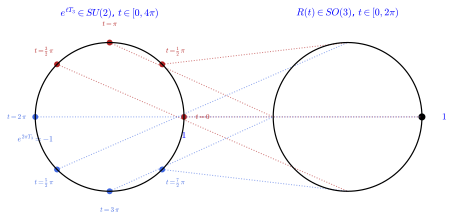
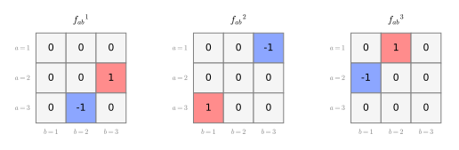
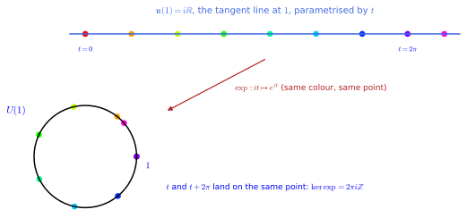
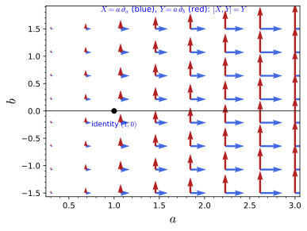
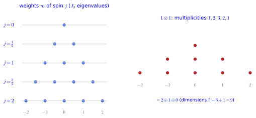
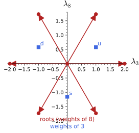
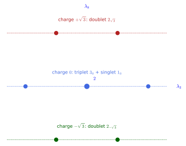

Lie groups and Lie algebras
Lie groups are groups that are also manifolds, so that their elements depend smoothly on continuous parameters; their Lie algebras are the infinitesimal generators, and the exponential map turns generators into group elements. The chapter has two parts: the structure of Lie groups and Lie algebras (matrix groups, brackets, the exponential map, Maurer-Cartan forms), and their representations (weights of su(2), roots of su(3), and the branching of a representation under a subalgebra).
Lie groups and Lie algebras
Lie groups are groups that are also manifolds, so that their elements can be multiplied and also differentiated: the rotations of space, the unitary matrices of quantum mechanics and the phases of electromagnetism are the standard examples. This chapter has four sections. Lie groups defines the objects, the matrix groups that realise all the examples used in these lectures, their subgroups, their smooth actions on manifolds and the coverings between them, with U(1), SO(3) and SU(2) as running examples. Lie algebras linearises a group at its identity: a vector space with a bracket, described by structure constants, acted on by the group through the adjoint representation and equipped with the Killing form. The exponential map goes back from the algebra to the group through one-parameter subgroups, and Maurer-Cartan forms carry the bracket over the whole group as left-invariant vector fields and one-forms obeying the Maurer-Cartan equation. Every statement is followed by three examples and three exercises with hidden solutions, and many exercises have Sage solutions.
Lie groups
Symmetries of a space form a group, and when the symmetries depend smoothly on parameters, as rotations depend on angles, the group is itself a manifold: a Lie group. Isometry groups of metrics, and quotients of one Lie group by another, are the two ways in which Lie groups enter geometry later in the book. This section defines Lie groups, matrix groups, subgroups, actions and covers, and works them out for U(1), SO(3) and SU(2).
Lie groups
The definition combines two structures met earlier, a group and a smooth manifold, and asks only that they be compatible. Compatibility means that the two group operations, multiplication and inversion, are smooth maps in the charts of the manifold.
Definition 1 (Lie group) A Lie group is a group G (Definition 1 of Group theory) that is also a smooth manifold (Definition 6 of Differential geometry), such that multiplication G \times G \to G and inversion G \to G are smooth maps. Its dimension is its dimension as a manifold.
Veriphy. Pending.
Lean. Pending.
Sage. Pending.
The simplest non-trivial Lie group is one-dimensional and abelian. It is the group of phases, which is at the same time the circle and the rotation group of the plane.
Example 1 (The circle group) U(1) = \{e^{i\alpha}\} is the circle S^1 with the multiplication e^{i\alpha}e^{i\beta} = e^{i(\alpha + \beta)}, smooth in the angle chart: a Lie group of dimension 1, abelian. The rotations SO(2) of the plane are the same Lie group (Example 49 of Group theory).
Matrices give non-abelian examples in which smoothness is automatic, because products and inverses are polynomial or rational functions of the entries. The group of unit quaternions, written as 2 \times 2 unitary matrices, is the three-sphere.
Example 2 (SU(2) is the three-sphere) SU(2) is the manifold S^3 of Example 21 of Differential geometry, and matrix multiplication and inversion (g^{-1} = g^\dagger) are polynomial in the entries, hence smooth: a Lie group of dimension 3. The torus T^2 = U(1) \times U(1) is an abelian Lie group of dimension 2, and \mathbb{R}^n under addition a Lie group of dimension n.
The rotations of three-dimensional space are the most familiar non-abelian Lie group. Their manifold is not a sphere but the quotient of S^3 by the antipodal map, and finite groups appear as the zero-dimensional extreme.
Example 3 (The rotation group) SO(3) is a Lie group of dimension three (a rotation is specified by an axis, two parameters, and an angle); it is the quotient SU(2)/\{\pm 1\} (Example 51 of Group theory, Figure 1), hence the manifold S^3 with antipodal points identified, the real projective space \mathbb{RP}^3. Finite groups such as S_3 are Lie groups of dimension 0.
The first exercise examines a group of upper triangular matrices that is non-abelian but still very close to the vector space \mathbb{R}^3. It checks the smoothness of the group operations by computing them explicitly.
Exercise 1 (The Heisenberg group) Let h(x, y, z) = \begin{pmatrix} 1 & x & z \\ 0 & 1 & y \\ 0 & 0 & 1 \end{pmatrix}. Compute h(x_1, y_1, z_1) h(x_2, y_2, z_2) and h(x, y, z)^{-1}, conclude that these matrices form a Lie group of dimension 3 diffeomorphic to \mathbb{R}^3, and show that it is not abelian.
The product is h(x_1 + x_2, y_1 + y_2, z_1 + z_2 + x_1y_2) and the inverse is h(-x, -y, xy - z): both are polynomial in the coordinates (x, y, z), which form a single global chart identifying the group with \mathbb{R}^3. The commutator g_1g_2 - g_2g_1 has the single entry x_1y_2 - x_2y_1 in the corner, which is non-zero in general, so the group is not abelian; only the third coordinate feels the non-commutativity.
x1, y1, z1, x2, y2, z2 = var("x1 y1 z1 x2 y2 z2", domain="real")
def h(x, y, z): return matrix(SR, [[1, x, z], [0, 1, y], [0, 0, 1]])
P = h(x1, y1, z1) * h(x2, y2, z2)
print("h(x1,y1,z1) h(x2,y2,z2) =", P.list())
print("product is h(x1+x2, y1+y2, z1+z2+x1*y2):", P == h(x1 + x2, y1 + y2, z1 + z2 + x1 * y2))
Hi = h(x1, y1, z1).inverse().simplify_full()
print("inverse =", Hi.list(), "; equals h(-x, -y, x*y - z):", bool(Hi == h(-x1, -y1, x1 * y1 - z1)))
C = (h(x1, y1, z1) * h(x2, y2, z2) - h(x2, y2, z2) * h(x1, y1, z1))
print("g1 g2 - g2 g1 =", C.list(), "(nonzero: the group is not abelian; the commutator only moves z)")Output:
h(x1,y1,z1) h(x2,y2,z2) = [1, x1 + x2, x1*y2 + z1 + z2, 0, 1, y1 + y2, 0, 0, 1]
product is h(x1+x2, y1+y2, z1+z2+x1*y2): True
inverse = [1, -x1, x1*y1 - z1, 0, 1, -y1, 0, 0, 1] ; equals h(-x, -y, x*y - z): True
g1 g2 - g2 g1 = [0, 0, -x2*y1 + x1*y2, 0, 0, 0, 0, 0, 0] (nonzero: the group is not abelian; the commutator only moves z)New Lie groups can be made from old ones by taking products. The second exercise shows that the product of two Lie groups is again one, and identifies the tori as products of circles.
Exercise 2 (Products of Lie groups) Show that if G and H are Lie groups then G \times H, with the componentwise product (g, h)(g', h') = (gg', hh'), is a Lie group of dimension \dim G + \dim H. Deduce that the torus T^n = U(1)^n is an abelian Lie group of dimension n, and that SU(2) \times U(1) has dimension 4.
The product manifold G \times H has charts \phi \times \psi built from charts of the factors, and its dimension is the sum. In such charts the multiplication ((g, h), (g', h')) \mapsto (gg', hh') has components that are the multiplications of G and of H in their own charts, which are smooth; the same holds for the inversion (g, h) \mapsto (g^{-1}, h^{-1}). Applied n times to U(1) this gives the torus T^n, abelian because each factor is, of dimension n \cdot 1. SU(2) \times U(1) has dimension 3 + 1 = 4, the same as U(2), to which it is related by the two-to-one map (g, e^{i\alpha}) \mapsto e^{i\alpha}g.
A Lie group structure is not attached to a set but to the operations put on it, and the same manifold can carry an unexpected product. The third exercise transports the multiplication of the positive reals to a half-line by a change of coordinates.
Exercise 3 (A twisted product on a half-line) On M = (-1, \infty) define x * y = x + y + xy. Show that (M, *) is a Lie group: find the identity and the inverse, prove associativity, and exhibit an isomorphism with the multiplicative group (0, \infty) and then with (\mathbb{R}, +).
The map \phi(x) = 1 + x sends M to (0, \infty) and \phi(x * y) = 1 + x + y + xy = (1 + x)(1 + y) = \phi(x)\phi(y), so * is the ordinary product transported by \phi. Associativity, the identity 0 = \phi^{-1}(1) and the inverse x^{-1} = \phi^{-1}(1/(1 + x)) = -x/(1 + x) follow from those of the multiplicative group; all three operations are smooth on M. Composing with the logarithm gives \log(1 + x), a diffeomorphism M \to \mathbb{R} turning * into addition, so (M, *) is the one-dimensional Lie group \mathbb{R} in disguise.
All the examples above are groups of matrices or are isomorphic to such groups. The next definition singles out this class, which is large enough for every group used in these lectures and comes with a ready-made manifold structure.
Definition 2 (Matrix Lie group) A matrix Lie group is a subgroup of GL(n, \mathbb{R}) or GL(n, \mathbb{C}) that is a closed subset (Definition 12 of Sets, relations and topology); every closed subgroup of GL(n) is a Lie group, with the manifold structure inherited from the matrix entries. All Lie groups in these lectures are matrix Lie groups.
Veriphy. Pending.
Lean. Pending.
Sage. Pending.
The largest matrix group is the group of all invertible matrices. Because its defining condition is an inequality, it is an open subset of the space of matrices and its dimension is the full number of entries.
Example 4 (The general linear group) GL(n, \mathbb{R}), the invertible n \times n real matrices, is an open subset of \mathbb{R}^{n^2} (the complement of the closed set \det = 0), so it is a Lie group of dimension n^2 with the identity chart; GL(n, \mathbb{C}) has real dimension 2n^2.
Imposing that a matrix preserve the Euclidean inner product cuts the general linear group down to a closed subgroup. The dimension count, entries minus independent equations, is the method used throughout this section.
Example 5 (Orthogonal and special orthogonal groups) O(n) = \{R : R^{\mathsf{T}}R = 1\}, the isometries of \mathbb{R}^n fixing the origin, is closed in GL(n, \mathbb{R}) and has dimension n(n-1)/2 (the n(n+1)/2 equations R^{\mathsf{T}}R = 1 cut n^2 dimensions down); SO(n) is its component of determinant one (Example 68 of Sets, relations and topology), the rotations. SO(2) has dimension 1 and SO(3) dimension 3.
The complex analogue preserves the Hermitian inner product of \mathbb{C}^n. Adding the condition of unit determinant removes one real dimension, and the special unitary groups include the gauge groups of particle physics.
Example 6 (Unitary and special unitary groups) U(n) = \{U : U^\dagger U = 1\} is closed in GL(n, \mathbb{C}) with dimension n^2, and SU(n), its subgroup of determinant one, has dimension n^2 - 1: SU(2) has dimension 3 and SU(3), the gauge group of the strong interaction, dimension 8. U(1) is the case n = 1.
The figure below shows the relation between the two three-dimensional groups SU(2) and SO(3) along one one-parameter subgroup. The interactive version then follows rotations about several axes acting on a vector.

figures/double_cover.sage.
Interactive figure (drag to rotate or zoom); the static version is above.
The interactive version draws the orbits of the vector v = (0.8, 0, 0.6) of the unit sphere under the rotations e^{t\,n \cdot L} about three axes n. Hovering a marker shows t, the rotated vector and one of the two elements \pm e^{t\,n \cdot T} of SU(2) that cover the rotation, checked numerically through \operatorname{Ad}.
The first exercise on matrix groups counts dimensions by subtracting the number of independent equations from the number of real entries. It confirms the values quoted in the examples for small n.
Exercise 4 (Dimensions of matrix groups) Count the dimensions of O(n), U(n) and SU(n) from the number of independent equations defining them, and check the values for n = 2, 3.
R^{\mathsf{T}}R = 1 is a symmetric matrix equation, n(n+1)/2 real conditions on n^2 entries: \dim O(n) = n(n-1)/2, giving 1 and 3. U^\dagger U = 1 is Hermitian, n^2 real conditions on 2n^2 real entries: \dim U(n) = n^2, giving 4 and 9; \det U = 1 removes one more (the phase), \dim SU(n) = n^2 - 1, giving 3 and 8. The equal dimensions 3 of SO(3) and SU(2) are explained by the double cover.
The dimension count can be made rigorous with the regular value theorem: a level set of a function whose gradient never vanishes on it is a submanifold. The second exercise applies this to the determinant.
Exercise 5 (SL(2, \mathbb{R}) is three-dimensional) Show that SL(2, \mathbb{R}) = \{\det = 1\} is a closed subgroup of GL(2, \mathbb{R}), compute the gradient of \det on \mathbb{R}^4, and deduce that it is a submanifold of dimension 3 whose tangent space at 1 is the space of traceless matrices.
SL(2, \mathbb{R}) is a subgroup because \det is multiplicative, and closed because \det is continuous. For M = \begin{pmatrix} a & b \\ c & d \end{pmatrix} the gradient of \det = ad - bc is (d, -c, -b, a), which vanishes only at M = 0, where \det = 0; so 1 is a regular value and \{\det = 1\} is a submanifold of dimension 4 - 1 = 3. At the identity the gradient is (1, 0, 0, 1), and a tangent vector X must satisfy X_{11} + X_{22} = 0: the tangent space is \{\operatorname{tr} X = 0\}, the Lie algebra \mathfrak{sl}(2, \mathbb{R}) of Example 27. The curve in the Sage output has determinant one and a traceless velocity at t = 0.
a, b, c, d = var("a b c d", domain="real")
f = a * d - b * c
grad = vector([diff(f, v) for v in (a, b, c, d)])
print("grad det =", grad)
print("grad det = 0 forces a = b = c = d = 0, where det = 0, so 1 is a regular value:", solve(list(grad), [a, b, c, d]))
print("gradient at the identity (a, b, c, d) = (1, 0, 0, 1):", grad.subs(a=1, b=0, c=0, d=1))
print("tangent vectors X at 1 satisfy grad . X = X_11 + X_22 = tr X = 0: dimension", 4 - matrix(QQ, [[1, 0, 0, 1]]).rank())
t = var("t"); M = matrix(SR, [[1, t], [0, 1]]) * matrix(SR, [[cos(t), -sin(t)], [sin(t), cos(t)]])
print("a curve in SL(2, R):", M.list(), "; det =", M.det().simplify_full(), "; velocity at t = 0:", diff(M, t).subs(t=0).list(), "trace", diff(M, t).subs(t=0).trace())Output:
grad det = (d, -c, -b, a)
grad det = 0 forces a = b = c = d = 0, where det = 0, so 1 is a regular value: [
[a == 0, b == 0, c == 0, d == 0]
]
gradient at the identity (a, b, c, d) = (1, 0, 0, 1): (1, 0, 0, 1)
tangent vectors X at 1 satisfy grad . X = X_11 + X_22 = tr X = 0: dimension 3
a curve in SL(2, R): [t*sin(t) + cos(t), t*cos(t) - sin(t), sin(t), cos(t)] ; det = 1 ; velocity at t = 0: [0, 0, 1, 0] trace 0Groups preserving a bilinear form other than the inner product are matrix groups in the same way. The third exercise treats the antisymmetric form of classical mechanics, whose group is the symplectic group.
Exercise 6 (The symplectic group) Let J = \begin{pmatrix} 0 & 1_n \\ -1_n & 0 \end{pmatrix} and Sp(2n, \mathbb{R}) = \{M : M^{\mathsf{T}}JM = J\}. Show that it is a matrix Lie group, that Sp(2, \mathbb{R}) = SL(2, \mathbb{R}), and that its dimension is n(2n + 1); check the dimension with Sage for n = 1, 2, 3.
If M and N preserve J then (MN)^{\mathsf{T}}J(MN) = N^{\mathsf{T}}(M^{\mathsf{T}}JM)N = J, and taking determinants of M^{\mathsf{T}}JM = J gives (\det M)^2 = 1, so M is invertible with inverse J^{-1}M^{\mathsf{T}}J in the group; the condition is polynomial, so the subgroup is closed. For n = 1 a direct computation gives M^{\mathsf{T}}JM = (\det M)\,J, so the condition is \det M = 1. In general M^{\mathsf{T}}JM is antisymmetric, so the equation imposes 2n(2n - 1)/2 = n(2n - 1) conditions on 4n^2 entries, leaving 4n^2 - n(2n - 1) = n(2n + 1); Sage confirms this by computing the dimension of the tangent space \{X^{\mathsf{T}}J + JX = 0\}:
a, b, c, d = var("a b c d")
J = matrix(SR, [[0, 1], [-1, 0]])
M = matrix(SR, [[a, b], [c, d]])
print("M^T J M =", (M.transpose() * J * M).list(), "; equals det(M) J:", bool(M.transpose() * J * M == M.det() * J))
for n in [1, 2, 3]:
Jn = block_matrix([[zero_matrix(QQ, n), identity_matrix(QQ, n)], [-identity_matrix(QQ, n), zero_matrix(QQ, n)]])
# tangent space at 1: X^T J + J X = 0, a linear system for the (2n)^2 entries of X
E = [matrix(QQ, 2 * n, 2 * n, {(i, j): 1}) for i in range(2 * n) for j in range(2 * n)]
A = matrix(QQ, [(e.transpose() * Jn + Jn * e).list() for e in E]).transpose()
print(f"n = {n}: dim sp({2*n}) = {4*n*n - A.rank()}, formula n(2n+1) = {n*(2*n+1)}")Output:
M^T J M = [0, -b*c + a*d, b*c - a*d, 0] ; equals det(M) J: True
n = 1: dim sp(2) = 3, formula n(2n+1) = 3
n = 2: dim sp(4) = 10, formula n(2n+1) = 10
n = 3: dim sp(6) = 21, formula n(2n+1) = 21Inside a Lie group, the subsets that are groups and submanifolds at the same time inherit the structure. The next definition names them and includes the most important case, the image of a homomorphism from the real line.
Definition 3 (Lie subgroup) A Lie subgroup of G is a subgroup that is also a submanifold; closed subgroups of a Lie group are Lie subgroups. A one-parameter subgroup is a smooth homomorphism \mathbb{R} \to G, t \mapsto g(t) with g(s)g(t) = g(s + t) (Section 1.1.3).
Veriphy. Pending.
Lean. Pending.
Sage. Pending.
The rotations about one fixed axis are the basic example of a closed subgroup. In SU(2) the corresponding subgroup is the circle of diagonal matrices, and the double cover maps the second onto the first.
Example 7 (SO(2) \subset SO(3) and U(1) \subset SU(2)) The rotations about the Z-axis form a closed subgroup SO(2) of SO(3), a circle inside \mathbb{RP}^3; the diagonal matrices e^{tT_3} form a closed subgroup U(1) of SU(2), a great circle of S^3 (Figure 1). Both are one-parameter subgroups, R(s)R(t) = R(s + t) (Proposition 1).
A one-parameter subgroup is always a Lie subgroup, but it need not be closed. On the torus the slope of the line decides between a closed circle and a dense winding.
Example 8 (Subgroups of the torus) In T^2 = U(1) \times U(1) the subgroup \{(e^{it}, e^{it})\} is a closed circle, while \{(e^{it}, e^{i\alpha t})\} with \alpha irrational is a one-parameter subgroup that winds densely around the torus (Example 33 of Differential geometry) and is not closed: a Lie subgroup need not be closed.
Discrete subgroups are the zero-dimensional Lie subgroups. Dividing by them does not change the dimension but can change the global shape, as the passage from SU(2) to SO(3) shows.
Example 9 (Discrete subgroups) \{\pm 1\} \subset SU(2), \mathbb{Z}_n \subset U(1) (the n-th roots of unity) and 2\pi\mathbb{Z} \subset \mathbb{R} are closed subgroups of dimension 0; quotients by them, SU(2)/\{\pm 1\} = SO(3), U(1)/\mathbb{Z}_n \cong U(1) and \mathbb{R}/2\pi\mathbb{Z} = U(1), are again Lie groups of the same dimension.
Closedness is the property that guarantees a subgroup is a Lie subgroup with the induced topology. The first exercise sorts four subgroups by this criterion.
Exercise 7 (Closed or not) Decide which of the following subgroups of a Lie group are closed: SO(2) \subset SO(3); the diagonal matrices in GL(n, \mathbb{R}); the irrational line \{(e^{it}, e^{i\sqrt2 t})\} \subset T^2; \mathbb{Q} \subset \mathbb{R}.
SO(2) is closed (defined by the equations R e_3 = e_3). The diagonal invertible matrices are closed (the off-diagonal entries vanish), a Lie group of dimension n. The irrational line is not closed: it is dense in the torus, and its closure is all of T^2. \mathbb{Q} is not closed in \mathbb{R} (its closure is \mathbb{R}) and is not a Lie subgroup at all, being countable but not discrete.
The elements commuting with the whole group form a closed subgroup, the centre. The second exercise computes it for SU(2) and relates it to the kernel of the double cover.
Exercise 8 (The centre of SU(2)) Show that g \in SU(2) commutes with all of SU(2) if and only if it commutes with the three generators T_a, and deduce that the centre is \{\pm 1\}. Is it a closed subgroup?
If g commutes with every element it commutes with e^{tT_a} for all t, and differentiating at t = 0 gives gT_a = T_ag; conversely, every element of SU(2) is a product of exponentials of the T_a (Equation 6 of Differential geometry), so commuting with the T_a suffices. A 2 \times 2 matrix commuting with \sigma_3 is diagonal, and a diagonal matrix commuting with \sigma_1 has equal diagonal entries: g = \lambda 1. Unitarity and \det g = \lambda^2 = 1 give \lambda = \pm 1. The centre \{\pm 1\} is finite, hence closed, and it is the kernel of g \mapsto \operatorname{Ad}_g, since \operatorname{Ad}_g = 1 means precisely that g commutes with the Lie algebra.
Closed abelian subgroups that are as large as possible play the role of coordinate axes in a compact group. The third exercise finds them for the special unitary groups.
Exercise 9 (The diagonal torus of SU(n)) Show that the diagonal matrices in SU(n) form a closed subgroup isomorphic to the torus T^{n - 1}, and that for n = 2 it is the subgroup U(1) of Example 7.
A diagonal unitary matrix has entries of modulus one, \operatorname{diag}(e^{i\alpha_1}, \dots, e^{i\alpha_n}), and the determinant condition is \alpha_1 + \dots + \alpha_n \in 2\pi\mathbb{Z}. The vanishing of the off-diagonal entries is a closed condition and products of diagonal matrices are diagonal, so this is a closed subgroup. The map (e^{i\alpha_1}, \dots, e^{i\alpha_{n-1}}) \mapsto \operatorname{diag}(e^{i\alpha_1}, \dots, e^{i\alpha_{n-1}}, e^{-i(\alpha_1 + \dots + \alpha_{n-1})}) is an isomorphism from T^{n-1} onto it, smooth with smooth inverse. For n = 2 the subgroup is \operatorname{diag}(e^{i\alpha}, e^{-i\alpha}) = e^{-2\alpha T_3}, the circle of Example 7.
Actions and covers
A Lie group is usually met through what it does to another manifold. The definition of a smooth action adds to the group action of an abstract group the requirement that it depend smoothly on both the group element and the point.
Definition 4 (Smooth action) A smooth action of a Lie group G on a manifold M is a group action (Definition 9 of Group theory) (g, p) \mapsto g \cdot p that is a smooth map G \times M \to M. The orbit map g \mapsto g \cdot p is then smooth, and the stabiliser G_p (Definition 11 of Group theory) is a closed subgroup, called the isotropy group of p.
Veriphy. Pending.
Lean. Pending.
Sage. Pending.
Rotations acting on the sphere are the model of a transitive action with a non-trivial isotropy group. The sphere is then recovered as a quotient of the group by that isotropy group.
Example 10 (Rotations of the sphere) SO(3) acts smoothly and transitively on S^2 by matrix multiplication; the isotropy group of the north pole is SO(2), and the orbit-stabiliser bijection SO(3)/SO(2) \to S^2 is a diffeomorphism (Coset spaces). The orbits of the subgroup SO(2) are the parallels and the two poles.
An action can also be free, with every isotropy group trivial. The circle acting on the three-sphere by right multiplication is free, and its orbit space is the two-sphere.
Example 11 (U(1) on the three-sphere) U(1) acts on SU(2) = S^3 by right multiplication g \mapsto g\,e^{tT_3}, smoothly and freely (no fixed points); the orbits are circles, the fibres of the Hopf fibration (The Hopf fibration), and the quotient is S^2.
The isometries of a Riemannian or pseudo-Riemannian metric form a Lie group acting on the manifold. This is the source of most actions in physics, with spacetime symmetries as the leading case.
Example 12 (Isometry groups) The isometries of a metric (Definition 49 of Differential geometry) form a Lie group acting smoothly on the manifold: SO(3) for the round sphere, U(1) for the circle, the Euclidean group E(2) for the plane, the Poincaré group for Minkowski space, with the Killing fields of Killing vectors as generators (Section 1.1.3).
The isotropy group of a point can be found infinitesimally, by asking which generators leave the point fixed. The first exercise does this for the north pole of the sphere and then describes the orbits of the isotropy group.
Exercise 10 (The isotropy group of the north pole) Find all X = x_aL_a \in \mathfrak{so}(3) with Xe_3 = 0, check that the rotations e^{tL_3} fix e_3, and compute the orbit of the point (\sin\theta, 0, \cos\theta) under them.
Xe_3 = (x_2, -x_1, 0), which vanishes exactly when x_1 = x_2 = 0: the generators of the isotropy group are the multiples of L_3, and the isotropy group of e_3 is the SO(2) of rotations about the Z-axis. Its orbit through (\sin\theta, 0, \cos\theta) is (\cos t\sin\theta, \sin t\sin\theta, \cos\theta), the parallel at height \cos\theta and radius \sin\theta, which shrinks to a point at the poles:
x1, x2, x3 = var("x1 x2 x3")
L = [matrix(SR, [[0, 0, 0], [0, 0, -1], [0, 1, 0]]), matrix(SR, [[0, 0, 1], [0, 0, 0], [-1, 0, 0]]), matrix(SR, [[0, -1, 0], [1, 0, 0], [0, 0, 0]])]
X = x1 * L[0] + x2 * L[1] + x3 * L[2]
e3 = vector(SR, [0, 0, 1])
print("X e_3 =", X * e3, "; vanishes iff", solve(list(X * e3), [x1, x2]))
t, th = var("t th", domain="real")
R = (t * L[2]).exp().apply_map(lambda e: e.rectform().simplify_full())
print("R(t) e_3 = e_3:", R * e3 == e3)
p = vector(SR, [sin(th), 0, cos(th)])
orb = (R * p).simplify_full()
print("orbit of (sin th, 0, cos th) under SO(2):", orb, "; height constant:", bool(orb[2] == cos(th)), "; radius^2 =", (orb[0]^2 + orb[1]^2).simplify_full())Output:
X e_3 = (x2, -x1, 0) ; vanishes iff [
[x1 == 0, x2 == 0]
]
R(t) e_3 = e_3: True
orbit of (sin th, 0, cos th) under SO(2): (cos(t)*sin(th), sin(t)*sin(th), cos(th)) ; height constant: True ; radius^2 = sin(th)^2Freeness of an action is a statement about isotropy groups and can be checked by solving a single equation. The second exercise checks it for the right action of U(1) on SU(2).
Exercise 11 (The Hopf action is free) Show that g\,e^{tT_3} = g for some g \in SU(2) implies e^{tT_3} = 1, so that the right action of the circle \{e^{tT_3} : t \in [0, 4\pi)\} on SU(2) is free. Contrast it with the left action of the same circle on the sphere S^2 through SO(3).
Multiplying g\,e^{tT_3} = g on the left by g^{-1} gives e^{tT_3} = 1, so t \in 4\pi\mathbb{Z} by Equation 6: only the identity of the circle fixes a point, at every point. This argument works for right (or left) multiplication in any group. Acting on S^2 through the double cover, the same circle maps to the rotations about the Z-axis, which fix both poles: there the isotropy group is the whole circle, while at every other point it is \{\pm 1\}, the elements t = 0, 2\pi that act as the identity rotation. That action is neither free nor effective.
The upper half-plane carries an action of the group SL(2, \mathbb{R}) by fractional linear maps. The third exercise checks that it is an action and finds the isotropy group of the point i.
Exercise 12 (Möbius transformations of the half-plane) For M = \begin{pmatrix} a & b \\ c & d \end{pmatrix} \in SL(2, \mathbb{R}) and \operatorname{Im} z > 0 let M \cdot z = (az + b)/(cz + d). Show that A \cdot (B \cdot z) = (AB) \cdot z, that \operatorname{Im}(M \cdot z) > 0, and that the isotropy group of i is SO(2).
Composing two fractional linear maps multiplies their matrices, as Sage confirms symbolically. With z = x + iy, \operatorname{Im}(M \cdot z) = y\det M/|cz + d|^2 = y/|cz + d|^2 > 0. The condition M \cdot i = i reads ai + b = i(ci + d), whose real and imaginary parts give c = -b and d = a; then \det M = a^2 + b^2 = 1 and M is a rotation matrix. So the half-plane is the orbit SL(2, \mathbb{R})/SO(2), just as the sphere is SO(3)/SO(2) (Example 10). Since -1 acts trivially, the action is not effective; the effective group is PSL(2, \mathbb{R}).
z = var("z"); a1, b1, c1, d1, a2, b2, c2, d2 = var("a1 b1 c1 d1 a2 b2 c2 d2")
def act(M, w): return (M[0, 0] * w + M[0, 1]) / (M[1, 0] * w + M[1, 1])
A = matrix(SR, [[a1, b1], [c1, d1]]); B = matrix(SR, [[a2, b2], [c2, d2]])
print("A.(B.z) = (AB).z:", bool((act(A, act(B, z)) - act(A * B, z)).simplify_full() == 0))
x, y = var("x y", domain="real"); a, b, c, d = var("a b c d", domain="real")
w = act(matrix(SR, [[a, b], [c, d]]), x + I * y)
print("Im(M.z) =", w.imag().simplify_full().factor(), "= y det M / |cz + d|^2, positive when det M = 1 and y > 0")
t = var("t", domain="real")
Rt = matrix(SR, [[cos(t), -sin(t)], [sin(t), cos(t)]])
print("rotation matrices fix i:", bool(act(Rt, I).simplify_full() == I))
eq = (a * I + b) - I * (c * I + d) # M.i = i <=> a i + b = i (c i + d)
print("real and imaginary parts of a i + b - i (c i + d):", eq.real(), ",", eq.imag(), "; solved:", solve([eq.real() == 0, eq.imag() == 0], [c, d]))
print("then det M = a^2 + b^2 =", (a * a - b * (-b)), ": M = [[a, b], [-b, a]] with a^2 + b^2 = 1 is a rotation in SO(2)")Output:
A.(B.z) = (AB).z: True
Im(M.z) = -(b*c - a*d)*y/(c^2*x^2 + c^2*y^2 + 2*c*d*x + d^2) = y det M / |cz + d|^2, positive when det M = 1 and y > 0
rotation matrices fix i: True
real and imaginary parts of a i + b - i (c i + d): b + c , a - d ; solved: [
[c == -b, d == a]
]
then det M = a^2 + b^2 = a^2 + b^2 : M = [[a, b], [-b, a]] with a^2 + b^2 = 1 is a rotation in SO(2)Two different Lie groups can have the same local structure, one being a quotient of the other by a discrete subgroup. The definition of a covering homomorphism makes this relation precise.
Definition 5 (Covering homomorphism) A surjective homomorphism of Lie groups \pi : \tilde G \to G with finite kernel is a covering; it is locally a diffeomorphism, and \tilde G and G have the same Lie algebra (Section 1.1.2). When the kernel has two elements it is a double cover.
Veriphy. Pending.
Lean. Pending.
Sage. Pending.
The double cover of the rotation group by SU(2) is the most important covering in physics. It is realised by the adjoint action of SU(2) on its own Lie algebra.
Example 13 (SU(2) \to SO(3)) The adjoint homomorphism g \mapsto \operatorname{Ad}_g of Example 51 of Group theory is a double cover: each rotation has the two preimages \pm g (Figure 1, Exercise 13). A 2\pi rotation lifts to -1, which is why spinors (Spinor fields and gamma matrices) change sign under a full turn.
The real line covers the circle with infinitely many sheets. This covering is the exponential map of the circle group and explains the angle coordinate defined up to multiples of 2\pi.
Example 14 (\mathbb{R} \to U(1)) t \mapsto e^{it} is a surjective homomorphism with infinite kernel 2\pi\mathbb{Z}: a covering with infinitely many sheets, the universal cover of the circle, which is why the circle is \mathbb{R}/2\pi\mathbb{Z} (Example 54 of Group theory).
The double cover of SO(3) is the first member of a family. The spin groups cover all rotation groups of dimension at least three, and the Lorentz group has an analogous cover.
Example 15 (Spin groups) Spin(n) is the double cover of SO(n) for n \geq 3: Spin(3) = SU(2) and Spin(4) = SU(2) \times SU(2) (Section 1.2.3); the Lorentz group SO(3, 1) has the double cover SL(2, \mathbb{C}), on which the spinors of Part II live.
The first exercise constructs the double cover explicitly on a one-parameter subgroup. It shows that the rotation angle is twice the angle in SU(2), which is the source of the factor two between their periods.
Exercise 13 (The double cover SU(2) \to SO(3)) Show that \operatorname{Ad}_g for g = e^{tT_3} acts on the basis T_a as the rotation by t about the third axis, and that g = e^{2\pi T_3} = -1 acts trivially: the map g \mapsto \operatorname{Ad}_g is a two-to-one homomorphism SU(2) \to SO(3).
g T_3 g^{-1} = T_3 since g is a function of T_3; and with Equation 3, g T_1 g^{-1} = \cos t\, T_1 + \sin t\, T_2, g T_2 g^{-1} = -\sin t\, T_1 + \cos t\, T_2 (expand g = \cos\frac{t}{2} - i\sin\frac{t}{2}\sigma_3 and use \sigma_3\sigma_1\sigma_3 = -\sigma_1, \sigma_3\sigma_1 = i\sigma_2). The matrix R_{ab} defined by g T_b g^{-1} = R_{ab} T_a is the rotation by t, and at t = 2\pi it is the identity while g = -1. Since \operatorname{Ad}_{-g} = \operatorname{Ad}_g, the homomorphism is two-to-one, and every rotation arises (any rotation is a product of rotations about axes, each of which is \operatorname{Ad} of some e^{tT_a}). In Sage:
t = var('t', domain='real')
s = [matrix(SR, [[0,1],[1,0]]), matrix(SR, [[0,-I],[I,0]]), matrix(SR, [[1,0],[0,-1]])]
T = [-I/2*sa for sa in s]
g = cos(t/2)*identity_matrix(SR, 2) - I*sin(t/2)*s[2] # exp(t T_3)
# Ad_g T_b = g T_b g^{-1} = sum_a R_ab T_a ; read off R_ab = -2 Tr(T_a g T_b g^{-1})
R = matrix(SR, 3, 3, lambda a, b: (-2*(T[a]*g*T[b]*g.conjugate_transpose()).trace()).simplify_full().trig_reduce())
print("Ad(exp(t T3)) in the basis T_a ="); print(R)
print("rotation by t about the third axis:", bool(R == matrix(SR, [[cos(t), -sin(t), 0], [sin(t), cos(t), 0], [0, 0, 1]])))
print("exp(2 pi T3) = -1:", bool(g.subs(t=2*pi) == -identity_matrix(SR, 2)), " Ad(exp(2 pi T3)) = 1:", bool(R.subs(t=2*pi) == identity_matrix(SR, 3)))Output:
Ad(exp(t T3)) in the basis T_a =
[ cos(t) -sin(t) 0]
[ sin(t) cos(t) 0]
[ 0 0 1]
rotation by t about the third axis: True
exp(2 pi T3) = -1: True Ad(exp(2 pi T3)) = 1: TrueA covering of the circle by itself has a finite kernel of any size. The second exercise identifies the kernel and the number of sheets of the power maps.
Exercise 14 (Power maps of the circle) Show that p_n : U(1) \to U(1), z \mapsto z^n for n \geq 1, is a surjective homomorphism, find its kernel, and show that it is an n-sheeted covering in the sense of Definition 5. Which p_n factor through the double cover p_2?
(zw)^n = z^nw^n because the group is abelian, and e^{i\alpha} has the preimage e^{i\alpha/n}, so p_n is a surjective homomorphism. Its kernel is the set of n-th roots of unity \mathbb{Z}_n, a finite group, so p_n is a covering with n preimages over every point; in the angle chart it is \alpha \mapsto n\alpha, whose derivative n never vanishes, so it is a local diffeomorphism. p_n = q \circ p_2 for a homomorphism q exactly when the kernel \{\pm 1\} of p_2 lies in \mathbb{Z}_n, that is, when n is even, and then q = p_{n/2}.
The double cover can be inverted explicitly: given a rotation one can solve for the two elements of SU(2) above it. The third exercise does this for a quarter turn about the X-axis.
Exercise 15 (Lifting a rotation to SU(2)) Write g = a_0 1 + 2(a_1T_1 + a_2T_2 + a_3T_3) with a_0^2 + \dots + a_3^2 = 1 and solve \operatorname{Ad}_g = R_X(\pi/2), the rotation by \pi/2 about the X-axis. Compare the solutions with \pm e^{(\pi/2)T_1}.
The general element of SU(2) is a_0 1 - i a_k\sigma_k with (a_0, a) a unit vector, which is the given form since 2T_k = -i\sigma_k. The equations \operatorname{Ad}_g = R have exactly two solutions, (a_0, a_1, a_2, a_3) = \pm (\tfrac{1}{\sqrt2}, \tfrac{1}{\sqrt2}, 0, 0); by Equation 5 the plus sign is e^{(\pi/2)T_1} = \cos\frac{\pi}{4} - i\sin\frac{\pi}{4}\sigma_1, and the minus sign is -e^{(\pi/2)T_1} = e^{(\pi/2 + 2\pi)T_1}. In general g covers the rotation by 2\arccos a_0 about the unit vector a/|a|, and -g gives the angle 2\pi - 2\arccos a_0 about -a/|a|, which is the same rotation:
s = [matrix(SR, [[0, 1], [1, 0]]), matrix(SR, [[0, -I], [I, 0]]), matrix(SR, [[1, 0], [0, -1]])]
T = [-I / 2 * sa for sa in s]
def Ad(g):
gi = g.inverse()
return matrix(SR, 3, 3, lambda a, b: (-2 * (T[a] * g * T[b] * gi).trace()).simplify_full())
R = matrix(SR, [[1, 0, 0], [0, 0, -1], [0, 1, 0]]) # rotation by pi/2 about X: e^{(pi/2) L_1}
a0, a1, a2, a3 = var("a0 a1 a2 a3", domain="real")
g = a0 * identity_matrix(SR, 2) + 2 * (a1 * T[0] + a2 * T[1] + a3 * T[2])
eqs = [e == 0 for e in (Ad(g) * (a0^2 + a1^2 + a2^2 + a3^2) - R * (a0^2 + a1^2 + a2^2 + a3^2)).list()] + [a0^2 + a1^2 + a2^2 + a3^2 == 1]
sols = solve(eqs, [a0, a1, a2, a3])
print("solutions (a0, a1, a2, a3):", sols)
g0 = (pi / 2 * T[0]).exp().apply_map(lambda e: e.simplify_full())
print("e^{(pi/2) T_1} =", g0.list(), "; Ad of it = R:", Ad(g0) == R, "; Ad of minus it = R:", Ad(-g0) == R)Output:
solutions (a0, a1, a2, a3): [
[a0 == -1/2*sqrt(2), a1 == -1/2*sqrt(2), a2 == 0, a3 == 0],
[a0 == 1/2*sqrt(2), a1 == 1/2*sqrt(2), a2 == 0, a3 == 0]
]
e^{(pi/2) T_1} = [1/2*sqrt(2), -1/2*I*sqrt(2), -1/2*I*sqrt(2), 1/2*sqrt(2)] ; Ad of it = R: True ; Ad of minus it = R: TrueThe rotations about the Z-axis have been used throughout the section as the basic one-parameter subgroup. The proposition below records their three defining properties: the identity at zero, the composition law and orthogonality.
Proposition 1 (SO(2) is a one-parameter group of orthogonal matrices) R(0) = 1, R(s)R(t) = R(s + t) and R(t)R(t)^{\mathsf{T}} = 1 for the rotation matrices about the Z-axis.
Veriphy. Pending.
Lean. KaluzaKlein.rotation_zero, KaluzaKlein.rotation_mul and KaluzaKlein.rotation_orthogonal.
/-- Rotations compose by adding angles: `R(s) R(t) = R(s + t)`. -/
theorem rotation_mul (s t : ℝ) : rotation s * rotation t = rotation (s + t)KaluzaKlein.rotation_mul in KaluzaKlein/Geometry/LieGroups.lean, namespace KaluzaKlein
Sage. Pending.
The composition law of the proposition is a pair of trigonometric identities in disguise. Writing out one entry of the product makes the connection explicit.
Example 16 (The addition formulas) The upper left entry of R(s)R(t), with R(t) = \begin{pmatrix} \cos t & -\sin t & 0 \\ \sin t & \cos t & 0 \\ 0 & 0 & 1 \end{pmatrix}, is \cos s\cos t - \sin s\sin t, and the lower left entry of the upper block is \sin s\cos t + \cos s\sin t; the identity R(s)R(t) = R(s + t) is the addition formulas for cosine and sine. In complex form, R(t) acts on x + iy as multiplication by e^{it}, and the law becomes e^{is}e^{it} = e^{i(s + t)}.
Orthogonality says that the inverse of a rotation is its transpose. Combined with the composition law it identifies this inverse as the rotation by the opposite angle.
Example 17 (Inverse equals transpose) From R(s)R(t) = R(s + t) and R(0) = 1, R(t)R(-t) = 1, so R(t)^{-1} = R(-t); and R(-t) = R(t)^{\mathsf{T}} because cosine is even and sine odd. This is R(t)R(t)^{\mathsf{T}} = 1 again, so the three statements of the proposition are consistent: t \mapsto R(t) is a homomorphism into O(3), and since \det R(t) = \cos^2t + \sin^2t = 1 its image lies in SO(3).
The composition law says that t \mapsto R(t) is a homomorphism from the real line. Its kernel identifies the image with a circle.
Example 18 (SO(2) \cong \mathbb{R}/2\pi\mathbb{Z} \cong U(1)) R(t) = 1 exactly when \cos t = 1, that is, t \in 2\pi\mathbb{Z}: the homomorphism \mathbb{R} \to SO(3) has kernel 2\pi\mathbb{Z} and its image, the subgroup SO(2) of rotations about the Z-axis, is isomorphic to \mathbb{R}/2\pi\mathbb{Z}. The map R(t) \mapsto e^{it} is then a well-defined isomorphism SO(2) \cong U(1), the identification of Example 1.
The first exercise checks the three statements in a computer algebra system and adds the determinant and the period. It is a quick consistency check of the matrix used throughout the chapter.
Exercise 16 (Checking the group law symbolically) With Sage, verify R(0) = 1, R(s)R(t) = R(s + t), R(t)R(t)^{\mathsf{T}} = 1, \det R(t) = 1, R(t)^{-1} = R(-t) and R(2\pi) = 1.
All six statements hold symbolically after trig_expand, which applies the addition formulas of Example 16:
s, t = var("s t", domain="real")
def R(u): return matrix(SR, [[cos(u), -sin(u), 0], [sin(u), cos(u), 0], [0, 0, 1]])
print("R(0) = 1:", R(0) == identity_matrix(SR, 3))
D = (R(s) * R(t) - R(s + t)).apply_map(lambda e: e.trig_expand().simplify_full())
print("R(s) R(t) - R(s + t) =", D.list())
print("R R^T =", (R(t) * R(t).transpose()).simplify_full().list(), "; det R =", R(t).det().simplify_full())
print("R(t)^{-1} = R(-t) = R(t)^T:", bool(R(t).inverse().simplify_full() == R(-t)) and R(-t) == R(t).transpose())
print("R(2 pi) = 1:", R(2 * pi) == identity_matrix(SR, 3))Output:
R(0) = 1: True
R(s) R(t) - R(s + t) = [0, 0, 0, 0, 0, 0, 0, 0, 0]
R R^T = [1, 0, 0, 0, 1, 0, 0, 0, 1] ; det R = 1
R(t)^{-1} = R(-t) = R(t)^T: True
R(2 pi) = 1: TrueThe proposition shows that every R(t) lies in SO(2), the group of rotations of the plane spanned by e_1 and e_2. The second exercise proves the converse, that every rotation of the plane is some R(t).
Exercise 17 (Every plane rotation is an R(t)) Show that every 2 \times 2 real matrix M with M^{\mathsf{T}}M = 1 and \det M = 1 is \begin{pmatrix} \cos t & - \sin t \\ \sin t & \cos t \end{pmatrix} for some t, unique modulo 2\pi. Conclude that SO(2) is abelian.
The first column (a, b) of M is a unit vector, so (a, b) = (\cos t, \sin t) for a unique t modulo 2\pi. The second column is a unit vector orthogonal to it, hence \pm(-b, a), and \det M = 1 selects the plus sign. So M = R(t), and SO(2) = \{R(t)\}. Two rotations commute because R(s)R(t) = R(s + t) = R(t + s) = R(t)R(s); this fails for SO(3), where rotations about different axes do not commute.
Replacing the Euclidean form by the Minkowski form of the plane turns rotations into boosts. The third exercise checks which properties of the proposition survive.
Exercise 18 (Boosts of the Minkowski plane) Let B(w) = \begin{pmatrix} \cosh w & \sinh w \\ \sinh w & \cosh w \end{pmatrix} and \eta = \operatorname{diag}(1, - 1). Show that B(0) = 1, B(v)B(w) = B(v + w) and B(w)^{\mathsf{T}}\eta B(w) = \eta, but that B(w) is not orthogonal and that w \mapsto B(w) is injective.
The composition law is the addition formulas for \cosh and \sinh, and B^{\mathsf{T}}\eta B = \eta is \cosh^2w - \sinh^2w = 1; so the boosts form a one-parameter subgroup of SO(1, 1), the group preserving \eta. BB^{\mathsf{T}} = B(2w) \neq 1 for w \neq 0, so they are not orthogonal. The trace 2\cosh w equals 2 only at w = 0, so B(w) = 1 only for w = 0: the kernel is trivial and the subgroup is a line, not a circle. The rapidity w is additive, as the rotation angle is.
v, w = var("v w", domain="real")
def B(u): return matrix(SR, [[cosh(u), sinh(u)], [sinh(u), cosh(u)]])
eta = diagonal_matrix(SR, [1, -1])
print("B(v) B(w) - B(v + w) =", (B(v) * B(w) - B(v + w)).apply_map(lambda e: e.exponentialize().simplify_full()).list())
print("B^T eta B - eta =", (B(w).transpose() * eta * B(w) - eta).apply_map(lambda e: e.exponentialize().simplify_full()).list())
print("det B =", B(w).det().exponentialize().simplify_full(), "; B B^T = 1?", bool((B(w) * B(w).transpose()).simplify_full() == 1), "(not orthogonal)")
print("tr B(w) = 2 cosh w, equal to 2 only at w = 0:", solve(2 * cosh(w) == 2, w))Output:
B(v) B(w) - B(v + w) = [0, 0, 0, 0]
B^T eta B - eta = [0, 0, 0, 0]
det B = 1 ; B B^T = 1? False (not orthogonal)
tr B(w) = 2 cosh w, equal to 2 only at w = 0: [
w == 0
]Lie algebras
The structure of a Lie group near the identity is captured by a vector space with a bracket, its Lie algebra, and most computations with Lie groups are done there: gauge fields take values in a Lie algebra, and symmetry conditions on fields become linear equations in one. This section defines Lie algebras abstractly and as tangent spaces of matrix groups, introduces structure constants, the adjoint representation and the Killing form, and works out \mathfrak{so}(3) and \mathfrak{su}(2) in detail.
Lie algebras
The abstract definition keeps only the algebraic properties of the commutator of matrices. A bracket that is bilinear, antisymmetric and obeys the Jacobi identity is all that is needed for the theory that follows.
Definition 6 (Lie algebra) A Lie algebra is a vector space \mathfrak{g} with a bilinear bracket [X, Y] that is antisymmetric, [X, Y] = -[Y, X], and satisfies the Jacobi identity [X, [Y, Z]] + [Y, [Z, X]] + [Z, [X, Y]] = 0. It is abelian if all brackets vanish.
Veriphy. Pending.
Lean. Pending.
Sage. Pending.
The commutator of matrices is the bracket from which the definition was abstracted. Every associative algebra gives a Lie algebra in the same way, and the matrix Lie algebras of this chapter are subspaces closed under it.
Example 19 (Matrices with the commutator) Any associative algebra, in particular the n \times n matrices, is a Lie algebra with the commutator [X, Y] = XY - YX: antisymmetry is clear and the Jacobi identity follows by expanding the twelve products, which cancel in pairs. The antisymmetric 3 \times 3 matrices are closed under the commutator (Example 25), and so are the traceless anti-Hermitian 2 \times 2 matrices (Example 26).
Vector fields on a manifold have no product that is a vector field, but they do have a bracket. The Lie bracket makes them an infinite-dimensional Lie algebra, and the Killing fields form a finite-dimensional subalgebra.
Example 20 (Vector fields with the Lie bracket) The vector fields on a manifold form a Lie algebra under the Lie bracket Equation 15 of Differential geometry (Exercise 338 of Differential geometry), infinite-dimensional; the Killing fields of a metric form a finite-dimensional subalgebra, the isometry algebra (Definition 78 of Differential geometry), which for the sphere is \mathfrak{so}(3) with the structure constants of Equation 56 of Differential geometry.
The trivial bracket is allowed and gives the abelian Lie algebras. They are the Lie algebras of the abelian groups, the torus and the vector spaces.
Example 21 (Abelian Lie algebras) \mathbb{R}^n with the zero bracket is an abelian Lie algebra; it is the Lie algebra of the torus T^n and of \mathbb{R}^n. The one-dimensional Lie algebra \mathfrak{u}(1) = i\mathbb{R} of the circle group is abelian, with [iX, iY] = 0, which is why U(1) gauge theory has no self-interaction of the gauge field.
The cross product of vectors in space is the oldest example of a non-associative bracket. The first exercise shows that it satisfies the axioms of a Lie algebra and identifies its structure constants.
Exercise 19 (The cross product) Show that (\mathbb{R}^3, \times) is a Lie algebra: the cross product is bilinear and antisymmetric, and the Jacobi identity follows from a \times (b \times c) = b(a \cdot c) - c(a \cdot b). Show that e_a \times e_b = \epsilon_{abc} e_c and that the cross product is not associative.
Bilinearity and antisymmetry are visible in the component formula (a \times b)_c = \epsilon_{cde}a_db_e. Summing the identity a \times (b \times c) = b(a \cdot c) - c(a \cdot b) over the three cyclic permutations, the six terms cancel in pairs, which is the Jacobi identity. The basis vectors give e_1 \times e_2 = e_3 and cyclically, the structure constants \epsilon_{abc} of \mathfrak{so}(3) (Equation 2). Associativity fails: (e_1 \times e_1) \times e_2 = 0 while e_1 \times (e_1 \times e_2) = -e_2.
A = vector(SR, var("a1 a2 a3")); B = vector(SR, var("b1 b2 b3")); C = vector(SR, var("c1 c2 c3"))
print("a x b + b x a =", A.cross_product(B) + B.cross_product(A))
print("a x (b x c) - [b (a.c) - c (a.b)] =", (A.cross_product(B.cross_product(C)) - (B * A.dot_product(C) - C * A.dot_product(B))).apply_map(expand))
jac = A.cross_product(B.cross_product(C)) + B.cross_product(C.cross_product(A)) + C.cross_product(A.cross_product(B))
print("Jacobi sum =", jac.apply_map(expand))
e = identity_matrix(QQ, 3).rows()
print("e1 x e2, e2 x e3, e3 x e1 =", e[0].cross_product(e[1]), e[1].cross_product(e[2]), e[2].cross_product(e[0]))
print("associative? (e1 x e1) x e2 =", e[0].cross_product(e[0]).cross_product(e[1]), "but e1 x (e1 x e2) =", e[0].cross_product(e[0].cross_product(e[1])))Output:
a x b + b x a = (0, 0, 0)
a x (b x c) - [b (a.c) - c (a.b)] = (0, 0, 0)
Jacobi sum = (0, 0, 0)
e1 x e2, e2 x e3, e3 x e1 = (0, 0, 1) (1, 0, 0) (0, 1, 0)
associative? (e1 x e1) x e2 = (0, 0, 0) but e1 x (e1 x e2) = (0, -1, 0)A subspace of matrices closed under the commutator is a Lie algebra by restriction. The second exercise finds such a subspace that is not one of the classical Lie algebras of compact groups.
Exercise 20 (Upper triangular matrices) Show that the upper triangular n \times n matrices \mathfrak{b}_n form a Lie algebra under the commutator, that the commutator of two of them is strictly upper triangular, and that the strictly upper triangular matrices \mathfrak{n}_n form a Lie algebra too. Describe \mathfrak{b}_2 and \mathfrak{n}_3.
The product of two upper triangular matrices is upper triangular, with diagonal entries (XY)_{ii} = X_{ii}Y_{ii}. So XY - YX is upper triangular with diagonal entries X_{ii}Y_{ii} - Y_{ii}X_{ii} = 0: strictly upper triangular. In particular both \mathfrak{b}_n and \mathfrak{n}_n are closed under the commutator; Jacobi is inherited from all matrices. \mathfrak{b}_2 has the basis E_{11}, E_{22}, E_{12} with [E_{11}, E_{12}] = E_{12}, [E_{22}, E_{12}] = -E_{12}, [E_{11}, E_{22}] = 0: the affine algebra [X, Y] = Y (Example 24) plus the identity matrix E_{11} + E_{22}, which commutes with everything. \mathfrak{n}_3 has the basis E_{12}, E_{23}, E_{13} with the single bracket [E_{12}, E_{23}] = E_{13}: the Lie algebra of the Heisenberg group of Exercise 1.
In dimension two there is only one non-abelian Lie algebra up to isomorphism. The third exercise proves this, showing that the affine algebra is the general case.
Exercise 21 (Two-dimensional Lie algebras) Let \mathfrak{g} be a two-dimensional Lie algebra with basis X, Y and [X, Y] = aX + bY \neq 0. Show that there is a basis X', Y' with [X', Y'] = Y', so that every two-dimensional Lie algebra is abelian or isomorphic to the affine algebra of Example 24.
Every bracket is a multiple of [X, Y], by bilinearity and antisymmetry, so the derived space [\mathfrak{g}, \mathfrak{g}] is the line spanned by Y' = aX + bY. For any Z, [Z, Y'] lies on this line, [Z, Y'] = \lambda(Z)Y' with \lambda linear; from [X, Y'] = b[X, Y] = bY' and [Y, Y'] = -a[X, Y] = -aY', \lambda(X) = b and \lambda(Y) = -a, not both zero. Since \lambda(Y') = ab - ba = 0, any X' with \lambda(X') = 1 is independent of Y', and [X', Y'] = Y'.
A Lie algebra of finite dimension is described completely by the brackets of the elements of one basis. The numbers appearing in these brackets are its structure constants.
Definition 7 (Structure constants) A basis T_A of a finite-dimensional Lie algebra is a set of generators, and the numbers f_{AB}{}^C defined by [T_A, T_B] = f_{AB}{}^C T_C are the structure constants in that basis. They are antisymmetric in A, B, and the Jacobi identity reads f_{AB}{}^D f_{DC}{}^E + f_{BC}{}^D f_{DA}{}^E + f_{CA}{}^D f_{DB}{}^E = 0.
Veriphy. Pending.
Lean. Pending.
Sage. Pending.
For the rotation algebra the structure constants are the components of the Levi-Civita symbol. This is the algebraic content of the cross product of the previous exercise.
Example 22 (\mathfrak{so}(3): the Levi-Civita symbol) In the basis L_a of Equation 1, f_{ab}{}^c = \epsilon_{abc} (Proposition 2, Figure 2): [L_1, L_2] = L_3, [L_2, L_3] = L_1, [L_3, L_1] = L_2. The Jacobi identity reduces to the identity \epsilon_{bcd}\epsilon_{ade} + \epsilon_{cad}\epsilon_{bde} + \epsilon_{abd}\epsilon_{cde} = 0 (Exercise 22).
The anti-Hermitian generators of \mathfrak{su}(2) are normalised so that their structure constants are the same as those of \mathfrak{so}(3). The two Lie algebras are therefore isomorphic, although the groups are not.
Example 23 (\mathfrak{su}(2): the same constants) In the basis T_a = -\tfrac{i}{2}\sigma_a of Example 26, [T_a, T_b] = \epsilon_{abc}T_c (Proposition 3): the same structure constants as \mathfrak{so}(3), so the two Lie algebras are isomorphic, \mathfrak{su}(2) \cong \mathfrak{so}(3), although the groups differ by the double cover.
The affine group of the line gives the smallest non-abelian structure constants. A single non-zero number describes the whole algebra, which serves as a test case in the rest of the chapter.
Example 24 (The affine group of the line) The maps x \mapsto ax + b with a > 0 form a two-dimensional Lie group whose Lie algebra has generators X (dilations) and Y (translations) with [X, Y] = Y: a single non-zero structure constant f_{XY}{}^Y = 1, the smallest non-abelian Lie algebra (Figure 4, Exercise 63).
The figure shows the structure constants of \mathfrak{so}(3) as three slices, one for each value of the upper index. Each slice is an antisymmetric matrix, which reflects the antisymmetry of the bracket.

LieAlgebra module. Generated by figures/structure_constants.sage.
In terms of structure constants the Jacobi identity becomes a quadratic identity. The first exercise checks it for the Levi-Civita symbol with the contraction identity of two epsilons.
Exercise 22 (The Jacobi identity for \epsilon) Show that the Jacobi identity for \mathfrak{so}(3) is equivalent to \epsilon_{bcd}\epsilon_{ade} + \epsilon_{cad}\epsilon_{bde} + \epsilon_{abd}\epsilon_{cde} = 0, and verify it.
[L_a, [L_b, L_c]] = \epsilon_{bcd}[L_a, L_d] = \epsilon_{bcd}\epsilon_{ade} L_e, and summing the three cyclic permutations of (a, b, c) gives the stated coefficient of L_e. Using \epsilon_{bcd}\epsilon_{ade} = \delta_{ba}\delta_{ce} - \delta_{be}\delta_{ca} (contracting one index of two \epsilon’s), the three terms are \delta_{ba}\delta_{ce} - \delta_{be}\delta_{ca} + \delta_{cb}\delta_{ae} - \delta_{ce}\delta_{ab} + \delta_{ac}\delta_{be} - \delta_{ae}\delta_{bc} = 0. For the matrices L_a the Jacobi identity also holds automatically, since the bracket is the commutator of matrices.
Veriphy. Pending.
Lean. The Jacobi identity holds automatically for the matrices L_a, since the bracket is the commutator, and the structure constants are KaluzaKlein.so3_structure (Proposition 2).
Sage. Pending.
The structure constants of a nilpotent algebra have a particularly simple pattern. The second exercise reads them off for the Lie algebra of the Heisenberg group.
Exercise 23 (Structure constants of the Heisenberg algebra) In the basis X = E_{12}, Y = E_{23}, Z = E_{13} of \mathfrak{n}_3 (Exercise 20) compute all the structure constants, check the Jacobi identity in the form of Definition 7, and compare with the canonical commutation relation [q, p] = i\hbar of quantum mechanics.
E_{12}E_{23} = E_{13} and E_{23}E_{12} = 0, so [X, Y] = Z; Z commutes with X and Y because E_{12}E_{13} = E_{13}E_{12} = 0 and likewise for E_{23}. The only non-zero structure constants are f_{XY}{}^Z = -f_{YX}{}^Z = 1. In the Jacobi identity every term f_{AB}{}^Df_{DC}{}^E needs D = Z for the first factor to be non-zero, and then f_{ZC}{}^E = 0: all terms vanish. The operators q, p and i\hbar 1 satisfy the same relations, [q, p] = i\hbar 1 with 1 central, which is why this algebra and its group are named after Heisenberg.
Structure constants depend on the choice of basis, but in a controlled way. The third exercise derives their transformation law and applies it to rescalings of the rotation generators.
Exercise 24 (Changing the basis) If T'_A = M_A{}^BT_B with M invertible, show that f'_{AB}{}^C = M_A{}^DM_B{}^Ef_{DE}{}^F(M^{-1})_F{}^C. Apply this to L'_a = \lambda L_a for \lambda > 0 and to the complex basis J_a = iL_a of the complexified algebra, and explain why the sign of \lambda cannot be absorbed in \mathfrak{so}(3).
[T'_A, T'_B] = M_A{}^DM_B{}^E[T_D, T_E] = M_A{}^DM_B{}^Ef_{DE}{}^FT_F, and T_F = (M^{-1})_F{}^CT'_C, which gives the formula: the structure constants transform as a tensor with two lower and one upper index. For L'_a = \lambda L_a, [L'_a, L'_b] = \lambda^2\epsilon_{abc}L_c = \lambda\epsilon_{abc}L'_c, so f' = \lambda\epsilon. For J_a = iL_a, [J_a, J_b] = -\epsilon_{abc}L_c = i\epsilon_{abc}J_c, the physicists’ angular momentum algebra. Replacing L_a by -L_a gives f' = -\epsilon, which is again of the form \epsilon after the orientation-reversing relabelling L_1 \leftrightarrow L_2; so the sign is a matter of orientation, while the scale \lambda is fixed by a normalisation such as \operatorname{tr}(L_aL_b) = -2\delta_{ab}.
The Lie algebra of a matrix group
For a matrix group the Lie algebra is a concrete space of matrices. It consists of the generators of the one-parameter subgroups of the group, equivalently of the tangent vectors at the identity.
Definition 8 (Lie algebra of a matrix Lie group) The Lie algebra \mathfrak{g} of a matrix Lie group G is the set of matrices X such that e^{tX} \in G for all real t, where e^X = \sum_{k \geq 0} X^k/k! is the matrix exponential (Section 1.1.3). It is a vector space closed under the commutator, hence a Lie algebra, and it is the tangent space T_eG of G at the identity: X is the velocity \frac{d}{dt}e^{tX}|_{t = 0} of the curve e^{tX} through e.
Veriphy. Pending.
Lean. Pending.
Sage. Pending.
Differentiating the orthogonality condition along a curve gives the Lie algebra of the rotation group. Its standard basis is fixed by the conventions of the book.
Example 25 (\mathfrak{so}(3): antisymmetric matrices) Differentiating R(t)^{\mathsf{T}} R(t) = 1 at t = 0 for a curve R(t) in SO(3) through 1 gives X^{\mathsf{T}} + X = 0: \mathfrak{so}(3) consists of the antisymmetric 3 \times 3 matrices, a three-dimensional space with the basis (L_a)_{bc} = -\epsilon_{abc} of Lie algebras and gauge fields, L_1 = \begin{pmatrix} 0 & 0 & 0 \\ 0 & 0 & -1 \\ 0 & 1 & 0 \end{pmatrix}, \quad L_2 = \begin{pmatrix} 0 & 0 & 1 \\ 0 & 0 & 0 \\ -1 & 0 & 0 \end{pmatrix}, \quad L_3 = \begin{pmatrix} 0 & -1 & 0 \\ 1 & 0 & 0 \\ 0 & 0 & 0 \end{pmatrix}. \tag{1} Multiplying out, L_1 L_2 has a single non-zero entry, (L_1 L_2)_{21} = (L_1)_{23}(L_2)_{31} = (-1)(-1) = 1, while (L_2 L_1)_{12} = (L_2)_{13}(L_1)_{32} = 1, so [L_1, L_2] has entries +1 at (2, 1) and -1 at (1, 2): it is L_3. Cyclically, [L_1, L_2] = L_3, \qquad [L_2, L_3] = L_1, \qquad [L_3, L_1] = L_2, \qquad \text{i.e.}\quad [L_a, L_b] = \epsilon_{abc} L_c . \tag{2}
The same procedure for SU(2) gives the traceless anti-Hermitian matrices. The Pauli matrices provide a basis whose products are known in closed form.
Example 26 (\mathfrak{su}(2): the Pauli matrices) Differentiating U^\dagger U = 1 and \det U = 1 gives X^\dagger = -X and \operatorname{tr} X = 0: \mathfrak{su}(2) is the three-dimensional space of traceless anti-Hermitian 2 \times 2 matrices, with the basis T_a = -\tfrac{i}{2}\sigma_a built from the Pauli matrices \sigma_1 = \begin{pmatrix} 0 & 1 \\ 1 & 0 \end{pmatrix}, \quad \sigma_2 = \begin{pmatrix} 0 & -i \\ i & 0 \end{pmatrix}, \quad \sigma_3 = \begin{pmatrix} 1 & 0 \\ 0 & -1 \end{pmatrix}, \qquad \sigma_a \sigma_b = \delta_{ab} 1 + i\epsilon_{abc}\sigma_c . \tag{3} From the product rule, [\sigma_a, \sigma_b] = 2i\epsilon_{abc}\sigma_c, hence [T_a, T_b] = \left(-\tfrac{i}{2}\right)^2 [\sigma_a, \sigma_b] = -\tfrac14 \cdot 2i\epsilon_{abc}\sigma_c = -\tfrac{i}{2}\epsilon_{abc}\sigma_c = \epsilon_{abc} T_c . \tag{4} The normalisation is \operatorname{tr}(T_a T_b) = -\tfrac14 \operatorname{tr}(\sigma_a\sigma_b) = - \tfrac12\delta_{ab}, as fixed in Lie algebras and gauge fields (Proposition 3).
The remaining classical cases follow the same pattern. Each defining condition of the group becomes a linear condition on its Lie algebra, and the determinant condition becomes the vanishing of the trace.
Example 27 (\mathfrak{u}(1) and \mathfrak{gl}(n)) \mathfrak{u}(1) = \{ix : x \in \mathbb{R}\}, since e^{tix} has modulus one (Figure 3 of Section 1.1.3); \mathfrak{gl}(n, \mathbb{R}) is all n \times n matrices, since e^{tX} is always invertible; \mathfrak{sl}(n) is the traceless matrices, since \det e^{tX} = e^{t\operatorname{tr}X}.
The group SL(2, \mathbb{R}) has a non-compact Lie algebra with a convenient basis of a diagonal and two nilpotent matrices. The first exercise computes its brackets and the corresponding one-parameter subgroups.
Exercise 25 (The Lie algebra \mathfrak{sl}(2, \mathbb{R})) With H = \begin{pmatrix} 1 & 0 \\ 0 & -1 \end{pmatrix}, E = \begin{pmatrix} 0 & 1 \\ 0 & 0 \end{pmatrix}, F = \begin{pmatrix} 0 & 0 \\ 1 & 0 \end{pmatrix}, compute [H, E], [H, F], [E, F] and the exponentials e^{tH}, e^{tE}, e^{tF}, and check that they lie in SL(2, \mathbb{R}).
[H, E] = 2E, [H, F] = -2F and [E, F] = H. The exponentials are e^{tH} = \operatorname{diag}(e^t, e^{-t}), a squeeze, and e^{tE} = 1 + tE, e^{tF} = 1 + tF, two shears; all have determinant e^{t\operatorname{tr}X} = 1. Unlike \mathfrak{su}(2), the eigenvalues of \operatorname{ad}_H are the real numbers 0, \pm 2 and the subgroup e^{tH} is not periodic:
t = var("t", domain="real")
H = matrix(SR, [[1, 0], [0, -1]]); E = matrix(SR, [[0, 1], [0, 0]]); F = matrix(SR, [[0, 0], [1, 0]])
def br(X, Y): return X * Y - Y * X
print("[H, E] = 2E:", br(H, E) == 2 * E, "; [H, F] = -2F:", br(H, F) == -2 * F, "; [E, F] = H:", br(E, F) == H)
for name, X in [("H", H), ("E", E), ("F", F)]:
G = (t * X).exp().simplify_full()
print(f"exp(t {name}) =", G.list(), "; det =", G.det().simplify_full())
x, y, z = var("x y z")
print("det exp(xH + yE + zF) = exp(tr) = 1 since tr(xH + yE + zF) =", (x * H + y * E + z * F).trace())Output:
[H, E] = 2E: True ; [H, F] = -2F: True ; [E, F] = H: True
exp(t H) = [e^t, 0, 0, e^(-t)] ; det = 1
exp(t E) = [1, t, 0, 1] ; det = 1
exp(t F) = [1, 0, t, 1] ; det = 1
det exp(xH + yE + zF) = exp(tr) = 1 since tr(xH + yE + zF) = 0The symplectic group of Exercise 6 has a Lie algebra described by one linear condition. The second exercise finds this condition and counts its solutions.
Exercise 26 (The symplectic Lie algebra) Show that the Lie algebra of Sp(2n, \mathbb{R}) is \mathfrak{sp}(2n) = \{X : X^{\mathsf{T}}J + JX = 0\}, that X \in \mathfrak{sp}(2n) exactly when JX is symmetric, and deduce \dim \mathfrak{sp}(2n) = n(2n + 1).
Differentiating e^{tX^{\mathsf{T}}}Je^{tX} = J at t = 0 gives X^{\mathsf{T}}J + JX = 0; conversely, if this holds then \frac{d}{dt}(e^{tX^{\mathsf{T}}}Je^{tX}) = e^{tX^{\mathsf{T}}}(X^{\mathsf{T}}J + JX)e^{tX} = 0, so e^{tX} stays in the group. Since J^{\mathsf{T}} = -J, (JX)^{\mathsf{T}} = X^{\mathsf{T}}J^{\mathsf{T}} = - X^{\mathsf{T}}J, so the condition says (JX)^{\mathsf{T}} = JX. As J is invertible, X \mapsto JX is a linear bijection onto the symmetric 2n \times 2n matrices, of dimension 2n(2n + 1)/2 = n(2n + 1), in agreement with the group dimension of Exercise 6.
The rotation groups in higher dimension have Lie algebras with a basis labelled by pairs of indices. The third exercise computes their brackets, which reduce to Equation 2 for n = 3.
Exercise 27 (The Lie algebra \mathfrak{so}(n)) Show that \mathfrak{so}(n) consists of the antisymmetric n \times n matrices, with basis M_{jk} = E_{jk} - E_{kj} for j < k and dimension n(n - 1)/2, and that [M_{ij}, M_{kl}] = \delta_{jk}M_{il} - \delta_{ik}M_{jl} - \delta_{jl}M_{ik} + \delta_{il}M_{jk}. Identify the L_a of Equation 1 among the M_{jk} for n = 3.
As in Example 25, differentiating R^{\mathsf{T}}R = 1 gives X^{\mathsf{T}} = -X, and the M_{jk} with j < k form a basis of these matrices, n(n - 1)/2 of them, the dimension of O(n) of Example 5. With E_{ij}E_{kl} = \delta_{jk}E_{il}, M_{ij}M_{kl} = \delta_{jk}E_{il} - \delta_{jl}E_{ik} - \delta_{ik}E_{jl} + \delta_{il}E_{jk}; subtracting the same expression with (ij) \leftrightarrow (kl) and collecting the E’s into M’s gives the stated bracket. For n = 3, L_1 = -M_{23}, L_2 = M_{13}, L_3 = -M_{12} by Equation 1, i.e. L_a = -\tfrac12\epsilon_{ajk}M_{jk}, and the bracket then reproduces [L_1, L_2] = L_3.
The adjoint representation and the Killing form
Every Lie algebra acts on itself through its own bracket, and every Lie group acts on its Lie algebra by conjugation. These two actions are the adjoint representations of the algebra and of the group.
Definition 9 (Adjoint representation) For X \in \mathfrak{g} the linear map \operatorname{ad}_X : Y \mapsto [X, Y] is the adjoint representation of the Lie algebra on itself, a representation (Definition 16 of Group theory) by the Jacobi identity; in a basis, (\operatorname{ad}_{T_A})^C{}_B = f_{AB}{}^C. For g \in G, \operatorname{Ad}_g : Y \mapsto g Y g^{-1} is the adjoint representation of the group on \mathfrak{g}, and \operatorname{ad} is its derivative at the identity.
Veriphy. Pending.
Lean. Pending.
Sage. Pending.
For the rotation algebra the matrices of the adjoint representation are the generators themselves. The adjoint representation is therefore the defining representation on vectors of \mathbb{R}^3.
Example 28 (\mathfrak{so}(3): the adjoint is the vector representation) (\operatorname{ad}_{L_a})^c{}_b = \epsilon_{abc} = (L_a)_{cb}, so \operatorname{ad}_{L_a} is the matrix L_a itself: the adjoint representation of \mathfrak{so}(3) is its defining representation on \mathbb{R}^3 (Example 74 of Group theory). The gauge field of Part IV takes values in the adjoint representation.
For SU(2) the adjoint action on the three-dimensional Lie algebra is by rotations. This is the double cover of the previous section seen from the Lie algebra.
Example 29 (\operatorname{Ad} of SU(2) is the double cover) \operatorname{Ad}_g for g \in SU(2) acts on \mathfrak{su}(2) \cong \mathbb{R}^3 by the rotation of Exercise 13; this is the homomorphism SU(2) \to SO(3), and \operatorname{ad}_{T_a} is again the matrix L_a in the basis T_b.
For the affine algebra the adjoint matrices can be read off from the single bracket. They show that the adjoint representation detects non-commutativity.
Example 30 (The affine algebra) For [X, Y] = Y, \operatorname{ad}_X has matrix \operatorname{diag}(0, 1) in the basis (X, Y) and \operatorname{ad}_Y has the single entry (\operatorname{ad}_Y)^Y{}_X = -1: the adjoint representation of a non-abelian Lie algebra is never trivial, while for an abelian one it is zero.
For a nilpotent algebra the adjoint matrices are themselves nilpotent, and their products vanish quickly. The first exercise computes them for the Heisenberg algebra.
Exercise 28 (The adjoint representation of the Heisenberg algebra) For [X, Y] = Z with Z central (Exercise 23), write the matrices of \operatorname{ad}_X, \operatorname{ad}_Y, \operatorname{ad}_Z in the basis (X, Y, Z), and show that every product of two of them vanishes.
\operatorname{ad}_X sends X \mapsto 0, Y \mapsto Z, Z \mapsto 0, so its only non-zero entry is 1 in row Z, column Y; \operatorname{ad}_Y sends X \mapsto -Z, so its only entry is -1 in row Z, column X; and \operatorname{ad}_Z = 0. Each \operatorname{ad}_A maps into the line of Z, which every \operatorname{ad}_B kills, so \operatorname{ad}_A\operatorname{ad}_B = 0. In particular each \operatorname{ad}_A is nilpotent, and the Killing form of Definition 10 vanishes identically.
The definition calls \operatorname{ad} a representation, which means it turns brackets into commutators. The second exercise derives this from the Jacobi identity and checks it on \mathfrak{sl}(2, \mathbb{R}).
Exercise 29 (\operatorname{ad} is a representation) Show that \operatorname{ad}_{[X, Y]} = [\operatorname{ad}_X, \operatorname{ad}_Y] is equivalent to the Jacobi identity. Compute the matrices of \operatorname{ad}_H, \operatorname{ad}_E, \operatorname{ad}_F for \mathfrak{sl}(2, \mathbb{R}) (Exercise 25) in the basis (H, E, F) and check the identity with Sage.
Applied to Z, the identity reads [[X, Y], Z] = [X, [Y, Z]] - [Y, [X, Z]]; by antisymmetry this is [X, [Y, Z]] + [Y, [Z, X]] + [Z, [X, Y]] = 0, the Jacobi identity. For \mathfrak{sl}(2), \operatorname{ad}_H = \operatorname{diag}(0, 2, -2), while \operatorname{ad}_E sends H \mapsto -2E, F \mapsto H and \operatorname{ad}_F sends H \mapsto 2F, E \mapsto -H:
H = matrix(QQ, [[1, 0], [0, -1]]); E = matrix(QQ, [[0, 1], [0, 0]]); F = matrix(QQ, [[0, 0], [1, 0]])
basis = [H, E, F]; names = ["H", "E", "F"]
def br(X, Y): return X * Y - Y * X
Bmat = matrix(QQ, [b.list() for b in basis]).transpose()
def coords(X): return Bmat.solve_right(vector(QQ, X.list()))
def ad(X): return matrix(QQ, [coords(br(X, b)) for b in basis]).transpose()
for n, b in zip(names, basis):
print(f"ad_{n} ="); print(ad(b))
print("ad_[X,Y] = [ad_X, ad_Y] for all basis pairs:", all(ad(br(X, Y)) == br(ad(X), ad(Y)) for X in basis for Y in basis))Output:
ad_H =
[ 0 0 0]
[ 0 2 0]
[ 0 0 -2]
ad_E =
[ 0 0 1]
[-2 0 0]
[ 0 0 0]
ad_F =
[ 0 -1 0]
[ 0 0 0]
[ 2 0 0]
ad_[X,Y] = [ad_X, ad_Y] for all basis pairs: TrueThe kernel of the adjoint representation consists of the elements that commute with everything. The third exercise identifies it and decides when the adjoint representation is faithful.
Exercise 30 (The kernel of \operatorname{ad}) Show that the kernel of X \mapsto \operatorname{ad}_X is the centre \mathfrak{z} = \{X : [X, Y] = 0 \text{ for all } Y\}. Find it for \mathfrak{so}(3), for the affine algebra, for the Heisenberg algebra and for \mathfrak{u}(2) = \mathfrak{u}(1) \oplus \mathfrak{su}(2).
\operatorname{ad}_X = 0 means [X, Y] = 0 for every Y, the definition of the centre. For \mathfrak{so}(3), [x_aL_a, L_b] = x_a\epsilon_{abc}L_c vanishes for all b only if x = 0: the centre is zero and \operatorname{ad} is faithful, as Example 28 shows. For the affine algebra [xX + yY, X] = -yY and [xX + yY, Y] = xY, so the centre is zero again. For the Heisenberg algebra the centre is the line of Z. For \mathfrak{u}(2), the anti-Hermitian 2 \times 2 matrices, the multiples i\lambda 1 of the identity commute with everything, and the centre is this \mathfrak{u}(1); the adjoint representation of \mathfrak{u}(2) only sees its \mathfrak{su}(2) part.
Traces of products of adjoint matrices give a bilinear form on any Lie algebra, canonically attached to it. Its signature distinguishes compact from non-compact groups.
Definition 10 (Killing form) The Killing form of a Lie algebra is the symmetric bilinear form (Definition 12 of Linear algebra) \kappa(X, Y) = \operatorname{tr}(\operatorname{ad}_X \operatorname{ad}_Y), with components \kappa_{AB} = f_{AC}{}^D f_{BD}{}^C. It is invariant, \kappa([Z, X], Y) + \kappa(X, [Z, Y]) = 0, and it is negative definite exactly for the compact semisimple Lie algebras such as \mathfrak{su}(2).
Veriphy. Pending.
Lean. Pending.
Sage. Pending.
Because the adjoint matrices of \mathfrak{so}(3) are the generators, its Killing form is a trace of products of generators. It is negative definite, which reflects the compactness of the rotation group.
Example 31 (The Killing form of \mathfrak{so}(3)) Since \operatorname{ad}_{L_a} = L_a, \kappa(L_a, L_b) = \operatorname{tr}(L_a L_b) = -2\delta_{ab} (Proposition 4, Exercise 40): negative definite. The form -\kappa/2 = \delta_{ab} is the invariant inner product on the Lie algebra from which the bi-invariant metric of SU(2) is built (Section 1.1.4).
At the other extreme, the Killing form can vanish or be degenerate. This happens for abelian algebras and for the affine algebra, which are not semisimple.
Example 32 (Degenerate Killing forms) For an abelian Lie algebra \operatorname{ad} = 0 and \kappa = 0; for the affine algebra [X, Y] = Y, \kappa(X, X) = 1 and all other components vanish, a degenerate form. Non-degeneracy of \kappa characterises the semisimple Lie algebras (Cartan’s criterion).
Sage computes Killing forms directly from structure constants. The example points to an exercise that builds \mathfrak{so}(3) in Sage’s Lie algebra module.
Example 33 (Sage’s Lie algebra module) lie_algebras.so(QQ, 3) and LieAlgebra(QQ, {...}) build \mathfrak{so}(3) from its structure constants, check the Jacobi identity, and compute the Killing form with killing_form_matrix (Exercise 34): -2\delta_{ab}, negative definite, and the algebra is simple of type A_1.
A simple Lie algebra of a non-compact group has a non-degenerate but indefinite Killing form. The first exercise computes it for \mathfrak{sl}(2, \mathbb{R}).
Exercise 31 (The Killing form of \mathfrak{sl}(2, \mathbb{R})) Compute \kappa in the basis (H, E, F) from the adjoint matrices of Exercise 29, show that \kappa(X, Y) = 4\operatorname{tr}(XY), and find its signature.
\kappa(H, H) = \operatorname{tr}\operatorname{diag}(0, 4, 4) = 8, \kappa(E, F) = \kappa(F, E) = 4, and all other components vanish, while \operatorname{tr}(H^2) = 2, \operatorname{tr}(EF) = 1: \kappa = 4\operatorname{tr}. The matrix \begin{pmatrix} 8 & 0 & 0 \\ 0 & 0 & 4 \\ 0 & 4 & 0 \end{pmatrix} has eigenvalues 8, 4, -4, so \kappa is non-degenerate of signature (2, 1): \mathfrak{sl}(2, \mathbb{R}) is semisimple but its group is not compact. The negative direction is E - F, the generator of the rotations SO(2) \subset SL(2, \mathbb{R}).
H = matrix(QQ, [[1, 0], [0, -1]]); E = matrix(QQ, [[0, 1], [0, 0]]); F = matrix(QQ, [[0, 0], [1, 0]])
basis = [H, E, F]
def br(X, Y): return X * Y - Y * X
Bmat = matrix(QQ, [b.list() for b in basis]).transpose()
def ad(X): return matrix(QQ, [Bmat.solve_right(vector(QQ, br(X, b).list())) for b in basis]).transpose()
K = matrix(QQ, 3, 3, lambda i, j: (ad(basis[i]) * ad(basis[j])).trace())
print("Killing form ="); print(K)
print("equals 4 tr(XY):", K == matrix(QQ, 3, 3, lambda i, j: 4 * (basis[i] * basis[j]).trace()))
print("det =", K.det(), "; eigenvalues =", K.eigenvalues())
sl2 = lie_algebras.sl(QQ, 2, representation="matrix")
print("Sage's lie_algebras.sl(QQ, 2) gives the same matrix in its own basis"); print(sl2.killing_form_matrix())Output:
Killing form =
[8 0 0]
[0 0 4]
[0 4 0]
equals 4 tr(XY): True
det = -128 ; eigenvalues = [8, 4, -4]
Sage's lie_algebras.sl(QQ, 2) gives the same matrix in its own basis
[8 0 0]
[0 0 4]
[0 4 0]The definition asserts that the Killing form is invariant under the adjoint action. The second exercise proves this from the representation property of \operatorname{ad} and the cyclicity of the trace.
Exercise 32 (Invariance of the Killing form) Prove \kappa([Z, X], Y) + \kappa(X, [Z, Y]) = 0, and deduce the group version \kappa(\operatorname{Ad}_gX, \operatorname{Ad}_gY) = \kappa(X, Y) for g = e^{tZ}.
By Exercise 29, \operatorname{ad}_{[Z, X]} = [\operatorname{ad}_Z, \operatorname{ad}_X], so with A = \operatorname{ad}_Z, B = \operatorname{ad}_X, C = \operatorname{ad}_Y the sum is \operatorname{tr}((AB - BA)C) + \operatorname{tr}(B(AC - CA)) = \operatorname{tr}(ABC) - \operatorname{tr}(BAC) + \operatorname{tr}(BAC) - \operatorname{tr}(BCA) = 0 by cyclicity. For g = e^{tZ}, \frac{d}{dt}\kappa(\operatorname{Ad}_gX, \operatorname{Ad}_gY) = \kappa([Z, \operatorname{Ad}_gX], \operatorname{Ad}_gY) + \kappa(\operatorname{Ad}_gX, [Z, \operatorname{Ad}_gY]) = 0, since \frac{d}{dt}\operatorname{Ad}_{e^{tZ}}W = [Z, \operatorname{Ad}_{e^{tZ}}W]; at t = 0 the value is \kappa(X, Y).
For the matrix algebras of compact groups the Killing form is a multiple of the trace form of the defining representation. The third exercise finds the multiple for \mathfrak{su}(n).
Exercise 33 (The Killing form of \mathfrak{su}(n)) Compute the Killing form of \mathfrak{su}(2) and \mathfrak{su}(3) from the adjoint matrices in a real basis of traceless anti-Hermitian matrices, and verify \kappa(X, Y) = 2n\operatorname{tr}(XY). What is \kappa(T_a, T_b)?
Sage computes \operatorname{ad} in a real basis by solving for coordinates, and finds \kappa = 4\operatorname{tr} for n = 2 and \kappa = 6\operatorname{tr} for n = 3, both negative definite. For \mathfrak{su}(2), \kappa(T_a, T_b) = 4\operatorname{tr}(T_aT_b) = -2\delta_{ab}, the same as for \mathfrak{so}(3) (Example 31), as it must be for isomorphic Lie algebras. The general formula follows from the decomposition of \mathfrak{gl}(n) under the adjoint action.
K.<i> = QuadraticField(-1)
def su_basis(n):
B = []
for j in range(n - 1):
B.append(matrix(K, n, n, {(j, j): i, (j + 1, j + 1): -i}))
for j in range(n):
for k in range(j + 1, n):
B.append(matrix(K, n, n, {(j, k): 1, (k, j): -1}))
B.append(matrix(K, n, n, {(j, k): i, (k, j): i}))
return B
def realvec(X): return vector(QQ, sum([[e[0], e[1]] for e in X.list()], []))
for n in [2, 3]:
B = su_basis(n)
M = matrix(QQ, [realvec(b) for b in B]).transpose()
def ad(X): return matrix(QQ, [M.solve_right(realvec(X * b - b * X)) for b in B]).transpose()
ads = [ad(b) for b in B]
kap = matrix(QQ, len(B), len(B), lambda a, b: (ads[a] * ads[b]).trace())
tr = matrix(QQ, len(B), len(B), lambda a, b: QQ((B[a] * B[b]).trace()))
print(f"su({n}): dimension {len(B)}; kappa = {2*n} tr(XY): {kap == 2 * n * tr}; negative definite: {(-kap).is_positive_definite()}")
T = [matrix(K, [[0, -i/2], [-i/2, 0]]), matrix(K, [[0, -1/2], [1/2, 0]]), matrix(K, [[-i/2, 0], [0, i/2]])]
print("su(2) in the basis T_a: kappa(T_a, T_b) = 4 tr(T_a T_b) =", [4 * (T[a] * T[b]).trace() for a in range(3) for b in range(3)])Output:
su(2): dimension 3; kappa = 4 tr(XY): True; negative definite: True
su(3): dimension 8; kappa = 6 tr(XY): True; negative definite: True
su(2) in the basis T_a: kappa(T_a, T_b) = 4 tr(T_a T_b) = [-2, 0, 0, 0, -2, 0, 0, 0, -2]The examples so far quoted the brackets of the generators L_a. The proposition states them for all pairs of indices, with the Levi-Civita symbol as structure constants.
Proposition 2 (Structure constants of \mathfrak{so}(3)) The matrices Equation 1 satisfy [L_a, L_b] = \sum_c \epsilon_{abc} L_c for all a, b.
Veriphy. Recipe lie_structure for the three cyclic relations KaluzaKlein.so3_brackets; certificate pending for the nine pairs.
Lean. KaluzaKlein.so3_brackets (the three cyclic relations) and KaluzaKlein.so3_structure (all nine pairs).
/-- The structure constants of `so(3)` are `ε_{abc}`: `⁅L_a, L_b⁆ = Σ_c ε_{abc} L_c`. -/
theorem so3_structure (a b : Fin 3) : ⁅L a, L b⁆ = ∑ c, eps a b c • L cKaluzaKlein.so3_structure in KaluzaKlein/Conventions.lean, namespace KaluzaKlein
Sage. Pending.
The generators L_a act on vectors by a cross product. This makes the proposition the statement that the commutator of \mathfrak{so}(3) is the cross product of \mathbb{R}^3.
Example 34 (Generators as cross products) (L_av)_b = (L_a)_{bc}v_c = -\epsilon_{abc}v_c = \epsilon_{bac}v_c = (e_a \times v)_b, so L_av = e_a \times v and, for n \in \mathbb{R}^3, (n \cdot L)v = n \times v: the infinitesimal rotation about n. The bracket [n \cdot L, m \cdot L] = (n \times m) \cdot L is then the proposition written without indices, and its Jacobi identity is that of the cross product (Exercise 19, Exercise 35).
The bracket of two generators has a direct geometric meaning in the group. It is the leading term of the commutator of two small rotations.
Example 35 (Small rotations do not commute) Rotating by a small angle \varepsilon about X, then about Y, then back about X and back about Y does not return every vector to itself: to second order the result is the rotation 1 + \varepsilon^2[L_1, L_2] = 1 + \varepsilon^2L_3 about Z (Exercise 36). The structure constant \epsilon_{123} = 1 measures this failure, and its sign fixes the orientation of the resulting rotation.
Quantum mechanics uses Hermitian generators instead of anti-Hermitian ones. The proposition then takes the familiar form of the angular momentum commutation relations.
Example 36 (Angular momentum operators) With J_a = iL_a, Hermitian matrices, the proposition becomes [J_a, J_b] = i^2\epsilon_{abc}L_c = i\epsilon_{abc}J_c, the commutation relations of angular momentum in units \hbar = 1 (Exercise 24). The matrices J_a are the spin-one representation: J_3 = iL_3 has eigenvalues -1, 0, 1, and \sum_aJ_a^2 = -\sum_aL_a^2 = 2 \cdot 1 = j(j + 1)1 with j = 1.
The first exercise builds \mathfrak{so}(3) from its structure constants in Sage’s Lie algebra module. It then compares the abstract brackets with those of the matrices of the proposition.
Exercise 34 (\mathfrak{so}(3) in Sage’s Lie algebra module) Build \mathfrak{so}(3) from its structure constants with LieAlgebra, check its brackets against the matrices L_a, and compute its Killing form.
L = [matrix(QQ, [[0, 0, 0], [0, 0, -1], [0, 1, 0]]), matrix(QQ, [[0, 0, 1], [0, 0, 0], [-1, 0, 0]]), matrix(QQ, [[0, -1, 0], [1, 0, 0], [0, 0, 0]])]
so3 = LieAlgebra(QQ, {('L1', 'L2'): {'L3': 1}, ('L2', 'L3'): {'L1': 1}, ('L3', 'L1'): {'L2': 1}}, names='L1,L2,L3')
L1, L2, L3 = so3.gens()
print("brackets in Sage's Lie algebra:", L1.bracket(L2), L2.bracket(L3), L3.bracket(L1))
print("Jacobi identity holds (Sage checks it when building the algebra):", so3.dimension() == 3)
print("the matrices L_a satisfy the same brackets:", all((L[a]*L[b] - L[b]*L[a]) == sum(Permutation([a+1, b+1, c+1]).sign() * L[c] if len({a, b, c}) == 3 else 0 * L[0] for c in range(3)) for a in range(3) for b in range(3)))
K = so3.killing_form_matrix()
print("Killing form in the basis L_a:"); print(K)
print("equals -2 delta_ab:", K == -2 * identity_matrix(QQ, 3), "; negative definite (compact):", (-K).is_positive_definite())
print("Sage recognises the algebra as simple of type A1 = su(2):", so3.is_semisimple() and so3.killing_form_matrix().det() != 0)Output:
brackets in Sage's Lie algebra: L3 L1 L2
Jacobi identity holds (Sage checks it when building the algebra): True
the matrices L_a satisfy the same brackets: True
Killing form in the basis L_a:
[-2 0 0]
[ 0 -2 0]
[ 0 0 -2]
equals -2 delta_ab: True ; negative definite (compact): True
Sage recognises the algebra as simple of type A1 = su(2): TrueThe cross product description of the generators can be checked symbolically for arbitrary vectors. The second exercise does this and recovers the proposition from it.
Exercise 35 (The commutator is the cross product) For n, m, v \in \mathbb{R}^3 show that (n \cdot L)v = n \times v and [n \cdot L, m \cdot L] = (n \times m) \cdot L, and recover [L_a, L_b] = \epsilon_{abc}L_c by choosing n = e_a, m = e_b.
The first identity is Example 34. For the second, apply both sides to v: [n \cdot L, m \cdot L]v = n \times (m \times v) - m \times (n \times v) = (n \times m) \times v by the Jacobi identity of the cross product, which is ((n \times m) \cdot L)v. With n = e_a, m = e_b, e_a \times e_b = \epsilon_{abc}e_c gives the proposition:
L = [matrix(SR, [[0, 0, 0], [0, 0, -1], [0, 1, 0]]), matrix(SR, [[0, 0, 1], [0, 0, 0], [-1, 0, 0]]), matrix(SR, [[0, -1, 0], [1, 0, 0], [0, 0, 0]])]
n = vector(SR, var("n1 n2 n3")); m = vector(SR, var("m1 m2 m3")); v = vector(SR, var("v1 v2 v3"))
def dotL(u): return sum(u[a] * L[a] for a in range(3))
print("(n.L) v - n x v =", (dotL(n) * v - n.cross_product(v)).apply_map(expand))
print("[n.L, m.L] - (n x m).L =", (dotL(n) * dotL(m) - dotL(m) * dotL(n) - dotL(n.cross_product(m))).expand().list())
print("entries (L_a)_bc = -eps_abc:", all(L[a][b, c] == -Permutation([a+1, b+1, c+1]).sign() if len({a, b, c}) == 3 else L[a][b, c] == 0 for a in range(3) for b in range(3) for c in range(3)))Output:
(n.L) v - n x v = (0, 0, 0)
[n.L, m.L] - (n x m).L = [0, 0, 0, 0, 0, 0, 0, 0, 0]
entries (L_a)_bc = -eps_abc: TrueThe geometric meaning of the bracket can be tested by multiplying rotation matrices and expanding in the angle. The third exercise carries out the expansion of Example 35.
Exercise 36 (The group commutator of two rotations) Expand R_X(\varepsilon)R_Y(\varepsilon)R_X(-\varepsilon)R_Y(-\varepsilon) to second order in \varepsilon, where R_X(t) = e^{tL_1} and R_Y(t) = e^{tL_2}, and compare with 1 + \varepsilon^2[L_1, L_2]. What happens if the two axes are exchanged?
With e^{\pm\varepsilon L} = 1 \pm \varepsilon L + \frac{\varepsilon^2}{2}L^2 + O(\varepsilon^3), the terms of first order cancel, the squares cancel against the cross terms -\varepsilon^2L_1^2 and -\varepsilon^2L_2^2, and what remains at second order is \varepsilon^2(L_1L_2 - L_2L_1) = \varepsilon^2L_3. Exchanging the axes gives 1 - \varepsilon^2L_3, the rotation about Z in the opposite sense:
e = var("e")
L = [matrix(SR, [[0, 0, 0], [0, 0, -1], [0, 1, 0]]), matrix(SR, [[0, 0, 1], [0, 0, 0], [-1, 0, 0]]), matrix(SR, [[0, -1, 0], [1, 0, 0], [0, 0, 0]])]
def R(a, t): return (t * L[a]).exp().apply_map(lambda x: x.rectform().simplify_full())
C = R(0, e) * R(1, e) * R(0, -e) * R(1, -e)
Cs = C.apply_map(lambda x: x.taylor(e, 0, 2))
print("commutator to order e^2 =", Cs.list())
print("equals 1 + e^2 L_3:", bool(Cs == identity_matrix(SR, 3) + e^2 * L[2]))
print("swapping the axes gives 1 - e^2 L_3:", bool((R(1, e) * R(0, e) * R(1, -e) * R(0, -e)).apply_map(lambda x: x.taylor(e, 0, 2)) == identity_matrix(SR, 3) - e^2 * L[2]))Output:
commutator to order e^2 = [1, -e^2, 0, e^2, 1, 0, 0, 0, 1]
equals 1 + e^2 L_3: True
swapping the axes gives 1 - e^2 L_3: TrueThe same structure constants appear for \mathfrak{su}(2), together with a trace normalisation that fixes the scale of the generators. Both are identities between complex 2 \times 2 matrices.
Proposition 3 (Structure constants and normalisation of \mathfrak{su}(2)) The matrices T_a = -\tfrac{i}{2}\sigma_a satisfy [T_1, T_2] = T_3, [T_2, T_3] = T_1, [T_3, T_1] = T_2 and \operatorname{tr}(T_a T_b) = -\tfrac12\delta_{ab}.
Veriphy. Pending.
Lean. KaluzaKlein.su2_brackets and KaluzaKlein.trace_T_mul, proved entry by entry over \mathbb{C}.
/-- `⁅T₀, T₁⁆ = T₂`, `⁅T₁, T₂⁆ = T₀`, `⁅T₂, T₀⁆ = T₁`: the same structure constants as `so(3)`. -/
theorem su2_brackets : ⁅T 0, T 1⁆ = T 2 ∧ ⁅T 1, T 2⁆ = T 0 ∧ ⁅T 2, T 0⁆ = T 1KaluzaKlein.su2_brackets in KaluzaKlein/Geometry/LieGroups.lean, namespace KaluzaKlein
Sage. Pending.
In quantum mechanics the generators of \mathfrak{su}(2) are written as Hermitian spin matrices. The proposition then becomes the spin commutation relations of a spin one-half particle.
Example 37 (Spin one-half) The Hermitian matrices S_a = iT_a = \tfrac12\sigma_a satisfy [S_a, S_b] = i\epsilon_{abc}S_c by the proposition, the same relations as the J_a of Example 36. Here S_3 = \operatorname{diag}(\tfrac12, - \tfrac12) and \sum_aS_a^2 = \tfrac34 1 = j(j + 1)1 with j = \tfrac12: the defining representation of SU(2) is the spin one-half representation, which has no counterpart for SO(3).
Twice the generators satisfy the multiplication rules of the quaternion units. This identifies SU(2) with the unit quaternions of Example 2.
Example 38 (Quaternions) Let \mathbf{i} = 2T_1 = -i\sigma_1, \mathbf{j} = 2T_2, \mathbf{k} = 2T_3. Then \mathbf{i}^2 = -\sigma_1^2 = -1, and likewise for \mathbf{j}, \mathbf{k}, while \mathbf{i}\mathbf{j} = -\sigma_1\sigma_2 = -i\sigma_3 = \mathbf{k} by Equation 3: Hamilton’s relations. The bracket [2T_1, 2T_2] = 2\mathbf{k} is the proposition multiplied by four, and the element a_0 + a_1\mathbf{i} + a_2\mathbf{j} + a_3\mathbf{k} with \sum a_\mu^2 = 1 is a general element of SU(2) (Exercise 15).
The trace normalisation turns the trace into an inner product on the Lie algebra. It gives a formula for the components of any element in the basis T_a.
Example 39 (Components from traces) For X = x_aT_a, \operatorname{tr}(T_bX) = x_a\operatorname{tr}(T_bT_a) = -\tfrac12x_b, so x_b = - 2\operatorname{tr}(T_bX), the formula used for the Maurer-Cartan forms in Definition 17. Explicitly X = \tfrac12\begin{pmatrix} -ix_3 & -ix_1 - x_2 \\ -ix_1 + x_2 & ix_3 \end{pmatrix}, with \det X = \tfrac14|x|^2 (Exercise 37).
The trace formula for components and the determinant of a Lie algebra element can be checked symbolically. The first exercise also computes the square of a general element.
Exercise 37 (The trace form of \mathfrak{su}(2)) For X = x_aT_a and Y = y_aT_a verify x_a = -2\operatorname{tr}(T_aX), X^2 = -\tfrac14|x|^2 1, \det X = \tfrac14|x|^2 and -2\operatorname{tr}(XY) = x \cdot y.
From Equation 3, (x_a\sigma_a)^2 = x_ax_b(\delta_{ab} + i\epsilon_{abc}\sigma_c) = |x|^2 1, so X^2 = (-\tfrac{i}{2})^2|x|^2 1 = -\tfrac14|x|^2 1; taking the trace of XY in the same way gives -\tfrac12x \cdot y. For a traceless 2 \times 2 matrix X^2 = -\det X \cdot 1 (Cayley-Hamilton), so \det X = \tfrac14|x|^2:
x = vector(SR, var("x1 x2 x3", domain="real")); y = vector(SR, var("y1 y2 y3", domain="real"))
s = [matrix(SR, [[0, 1], [1, 0]]), matrix(SR, [[0, -I], [I, 0]]), matrix(SR, [[1, 0], [0, -1]])]
T = [-I / 2 * sa for sa in s]
X = sum(x[a] * T[a] for a in range(3)); Y = sum(y[a] * T[a] for a in range(3))
print("X =", X.list())
print("-2 tr(T_a X) =", [(-2 * (T[a] * X).trace()).expand() for a in range(3)])
print("X^2 =", (X * X).expand().list(), "; det X =", X.det().expand())
print("-2 tr(XY) =", (-2 * (X * Y).trace()).expand())
print("X is anti-Hermitian and traceless:", bool(X.conjugate_transpose() == -X), X.trace())Output:
X = [-1/2*I*x3, -1/2*I*x1 - 1/2*x2, -1/2*I*x1 + 1/2*x2, 1/2*I*x3]
-2 tr(T_a X) = [x1, x2, x3]
X^2 = [-1/4*x1^2 - 1/4*x2^2 - 1/4*x3^2, 0, 0, -1/4*x1^2 - 1/4*x2^2 - 1/4*x3^2] ; det X = 1/4*x1^2 + 1/4*x2^2 + 1/4*x3^2
-2 tr(XY) = x1*y1 + x2*y2 + x3*y3
X is anti-Hermitian and traceless: True 0The brackets and the trace both follow from the product rule of the Pauli matrices. The second exercise derives this rule from the matrices and then derives the proposition from it.
Exercise 38 (The product rule of the Pauli matrices) Check \sigma_a\sigma_b = \delta_{ab}1 + i\epsilon_{abc}\sigma_c on the explicit matrices, deduce T_aT_b = - \tfrac14\delta_{ab}1 + \tfrac12\epsilon_{abc}T_c, and obtain both statements of the proposition from this single formula.
Each \sigma_a^2 = 1 by direct multiplication, and \sigma_1\sigma_2 = \begin{pmatrix} i & 0 \\ 0 & -i \end{pmatrix} = i\sigma_3, with the cyclic permutations similar and \sigma_b\sigma_a = -\sigma_a\sigma_b for a \neq b. Then T_aT_b = -\tfrac14\sigma_a\sigma_b = -\tfrac14\delta_{ab}1 - \tfrac{i}{4}\epsilon_{abc}\sigma_c = - \tfrac14\delta_{ab}1 + \tfrac12\epsilon_{abc}T_c, since -\tfrac{i}{4}\sigma_c = \tfrac12T_c. Antisymmetrising in a, b removes the \delta term and doubles the \epsilon term, [T_a, T_b] = \epsilon_{abc}T_c; taking the trace removes the T_c term, \operatorname{tr}(T_aT_b) = -\tfrac14\delta_{ab} \cdot 2 = -\tfrac12\delta_{ab}.
Equal structure constants mean that T_a \mapsto L_a extends to an isomorphism of Lie algebras. The third exercise proves this and identifies the isomorphism with the adjoint representation.
Exercise 39 (\mathfrak{su}(2) \cong \mathfrak{so}(3)) Show that the linear map \phi(x_aT_a) = x_aL_a satisfies \phi([X, Y]) = [\phi(X), \phi(Y)], and that \phi(X) is the matrix of \operatorname{ad}_X in the basis T_b. Is there a group isomorphism SU(2) \to SO(3) with derivative \phi?
Both sides are bilinear, so it suffices to check basis elements: \phi([T_a, T_b]) = \epsilon_{abc}L_c = [L_a, L_b] by the two propositions. The matrix of \operatorname{ad}_{T_a} has entries (\operatorname{ad}_{T_a})_{cb} = \epsilon_{abc} = (L_a)_{cb}, exactly as for \mathfrak{so}(3) in Example 28, so \phi = \operatorname{ad}. No group isomorphism exists, since SU(2) has centre \{\pm 1\} (Exercise 8) while the centre of SO(3) is trivial; the group homomorphism with derivative \phi is \operatorname{Ad} : SU(2) \to SO(3), the double cover.
The Killing form of the rotation algebra was computed in the examples. The proposition records the result in the basis of the generators L_a.
Proposition 4 (The Killing form of \mathfrak{so}(3)) \kappa(L_a, L_b) = \operatorname{tr}(L_a L_b) = -2\delta_{ab}.
Veriphy. Pending.
Lean. KaluzaKlein.so3_killing_form.
Sage. Pending.
Expanding the proposition for general elements gives the Killing form in terms of vectors. Up to a factor it is the Euclidean dot product.
Example 40 (The Killing form as a dot product) For X = x \cdot L and Y = y \cdot L, bilinearity gives \kappa(X, Y) = x_ay_b\kappa(L_a, L_b) = -2x \cdot y. So -\tfrac12\kappa is the Euclidean inner product of \mathbb{R}^3 \cong \mathfrak{so}(3), and the invariance of \kappa is the invariance of the dot product under rotations (Exercise 42).
For \mathfrak{so}(3) the Killing form coincides with the trace form of the defining representation. In higher dimensions a factor depending on n appears.
Example 41 (Killing form and trace) Because \operatorname{ad}_{L_a} = L_a, \kappa(X, Y) = \operatorname{tr}(XY) on \mathfrak{so}(3). For \mathfrak{so}(n) the general formula is \kappa(X, Y) = (n - 2)\operatorname{tr}(XY) (Exercise 41), which gives 1 for n = 3; for n = 2 the factor vanishes, as it must for the abelian algebra \mathfrak{so}(2).
A non-degenerate invariant form can be inverted and contracted with two generators. The result is the quadratic Casimir element, which commutes with every generator.
Example 42 (The Casimir element) With \kappa_{ab} = -2\delta_{ab} the inverse is \kappa^{ab} = -\tfrac12\delta_{ab}, and the Casimir element in the defining representation is C = \kappa^{ab}L_aL_b = -\tfrac12\sum_aL_a^2. Since L_a^2 = -(1 - e_ae_a^{\mathsf{T}}), \sum_aL_a^2 = -2 \cdot 1 and C = 1: a multiple of the identity, as Schur’s lemma requires for an irreducible representation, and C commutes with every L_b.
The first exercise computes the Killing form from the adjoint matrices by hand. It is the computation behind the proposition.
Exercise 40 (The Killing form) Compute the matrices \operatorname{ad}_{L_a} in the basis L_b and the Killing form of \mathfrak{so}(3).
\operatorname{ad}_{L_a} L_b = \epsilon_{abc} L_c, so the matrix of \operatorname{ad}_{L_a} in the basis L_b has entries (\operatorname{ad}_{L_a})_{cb} = \epsilon_{abc} = -\epsilon_{acb} = (L_a)_{cb} by Equation 1: \operatorname{ad}_{L_a} is the matrix L_a itself, and \kappa(L_a, L_b) = \operatorname{tr}(L_a L_b). For a = b = 3, L_3^2 = \operatorname{diag}(-1, -1, 0) has trace -2; for a \neq b the product has zero diagonal. So \kappa = -2\delta_{ab}. In Sage:
L = [matrix(QQ, [[0,0,0],[0,0,-1],[0,1,0]]), matrix(QQ, [[0,0,1],[0,0,0],[-1,0,0]]), matrix(QQ, [[0,-1,0],[1,0,0],[0,0,0]])]
def ad(X, basis):
"""Matrix of ad_X = [X, .] in the given basis (coefficients solved by linear algebra)."""
cols = []
for Y in basis:
Z = X*Y - Y*X
cols.append([ (Z.list()[idx] ) for idx in [7, 2, 3] ]) # coefficients: Z = c0 L0 + c1 L1 + c2 L2 read off entries (2,1),(0,2),(1,0)
return matrix(QQ, cols).transpose()
K = matrix(QQ, 3, 3, lambda a, b: (ad(L[a], L)*ad(L[b], L)).trace())
print("Killing form in the basis L_a:"); print(K)
print("K(L_a, L_b) = -2 delta_ab:", bool(K == -2*identity_matrix(QQ, 3)))
print("ad L0 ="); print(ad(L[0], L))Output:
Killing form in the basis L_a:
[-2 0 0]
[ 0 -2 0]
[ 0 0 -2]
K(L_a, L_b) = -2 delta_ab: True
ad L0 =
[ 0 0 0]
[ 0 0 -1]
[ 0 1 0]The proportionality between the Killing form and the trace form holds for all rotation algebras. The second exercise checks it for n = 3, 4, 5.
Exercise 41 (The Killing form of \mathfrak{so}(n)) With the basis M_{jk} of Exercise 27 compute the Killing form of \mathfrak{so}(4) and verify \kappa(X, Y) = 2\operatorname{tr}(XY); check \kappa = (n - 2)\operatorname{tr} also for n = 3, 5 and conclude that these algebras are semisimple with negative definite Killing form.
\operatorname{tr}(M_{jk}M_{lm}) = -2\delta_{jl}\delta_{km} for j < k, l < m, so the trace form is -2 times the identity in this basis, and \kappa = (n - 2)\operatorname{tr} is -2(n - 2) times the identity: -2, -4, -6 for n = 3, 4, 5. All are negative definite, so the algebras are semisimple and the groups compact:
def so_basis(n): return [matrix(QQ, n, n, {(j, k): 1, (k, j): -1}) for j in range(n) for k in range(j + 1, n)]
for n in [3, 4, 5]:
B = so_basis(n)
M = matrix(QQ, [b.list() for b in B]).transpose()
def ad(X): return matrix(QQ, [M.solve_right(vector(QQ, (X * b - b * X).list())) for b in B]).transpose()
ads = [ad(b) for b in B]
kap = matrix(QQ, len(B), len(B), lambda a, b: (ads[a] * ads[b]).trace())
tr = matrix(QQ, len(B), len(B), lambda a, b: (B[a] * B[b]).trace())
print(f"so({n}): dimension {len(B)}; kappa = {n-2} tr(XY): {kap == (n - 2) * tr}; diagonal of kappa: {kap.diagonal()}; negative definite: {(-kap).is_positive_definite()}")Output:
so(3): dimension 3; kappa = 1 tr(XY): True; diagonal of kappa: [-2, -2, -2]; negative definite: True
so(4): dimension 6; kappa = 2 tr(XY): True; diagonal of kappa: [-4, -4, -4, -4, -4, -4]; negative definite: True
so(5): dimension 10; kappa = 3 tr(XY): True; diagonal of kappa: [-6, -6, -6, -6, -6, -6, -6, -6, -6, -6]; negative definite: TrueThe dot product description of the Killing form makes its invariance a familiar fact. The third exercise derives it from the transformation of generators under rotations.
Exercise 42 (Invariance under rotations) Show that RL_aR^{-1} = R_{ba}L_b for R \in SO(3), i.e. \operatorname{Ad}_R(x \cdot L) = (Rx) \cdot L, and deduce \kappa(\operatorname{Ad}_RX, \operatorname{Ad}_RY) = \kappa(X, Y) from the proposition.
By Example 34, (x \cdot L)v = x \times v, and for a rotation R(x \times R^{-1}v) = (Rx) \times v, since rotations preserve the cross product (they have determinant one). Hence R(x \cdot L)R^{-1} = (Rx) \cdot L. With \kappa(x \cdot L, y \cdot L) = -2x \cdot y (Example 40), \kappa(\operatorname{Ad}_RX, \operatorname{Ad}_RY) = -2(Rx) \cdot (Ry) = -2x \cdot y = \kappa(X, Y), since R is orthogonal.
The exponential map
The exponential of a matrix turns a Lie algebra element into a one-parameter subgroup of the Lie group, and this is how the Lie algebra, a linear object, controls the group near the identity. The exponentials of the \mathfrak{su}(2) generators give the Euler-angle parametrisation of SU(2) used throughout, and the exponential of L_3 is the rotation matrix, characterised as the solution of a differential equation. This section defines the matrix exponential, one-parameter subgroups and the exponential map, works them out for U(1), SO(3) and SU(2), and composes two rotations by multiplying their exponentials in SU(2).
The matrix exponential
The exponential series makes sense for square matrices because matrix powers are defined and the factorials make the series converge. Its properties are those of the scalar exponential, except where non-commutativity intervenes.
Definition 11 (Matrix exponential) The matrix exponential of a square matrix X is e^X = \sum_{k \geq 0} X^k/k!, a convergent series for every X. It satisfies e^0 = 1, e^{sX}e^{tX} = e^{(s + t)X}, (e^X)^{-1} = e^{-X}, e^{gXg^{-1}} = ge^Xg^{-1} and \det e^X = e^{\operatorname{tr}X}; when X and Y commute, e^{X + Y} = e^Xe^Y, but not in general.
Veriphy. Pending.
Lean. Pending.
Sage. Pending.
When a matrix is diagonal the series acts entry by entry, and when it is nilpotent the series stops. These two cases already produce the dilations and the translations of the affine group.
Example 43 (Diagonal and nilpotent matrices) For X = \operatorname{diag}(x_1, \dots, x_n), e^X = \operatorname{diag}(e^{x_1}, \dots, e^{x_n}); for the nilpotent Y = \begin{pmatrix} 0 & 1 \\ 0 & 0 \end{pmatrix}, Y^2 = 0 and e^{tY} = 1 + tY = \begin{pmatrix} 1 & t \\ 0 & 1 \end{pmatrix}, the translations of the affine group (Exercise 63).
For the \mathfrak{su}(2) generators the square of each Pauli matrix is the identity. The series then splits into a cosine and a sine, at half the angle.
Example 44 (Exponentials of the \mathfrak{su}(2) generators) Because \sigma_a^2 = 1, the series for e^{tT_a} = e^{-it\sigma_a/2} splits into even and odd powers: e^{tT_a} = \sum_k \frac{(-it/2)^k \sigma_a^k}{k!} = \cos\tfrac{t}{2}\, 1 - i\sin\tfrac{t}{2}\, \sigma_a , \tag{5} so that e^{\varphi T_3} = \begin{pmatrix} e^{-i\varphi/2} & 0 \\ 0 & e^{i\varphi/2} \end{pmatrix}, \qquad e^{\theta T_1} = \begin{pmatrix} \cos\frac{\theta}{2} & -i\sin\frac{\theta}{2} \\ -i\sin\frac{\theta}{2} & \cos\frac{\theta}{2} \end{pmatrix} \tag{6} (Exercise 43). The one-parameter subgroup e^{tT_3} returns to the identity at t = 4\pi, not 2\pi: e^{2\pi T_3} = -1 (Figure 1). This is the origin of the range \psi \in (0, 4\pi) in Equation 6 of Differential geometry.
For a rotation generator the powers repeat with period four up to sign, as for the imaginary unit. The series sums to the rotation matrix, at the full angle.
Example 45 (The rotation subgroup of SO(3)) For L_3 the same splitting works with L_3^2 = \operatorname{diag}(-1, -1, 0) and L_3^3 = -L_3 (Exercise 52): e^{tL_3} = 1 + \sin t\, L_3 + (1 - \cos t)L_3^2 = R(t), the rotation by t about the third axis, with R(2\pi) = 1: SO(3) closes after one turn where SU(2) needs two. What characterises R(t) as the one-parameter subgroup generated by L_3 is the pair of properties R(0) = 1 and \dot R(t) = L_3 R(t), which have a unique solution (Proposition 5).
The simplest exponential map is that of the circle group, where the exponential series is the ordinary complex exponential. The figure shows how it wraps the Lie algebra around the group.

figures/exp_circle.sage.
The first exercise compares Sage’s matrix exponential with the closed form of Equation 5. It also evaluates the subgroup at the two special parameters 2\pi and 4\pi.
Exercise 43 (Exponentials of the \mathfrak{su}(2) generators) With Sage’s matrix exponential, compute e^{tT_a} for a = 1, 2, 3, compare with Equation 5, and evaluate e^{2\pi T_3} and e^{4\pi T_3}.
t = var("t", domain="real")
s = [matrix(SR, [[0, 1], [1, 0]]), matrix(SR, [[0, -I], [I, 0]]), matrix(SR, [[1, 0], [0, -1]])]
T = [-I / 2 * sa for sa in s]
for a in range(3):
E = (t * T[a]).exp().apply_map(lambda e: e.rectform().simplify_full())
print(f"exp(t T_{a+1}) =", E.list(), "; equals cos(t/2) 1 - i sin(t/2) sigma:", bool((E - (cos(t/2) * identity_matrix(SR, 2) - I * sin(t/2) * s[a])).apply_map(lambda e: e.exponentialize().simplify_full()) == 0))
E3 = (t * T[2]).exp()
print("exp(2 pi T_3) =", E3.subs(t=2*pi).simplify_full().list(), "; exp(4 pi T_3) =", E3.subs(t=4*pi).simplify_full().list())
print("sigma_a^2 = 1 for all a:", all(sa * sa == identity_matrix(SR, 2) for sa in s))Output:
exp(t T_1) = [1/2*(cos(1/2*t) - I*sin(1/2*t))*cos(t) + 1/2*(I*cos(1/2*t) + sin(1/2*t))*sin(t) + 1/2*cos(1/2*t) - 1/2*I*sin(1/2*t), -1/2*(cos(1/2*t) - I*sin(1/2*t))*cos(t) - 1/2*(I*cos(1/2*t) + sin(1/2*t))*sin(t) + 1/2*cos(1/2*t) - 1/2*I*sin(1/2*t), -1/2*(cos(1/2*t) - I*sin(1/2*t))*cos(t) - 1/2*(I*cos(1/2*t) + sin(1/2*t))*sin(t) + 1/2*cos(1/2*t) - 1/2*I*sin(1/2*t), 1/2*(cos(1/2*t) - I*sin(1/2*t))*cos(t) + 1/2*(I*cos(1/2*t) + sin(1/2*t))*sin(t) + 1/2*cos(1/2*t) - 1/2*I*sin(1/2*t)] ; equals cos(t/2) 1 - i sin(t/2) sigma: True
exp(t T_2) = [1/2*(cos(1/2*t) - I*sin(1/2*t))*cos(t) + 1/2*(I*cos(1/2*t) + sin(1/2*t))*sin(t) + 1/2*cos(1/2*t) - 1/2*I*sin(1/2*t), 1/2*(I*cos(1/2*t) + sin(1/2*t))*cos(t) - 1/2*(cos(1/2*t) - I*sin(1/2*t))*sin(t) - 1/2*I*cos(1/2*t) - 1/2*sin(1/2*t), -1/2*(I*cos(1/2*t) + sin(1/2*t))*cos(t) + 1/2*(cos(1/2*t) - I*sin(1/2*t))*sin(t) + 1/2*I*cos(1/2*t) + 1/2*sin(1/2*t), 1/2*(cos(1/2*t) - I*sin(1/2*t))*cos(t) + 1/2*(I*cos(1/2*t) + sin(1/2*t))*sin(t) + 1/2*cos(1/2*t) - 1/2*I*sin(1/2*t)] ; equals cos(t/2) 1 - i sin(t/2) sigma: True
exp(t T_3) = [cos(1/2*t) - I*sin(1/2*t), 0, 0, cos(1/2*t) + I*sin(1/2*t)] ; equals cos(t/2) 1 - i sin(t/2) sigma: True
exp(2 pi T_3) = [-1, 0, 0, -1] ; exp(4 pi T_3) = [1, 0, 0, 1]
sigma_a^2 = 1 for all a: TrueThe determinant identity of the definition is the reason the exponential of a traceless matrix has unit determinant. The second exercise proves it and checks it on an upper triangular matrix.
Exercise 44 (\det e^X = e^{\operatorname{tr}X}) Prove \det e^{tX} = e^{t\operatorname{tr}X} by showing that f(t) = \det e^{tX} satisfies f' = (\operatorname{tr}X)f. Compute e^X for X = \begin{pmatrix} 1 & 2 \\ 0 & 3 \end{pmatrix} and check the identity.
f(t + s) = \det(e^{sX}e^{tX}) = \det e^{sX}\, f(t), and \det e^{sX} = \det(1 + sX + O(s^2)) = 1 + s\operatorname{tr}X + O(s^2), so f'(t) = (\operatorname{tr}X)f(t) with f(0) = 1, whose solution is e^{t\operatorname{tr}X}. For the given X, with eigenvalues 1 and 3, e^X is upper triangular with diagonal (e, e^3) and corner entry 2(e^3 - e)/(3 - 1) = e^3 - e, as one checks from Xe^X = e^XX. Its determinant is e \cdot e^3 = e^4 = e^{\operatorname{tr}X}.
For non-commuting matrices the exponential of a sum is not the product of the exponentials. The third exercise measures the discrepancy and finds that its leading term is the commutator.
Exercise 45 (Exponentials of non-commuting matrices) For X = E and Y = F of Exercise 25 compute e^Xe^Y and e^{X + Y} and show they differ. Then show that e^{sX}e^{sY} = e^{s(X + Y) + \frac{s^2}{2}[X, Y] + O(s^3)}.
e^Xe^Y = (1 + X)(1 + Y) = \begin{pmatrix} 2 & 1 \\ 1 & 1 \end{pmatrix}, while (X + Y)^2 = 1 gives e^{X + Y} = \cosh 1 \cdot 1 + \sinh 1\,(X + Y), a symmetric matrix with diagonal \cosh 1 \neq 2. Expanding both sides to second order, e^{sX}e^{sY} = 1 + s(X + Y) + \frac{s^2}{2}(X^2 + 2XY + Y^2), while e^{s(X + Y)} has \frac{s^2}{2}(X^2 + XY + YX + Y^2): the difference is \frac{s^2}{2}[X, Y], the first term of the Baker-Campbell-Hausdorff formula.
s = var("s")
X = matrix(SR, [[0, 1], [0, 0]]); Y = matrix(SR, [[0, 0], [1, 0]])
print("e^X e^Y =", (X.exp() * Y.exp()).list())
EXY = (X + Y).exp().apply_map(lambda e: e.simplify_full())
print("e^(X+Y) =", EXY.list(), "; equals cosh(1) 1 + sinh(1)(X + Y):", bool(EXY == (cosh(1) * identity_matrix(SR, 2) + sinh(1) * (X + Y)).apply_map(lambda e: e.exponentialize())))
print("(X + Y)^2 =", ((X + Y)^2).list(), "; [X, Y] =", (X * Y - Y * X).list())
lhs = ((s * X).exp() * (s * Y).exp()).apply_map(lambda e: e.taylor(s, 0, 2))
Z = s * (X + Y) + s^2 / 2 * (X * Y - Y * X)
rhs = (identity_matrix(SR, 2) + Z + Z * Z / 2).apply_map(lambda e: e.taylor(s, 0, 2))
naive = (identity_matrix(SR, 2) + s * (X + Y) + s^2 * (X + Y)^2 / 2)
print("e^{sX} e^{sY} to order s^2 =", lhs.list())
print("agrees with exp(s(X+Y) + s^2/2 [X,Y]) to order s^2:", bool(lhs == rhs), "; with exp(s(X+Y)):", bool(lhs == naive))Output:
e^X e^Y = [2, 1, 1, 1]
e^(X+Y) = [1/2*(e^2 + 1)*e^(-1), 1/2*(e^2 - 1)*e^(-1), 1/2*(e^2 - 1)*e^(-1), 1/2*(e^2 + 1)*e^(-1)] ; equals cosh(1) 1 + sinh(1)(X + Y): True
(X + Y)^2 = [1, 0, 0, 1] ; [X, Y] = [1, 0, 0, -1]
e^{sX} e^{sY} to order s^2 = [s^2 + 1, s, s, 1]
agrees with exp(s(X+Y) + s^2/2 [X,Y]) to order s^2: True ; with exp(s(X+Y)): FalseOne-parameter subgroups and the exponential map
The curves t \mapsto e^{tX} are homomorphisms from the real line into the group. The definition turns this property into the definition of a one-parameter subgroup, for any Lie group.
Definition 12 (One-parameter subgroup) A one-parameter subgroup of a Lie group G is a smooth homomorphism \gamma : (\mathbb{R}, +) \to G, \gamma(s)\gamma(t) = \gamma(s + t), \gamma(0) = e. Its generator is the velocity X = \dot\gamma(0) \in \mathfrak{g}, and \gamma is determined by X: for a matrix group, \gamma(t) = e^{tX}, the unique solution of \dot\gamma = X\gamma with \gamma(0) = 1.
Veriphy. Pending.
Lean. Pending.
Sage. Pending.
Rotations about a fixed axis are the one-parameter subgroups of SO(3). Acting on the sphere they are the flows of the Killing fields.
Example 46 (Rotations about an axis) t \mapsto R(t) is the one-parameter subgroup of SO(3) generated by L_3 (Proposition 5); its orbits on the sphere are the parallels, the integral curves of the Killing field K_3 = \partial_\varphi (Killing vectors), whose flow it is.
In SU(2) the one-parameter subgroups are great circles of the three-sphere through the identity. Each covers a rotation subgroup of SO(3) twice.
Example 47 (Great circles of SU(2)) t \mapsto e^{tT_a} are one-parameter subgroups of SU(2), great circles of S^3 through the identity of period 4\pi (Equation 5); every one-parameter subgroup of SU(2) is e^{t(n_aT_a)} for a unit vector n, a rotation about the axis n after the double cover.
On the torus every one-parameter subgroup is a straight line in the angle coordinates. Its slope decides whether it closes up.
Example 48 (Lines on the torus) t \mapsto (e^{it}, e^{i\alpha t}) is a one-parameter subgroup of T^2 with generator (i, i\alpha): closed when \alpha is rational, dense when it is irrational (Example 8); the exponential map of the torus is \mathbb{R}^2 \to T^2, (x, y) \mapsto (e^{ix}, e^{iy}), with kernel 2\pi\mathbb{Z}^2.
The one-parameter subgroups of the affine group can be computed in closed form. The first exercise does this for one generator and checks both characterisations of the definition.
Exercise 46 (A one-parameter subgroup of the affine group) With X = \begin{pmatrix} 1 & 0 \\ 0 & 0 \end{pmatrix} and Y = \begin{pmatrix} 0 & 1 \\ 0 & 0 \end{pmatrix} compute \gamma(t) = e^{t(X + Y)}, check \gamma(s)\gamma(t) = \gamma(s + t) and \dot\gamma = (X + Y)\gamma, describe the curve in the coordinates (a, b), and compute e^{xX + yY}.
(X + Y)^2 = X + Y, so e^{t(X + Y)} = 1 + (e^t - 1)(X + Y) = \begin{pmatrix} e^t & e^t - 1 \\ 0 & 1 \end{pmatrix}: in coordinates (a, b) = (e^t, e^t - 1), the half-line b = a - 1 through the identity (1, 0), i.e. the maps x \mapsto e^tx + e^t - 1 fixing the point x = -1. The group law and the differential equation hold, and in general e^{xX + yY} = \begin{pmatrix} e^x & y(e^x - 1)/x \\ 0 & 1 \end{pmatrix} (with y in the corner when x = 0):
s, t, x, y = var("s t x y", domain="real")
X = matrix(SR, [[1, 0], [0, 0]]); Y = matrix(SR, [[0, 1], [0, 0]])
g = (t * (X + Y)).exp().simplify_full()
print("exp(t(X + Y)) =", g.list())
print("gamma(s) gamma(t) = gamma(s + t):", bool(g.subs(t=s) * g == g.subs(t=s + t)))
print("gamma' = (X + Y) gamma:", bool(diff(g, t) == (X + Y) * g), "; gamma(0) = 1:", g.subs(t=0) == identity_matrix(SR, 2))
G = (x * X + y * Y).exp().simplify_full()
print("exp(xX + yY) =", G.list(), "; equals [[e^x, y (e^x - 1)/x], [0, 1]]:", bool(G == matrix(SR, [[exp(x), y * (exp(x) - 1) / x], [0, 1]])))
print("the orbit (a, b) = (e^t, e^t - 1) lies on the line b = a - 1 through the identity (1, 0)")Output:
exp(t(X + Y)) = [e^t, e^t - 1, 0, 1]
gamma(s) gamma(t) = gamma(s + t): True
gamma' = (X + Y) gamma: True ; gamma(0) = 1: True
exp(xX + yY) = [e^x, y*(e^x - 1)/x, 0, 1] ; equals [[e^x, y (e^x - 1)/x], [0, 1]]: True
the orbit (a, b) = (e^t, e^t - 1) lies on the line b = a - 1 through the identity (1, 0)The definition claims that a one-parameter subgroup is determined by its generator. The second exercise proves this for matrix groups through a differential equation.
Exercise 47 (A one-parameter subgroup is an exponential) Let \gamma : \mathbb{R} \to GL(n) be differentiable with \gamma(s + t) = \gamma(s)\gamma(t) and let X = \dot\gamma(0). Show that \dot\gamma(t) = X\gamma(t) and that \gamma(t) = e^{tX}.
Differentiating \gamma(s + t) = \gamma(s)\gamma(t) in s at s = 0 gives \dot\gamma(t) = X\gamma(t); setting s = t = 0 in the group law gives \gamma(0) = \gamma(0)^2, so \gamma(0) = 1 since \gamma(0) is invertible. Then \frac{d}{dt}(e^{-tX}\gamma(t)) = e^{-tX}(-X\gamma + \dot\gamma) = 0, so e^{-tX}\gamma(t) = \gamma(0) = 1 and \gamma(t) = e^{tX}. The same argument, with \dot\gamma = \gamma X, follows from differentiating in t instead.
The closed form Equation 5 holds for the generators along the coordinate axes. The third exercise extends it to an arbitrary axis.
Exercise 48 (One-parameter subgroups of SU(2) about any axis) For a unit vector n show that e^{t\,n \cdot T} = \cos\frac{t}{2}1 - i\sin\frac{t}{2}\,n \cdot \sigma, that it has period 4\pi, and that its image in SO(3) is the rotation by t about n.
By Equation 3, (n \cdot \sigma)^2 = n_an_b(\delta_{ab} + i\epsilon_{abc}\sigma_c) = |n|^2 1 = 1, so the series for e^{-it\,n \cdot \sigma/2} splits into even and odd powers exactly as in Example 44. The result equals 1 when \cos\frac{t}{2} = 1, i.e. t \in 4\pi\mathbb{Z}, and -1 at t = 2\pi. Its image under \operatorname{Ad} is e^{t\,\operatorname{ad}_{n \cdot T}} = e^{t\,n \cdot L} (Exercise 39, Exercise 51), the rotation by t about n (Example 53), which has period 2\pi.
Following each one-parameter subgroup for unit time defines a map from the Lie algebra to the group. This is the exponential map, and it identifies a neighbourhood of zero with a neighbourhood of the identity.
Definition 13 (Exponential map of a Lie group) The exponential map \exp : \mathfrak{g} \to G sends X to \gamma_X(1) = e^X, the point reached after unit time along its one-parameter subgroup. It is a diffeomorphism from a neighbourhood of 0 in \mathfrak{g} onto a neighbourhood of e, and for compact connected groups it is surjective; the representations of G and of \mathfrak{g} correspond through it, \rho(e^X) = e^{\rho(X)}.
Veriphy. Pending.
Lean. Pending.
Sage. Pending.
For the circle group the exponential map is the complex exponential on the imaginary axis. It is the covering of the circle by the line.
Example 49 (\mathfrak{u}(1) \to U(1)) \exp(it) = e^{it} wraps the tangent line onto the circle (Figure 3): surjective, locally bijective, with kernel 2\pi i\mathbb{Z}; it is the covering \mathbb{R} \to U(1) of Example 14. A representation of U(1) of charge q, e^{i\alpha} \mapsto e^{iq\alpha}, corresponds to the Lie algebra representation i \mapsto iq.
For SU(2) the exponential map is surjective but collapses a whole sphere to a single point. The Euler angles give an alternative description of every element as a product of exponentials.
Example 50 (\mathfrak{su}(2) \to SU(2)) \exp sends the ball |X| < 2\pi (with |n_aT_a| = 1 for unit n) onto SU(2) minus -1 and the whole sphere |X| = 2\pi to -1: surjective but not injective. Every element of SU(2) is an exponential, and the Euler angles Equation 6 of Differential geometry write it as a product of three.
Multiplying the exponentials of the Euler angles gives the explicit element of SU(2) used throughout the book. Its entries are the coordinates of the three-sphere.
Example 51 (The Euler-angle matrix) Multiplying Equation 6 in the order of Equation 6 of Differential geometry, row by row: the first row of e^{\varphi T_3} e^{\theta T_1} is e^{-i\varphi/2}(\cos\frac{\theta}{2}, -i\sin\frac{\theta}{2}) and the second is e^{i\varphi/2}(-i\sin\frac{\theta}{2}, \cos\frac{\theta}{2}); multiplying by e^{\psi T_3} on the right scales the first column by e^{-i\psi/2} and the second by e^{i\psi/2}, giving g(\theta, \varphi, \psi) = \begin{pmatrix} \cos\frac{\theta}{2}\, e^{-i(\varphi+\psi)/2} & -i\sin\frac{\theta}{2}\, e^{-i(\varphi-\psi)/2} \\ -i\sin\frac{\theta}{2}\, e^{i(\varphi-\psi)/2} & \cos\frac{\theta}{2}\, e^{i(\varphi+\psi)/2} \end{pmatrix}, \tag{7} which has the form Equation 5 of Differential geometry with a = \cos\frac{\theta}{2} e^{-i(\varphi+\psi)/2} and b = -i\sin\frac{\theta}{2} e^{i(\varphi-\psi)/2}, the entries Equation 23 of Differential geometry used for the embedding of SU(2) in Induced metrics and the running examples (Exercise 49). At \theta = 0 the matrix is e^{(\varphi+\psi)T_3}, which depends only on \varphi + \psi: the chart degenerates there, as announced.
The first exercise multiplies the three exponentials of the Euler angles with Sage. It checks the result against Equation 7 and confirms the degeneration of the chart at \theta = 0.
Exercise 49 (The Euler-angle element) Multiply the three exponentials of Equation 6 of Differential geometry with Sage, read off a and b, check |a|^2 + |b|^2 = 1 and \det g = 1, and confirm the degeneration at \theta = 0.
th, ph, ps = var("th ph ps", domain="real")
s = [matrix(SR, [[0, 1], [1, 0]]), matrix(SR, [[0, -I], [I, 0]]), matrix(SR, [[1, 0], [0, -1]])]
T = [-I / 2 * sa for sa in s]
g = ((ph * T[2]).exp() * (th * T[0]).exp() * (ps * T[2]).exp()).apply_map(lambda e: e.exponentialize().simplify_full())
zero = lambda e: bool(e.exponentialize().simplify_full() == 0)
print("g(theta, phi, psi) ="); print(g)
a, b = g[0, 0], g[1, 0]
print("a = cos(theta/2) e^{-i(phi+psi)/2}:", zero(a - cos(th/2) * exp(-I*(ph + ps)/2)))
print("b = -i sin(theta/2) e^{i(phi-psi)/2}:", zero(b + I * sin(th/2) * exp(I*(ph - ps)/2)))
print("|a|^2 + |b|^2 = 1:", zero(a * a.conjugate() + b * b.conjugate() - 1), "; det g = 1:", zero(g.det() - 1))
print("at theta = 0, g depends only on phi + psi:", all(zero(e) for e in (g.subs(th=0) - ((ph + ps) * T[2]).exp()).list()))Output:
g(theta, phi, psi) =
[ 1/2*(e^(I*th) + 1)*e^(-1/2*I*ph - 1/2*I*ps - 1/2*I*th) 1/2*(e^(1/2*I*ps) - e^(1/2*I*ps + I*th))*e^(-1/2*I*ph - 1/2*I*th)]
[ 1/2*(e^(1/2*I*ph) - e^(1/2*I*ph + I*th))*e^(-1/2*I*ps - 1/2*I*th) 1/2*(e^(1/2*I*ph + 1/2*I*ps + I*th) + e^(1/2*I*ph + 1/2*I*ps))*e^(-1/2*I*th)]
a = cos(theta/2) e^{-i(phi+psi)/2}: True
b = -i sin(theta/2) e^{i(phi-psi)/2}: True
|a|^2 + |b|^2 = 1: True ; det g = 1: True
at theta = 0, g depends only on phi + psi: TrueFor compact connected groups the exponential map is surjective, but for non-compact groups it can fail to be. The second exercise finds an element of SL(2, \mathbb{R}) that is not an exponential.
Exercise 50 (An element that is not an exponential) For X \in \mathfrak{sl}(2, \mathbb{R}) show that X^2 = -(\det X)1 and that \operatorname{tr}e^X \geq -2. Deduce that g = \operatorname{diag}(-2, -\tfrac12) \in SL(2, \mathbb{R}) is not e^X for any X, although it is a product of two exponentials.
For a traceless 2 \times 2 matrix the Cayley-Hamilton theorem gives X^2 - (\operatorname{tr}X)X + (\det X)1 = X^2 + (\det X)1 = 0. If \det X = -\lambda^2 < 0, X^2 = \lambda^21 and e^X = \cosh\lambda\,1 + \frac{\sinh\lambda}{\lambda}X, with trace 2\cosh\lambda \geq 2; if \det X = \mu^2 > 0, e^X = \cos\mu\,1 + \frac{\sin\mu}{\mu}X with trace 2\cos\mu \geq -2; if \det X = 0, e^X = 1 + X with trace 2. Since \operatorname{tr}g = -\tfrac52 < -2, g is not an exponential. But g = (-1)\operatorname{diag}(2, \tfrac12) = e^{\pi(E - F)}e^{(\log 2)H}, since E - F generates the rotations and the rotation by \pi is -1.
The correspondence \rho(e^X) = e^{\rho(X)} of the definition applies in particular to the adjoint representation. The third exercise checks \operatorname{Ad}_{e^X} = e^{\operatorname{ad}_X} for SU(2) and SL(2, \mathbb{R}).
Exercise 51 (\operatorname{Ad}_{e^X} = e^{\operatorname{ad}_X}) Compute the matrix of \operatorname{Ad}_{e^{tT_3}} in the basis T_a and compare with e^{tL_3}; compute \operatorname{Ad}_{e^{tH}} on (H, E, F) and compare with e^{t\operatorname{ad}_H}. Prove the identity in general by a differential equation.
Both sides are one-parameter subgroups of GL(\mathfrak{g}) in t (for X replaced by tX), and their derivatives at t = 0 are Y \mapsto XY - YX = \operatorname{ad}_XY; by Exercise 47 they coincide. For SU(2), \operatorname{ad}_{T_3} = L_3 in the basis T_a, and the matrix of \operatorname{Ad}_{e^{tT_3}} is the rotation e^{tL_3}; for SL(2, \mathbb{R}), e^{tH}Ee^{-tH} = e^{2t}E and e^{tH}Fe^{-tH} = e^{-2t}F, which is e^{t\operatorname{diag}(0, 2, -2)}:
t = var("t", domain="real")
s = [matrix(SR, [[0, 1], [1, 0]]), matrix(SR, [[0, -I], [I, 0]]), matrix(SR, [[1, 0], [0, -1]])]
T = [-I / 2 * sa for sa in s]
L3 = matrix(SR, [[0, -1, 0], [1, 0, 0], [0, 0, 0]])
g = (t * T[2]).exp()
Ad = matrix(SR, 3, 3, lambda a, b: (-2 * (T[a] * g * T[b] * g.inverse()).trace()).exponentialize().simplify_full())
eL = (t * L3).exp().apply_map(lambda e: e.rectform().simplify_full())
print("Ad_{exp(t T_3)} =", Ad.apply_map(lambda e: e.trig_reduce()).list())
print("equals exp(t L_3):", bool((Ad - eL).apply_map(lambda e: e.exponentialize().simplify_full()) == 0))
H = matrix(SR, [[1, 0], [0, -1]]); E = matrix(SR, [[0, 1], [0, 0]]); F = matrix(SR, [[0, 0], [1, 0]])
h = (t * H).exp()
print("Ad_{exp(tH)}: E ->", (h * E * h.inverse()).simplify_full().list(), "; F ->", (h * F * h.inverse()).simplify_full().list(), "; H -> H:", (h * H * h.inverse()).simplify_full() == H)
print("e^{t ad_H} with ad_H = diag(0, 2, -2):", (t * diagonal_matrix(SR, [0, 2, -2])).exp().list())Output:
Ad_{exp(t T_3)} = [cos(t), -sin(t), 0, sin(t), cos(t), 0, 0, 0, 1]
equals exp(t L_3): True
Ad_{exp(tH)}: E -> [0, e^(2*t), 0, 0] ; F -> [0, 0, e^(-2*t), 0] ; H -> H: True
e^{t ad_H} with ad_H = diag(0, 2, -2): [1, 0, 0, 0, e^(2*t), 0, 0, 0, e^(-2*t)]The rotation matrix about the Z-axis is the basic example of the section. The proposition collects its properties as a one-parameter subgroup, from the powers of L_3 to the differential equation.
Proposition 5 (The rotation matrix is the one-parameter subgroup of L_3) L_3^2 = \operatorname{diag}(-1, -1, 0), L_3^3 = -L_3, and the matrix R(t) satisfies R(0) = 1, R(s)R(t) = R(s+t), R(t)R(t)^{\mathsf{T}} = 1 and \dot R(t) = L_3 R(t) entry by entry.
Veriphy. Pending. The identification R(t) = \exp(tL_3) with mathlib’s matrix exponential awaits an extension of the exponential recipe, which covers nilpotent and rationally diagonalisable generators, whereas a rotation generator has eigenvalues \pm i (recorded as a building-block gap).
Lean. KaluzaKlein.L2R_sq, KaluzaKlein.L2R_cube, KaluzaKlein.rotation_zero, KaluzaKlein.rotation_mul, KaluzaKlein.rotation_orthogonal and KaluzaKlein.rotation_deriv; the identification R(t) = \exp(tL_3) is not formalised.
/-- `R(t)` solves the one-parameter subgroup equation `dR/dt = L₂ R` entrywise, so it is `exp (t L₂)`. -/
theorem rotation_deriv (t : ℝ) (i j : Fin 3) :
deriv (fun s => rotation s i j) t = (L2R * rotation t) i jKaluzaKlein.rotation_deriv in KaluzaKlein/Geometry/LieGroups.lean, namespace KaluzaKlein
Sage. Pending.
The differential equation \dot R = L_3R can be checked column by column. Each column moves on a circle with velocity given by the cross product with the axis.
Example 52 (The rotation equation column by column) The first column of R(t) is (\cos t, \sin t, 0), with derivative (-\sin t, \cos t, 0), and L_3(\cos t, \sin t, 0) = e_3 \times (\cos t, \sin t, 0) = (-\sin t, \cos t, 0) by Example 34; the second column works the same way, and the third column e_3 is constant with L_3e_3 = 0. So \dot R = L_3R says that every point moves with the velocity e_3 \times x of a rigid rotation with unit angular velocity about Z.
The two algebraic identities of the proposition, L_3^2 = \operatorname{diag}(-1, -1, 0) and L_3^3 = -L_3, hold for any unit axis. They give a closed form for every rotation.
Example 53 (Rodrigues’ formula) For a unit vector n and N = n \cdot L, N^2 = nn^{\mathsf{T}} - 1 and N^3 = -N (Exercise 53), so the exponential series sums as in Example 45: e^{tN} = 1 + \sin t\,N + (1 - \cos t)N^2 , the rotation by t about n. Applied to v it reads v\cos t + (n \times v)\sin t + n(n \cdot v)(1 - \cos t), and for n = e_3 it is the matrix R(t) of the proposition.
The period of the rotation subgroup is read off from the eigenvalues of its generator. Comparing with SU(2) shows where the factor two of the double cover comes from.
Example 54 (Eigenvalues and periods) L_3 has eigenvalues 0 (eigenvector e_3) and \pm i (eigenvectors (1, \mp i, 0)/\sqrt2), so R(t) = e^{tL_3} has eigenvalues 1 and e^{\pm it} and returns to the identity first at t = 2\pi. The generator T_3 of SU(2) has eigenvalues \mp\tfrac{i}{2}, half as large, and e^{tT_3} needs t = 4\pi. The adjoint representation doubles the eigenvalues: those of \operatorname{ad}_{T_3} are the differences of the eigenvalues of T_3, namely 0 and \pm i, the eigenvalues of L_3.
The first exercise sums the exponential series of L_3 by hand. Sage then confirms that it equals the rotation matrix.
Exercise 52 (Exponentiating a rotation generator) Compute L_3^2 and L_3^3, sum the exponential series for e^{tL_3}, and identify the result.
L_3^2 = \operatorname{diag}(-1, -1, 0) and L_3^3 = -L_3, so the powers cycle with period four on the upper 2 \times 2 block, exactly like i: e^{tL_3} = 1 + L_3 (t - t^3/3! + \dots) + L_3^2 (t^2/2! - t^4/4! + \dots) = 1 + \sin t\, L_3 + (1 - \cos t) L_3^2, which is the rotation by t about the third axis, \begin{pmatrix} \cos t & -\sin t & 0 \\ \sin t & \cos t & 0 \\ 0 & 0 & 1 \end{pmatrix}. In Sage:
t = var('t', domain='real')
L3 = matrix(SR, [[0, -1, 0], [1, 0, 0], [0, 0, 0]])
print("L3^2 =", (L3^2).list(), " L3^3 = -L3:", bool(L3^3 == -L3))
R = (t*L3).exp().apply_map(lambda e: e.rectform().simplify_full())
print("exp(t L3) ="); print(R)
print("rotation by t about the third axis:", bool(R == matrix(SR, [[cos(t), -sin(t), 0], [sin(t), cos(t), 0], [0, 0, 1]])))
print("orthogonal with determinant 1:", bool((R*R.transpose()).simplify_full() == identity_matrix(3)), bool(R.det().simplify_full() == 1))Output:
L3^2 = [-1, 0, 0, 0, -1, 0, 0, 0, 0] L3^3 = -L3: True
exp(t L3) =
[ cos(t) -sin(t) 0]
[ sin(t) cos(t) 0]
[ 0 0 1]
rotation by t about the third axis: True
orthogonal with determinant 1: True TrueRodrigues’ formula follows from an algebraic identity for n \cdot L that holds for every vector n. The second exercise checks this identity symbolically and evaluates a rotation about a diagonal axis.
Exercise 53 (Rotations about an arbitrary axis) Show that (n \cdot L)^2 = nn^{\mathsf{T}} - |n|^21 and (n \cdot L)^3 = -|n|^2(n \cdot L) for all n \in \mathbb{R}^3, derive Rodrigues’ formula of Example 53 for |n| = 1, and show that the rotation by 2\pi/3 about (1, 1, 1)/\sqrt3 permutes the coordinate axes cyclically.
(n \cdot L)^2v = n \times (n \times v) = n(n \cdot v) - |n|^2v gives the first identity, and multiplying by n \cdot L, with (n \cdot L)n = n \times n = 0, gives the second. For |n| = 1 the odd powers of N are \pm N and the even ones \pm N^2, and the series sums to 1 + \sin t\,N + (1 - \cos t)N^2. At t = 2\pi/3 and n = (1, 1, 1)/\sqrt3 the result is the permutation matrix sending e_1 \to e_2 \to e_3 \to e_1, a symmetry of the cube:
L = [matrix(SR, [[0, 0, 0], [0, 0, -1], [0, 1, 0]]), matrix(SR, [[0, 0, 1], [0, 0, 0], [-1, 0, 0]]), matrix(SR, [[0, -1, 0], [1, 0, 0], [0, 0, 0]])]
n = vector(SR, var("n1 n2 n3", domain="real"))
N = sum(n[a] * L[a] for a in range(3))
print("(n.L)^3 + |n|^2 (n.L) =", (N^3 + n.dot_product(n) * N).expand().list())
print("(n.L)^2 = n n^T - |n|^2 1:", bool((N^2).expand() == (n.column() * n.row() - n.dot_product(n) * identity_matrix(SR, 3)).expand()))
t = var("t", domain="real")
u = vector(SR, [1, 1, 1]) / sqrt(3); U = sum(u[a] * L[a] for a in range(3))
rod = identity_matrix(SR, 3) + sin(t) * U + (1 - cos(t)) * U^2
ex = (t * U).exp().apply_map(lambda e: e.rectform().simplify_full())
print("exp(t u.L) - Rodrigues =", (ex - rod).apply_map(lambda e: e.simplify_full().trig_reduce().simplify_full()).list())
P = rod.subs(t=2 * pi / 3).simplify_full()
print("rotation by 2 pi/3 about (1,1,1):", P.list(), "; sends e1 -> e2 -> e3 -> e1:", P * vector([1, 0, 0]) == vector([0, 1, 0]) and P * vector([0, 1, 0]) == vector([0, 0, 1]))Output:
(n.L)^3 + |n|^2 (n.L) = [0, 0, 0, 0, 0, 0, 0, 0, 0]
(n.L)^2 = n n^T - |n|^2 1: True
exp(t u.L) - Rodrigues = [0, 0, 0, 0, 0, 0, 0, 0, 0]
rotation by 2 pi/3 about (1,1,1): [0, 0, 1, 1, 0, 0, 0, 1, 0] ; sends e1 -> e2 -> e3 -> e1: TrueThe proposition shows that R(t) satisfies the differential equation, and the definition says the solution is unique. The third exercise proves the uniqueness directly, using only orthogonality and antisymmetry.
Exercise 54 (Uniqueness of the rotation subgroup) Let M(t) be a differentiable family of 3 \times 3 matrices with M(0) = 1 and \dot M = L_3M. Show that \frac{d}{dt}(R(t)^{\mathsf{T}}M(t)) = 0 and conclude that M(t) = R(t) = e^{tL_3}.
By the proposition \dot R = L_3R, so \frac{d}{dt}(R^{\mathsf{T}}M) = (L_3R)^{\mathsf{T}}M + R^{\mathsf{T}}L_3M = R^{\mathsf{T}}(L_3^{\mathsf{T}} + L_3)M = 0, since L_3 is antisymmetric. Hence R(t)^{\mathsf{T}}M(t) = R(0)^{\mathsf{T}}M(0) = 1, and with RR^{\mathsf{T}} = 1 from the proposition, M(t) = R(t). The same argument with e^{tL_3} in place of M identifies R(t) with the exponential, the step that the proposition does not state.
Veriphy. Pending.
Lean. The identification R(t) = e^{tL_3} is the step of Proposition 5 that is not formalised; this exercise supplies it by hand.
Sage. Pending.
The one-parameter subgroups give every rotation as an exponential, but they do not say which rotation the product of two rotations about different axes is. Since SU(2) covers SO(3) and its elements are 2 \times 2 matrices, the product is computed most easily there, which is also how rotations are composed in numerical work (Boudreau and Swanson 2018, sec. 14.2.2); the proposition gives the result in closed form.
Proposition 6 (Composition of rotations) For unit vectors n_1, n_2 \in \mathbb{R}^3 and angles t_1, t_2, write c_i = \cos\frac{t_i}{2} and s_i = \sin\frac{t_i}{2}. The elements e^{t_in_i \cdot T} = c_i1 - is_i\,n_i \cdot \sigma of SU(2) multiply to e^{t_1n_1 \cdot T}e^{t_2n_2 \cdot T} = c1 - i\,v \cdot \sigma with c = c_1c_2 - s_1s_2\,n_1 \cdot n_2, \qquad v = s_1c_2\,n_1 + c_1s_2\,n_2 + s_1s_2\,n_1 \times n_2 , \tag{8} and c^2 + |v|^2 = 1. Writing c = \cos\frac t2 and v = \sin\frac t2\,n with a unit vector n, the rotation by t_2 about n_2 followed by the rotation by t_1 about n_1, e^{t_1n_1 \cdot L}e^{t_2n_2 \cdot L}, is the rotation e^{tn \cdot L} by t about n.
Veriphy. Pending.
Lean. Pending.
Sage. Pending.
The formula follows from the product rule (n_1 \cdot \sigma)(n_2 \cdot \sigma) = n_1 \cdot n_2\,1 + i(n_1 \times n_2) \cdot \sigma of Exercise 38, and the last sentence from \operatorname{Ad}(e^{tn \cdot T}) = e^{tn \cdot L} (Exercise 51), since \operatorname{Ad} is a homomorphism. Two quarter turns about perpendicular axes give the simplest composite that is not about one of the two axes; it is the rotation of Exercise 53 that permutes the coordinate axes.
Example 55 (Two quarter turns) For t_1 = t_2 = \frac\pi2, n_1 = e_1 and n_2 = e_2, c_i = s_i = \frac{1}{\sqrt2}, so c = \frac12 and v = \frac12(e_1 + e_2 + e_3): the composite is the rotation by t = \frac{2\pi}{3} about n = (1, 1, 1)/\sqrt3. Directly, the quarter turn about e_2 followed by the quarter turn about e_1 sends e_1 \to -e_3 \to e_2, e_2 \to e_2 \to e_3 and e_3 \to e_1 \to e_1, the cyclic permutation of Exercise 53.
Veriphy. Pending.
Lean. Pending.
Sage. Pending.
The cross product in Equation 8 is the only term that changes sign when the two factors are exchanged. The second example uses it to compare the two orders, and relates the composite axis to the classical construction on the sphere (Sinha 2023, sec. 1.1.4).
Example 56 (The order matters) Exchanging the factors keeps c, hence the angle, and replaces n_1 \times n_2 by n_2 \times n_1: the axis of e^{t_2n_2 \cdot L}e^{t_1n_1 \cdot L} is the mirror image of n in the plane of n_1 and n_2. For the quarter turns of Example 55 the reversed composite is the rotation by \frac{2\pi}{3} about (1, 1, -1)/\sqrt3. For small angles the two vectors v differ by 2s_1s_2\,n_1 \times n_2 \approx \frac12t_1t_2\,n_1 \times n_2, of second order: the bracket [n_1 \cdot L, n_2 \cdot L] = (n_1 \times n_2) \cdot L of Example 34 seen in the group, as in Example 35. On the unit sphere, with 0 < t_1, t_2 < 2\pi, the axis is the third vertex C of the spherical triangle with vertices A = n_1 and B = n_2, angles \frac{t_1}{2} at A and \frac{t_2}{2} at B, on the side of n_1 \times n_2; the composite angle is -2\gamma, minus twice the angle at C (Exercise 56).
Veriphy. Pending.
Lean. Pending.
Sage. Pending.
Half-turns are the rotations with c_i = 0, and for them the formula collapses to a dot and a cross product. The third example shows that two half-turns make a rotation about their common perpendicular.
Example 57 (Two half-turns) For t_1 = t_2 = \pi, c_i = 0 and s_i = 1, so c = -n_1 \cdot n_2 and v = n_1 \times n_2. If the axes make an angle \alpha \in (0, \pi), then \cos\frac t2 = -\cos\alpha and \sin\frac t2 = \sin\alpha: the composite is the rotation by 2\pi - 2\alpha about n_1 \times n_2/\sin\alpha, that is, by 2\alpha about n_2 \times n_1/\sin\alpha. In the plane perpendicular to that axis each half-turn acts as the reflection in a line, and two reflections in lines at an angle \alpha make a rotation by 2\alpha. Conversely every rotation by 2\alpha is a product of two half-turns about axes at the angle \alpha perpendicular to its axis, which is the idea of Exercise 56.
Veriphy. Pending.
Lean. Pending.
Sage. Pending.
A product computed in SU(2) has to be converted back into an axis and an angle. The first exercise does this in two ways, by traces and by an eigenvector, as a numerical library would (Boudreau and Swanson 2018, sec. 14.2.2).
Exercise 55 (Axis and angle of a product) For g = c1 - i\sin\frac t2\,n \cdot \sigma \in SU(2) show that c = \frac12\operatorname{tr}g and \sin\frac t2\,n_a = \frac i2\operatorname{tr}(\sigma_ag), and that the eigenvalues of g are e^{\mp it/2}, with unit eigenvectors \xi_\pm satisfying (n \cdot \sigma)\xi_\pm = \pm\xi_\pm and n = \xi_+^\dagger\sigma\xi_+. Apply both methods with Sage to the product of Example 55, and check that \operatorname{Ad} of the product is e^{\frac\pi2L_1}e^{\frac\pi2L_2}.
Since \operatorname{tr}\sigma_a = 0 and \operatorname{tr}(\sigma_a\sigma_b) = 2\delta_{ab}, \operatorname{tr}g = 2c and \operatorname{tr}(\sigma_ag) = -2i\sin\frac t2\,n_a. The matrix n \cdot \sigma is Hermitian and traceless with square 1, so its eigenvalues are \pm1, and on its eigenvectors g acts as \cos\frac t2 \mp i\sin\frac t2 = e^{\mp it/2}. The projector onto \xi_+ is \xi_+\xi_+^\dagger = \frac12(1 + n \cdot \sigma), so \xi_+^\dagger\sigma_a\xi_+ = \operatorname{tr}(\sigma_a\xi_+\xi_+^\dagger) = n_a. For the quarter turns both methods give t = \frac{2\pi}{3} and n = (1, 1, 1)/\sqrt3:
sig = [matrix(SR, [[0, 1], [1, 0]]), matrix(SR, [[0, -I], [I, 0]]), matrix(SR, [[1, 0], [0, -1]])]
T = [-I / 2 * s for s in sig]
L = [matrix(SR, [[0, 0, 0], [0, 0, -1], [0, 1, 0]]), matrix(SR, [[0, 0, 1], [0, 0, 0], [-1, 0, 0]]), matrix(SR, [[0, -1, 0], [1, 0, 0], [0, 0, 0]])]
simp = lambda M: M.apply_map(lambda e: e.simplify_full())
def g(t, n): # e^{t n.T} = cos(t/2) 1 - i sin(t/2) n.sigma
return cos(t / 2) * identity_matrix(SR, 2) - I * sin(t / 2) * sum(n[a] * sig[a] for a in range(3))
def rot(t, n): # Rodrigues' formula
N = sum(n[a] * L[a] for a in range(3))
return simp(identity_matrix(SR, 3) + sin(t) * N + (1 - cos(t)) * N^2)
def Ad(h): # matrix of X -> h X h^{-1} in the basis T_a: the component along T_a is -2 tr(T_a .)
return simp(matrix(SR, 3, 3, lambda a, b: -2 * (T[a] * h * T[b] * h.inverse()).trace()))
g1, g2 = g(pi / 2, [1, 0, 0]), g(pi / 2, [0, 1, 0])
G = simp(g1 * g2)
c = (G.trace() / 2).simplify_full()
s_n = vector(SR, [(I / 2 * (sig[a] * G).trace()).simplify_full() for a in range(3)])
t = 2 * arccos(c); n = (s_n / sin(t / 2)).apply_map(lambda e: e.simplify_full())
print("cos(t/2) =", c, "; sin(t/2) n =", s_n, "; angle t =", t, "; axis n =", n)
ev = G.change_ring(QQbar).eigenvectors_right()
print("eigenvalues of g:", [e.radical_expression() for (e, _, _) in ev], "; e^{-i t/2} =", exp(-I * t / 2).rectform())
xi = [vector(QQbar, list(vs[0])) for (e, vs, _) in ev if e == QQbar(exp(-I * pi / 3))][0]
xi = xi / sqrt(sum(abs(x)^2 for x in xi))
print("axis xi^dagger sigma xi from the eigenvector of e^{-i t/2}:", [(xi.conjugate() * sig[a].change_ring(QQbar) * xi).radical_expression() for a in range(3)])
R12 = simp(rot(pi / 2, [1, 0, 0]) * rot(pi / 2, [0, 1, 0]))
print("R_1(pi/2) R_2(pi/2) =", R12.list(), "(e_1 -> e_2 -> e_3 -> e_1)")
print("Ad(g1 g2) = R_1(pi/2) R_2(pi/2):", Ad(G) == R12, "; = rotation by 2 pi/3 about (1,1,1)/sqrt3:", R12 == rot(2 * pi / 3, [1 / sqrt(3)] * 3))
print("reversed order, Ad(g2 g1) = rotation by 2 pi/3 about (1,1,-1)/sqrt3:", Ad(simp(g2 * g1)) == rot(2 * pi / 3, [1 / sqrt(3), 1 / sqrt(3), -1 / sqrt(3)]))Output:
cos(t/2) = 1/2 ; sin(t/2) n = (1/2, 1/2, 1/2) ; angle t = 2/3*pi ; axis n = (1/3*sqrt(3), 1/3*sqrt(3), 1/3*sqrt(3))
eigenvalues of g: [1/2*I*sqrt(3) + 1/2, -1/2*I*sqrt(3) + 1/2] ; e^{-i t/2} = -1/2*I*sqrt(3) + 1/2
axis xi^dagger sigma xi from the eigenvector of e^{-i t/2}: [sqrt(1/3), sqrt(1/3), sqrt(1/3)]
R_1(pi/2) R_2(pi/2) = [0, 0, 1, 1, 0, 0, 0, 1, 0] (e_1 -> e_2 -> e_3 -> e_1)
Ad(g1 g2) = R_1(pi/2) R_2(pi/2): True ; = rotation by 2 pi/3 about (1,1,1)/sqrt3: True
reversed order, Ad(g2 g1) = rotation by 2 pi/3 about (1,1,-1)/sqrt3: TrueVeriphy. Pending.
Lean. Pending.
Sage. Pending.
Rotations about three concurrent axes through twice the angles of the spherical triangle they span compose to the identity. This is Hamilton’s theorem (Sinha 2023, sec. 1.1.5), and the half-turns of Example 57 prove it in one line.
Exercise 56 (Hamilton’s theorem) Let A, B, C be unit vectors with \det(A, B, C) > 0, the vertices of a spherical triangle with angles \alpha, \beta, \gamma, let p, q, r be unit normals of the planes of the sides CA, AB, BC, and let H(u) = e^{\pi u \cdot L} be the half-turn about u. Show that e^{2\alpha A \cdot L} = H(p)H(q), e^{2\beta B \cdot L} = H(q)H(r) and e^{2\gamma C \cdot L} = H(r)H(p), and deduce e^{2\alpha A \cdot L}e^{2\beta B \cdot L}e^{2\gamma C \cdot L} = 1. Check the result with Sage for the octant triangle and for a generic triangle, and show that the reversed order fails.
The normals p and q are perpendicular to A, which lies on both sides CA and AB, so by Example 57 H(p)H(q) is a rotation about the line through A by twice the angle between the planes OCA and OAB, which is the angle \alpha of the triangle. Whether it turns by 2\alpha about A or about -A depends on the orientation, and for \det(A, B, C) > 0 it is e^{2\alpha A \cdot L}, as the Sage check confirms; the other two identities are the same statement for B and C. Since H(u)^2 = 1, the product is H(p)H(q)H(q)H(r)H(r)H(p) = 1. For the octant triangle A = e_1, B = e_2, C = e_3 all angles are \frac\pi2 and the theorem reads \operatorname{diag}(1, -1, -1)\operatorname{diag}(-1, 1, -1)\operatorname{diag}(-1, -1, 1) = 1:
L = [matrix(SR, [[0, 0, 0], [0, 0, -1], [0, 1, 0]]), matrix(SR, [[0, 0, 1], [0, 0, 0], [-1, 0, 0]]), matrix(SR, [[0, -1, 0], [1, 0, 0], [0, 0, 0]])]
def rot(t, n):
n = vector(SR, n) / vector(SR, n).norm(); N = sum(n[a] * L[a] for a in range(3))
return (identity_matrix(SR, 3) + sin(t) * N + (1 - cos(t)) * N^2).apply_map(lambda e: e.simplify_full())
def angle(P, Q, R): # interior angle at P between the arcs PQ and PR
u = Q - (P * Q) * P; v = R - (P * R) * P
return arccos((u * v / (u.norm() * v.norm())).simplify_full())
def check(A, B, C):
A, B, C = [vector(SR, X) / vector(SR, X).norm() for X in (A, B, C)]
al, be, ga = angle(A, B, C), angle(B, C, A), angle(C, A, B)
M = rot(2 * al, A) * rot(2 * be, B) * rot(2 * ga, C)
H = lambda u: rot(pi, u)
p, q, r = C.cross_product(A), A.cross_product(B), B.cross_product(C)
halves = [bool((H(p) * H(q) - rot(2 * al, A)).apply_map(lambda e: e.simplify_full()) == 0),
bool((H(q) * H(r) - rot(2 * be, B)).apply_map(lambda e: e.simplify_full()) == 0),
bool((H(r) * H(p) - rot(2 * ga, C)).apply_map(lambda e: e.simplify_full()) == 0)]
print("det(A,B,C) =", matrix([A, B, C]).det().simplify_full(), "; angles", [al, be, ga],
"; product = 1:", bool((M - 1).apply_map(lambda e: e.simplify_full()) == 0), "; factors are H(p)H(q), H(q)H(r), H(r)H(p):", halves)
check([1, 0, 0], [0, 1, 0], [0, 0, 1]) # the octant: three half-turns
check([1, 0, 0], [0, 1, 0], [1, 1, 1]) # an isosceles triangle, angles pi/4, pi/4, 2 pi/3
# a generic triangle, numerically
A, B, C = vector(RDF, [1, 0, 0]), vector(RDF, [0.3, 1, 0.2]), vector(RDF, [0.1, 0.4, 1.3])
A, B, C = A / A.norm(), B / B.norm(), C / C.norm()
def rotN(t, n):
N = sum(n[a] * L[a].change_ring(RDF) for a in range(3)); return identity_matrix(RDF, 3) + sin(t) * N + (1 - cos(t)) * N^2
def angN(P, Q, R):
u = Q - (P * Q) * P; v = R - (P * R) * P; return arccos(u * v / (u.norm() * v.norm()))
al, be, ga = angN(A, B, C), angN(B, C, A), angN(C, A, B)
print("generic triangle: angle sum - pi =", round(al + be + ga - pi.n(), 6), "(the area); |R(2a,A)R(2b,B)R(2c,C) - 1| =",
round((rotN(2 * al, A) * rotN(2 * be, B) * rotN(2 * ga, C) - identity_matrix(RDF, 3)).norm(), 12),
"; reversed order:", round((rotN(2 * ga, C) * rotN(2 * be, B) * rotN(2 * al, A) - identity_matrix(RDF, 3)).norm(), 6))Output:
det(A,B,C) = 1 ; angles [1/2*pi, 1/2*pi, 1/2*pi] ; product = 1: True ; factors are H(p)H(q), H(q)H(r), H(r)H(p): [True, True, True]
det(A,B,C) = 1/3*sqrt(3) ; angles [1/4*pi, 1/4*pi, 2/3*pi] ; product = 1: True ; factors are H(p)H(q), H(q)H(r), H(r)H(p): [True, True, True]
generic triangle: angle sum - pi = 0.86141 (the area); |R(2a,A)R(2b,B)R(2c,C) - 1| = 0.0 ; reversed order: 1.81825Veriphy. Pending.
Lean. Pending.
Sage. Pending.
Rotations about parallel axes have no common fixed point, so they compose outside SO(3), in the group of rigid motions of the plane. The third exercise composes them there and finds a translation where the angles cancel (Sinha 2023, sec. 1.1.6).
Exercise 57 (Rotations about parallel axes) A rigid motion of the plane is x \mapsto Rx + b with R \in SO(2) and b \in \mathbb{R}^2, represented by the matrix \begin{pmatrix} R & b \\ 0 & 1 \end{pmatrix} acting on (x, 1); these matrices form a matrix Lie group of dimension 3, like the affine group of the line in Example 24. Write the rotation by t about a point p in this form. Show that the rotation by t about p followed by the rotation by -t about q is the translation by (R(-t) - 1)(p - q), of length 2|\sin\frac t2|\,|p - q|, and that for t_1 + t_2 \notin 2\pi\mathbb{Z} the rotation by t_1 about p followed by the rotation by t_2 about q is the rotation by t_1 + t_2 about a third point.
The rotation by t about p is x \mapsto R(t)(x - p) + p, so R = R(t) and b = (1 - R(t))p. The composite is x \mapsto R(-t)\bigl(R(t)(x - p) + p - q\bigr) + q = x + (R(-t) - 1)(p - q), a translation; since R(-t) turns the vector p - q by -t, the chord has length 2|\sin\frac t2|\,|p - q|. In general the composite is x \mapsto R(t_1 + t_2)x + b' for some b'. If t_1 + t_2 \notin 2\pi\mathbb{Z}, 1 - R(t_1 + t_2) is invertible, the point x_0 = (1 - R(t_1 + t_2))^{-1}b' is fixed, and the motion is x \mapsto R(t_1 + t_2)(x - x_0) + x_0, the rotation by t_1 + t_2 about x_0. A rotation about one axis followed by a translation perpendicular to it is therefore a rotation about a parallel axis, and only the case t_1 + t_2 \in 2\pi\mathbb{Z} leaves a pure translation.
Veriphy. Pending.
Lean. Pending.
Sage. Pending.
Maurer-Cartan forms
A Lie group carries a frame of vector fields and a dual frame of one-forms that are the same at every point as seen from the group itself: the left-invariant fields and forms. They turn the Lie algebra into geometry on the group and give the bi-invariant metric of SU(2), and they reappear later in the book as frames on homogeneous spaces. This section defines them, packages the forms into the Maurer-Cartan form, verifies the Maurer-Cartan equation on SU(2), and reads the forms of SO(3) as the angular velocity of a rotating body.
Left-invariant fields and forms
Multiplication by a fixed element moves every point of the group, and it is a diffeomorphism. These maps are the group acting on itself, and they allow a vector at the identity to be transported to every other point.
Definition 14 (Left translation) For h \in G the left translation L_h : G \to G, g \mapsto hg, is a diffeomorphism of the group (with inverse L_{h^{-1}}); right translation is R_h : g \mapsto gh. Left translations form a group of diffeomorphisms isomorphic to G, acting freely and transitively on G.
Veriphy. Pending.
Lean. Pending.
Sage. Pending.
On the circle a left translation is a rotation by a fixed angle. Since the group is abelian, left and right translations coincide.
Example 58 (Rotations of the circle) On U(1) the left translation by e^{i\alpha} is the rotation e^{i\beta} \mapsto e^{i(\alpha + \beta)}, \varphi \mapsto \varphi + \alpha in the angle chart; left and right translations coincide because the group is abelian.
On the affine group left translations combine a dilation and a shift of the coordinates. They are not isometries of the flat metric of the half-plane.
Example 59 (The affine group) For the group of maps x \mapsto ax + b with a > 0, coordinates (a, b) on the half-plane, left translation by (a_0, b_0) is (a, b) \mapsto (a_0a, a_0b + b_0) (Figure 4, Exercise 63): a dilation and a shift, not an isometry of the Euclidean half-plane.
On SU(2), translations by the diagonal subgroup act on the Euler angles in a simple way. Left translations shift \varphi and right translations shift \psi.
Example 60 (Left and right translations on SU(2)) Left and right translations by e^{tT_3} on SU(2) shift the Euler angles \varphi and \psi respectively, as Equation 6 of Differential geometry shows: e^{tT_3} g(\theta, \varphi, \psi) = g(\theta, \varphi + t, \psi) and g\,e^{tT_3} = g(\theta, \varphi, \psi + t). The right action is the one whose orbits are the Hopf circles (The Hopf fibration).
Left and right translations are two commuting actions of the same group on itself. The first exercise checks this and expresses conjugation through them.
Exercise 58 (Left and right translations commute) Show that L_h \circ R_k = R_k \circ L_h for all h, k \in G, that L_{h_1} \circ L_{h_2} = L_{h_1h_2} while R_{k_1} \circ R_{k_2} = R_{k_2k_1}, and that conjugation C_h(g) = hgh^{-1} is L_h \circ R_{h^{-1}}. Which of these maps fix the identity?
L_h(R_k(g)) = h(gk) = (hg)k = R_k(L_h(g)) by associativity. L_{h_1}(L_{h_2}(g)) = h_1h_2g and R_{k_1}(R_{k_2}(g)) = gk_2k_1, so the right translations compose in the opposite order: g \mapsto R_{k^{-1}} is the homomorphism that turns them into a left action. C_h(g) = hgh^{-1} = L_h(R_{h^{-1}}(g)). A translation L_h or R_k fixes e only if h = e or k = e, while every C_h fixes e; its derivative at e is \operatorname{Ad}_h of Definition 9.
The shifts of the Euler angles in Example 60 can be checked by multiplying matrices. The second exercise does this and shows that translations by other generators are not shifts of a single angle.
Exercise 59 (Translations in Euler angles) With g(\theta, \varphi, \psi) = e^{\varphi T_3}e^{\theta T_1}e^{\psi T_3} verify e^{tT_3}g(\theta, \varphi, \psi) = g(\theta, \varphi + t, \psi) and g(\theta, \varphi, \psi)e^{tT_3} = g(\theta, \varphi, \psi + t). Does e^{tT_1} act by shifting \theta?
Both identities follow from e^{tT_3}e^{\varphi T_3} = e^{(\varphi + t)T_3}, applied to the left or the right factor. Left translation by e^{tT_1} shifts \theta only at \varphi = 0, where e^{tT_1}e^{\theta T_1} = e^{(\theta + t)T_1}; at other values of \varphi the factor e^{tT_1} must be moved past e^{\varphi T_3}, which changes all three angles:
th, ph, ps, t = var("th ph ps t", domain="real")
s = [matrix(SR, [[0, 1], [1, 0]]), matrix(SR, [[0, -I], [I, 0]]), matrix(SR, [[1, 0], [0, -1]])]
def expT(a, u): return cos(u/2) * identity_matrix(SR, 2) - I * sin(u/2) * s[a]
def g(a, b, c): return expT(2, b) * expT(0, a) * expT(2, c)
def same(A, B): return bool((A - B).apply_map(lambda e: e.exponentialize().simplify_full()) == 0)
print("e^{tT_3} g(th, ph, ps) = g(th, ph + t, ps):", same(expT(2, t) * g(th, ph, ps), g(th, ph + t, ps)))
print("g(th, ph, ps) e^{tT_3} = g(th, ph, ps + t):", same(g(th, ph, ps) * expT(2, t), g(th, ph, ps + t)))
print("e^{tT_3} g = g e^{tT_3}? (left = right?):", same(expT(2, t) * g(th, ph, ps), g(th, ph, ps) * expT(2, t)))
print("e^{tT_1} g(0, 0, 0) = g(t, 0, 0):", same(expT(0, t) * g(0, 0, 0), g(t, 0, 0)), "; but e^{tT_1} g(th, ph, 0) at ph = pi/2 equals g(th + t, pi/2, 0)?", same(expT(0, t) * g(th, pi/2, 0), g(th + t, pi/2, 0)))Output:
e^{tT_3} g(th, ph, ps) = g(th, ph + t, ps): True
g(th, ph, ps) e^{tT_3} = g(th, ph, ps + t): True
e^{tT_3} g = g e^{tT_3}? (left = right?): False
e^{tT_1} g(0, 0, 0) = g(t, 0, 0): True ; but e^{tT_1} g(th, ph, 0) at ph = pi/2 equals g(th + t, pi/2, 0)? FalseLeft translations act on the group freely and transitively. The third exercise proves this and compares it with the action of conjugations.
Exercise 60 (Translations act simply transitively) Show that for any g, g' \in G there is exactly one h with L_hg = g', so that the action of G on itself by left translations is free and transitive. Show that conjugation is neither, unless G is trivial, and describe the orbits of conjugation in SO(3).
hg = g' has the unique solution h = g'g^{-1}: existence is transitivity, uniqueness is freeness (the isotropy group of every point is \{e\}). Conjugation fixes e, so it is not free unless G = \{e\}, and the orbit of e is \{e\}, so it is not transitive. In SO(3) the conjugate hR_n(\alpha)h^{-1} of the rotation by \alpha about n is the rotation by \alpha about hn, so the conjugation orbits are the sets of rotations with a fixed angle \alpha \in [0, \pi]: two-spheres of axes, collapsed to a point at \alpha = 0 and to \mathbb{RP}^2 at \alpha = \pi.
A vector at the identity can be transported to every point by left translations. Fields obtained this way are the left-invariant vector fields.
Definition 15 (Left-invariant vector field) A vector field X on G is left-invariant if it is unchanged by every left translation, dL_h(X_g) = X_{hg}. A left-invariant field is determined by its value X_e \in T_eG = \mathfrak{g} at the identity, X_g = dL_g(X_e), so the left-invariant fields form a vector space isomorphic to \mathfrak{g}; their Lie brackets are left-invariant, and the bracket of left-invariant fields agrees with the Lie algebra bracket of their values at e.
Veriphy. Pending.
Lean. Pending.
Sage. Pending.
On the affine group the left-invariant fields can be written down in the coordinates (a, b). Their bracket reproduces the structure constant of the affine algebra.
Example 61 (The affine group) X = a\,\partial_a and Y = a\,\partial_b are left-invariant on the affine group: the Jacobian of (a, b) \mapsto (a_0a, a_0b + b_0) is \operatorname{diag}(a_0, a_0), which sends (a, 0) at (a, b) to (a_0a, 0), the value of X at the image point, and likewise for Y (Figure 4). Their bracket is [X, Y] = Y, the structure of Example 24.
On the circle left-invariance means constant coefficients in the angle coordinate. The left-invariant fields are then also the Killing fields of the round metric.
Example 62 (\partial_\varphi on the circle) \partial_\varphi is left-invariant on U(1), since rotations shift \varphi by a constant; every left-invariant field on the circle is c\,\partial_\varphi, a one-dimensional space, as \mathfrak{u}(1) is. These are also the Killing fields, since the metric d\varphi^2 is invariant.
On SU(2) the left-invariant fields are generated by right multiplication with the basis of the Lie algebra. They form a global frame of the three-sphere.
Example 63 (Left-invariant fields on SU(2)) The three fields \xi_a with \xi_a(g) = gT_a (the velocity at g of t \mapsto g\,e^{tT_a}) are left-invariant, with brackets [\xi_a, \xi_b] = \epsilon_{abc}\xi_c; they are the dual frame of the forms Equation 9, and a nowhere-vanishing frame of S^3 (Example 87 of Differential geometry). They generate right translations, so they are Killing fields of the bi-invariant metric.
The figure draws the two left-invariant fields of the affine group on the half-plane. Both grow linearly with the coordinate a, the factor that compensates the dilations of left translation.

figures/affine_group_fields.sage.
For a matrix group the left-invariant field with value A at the identity is g \mapsto gA. The first exercise computes these fields for the Heisenberg group and their brackets.
Exercise 61 (Left-invariant fields on the Heisenberg group) For g = h(x, y, z) of Exercise 1 compute the velocities of t \mapsto ge^{tA} for A = E_{12}, E_{23}, E_{13} in the coordinates (x, y, z), check that the resulting fields X, Y, Z are invariant under left translations, and compute their brackets.
gE_{12} has a single entry 1 in the x slot, gE_{23} has entries 1 in the y slot and x in the z slot, and gE_{13} has 1 in the z slot: X = \partial_x, Y = \partial_y + x\,\partial_z, Z = \partial_z. Left translation by h(a, b, c) is (x, y, z) \mapsto (x + a, y + b, z + c + ay), whose Jacobian maps each field at g to the same field at hg. The only non-zero bracket is [X, Y] = [\partial_x, \partial_y + x\,\partial_z] = \partial_z = Z, matching [E_{12}, E_{23}] = E_{13} as Definition 15 requires:
x, y, z, t, a, b, c = var("x y z t a b c", domain="real")
def h(u, v, w): return matrix(SR, [[1, u, w], [0, 1, v], [0, 0, 1]])
E12, E23, E13 = [matrix(SR, 3, 3, {(i, j): 1}) for (i, j) in [(0, 1), (1, 2), (0, 2)]]
for name, A in [("E12", E12), ("E23", E23), ("E13", E13)]:
V = diff(h(x, y, z) * (t * A).exp(), t).subs(t=0)
print(f"velocity of g exp(t {name}) in (x, y, z):", (V[0, 1], V[1, 2], V[0, 2]))
print("[E12, E23] = E13:", E12 * E23 - E23 * E12 == E13)
M = Manifold(3, "H", structure="smooth"); C.<x, y, z> = M.chart()
X = M.vector_field(1, 0, 0, name="X"); Y = M.vector_field(0, 1, x, name="Y"); Z = M.vector_field(0, 0, 1, name="Z")
print("[X, Y] =", X.bracket(Y).display(), "; [X, Z] =", X.bracket(Z).display(), "; [Y, Z] =", Y.bracket(Z).display())
var("a b c")
Lh = M.diff_map(M, [x + a, y + b, z + c + a * y], name="L_h")
J = Lh.jacobian_matrix()
print("Jacobian of L_h:", J[:])
for name, comps in [("X", (1, 0, 0)), ("Y", (0, 1, x)), ("Z", (0, 0, 1))]:
pushed = J[:] * vector(SR, [SR(e) for e in comps])
target = vector(SR, comps).subs(x=x + a, y=y + b, z=z + c + a * y)
print(f"dL_h({name}) at g = {name} at hg:", bool(pushed == target))Output:
velocity of g exp(t E12) in (x, y, z): (1, 0, 0)
velocity of g exp(t E23) in (x, y, z): (0, 1, x)
velocity of g exp(t E13) in (x, y, z): (0, 0, 1)
[E12, E23] = E13: True
[X, Y] = [X,Y] = ∂/∂z ; [X, Z] = [X,Z] = 0 ; [Y, Z] = [Y,Z] = 0
Jacobian of L_h: [1 0 0]
[0 1 0]
[0 a 1]
dL_h(X) at g = X at hg: True
dL_h(Y) at g = Y at hg: True
dL_h(Z) at g = Z at hg: TrueThe flow of a left-invariant field is a family of right translations. The second exercise proves this and checks it on the affine group.
Exercise 62 (Flows of left-invariant fields) Let \xi be the left-invariant field of a matrix group with \xi(g) = gA. Show that its flow (Definition 73 of Differential geometry) is \Phi_t(g) = ge^{tA}, that \Phi_t commutes with every left translation, and compute the flow of X = a\,\partial_a and Y = a\,\partial_b on the affine group.
\frac{d}{dt}(ge^{tA}) = ge^{tA}A = \xi(ge^{tA}) with initial value g, so t \mapsto ge^{tA} is the integral curve through g, and \Phi_t = R_{e^{tA}}. It commutes with left translations by Exercise 58, as it must, since the field is left-invariant. On the affine group g = \begin{pmatrix} a & b \\ 0 & 1 \end{pmatrix}, ge^{tX} = \begin{pmatrix} ae^t & b \\ 0 & 1 \end{pmatrix} and ge^{tY} = \begin{pmatrix} a & b + ta \\ 0 & 1 \end{pmatrix}: the flow of a\,\partial_a is (a, b) \mapsto (ae^t, b) and that of a\,\partial_b is (a, b) \mapsto (a, b + ta), as solving \dot a = a and \dot b = a confirms.
The affine group was described abstractly in the examples. The third exercise represents it by matrices and recovers its Lie algebra, bracket and one-parameter subgroups from them.
Exercise 63 (The affine group as matrices) Represent the maps x \mapsto ax + b by the matrices \begin{pmatrix} a & b \\ 0 & 1 \end{pmatrix}, compute the product, the Lie algebra, the bracket [X, Y] and the exponentials e^{tX}, e^{tY}.
a, b, a0, b0, t = var("a b a0 b0 t", domain="real")
M = lambda a, b: matrix(SR, [[a, b], [0, 1]])
print("(a0, b0) * (a, b) =", (M(a0, b0) * M(a, b)).list(), " -> (a0 a, a0 b + b0)")
X = matrix(SR, [[1, 0], [0, 0]]); Y = matrix(SR, [[0, 1], [0, 0]])
print("[X, Y] =", (X*Y - Y*X).list(), "= Y:", X*Y - Y*X == Y)
print("exp(t X) =", (t*X).exp().simplify_full().list(), "; exp(t Y) =", (t*Y).exp().list(), " (the one-parameter subgroups of dilations and translations)")
print("the Lie algebra is two-dimensional and not abelian; the left-invariant fields at (a, b) are a d/da and a d/db")Output:
(a0, b0) * (a, b) = [a*a0, a0*b + b0, 0, 1] -> (a0 a, a0 b + b0)
[X, Y] = [0, 1, 0, 0] = Y: True
exp(t X) = [e^t, 0, 0, 1] ; exp(t Y) = [1, t, 0, 1] (the one-parameter subgroups of dilations and translations)
the Lie algebra is two-dimensional and not abelian; the left-invariant fields at (a, b) are a d/da and a d/dbThe left-invariant fields a\,\partial_a and a\,\partial_b are the images of X and Y under dL_g with g = (a, b), and [a\,\partial_a, a\,\partial_b] = a\,\partial_b reproduces [X, Y] = Y (figures/affine_group_fields.sage).
The forms dual to the left-invariant fields are invariant under left translations as well. The definition states this duality and the resulting basis of one-forms.
Definition 16 (Left-invariant one-form) A one-form \sigma on G is left-invariant if L_h^*\sigma = \sigma for every h (Definition 75 of Differential geometry). The left-invariant one-forms are the duals of the left-invariant fields: for a basis T_A of \mathfrak{g} with left-invariant fields \xi_A, the left-invariant forms \sigma^A with \sigma^A(\xi_B) = \delta^A_B form a basis, and \sigma^A is determined by its value T^A \in \mathfrak{g}^* at the identity.
Veriphy. Pending.
Lean. Pending.
Sage. Pending.
On the circle the left-invariant form is the differential of the angle. It is the component of the Maurer-Cartan form of the circle group.
Example 64 (d\varphi on the circle) d\varphi is left-invariant on U(1), dual to \partial_\varphi; it is the Maurer-Cartan form g^{-1}dg of Definition 17 for g = e^{i\varphi}, since e^{-i\varphi}\,d(e^{i\varphi}) = i\,d\varphi.
On the affine group the left-invariant forms have the coordinate a in the denominator, to compensate the dilation of left translations. Their exterior derivatives are an example of the Maurer-Cartan equation.
Example 65 (The affine group) \sigma^X = da/a and \sigma^Y = db/a are left-invariant on the affine group, dual to X = a\,\partial_a and Y = a\,\partial_b: under (a, b) \mapsto (a_0a, a_0b + b_0), da/a \mapsto a_0\,da/(a_0a) = da/a and db/a \mapsto a_0\,db/(a_0a) = db/a. Their exterior derivatives are d\sigma^X = 0 and d\sigma^Y = -da \wedge db/a^2 = -\sigma^X \wedge \sigma^Y, the Maurer-Cartan equation for [X, Y] = Y.
For SU(2) in Euler angles the left-invariant forms are trigonometric combinations of the coordinate differentials. They build the bi-invariant metric and the connection of the Hopf fibration.
Example 66 (The left-invariant forms of SU(2)) In Euler angles the left-invariant forms are \sigma^1 = \cos\psi\, d\theta + \sin\theta\sin\psi\, d\varphi, \qquad \sigma^2 = -\sin\psi\, d\theta + \sin\theta\cos\psi\, d\varphi, \qquad \sigma^3 = d\psi + \cos\theta\, d\varphi \tag{9} (Exercise 73, Proposition 7), and \tfrac14\sum_a \sigma^a\sigma^a is the bi-invariant metric Equation 25 of Differential geometry: the invariant inner product -\kappa/2 = \delta_{ab} on the Lie algebra (Example 31), transported over the group by left translations. The first two forms are, up to the rotation by \psi, the round metric’s d\theta and \sin\theta\,d\varphi of the sphere; the third, d\psi + \cos\theta\,d\varphi, is the connection of the Hopf fibration (The Hopf fibration).
The left-invariant forms of the Heisenberg group are as simple as its fields. The first exercise computes them from g^{-1}dg and checks their invariance and their exterior derivatives.
Exercise 64 (Left-invariant forms on the Heisenberg group) Compute g^{-1}\partial_xg, g^{-1}\partial_yg, g^{-1}\partial_zg for g = h(x, y, z) and read off forms \sigma^X, \sigma^Y, \sigma^Z along E_{12}, E_{23}, E_{13}. Check that they are invariant under left translations, dual to the fields of Exercise 61, and that d\sigma^Z = -\sigma^X \wedge \sigma^Y.
g^{-1}dg = \begin{pmatrix} 0 & dx & dz - x\,dy \\ 0 & 0 & dy \\ 0 & 0 & 0 \end{pmatrix}, so \sigma^X = dx, \sigma^Y = dy, \sigma^Z = dz - x\,dy. Under (x, y, z) \mapsto (x + a, y + b, z + c + ay), dz - x\,dy \mapsto dz + a\,dy - (x + a) dy = dz - x\,dy. The pairings with \partial_x, \partial_y + x\,\partial_z, \partial_z give the identity matrix, and d\sigma^Z = -dx \wedge dy = -\sigma^X \wedge \sigma^Y, the Maurer-Cartan equation for [X, Y] = Z:
M = Manifold(3, "H", structure="smooth"); C.<x, y, z> = M.chart()
g = matrix(SR, [[1, x, z], [0, 1, y], [0, 0, 1]])
for i, v in enumerate([x, y, z]):
D = g.inverse() * diff(g, v)
print(f"g^-1 dg/d{v} =", D.list())
sX = M.one_form(1, 0, 0, name="sX"); sY = M.one_form(0, 1, 0, name="sY"); sZ = M.one_form(0, -x, 1, name="sZ")
var("a b c")
Lh = M.diff_map(M, [x + a, y + b, z + c + a * y], name="L_h")
print("L_h^* sigma^Z =", Lh.pullback(sZ).display(), "; invariant:", Lh.pullback(sZ) == sZ)
X = M.vector_field(1, 0, 0); Y = M.vector_field(0, 1, x); Z = M.vector_field(0, 0, 1)
print("pairings sigma^A(B):", [[s(v).expr() for v in (X, Y, Z)] for s in (sX, sY, sZ)])
print("d sigma^Z =", sZ.exterior_derivative().display(), "; -sigma^X ^ sigma^Y =", (-sX.wedge(sY)).display(), "; equal:", sZ.exterior_derivative() == -sX.wedge(sY))
print("d sigma^X = 0, d sigma^Y = 0:", sX.exterior_derivative() == 0, sY.exterior_derivative() == 0)Output:
g^-1 dg/dx = [0, 1, 0, 0, 0, 0, 0, 0, 0]
g^-1 dg/dy = [0, 0, -x, 0, 0, 1, 0, 0, 0]
g^-1 dg/dz = [0, 0, 1, 0, 0, 0, 0, 0, 0]
L_h^* sigma^Z = L_h^*(sZ) = -x dy + dz ; invariant: True
pairings sigma^A(B): [[1, 0, 0], [0, 1, 0], [0, 0, 1]]
d sigma^Z = dsZ = -dx∧dy ; -sigma^X ^ sigma^Y = -sX∧sY = -dx∧dy ; equal: True
d sigma^X = 0, d sigma^Y = 0: True TrueA left-invariant form and a left-invariant field pair to a function that is the same at every point. The second exercise proves this and uses it to test candidate forms.
Exercise 65 (Pairings are constant) Show that \sigma(\xi) is a constant function on G whenever \sigma is a left-invariant one-form and \xi a left-invariant vector field. Use this to decide which of da/a, da, db/a, db/a^2 are left-invariant on the affine group.
\sigma_{hg}(\xi_{hg}) = \sigma_{hg}(dL_h\xi_g) = (L_h^*\sigma)_g(\xi_g) = \sigma_g(\xi_g), and since left translations act transitively the function is constant. A left-invariant form must therefore pair to constants with X = a\,\partial_a and Y = a\,\partial_b. da/a gives (1, 0) and db/a gives (0, 1), constants; da gives (a, 0) and db/a^2 gives (0, 1/a), not constant, so these two are not left-invariant. Since the left-invariant forms are the constant combinations of \sigma^X and \sigma^Y, the test is also sufficient here.
Wedging all the left-invariant one-forms gives a left-invariant volume form, a Haar measure. The third exercise computes it for SU(2) and the affine group and integrates it over SU(2).
Exercise 66 (Invariant volume forms) Compute \sigma^1 \wedge \sigma^2 \wedge \sigma^3 for the forms Equation 9 and its integral over 0 < \theta < \pi, 0 < \varphi < 2\pi, 0 < \psi < 4\pi. Compare with the volume of the metric \tfrac14\sum_a\sigma^a\sigma^a and with the volume 2\pi^2 of the unit three-sphere. Compute also \sigma^X \wedge \sigma^Y on the affine group and check its invariance.
\sigma^1 \wedge \sigma^2 = (\cos^2\psi + \sin^2\psi)\sin\theta\,d\theta \wedge d\varphi = \sin\theta\,d\theta \wedge d\varphi, and wedging with \sigma^3 = d\psi + \cos\theta\,d\varphi keeps only d\psi: \sigma^1 \wedge \sigma^2 \wedge \sigma^3 = \sin\theta\,d\theta \wedge d\varphi \wedge d\psi, with integral 2 \cdot 2\pi \cdot 4\pi = 16\pi^2. The metric \tfrac14\sum\sigma^a\sigma^a has the orthonormal coframe \tfrac12\sigma^a and hence the volume form \tfrac18\sigma^1 \wedge \sigma^2 \wedge \sigma^3, with volume 2\pi^2, that of the unit S^3, as it must be since the metric is the round one. On the affine group \sigma^X \wedge \sigma^Y = da \wedge db/a^2, invariant by Example 65:
G = Manifold(3, "SU2"); X.<th, ph, ps> = G.chart(r"th:(0,pi):\theta ph:(0,2*pi):\varphi ps:(0,4*pi):\psi")
s1 = G.one_form(cos(ps), sin(th) * sin(ps), 0); s2 = G.one_form(-sin(ps), sin(th) * cos(ps), 0); s3 = G.one_form(0, cos(th), 1)
vol = s1.wedge(s2).wedge(s3)
print("sigma^1 ^ sigma^2 ^ sigma^3 =", vol.display())
dens = vol[0, 1, 2].expr().simplify_full()
V = integrate(integrate(integrate(dens, th, 0, pi), ph, 0, 2 * pi), ps, 0, 4 * pi)
print("total volume =", V, "; with the metric's volume form (1/8) of it:", V / 8, "= 2 pi^2:", bool(V / 8 == 2 * pi^2))
g = G.metric("g"); g[0, 0], g[1, 1], g[2, 2], g[1, 2] = 1/4, 1/4, 1/4, cos(th) / 4
print("sqrt(det g) =", sqrt(g.determinant().expr()).simplify_full(), "(= sin(theta)/8 on 0 < theta < pi)")
A = Manifold(2, "Aff"); Y.<a, b> = A.chart("a:(0,+oo) b")
v = A.one_form(1 / a, 0).wedge(A.one_form(0, 1 / a))
var("a0 b0", domain="real")
Lh = A.diff_map(A, [a0 * a, a0 * b + b0])
print("affine group: sigma^X ^ sigma^Y =", v.display(), "; left-invariant:", Lh.pullback(v) == v)Output:
sigma^1 ^ sigma^2 ^ sigma^3 = sin(th) dth∧dph∧dps
total volume = 16*pi^2 ; with the metric's volume form (1/8) of it: 2*pi^2 = 2 pi^2: True
sqrt(det g) = 1/8*abs(sin(th)) (= sin(theta)/8 on 0 < theta < pi)
affine group: sigma^X ^ sigma^Y = a^(-2) da∧db ; left-invariant: TrueThe Maurer-Cartan form and equation
The left-invariant one-forms can be packaged into a single form with values in the Lie algebra. For a matrix group this form has a compact expression, g^{-1}dg.
Definition 17 (Maurer-Cartan form) The Maurer-Cartan form of a matrix Lie group is the \mathfrak{g}-valued one-form g^{-1}dg: at g it sends a tangent vector \dot g to g^{-1}\dot g \in \mathfrak{g}. It is left-invariant, since (hg)^{-1}d(hg) = g^{-1}dg, and its components in a basis, g^{-1}dg = \sigma^A T_A, are the left-invariant one-forms of Definition 16; for a basis normalised by \operatorname{tr}(T_AT_B) = -\tfrac12\delta_{AB} they are read off as \sigma^A = -2\operatorname{tr}(T_A\,g^{-1}dg).
Veriphy. Pending.
Lean. Pending.
Sage. Pending.
For the circle the Maurer-Cartan form has a single component. It is the differential of the angle, times the generator i.
Example 67 (The circle) For g = e^{i\varphi}, g^{-1}dg = i\,d\varphi: the single component \sigma = d\varphi along the generator i of \mathfrak{u}(1), with d\sigma = 0 as the abelian Maurer-Cartan equation requires.
For the affine group the Maurer-Cartan form is a 2 \times 2 matrix of one-forms. Its entries are the left-invariant forms found earlier.
Example 68 (The affine group) For g = \begin{pmatrix} a & b \\ 0 & 1 \end{pmatrix}, g^{-1}dg = \begin{pmatrix} da/a & db/a \\ 0 & 0 \end{pmatrix} = \sigma^X X + \sigma^Y Y with X = \begin{pmatrix} 1 & 0 \\ 0 & 0 \end{pmatrix}, Y = \begin{pmatrix} 0 & 1 \\ 0 & 0 \end{pmatrix}: the forms of Example 65 (Exercise 63).
For SU(2) the Maurer-Cartan form is computed from the Euler-angle matrix by projecting on the generators. The result is the list of left-invariant forms Equation 9.
Example 69 (SU(2) in Euler angles) With g from Equation 7 and g^{-1} = g^\dagger, the components \sigma^a = -2\operatorname{tr}(T_a\, g^{-1}dg) are Equation 9; the computation in Exercise 73 takes the three partial derivatives \partial_\theta g, \partial_\varphi g, \partial_\psi g and projects each on the basis T_a.
The double cover relates the Maurer-Cartan forms of SU(2) and SO(3). The first exercise computes the form of SO(3) in Euler angles and finds the same components.
Exercise 67 (The Maurer-Cartan form of SO(3)) For R = e^{\varphi L_3}e^{\theta L_1}e^{\psi L_3} compute \sigma^a = -\tfrac12\operatorname{tr}(L_aR^{-1}dR) and compare with Equation 9. Explain the factor -\tfrac12 and why the components agree with those of SU(2).
\operatorname{tr}(L_aL_b) = -2\delta_{ab} (Proposition 4), so the component of X = x_bL_b along L_a is -\tfrac12\operatorname{tr}(L_aX), the analogue of -2\operatorname{tr}(T_aX) for the normalisation -\tfrac12\delta. The result is exactly Equation 9. The reason is that \operatorname{Ad} : SU(2) \to SO(3) is a homomorphism with derivative T_a \mapsto L_a that maps the Euler-angle element g to R (Exercise 82): it maps g^{-1}dg = \sigma^aT_a to R^{-1}dR = \sigma^aL_a with the same components.
th, ph, ps = var("th ph ps", domain="real")
L = [matrix(SR, [[0, 0, 0], [0, 0, -1], [0, 1, 0]]), matrix(SR, [[0, 0, 1], [0, 0, 0], [-1, 0, 0]]), matrix(SR, [[0, -1, 0], [1, 0, 0], [0, 0, 0]])]
def rot(a, u): return identity_matrix(SR, 3) + sin(u) * L[a] + (1 - cos(u)) * L[a]^2
R = rot(2, ph) * rot(0, th) * rot(2, ps)
print("tr(L_a L_b) = -2 delta_ab:", matrix(SR, 3, 3, lambda a, b: (L[a] * L[b]).trace()) == -2 * identity_matrix(SR, 3))
coords = [th, ph, ps]
sig = matrix(SR, 3, 3, lambda a, i: (-(L[a] * R.transpose() * diff(R, coords[i])).trace() / 2).simplify_full().trig_reduce().simplify_full())
print("components sigma^a_i (rows a, columns theta, phi, psi):"); print(sig)
expected = matrix(SR, [[cos(ps), sin(th) * sin(ps), 0], [-sin(ps), sin(th) * cos(ps), 0], [0, cos(th), 1]])
print("equal to the SU(2) forms:", bool((sig - expected).apply_map(lambda e: e.trig_expand().simplify_full()) == 0))
D = [(R.transpose() * diff(R, c)).simplify_full() for c in coords]
print("R^{-1} dR - sigma^a L_a = 0 in each direction:", all(bool((D[i] - sum(expected[a, i] * L[a] for a in range(3))).apply_map(lambda e: e.trig_expand().simplify_full()) == 0) for i in range(3)))Output:
tr(L_a L_b) = -2 delta_ab: True
components sigma^a_i (rows a, columns theta, phi, psi):
[ cos(ps) sin(ps)*sin(th) 0]
[ -sin(ps) cos(ps)*sin(th) 0]
[ 0 cos(th) 1]
equal to the SU(2) forms: True
R^{-1} dR - sigma^a L_a = 0 in each direction: TrueMultiplying by the differential on the other side gives a right-invariant form. The second exercise relates the two forms through the adjoint representation.
Exercise 68 (The right-invariant Maurer-Cartan form) Show that \theta^R = dg\,g^{-1} is invariant under right translations, that \theta^R = \operatorname{Ad}_g(g^{-1}dg), and compute it for the affine group. Do the two forms coincide for U(1)?
d(gk)(gk)^{-1} = dg\,kk^{-1}g^{-1} = dg\,g^{-1} for constant k, and dg\,g^{-1} = g(g^{-1}dg)g^{-1}. For the affine group dg\,g^{-1} = \begin{pmatrix} da & db \\ 0 & 0 \end{pmatrix}\begin{pmatrix} 1/a & -b/a \\ 0 & 1 \end{pmatrix} = \begin{pmatrix} da/a & db - b\,da/a \\ 0 & 0 \end{pmatrix}, so the right-invariant forms are da/a and db - b\,da/a, different from the left-invariant db/a. For an abelian group \operatorname{Ad}_g = 1 and the two forms agree: e^{-i\varphi}d(e^{i\varphi}) = d(e^{i\varphi})e^{-i\varphi} = i\,d\varphi.
The Maurer-Cartan form of a product of two group-valued functions has a simple expression. The third exercise derives it and recognises the transformation law of a gauge field.
Exercise 69 (The Maurer-Cartan form of a product) For matrix-valued functions h and k on a manifold, with values in G, show that (hk)^{-1}d(hk) = k^{-1}(h^{-1}dh)k + k^{-1}dk. Use it to explain why \sigma^3 of Equation 9 contains d\psi with coefficient one and d\varphi with coefficient \cos\theta.
d(hk) = dh\,k + h\,dk, so (hk)^{-1}d(hk) = k^{-1}h^{-1}dh\,k + k^{-1}dk. Writing A = h^{-1}dh, this is A \mapsto k^{-1}Ak + k^{-1}dk, the gauge transformation of a connection (Connections on bundles). For g = e^{\varphi T_3}e^{\theta T_1}e^{\psi T_3}, take h = e^{\varphi T_3}e^{\theta T_1} and k = e^{\psi T_3}: k^{-1}dk = d\psi\,T_3 contributes d\psi to \sigma^3, and h^{-1}dh = d\varphi\,e^{-\theta T_1}T_3e^{\theta T_1} + d\theta\,T_1 contributes, after conjugation by k, the component \cos\theta\,d\varphi along T_3, since \operatorname{Ad}_{e^{-\theta T_1}} rotates T_3 by -\theta about the first axis and \operatorname{Ad}_{k^{-1}} does not change the T_3 component.
The exterior derivative of the Maurer-Cartan form is again expressed through the form itself. The theorem gives this equation, whose coefficients are the structure constants.
Theorem 1 (Maurer-Cartan equation) Differentiating g^{-1}dg with d(g^{-1}) = -g^{-1}\,dg\,g^{-1} gives d(g^{-1}dg) = -g^{-1}dg \wedge g^{-1}dg, that is, in components, d\sigma^C = -\tfrac12 f_{AB}{}^C\, \sigma^A \wedge \sigma^B , \tag{10} with d and \wedge the exterior derivative and wedge product of Differential forms. Proved in the text by the computation above; verified on SU(2) in Proposition 7.
Veriphy. Pending.
Lean. Pending.
Sage. Pending.
For SU(2) the equation relates each form to the wedge of the other two. The third form gives the simplest check.
Example 70 (SU(2)) For f_{ab}{}^c = \epsilon_{abc} the equation reads d\sigma^1 = -\sigma^2 \wedge \sigma^3, d\sigma^2 = -\sigma^3 \wedge \sigma^1, d\sigma^3 = -\sigma^1 \wedge \sigma^2; for Equation 9, d\sigma^3 = d(\cos\theta\,d\varphi) = -\sin\theta\,d\theta \wedge d\varphi and \sigma^1 \wedge \sigma^2 = \sin\theta\,d\theta \wedge d\varphi (Exercise 74, Proposition 7).
For abelian groups every structure constant is zero and the right side vanishes. The left-invariant forms are then closed, and locally they are differentials of coordinates.
Example 71 (Abelian groups) For the torus T^2 with \sigma^1 = da, \sigma^2 = db all structure constants vanish and the equation says d(da) = d(db) = 0: the left-invariant forms of an abelian group are closed, and locally exact.
Read as a connection, the Maurer-Cartan form has zero curvature. This is the meaning of the equation in gauge theory.
Example 72 (A flat connection) Read as a connection one-form (Connections on bundles), A = g^{-1}dg has curvature F = dA + A \wedge A = 0 by the Maurer-Cartan equation: the Maurer-Cartan form is the prototype of a pure gauge field, and the Yang-Mills field strength of Part II measures the failure of a gauge field to be of this form.
The theorem has a short proof in matrix notation. The first exercise fills in the step from the matrix equation to the component form.
Exercise 70 (From matrices to components) Show that d(g^{-1}) = -g^{-1}dg\,g^{-1}, that d(g^{-1}dg) = -g^{-1}dg \wedge g^{-1}dg, and that with g^{-1}dg = \sigma^AT_A the right side is -\tfrac12f_{AB}{}^C\sigma^A \wedge \sigma^BT_C, giving Equation 10.
Differentiating g^{-1}g = 1 gives d(g^{-1})g + g^{-1}dg = 0. Then d(g^{-1}dg) = d(g^{-1}) \wedge dg = -g^{-1}dg\,g^{-1} \wedge dg = -g^{-1}dg \wedge g^{-1}dg, since d(dg) = 0. With \theta = \sigma^AT_A, \theta \wedge \theta = \sigma^A \wedge \sigma^B\,T_AT_B; exchanging the summation labels and using \sigma^B \wedge \sigma^A = -\sigma^A \wedge \sigma^B gives \tfrac12\sigma^A \wedge \sigma^B[T_A, T_B] = \tfrac12f_{AB}{}^C\sigma^A \wedge \sigma^BT_C. Comparing the coefficients of T_C on both sides gives d\sigma^C = -\tfrac12f_{AB}{}^C\sigma^A \wedge \sigma^B.
The affine group is small enough to check the theorem in both forms by hand. The second exercise compares the matrix equation with the component equation.
Exercise 71 (The Maurer-Cartan equation of the affine group) With \theta = g^{-1}dg = \begin{pmatrix} \sigma^X & \sigma^Y \\ 0 & 0 \end{pmatrix} compute d\theta and \theta \wedge \theta entry by entry, and check that d\theta = -\theta \wedge \theta is the component equation with f_{XY}{}^Y = 1.
d\theta has entries d\sigma^X = d(da/a) = 0 and d\sigma^Y = d(db/a) = -\tfrac{1}{a^2}da \wedge db. The matrix product \theta \wedge \theta has upper left entry \sigma^X \wedge \sigma^X = 0 and upper right entry \sigma^X \wedge \sigma^Y + \sigma^Y \wedge 0 = \sigma^X \wedge \sigma^Y = \tfrac{1}{a^2}da \wedge db, so d\theta = -\theta \wedge \theta holds entrywise. In components, d\sigma^Y = -\tfrac12(f_{XY}{}^Y\sigma^X \wedge \sigma^Y + f_{YX}{}^Y\sigma^Y \wedge \sigma^X) = -\sigma^X \wedge \sigma^Y and d\sigma^X = 0 because no structure constant has upper index X, in agreement with Example 65.
Applying the exterior derivative once more gives an identity for the structure constants. The third exercise shows that this identity is the Jacobi identity.
Exercise 72 (d^2 = 0 implies Jacobi) Apply d to Equation 10, use the equation again for d\sigma^A, and show that d^2\sigma^C = 0 is equivalent to f_{[AB}{}^Df_{E]D}{}^C = 0, the Jacobi identity of Definition 7.
0 = d^2\sigma^C = -\tfrac12f_{AB}{}^C(d\sigma^A \wedge \sigma^B - \sigma^A \wedge d\sigma^B) = -f_{AB}{}^C\,d\sigma^A \wedge \sigma^B, using the antisymmetry of f in A, B. Substituting d\sigma^A = -\tfrac12f_{DE}{}^A\sigma^D \wedge \sigma^E gives \tfrac12f_{DE}{}^Af_{AB}{}^C\sigma^D \wedge \sigma^E \wedge \sigma^B = 0. The three-forms \sigma^D \wedge \sigma^E \wedge \sigma^B are antisymmetric in D, E, B, so the condition is that the totally antisymmetrised coefficient vanishes, f_{DE}{}^Af_{AB}{}^C + f_{EB}{}^Af_{AD}{}^C + f_{BD}{}^Af_{AE}{}^C = 0: the Jacobi identity. So the Maurer-Cartan equation can only hold for structure constants of a Lie algebra.
The left-invariant forms of SU(2) have been computed in several ways in this section. The proposition collects the results: the explicit forms, the Maurer-Cartan equation they satisfy, and the metric they define.
Proposition 7 (The left-invariant forms of SU(2) and the Maurer-Cartan equation) The forms \sigma^a = -2\operatorname{tr}(T_a g^{-1}dg) of the Euler-angle matrix are Equation 9, they satisfy d\sigma^c = -\tfrac12\epsilon_{abc}\sigma^a \wedge \sigma^b, and \tfrac14\sum_a\sigma^a \otimes \sigma^a is the metric Equation 25 of Differential geometry.
Veriphy. Pending.
Lean. The identification of the metric with the Euler-angle Gram matrix is the theorem KaluzaKlein.Geometry.su2_gram of Proposition 15 of Differential geometry.
Sage. Computed symbolically (Exercise 73, Exercise 74, with SageManifolds’ exterior_derivative and wedge).
Squaring and adding the forms gives the metric in Euler angles explicitly. The cross term between d\varphi and d\psi comes from \sigma^3 alone.
Example 73 (The metric in Euler angles) (\sigma^1)^2 + (\sigma^2)^2 = d\theta^2 + \sin^2\theta\,d\varphi^2, since the \psi-dependence cancels as \cos^2\psi + \sin^2\psi = 1, and (\sigma^3)^2 = d\psi^2 + 2\cos\theta\,d\varphi\,d\psi + \cos^2\theta\,d\varphi^2. Adding, \tfrac14\sum_a(\sigma^a)^2 = \tfrac14(d\theta^2 + d\varphi^2 + d\psi^2 + 2\cos\theta\,d\varphi\,d\psi), the metric Equation 25 of Differential geometry of the unit three-sphere.
The equation for \sigma^3 has a geometric meaning on the two-sphere. Its right side is, up to sign, the area form of the unit sphere.
Example 74 (The curvature of the Hopf connection) d\sigma^3 = -\sigma^1 \wedge \sigma^2 = -\sin\theta\,d\theta \wedge d\varphi depends only on the coordinates (\theta, \varphi) of the base S^2 of the Hopf fibration, and it is minus the area form of the unit sphere, with integral -4\pi. The form \sigma^3 = d\psi + \cos\theta\,d\varphi is the connection of the fibration, and its curvature is the field of a magnetic monopole at the centre of the sphere.
The vector fields dual to the forms of the proposition are the left-invariant fields of Example 63. One of them can be read off without computation.
Example 75 (The dual frame) Since \sigma^1(\partial_\psi) = \sigma^2(\partial_\psi) = 0 and \sigma^3(\partial_\psi) = 1, the dual field \xi_3 is \partial_\psi, the generator of right translations by e^{tT_3} (Example 60). Inverting the matrix of components gives the other two, \xi_1 = \cos\psi\,\partial_\theta + \frac{\sin\psi}{\sin\theta}(\partial_\varphi - \cos\theta\,\partial_\psi) and \xi_2 = -\sin\psi\,\partial_\theta + \frac{\cos\psi}{\sin\theta}(\partial_\varphi - \cos\theta\,\partial_\psi) (Exercise 75).
The first exercise derives the forms of the proposition from the Euler-angle matrix by projecting on the generators. It then checks the bi-invariant metric they define.
Exercise 73 (The left-invariant forms and the metric) Compute \sigma^a = -2\operatorname{tr}(T_a g^{-1} dg) for the Euler-angle matrix and verify that \tfrac14\sum_a \sigma^a \otimes \sigma^a is the metric Equation 25 of Differential geometry.
Each \sigma^a = \sigma^a_\theta d\theta + \sigma^a_\varphi d\varphi + \sigma^a_\psi d\psi has components -2\operatorname{tr}(T_a g^\dagger \partial_i g). The result is Equation 9, and the Gram-like sum \tfrac14\sum_a \sigma^a_i \sigma^a_j reproduces the matrix Equation 25 of Differential geometry. In Sage:
th, ph, ps = var('th ph ps', domain='real')
s = [matrix(SR, [[0,1],[1,0]]), matrix(SR, [[0,-I],[I,0]]), matrix(SR, [[1,0],[0,-1]])]
T = [-I/2*sa for sa in s]
def expT(a, t): return cos(t/2)*identity_matrix(SR, 2) - I*sin(t/2)*s[a]
g = expT(2, ph)*expT(0, th)*expT(2, ps)
gdag = g.conjugate_transpose()
X = [th, ph, ps]; names = ["dth", "dph", "dps"]
sigma = [[(-2*(T[a]*gdag*diff(g, X[i])).trace()).trig_expand().simplify_full().trig_reduce().trig_expand().simplify_full() for i in range(3)] for a in range(3)]
for a in range(3):
print(f"sigma_{a+1} = " + " + ".join(f"({sigma[a][i]}) {names[i]}" for i in range(3) if sigma[a][i] != 0))
G = matrix(SR, 3, 3, lambda i, j: sum(sigma[a][i]*sigma[a][j] for a in range(3))/4).simplify_full()
print("(1/4) sum_a sigma_a (x) sigma_a ="); print(G)
print("equals the Euler-angle metric:", bool(G == matrix(SR, [[1/4,0,0],[0,1/4,cos(th)/4],[0,cos(th)/4,1/4]])))Output:
sigma_1 = (cos(ps)) dth + (sin(ps)*sin(th)) dph
sigma_2 = (-sin(ps)) dth + (cos(ps)*sin(th)) dph
sigma_3 = (cos(th)) dph + (1) dps
(1/4) sum_a sigma_a (x) sigma_a =
[ 1/4 0 0]
[ 0 1/4 1/4*cos(th)]
[ 0 1/4*cos(th) 1/4]
equals the Euler-angle metric: TrueThe second exercise checks the Maurer-Cartan equation of the proposition with SageManifolds. The exterior derivatives and wedge products are computed in the Euler-angle chart.
Exercise 74 (The Maurer-Cartan equation on SU(2)) Define the three forms Equation 9 as SageManifolds one-forms and check d\sigma^c = -\tfrac12\epsilon_{abc} \sigma^a \wedge \sigma^b for c = 1, 2, 3.
G = Manifold(3, "SU2"); X = G.chart(r"th:(0,pi):\theta ph:(0,2*pi):\varphi ps:(0,4*pi):\psi"); th, ph, ps = X[:]
s1 = G.one_form(cos(ps), sin(th) * sin(ps), 0, name="sigma1")
s2 = G.one_form(-sin(ps), sin(th) * cos(ps), 0, name="sigma2")
s3 = G.one_form(0, cos(th), 1, name="sigma3")
sig = [s1, s2, s3]
for c, (a, b) in enumerate([(1, 2), (2, 0), (0, 1)]):
lhs = sig[c].exterior_derivative(); rhs = -sig[a].wedge(sig[b])
print(f"d sigma^{c+1} =", lhs.display(), f"; -sigma^{a+1} ^ sigma^{b+1} =", rhs.display(), "; equal:", lhs == rhs)
g = G.metric("g") if False else None
S = sum(sig[a] * sig[a] for a in range(3)) / 4
print("(1/4) sum sigma^a (x) sigma^a has components (theta, phi, psi):", S[:])Output:
d sigma^1 = dsigma1 = cos(th)*sin(ps) dth∧dph + sin(ps) dth∧dps - cos(ps)*sin(th) dph∧dps ; -sigma^2 ^ sigma^3 = -sigma2∧sigma3 = cos(th)*sin(ps) dth∧dph + sin(ps) dth∧dps - cos(ps)*sin(th) dph∧dps ; equal: True
d sigma^2 = dsigma2 = cos(ps)*cos(th) dth∧dph + cos(ps) dth∧dps + sin(ps)*sin(th) dph∧dps ; -sigma^3 ^ sigma^1 = -sigma3∧sigma1 = cos(ps)*cos(th) dth∧dph + cos(ps) dth∧dps + sin(ps)*sin(th) dph∧dps ; equal: True
d sigma^3 = dsigma3 = -sin(th) dth∧dph ; -sigma^1 ^ sigma^2 = -sigma1∧sigma2 = -sin(th) dth∧dph ; equal: True
(1/4) sum sigma^a (x) sigma^a has components (theta, phi, psi): [ 1/4 0 0]
[ 0 1/4 1/4*cos(th)]
[ 0 1/4*cos(th) 1/4]The left-invariant fields satisfy the bracket relations of \mathfrak{su}(2), with the sign opposite to that of the forms’ equation. The third exercise computes them from the forms and checks the brackets.
Exercise 75 (The left-invariant frame of SU(2)) Invert the matrix of components of the forms Equation 9 to obtain the dual fields \xi_a, and check with SageManifolds that [\xi_a, \xi_b] = \epsilon_{abc}\xi_c. Derive this sign from d\sigma(\xi, \eta) = \xi(\sigma(\eta)) - \eta(\sigma(\xi)) - \sigma([\xi, \eta]).
The pairings \sigma^c(\xi_b) = \delta^c_b are constant, so the formula gives d\sigma^c(\xi_a, \xi_b) = - \sigma^c([\xi_a, \xi_b]). By the proposition d\sigma^c(\xi_a, \xi_b) = -\tfrac12\epsilon_{dec}(\sigma^d \wedge \sigma^e)(\xi_a, \xi_b) = -\epsilon_{abc}, so \sigma^c([\xi_a, \xi_b]) = \epsilon_{abc} and [\xi_a, \xi_b] = \epsilon_{abc}\xi_c, the brackets of the T_a, as Definition 15 requires:
G = Manifold(3, "SU2"); X.<th, ph, ps> = G.chart(r"th:(0,pi):\theta ph:(0,2*pi):\varphi ps:(0,4*pi):\psi")
S = matrix(SR, [[cos(ps), sin(th) * sin(ps), 0], [-sin(ps), sin(th) * cos(ps), 0], [0, cos(th), 1]])
Si = S.inverse().simplify_full()
xi = [G.vector_field(*[Si[i, a] for i in range(3)], name=f"xi{a+1}") for a in range(3)]
for a in range(3):
print(xi[a].display())
sig = [G.one_form(*S.row(a)) for a in range(3)]
print("sigma^a(xi_b) = delta:", matrix(SR, 3, 3, lambda a, b: sig[a](xi[b]).expr().simplify_full()) == identity_matrix(SR, 3))
for (a, b, c) in [(0, 1, 2), (1, 2, 0), (2, 0, 1)]:
print(f"[xi{a+1}, xi{b+1}] = xi{c+1}:", xi[a].bracket(xi[b]) == xi[c])Output:
xi1 = cos(ps) ∂/∂th + sin(ps)/sin(th) ∂/∂ph - cos(th)*sin(ps)/sin(th) ∂/∂ps
xi2 = -sin(ps) ∂/∂th + cos(ps)/sin(th) ∂/∂ph - cos(ps)*cos(th)/sin(th) ∂/∂ps
xi3 = ∂/∂ps
sigma^a(xi_b) = delta: True
[xi1, xi2] = xi3: True
[xi2, xi3] = xi1: True
[xi3, xi1] = xi2: TrueAngular velocity
The left-invariant forms of SO(3) have a mechanical meaning. If R(t) is the orientation of a rigid body turning about a fixed point, the Maurer-Cartan form evaluated on \dot R is the angular velocity seen from the body, and the right-invariant form gives the angular velocity seen from space. This unit defines the two angular velocities and expresses them in Euler angles, which recovers the kinematic equations of rigid-body dynamics (Sinha 2023, secs. 1.1.28–1.1.31).
A body turning about a fixed point O is described by the rotation R(t) that carries it from its position at time 0 to its position at time t: a point of the body that starts at x_0 is at x(t) = R(t)x_0. The definition extracts a vector from the derivative of R, in two ways.
Definition 18 (Angular velocity) Let R(t) be a differentiable curve in SO(3). Its angular velocity in space \Omega(t) and its angular velocity in the body \omega(t) are the vectors of \mathbb{R}^3 with \dot R R^{-1} = \Omega \cdot L, \qquad R^{-1}\dot R = \omega \cdot L , \tag{11} where \Omega \cdot L = \Omega_aL_a; both matrices lie in \mathfrak{so}(3) (Exercise 76). In terms of Definition 17, \omega is the Maurer-Cartan form R^{-1}dR and \Omega the right-invariant form dR\,R^{-1} (Exercise 68) evaluated on the velocity \dot R.
Veriphy. Pending.
Lean. Pending.
Sage. Pending.
A rotation about a fixed axis at a variable rate is the case met in elementary mechanics. Both angular velocities then point along the axis, and the velocity of a point is the familiar cross product.
Example 76 (Rotation about a fixed axis) For R(t) = e^{f(t)n \cdot L} with a fixed unit vector n, \dot R = \dot f\,(n \cdot L)R and n \cdot L commutes with R, so \Omega = \omega = \dot f\,n. A point x(t) = R(t)x_0 moves with \dot x = \dot f\,(n \cdot L)x = \dot f\,n \times x (Example 34), the velocity \Omega \times x of a rigid rotation with angular speed \dot f; the case f(t) = t, n = e_3 is Example 52.
Veriphy. Pending.
Lean. Pending.
Sage. Pending.
In general the two angular velocities differ, because they are one infinitesimal rotation written in the axes fixed in space and in the axes carried by the body. The adjoint representation converts one into the other.
Example 77 (Space and body components) \dot RR^{-1} = R(R^{-1}\dot R)R^{-1} = R(\omega \cdot L)R^{-1} = (R\omega) \cdot L, because a rotation preserves cross products: R(\omega \times R^{-1}y) = R\omega \times y. So \Omega = R\omega, the adjoint action of Example 28: the components of \Omega along the fixed axes e_a are the components of \omega along the body axes Re_a, which is why \omega is the angular velocity “in the body”. In particular |\Omega| = |\omega|, and a point of the body moves with \dot x = \dot Rx_0 = \Omega \times x.
Veriphy. Pending.
Lean. Pending.
Sage. Pending.
The left-invariant forms computed in this section therefore give the angular velocity of a body directly. The third example states the dictionary, which Proposition 8 below writes out.
Example 78 (Angular velocity from the Maurer-Cartan form) For SO(3), R^{-1}dR = \sigma^aL_a with the components Equation 9 (Exercise 67). Along a curve of Euler angles (\theta(t), \varphi(t), \psi(t)) the velocity is \dot\theta\,\partial_\theta + \dot\varphi\,\partial_\varphi + \dot\psi\,\partial_\psi, and \omega_a = \sigma^a(\dot\theta\,\partial_\theta + \dot\varphi\,\partial_\varphi + \dot\psi\, \partial_\psi); for instance \omega_3 = \dot\psi + \cos\theta\,\dot\varphi. The dual fields \xi_a of Example 75 are the velocities with \omega = e_a: unit rotation about the a-th axis of the body.
Veriphy. Pending.
Lean. Pending.
Sage. Pending.
The definition asserts that the two matrices are antisymmetric. The first exercise proves it from R^{\mathsf{T}}R = 1 and computes how points move, as seen from space and from the body.
Exercise 76 (Angular velocities are antisymmetric) Differentiate R^{\mathsf{T}}R = 1 and RR^{\mathsf{T}} = 1 to show that R^{-1}\dot R and \dot RR^{-1} are antisymmetric. Show that x(t) = R(t)x_0 satisfies \dot x = \Omega \times x, and that the body coordinates R^{-1}y of a point y fixed in space move with \frac{d}{dt}(R^{-1}y) = -\omega \times R^{-1}y.
0 = \frac{d}{dt}(R^{\mathsf{T}}R) = \dot R^{\mathsf{T}}R + R^{\mathsf{T}}\dot R = (R^{\mathsf{T}}\dot R)^{\mathsf{T}} + R^{\mathsf{T}}\dot R with R^{\mathsf{T}} = R^{-1}, and likewise 0 = \dot RR^{\mathsf{T}} + (\dot RR^{\mathsf{T}})^{\mathsf {T}}. Then \dot x = \dot RR^{-1}x = (\Omega \cdot L)x = \Omega \times x. Since \frac{d}{dt}R^{-1} = -R^{-1}\dot RR^{-1}, \frac{d}{dt}(R^{-1}y) = -(R^{-1}\dot R)R^{-1}y = -\omega \times R^{-1}y: from the body, the fixed point turns with the opposite angular velocity.
Veriphy. Pending.
Lean. Pending.
Sage. Pending.
A line that moves relative to the body sweeps an angle made of its own motion and of the rotation of the body. The second exercise computes this angle to first order in time, a classical problem on rotating axes (Sinha 2023, sec. 1.1.33).
Exercise 77 (The angle swept by a moving line) A line through O has unit direction u(t) in body coordinates, so that its direction in space is R(t)u(t). Show that \frac{d}{dt}(Ru) = R(\dot u + \omega \times u), and that the angle between the positions of the line at times t and t + \delta t is \delta t\,|\dot u + \omega \times u| + O(\delta t^2). Write the result in components for u = (l, m, n).
\frac{d}{dt}(Ru) = \dot Ru + R\dot u = R(R^{-1}\dot Ru + \dot u) = R(\omega \times u + \dot u). The two positions are unit vectors, so the angle \delta between them satisfies 2\sin\frac\delta2 = |R(t + \delta t)u(t + \delta t) - R(t)u(t)| = \delta t\,|R(\dot u + \omega \times u)| + O(\delta t^2), and R preserves lengths. In components the angle is \delta t times the length of (\dot l - m\omega_3 + n\omega_2,\ \dot m - n\omega_1 + l\omega_3,\ \dot n - l\omega_2 + m\omega_1).
Veriphy. Pending.
Lean. Pending.
Sage. Pending.
Angular velocities of composed motions add, after one of them is turned into the frame of the other. The third exercise derives the rule from the Maurer-Cartan form of a product, and the proposition that follows applies it twice.
Exercise 78 (Adding angular velocities) For R(t) = R_1(t)R_2(t) show that \omega = R_2^{-1}\omega_1 + \omega_2 and \Omega = \Omega_1 + R_1\Omega_2, where \omega_i, \Omega_i are the angular velocities of R_i. Compute \omega and \Omega for R = e^{\varphi(t)L_3} e^{\theta_0L_1} with constant \theta_0.
By Exercise 69, (R_1R_2)^{-1}\frac{d}{dt}(R_1R_2) = R_2^{-1}(\omega_1 \cdot L)R_2 + \omega_2 \cdot L, and R_2^{-1}(\omega_1 \cdot L)R_2 = (R_2^{-1}\omega_1) \cdot L by Example 77. Likewise \frac{d}{dt}(R_1R_2) (R_1R_2)^{-1} = \Omega_1 \cdot L + R_1(\Omega_2 \cdot L)R_1^{-1} gives \Omega = \Omega_1 + R_1\Omega_2. For R = e^{\varphi L_3}e^{\theta_0L_1} the second factor is constant, so \Omega = \dot\varphi\,e_3 and \omega = R^{-1}\Omega = \dot\varphi\,e^{-\theta_0L_1}e_3 = \dot\varphi\,(0, \sin\theta_0, \cos\theta_0): a body precessing about the vertical sees its angular velocity fixed, inclined at \theta_0 to its third axis.
Veriphy. Pending.
Lean. Pending.
Sage. Pending.
Applying the rule twice to the Euler-angle product e^{\varphi L_3}e^{\theta L_1}e^{\psi L_3} expresses both angular velocities through the rates of the three angles. The proposition states the result, which mechanics calls Euler’s kinematic (or geometrical) equations (Sinha 2023, secs. 1.1.30–1.1.31).
Proposition 8 (Euler’s kinematic equations) For R(t) = e^{\varphi L_3}e^{\theta L_1}e^{\psi L_3} with Euler angles depending on t, the angular velocity in the body is \omega_1 = \dot\theta\cos\psi + \dot\varphi\sin\theta\sin\psi, \quad \omega_2 = -\dot\theta\sin\psi + \dot\varphi\sin\theta\cos\psi, \quad \omega_3 = \dot\psi + \dot\varphi\cos\theta , \tag{12} the left-invariant forms Equation 9 evaluated on the velocity, and the angular velocity in space is \Omega_1 = \dot\theta\cos\varphi + \dot\psi\sin\theta\sin\varphi, \quad \Omega_2 = \dot\theta\sin\varphi - \dot\psi\sin\theta\cos\varphi, \quad \Omega_3 = \dot\varphi + \dot\psi\cos\theta , \tag{13} with \Omega = R\omega and |\omega|^2 = |\Omega|^2 = \dot\theta^2 + \dot\varphi^2 + \dot\psi^2 + 2\cos\theta\,\dot\varphi\dot\psi.
Veriphy. Pending.
Lean. Pending.
Sage. Pending.
The simplest motion that involves all three angles is steady precession, in which the axis of a top turns uniformly about the vertical at a fixed inclination while the top spins about that axis. The first example evaluates the proposition for it.
Example 79 (Steady precession) For \theta = \theta_0, \varphi = \mu t and \psi = \nu t, Equation 13 gives \Omega = \mu\,e_3 + \nu\,(\sin \theta_0\sin\mu t, -\sin\theta_0\cos\mu t, \cos\theta_0) = \mu\,e_3 + \nu\,Re_3, the precession about the vertical plus the spin about the moving axis Re_3 of the top (Exercise 81). In the body, \omega = (\mu\sin\theta_0\sin\nu t, \mu\sin\theta_0\cos\nu t, \nu + \mu\cos\theta_0) turns about the third body axis, and |\omega|^2 = \mu^2 + \nu^2 + 2\mu\nu\cos\theta_0 is constant.
Veriphy. Pending.
Lean. Pending.
Sage. Pending.
The Euler chart degenerates at \theta = 0, and the kinematic equations show it. Books on rigid bodies often use a different convention for the middle rotation, and the second example also translates between the two.
Example 80 (The pole of the chart and the z-y-z convention) The matrix of coefficients of (\dot\theta, \dot\varphi, \dot\psi) in Equation 12 has determinant \sin\theta, so at \theta = 0 the rates cannot be recovered from \omega, and there \omega_3 = \dot\varphi + \dot\psi sees only the sum, as in Example 51 (Exercise 80). The z-y-z convention e^{\varphi'L_3}e^{\theta L_2}e^{\psi' L_3} (Sinha 2023, sec. 1.1.29) describes the same rotation as ours with \varphi = \varphi' + \frac\pi2 and \psi = \psi' - \frac\pi2, since e^{\theta L_2} = e^{\frac\pi2L_3}e^{\theta L_1}e^{-\frac\pi2L_3}; substituting, \omega_1 = \dot\theta\sin\psi' - \dot\varphi'\sin\theta\cos\psi', \omega_2 = \dot\theta\cos\psi' + \dot\varphi'\sin\theta\sin\psi' and \omega_3 = \dot\psi' + \dot\varphi'\cos\theta, the form in which Sinha (2023, sec. 1.1.30) states them, with his \psi, \varphi in the roles of our \varphi', \psi'.
Veriphy. Pending.
Lean. Pending.
Sage. Pending.
The kinetic energy of a body turning about a fixed point is a quadratic form in its angular velocity in the body. For a body with equal moments of inertia it is the bi-invariant metric of the group, which gives the metric of the three-sphere a mechanical meaning.
Example 81 (The kinetic energy of a top) A body whose principal moments of inertia about its body axes are I_1 = I_2 and I_3 has kinetic energy \frac12I_1(\omega_1^2 + \omega_2^2) + \frac12I_3\omega_3^2 = \frac12I_1(\dot\theta^2 + \sin^2\theta\,\dot\varphi^2) + \frac12I_3(\dot\psi + \cos\theta\,\dot\varphi)^2, by the computation of Example 73. For a spherical top, I_1 = I_3 = I, it is \frac12I|\omega|^2, which is 2I times the metric Equation 25 of Differential geometry evaluated on the velocity: the free spherical top moves along the geodesics of the bi-invariant metric.
Veriphy. Pending.
Lean. Pending.
Sage. Pending.
The proposition can be checked by differentiating the product of three rotation matrices. The first exercise lets Sage do it, and derives the space components by hand from the addition rule.
Exercise 79 (Euler’s equations with Sage) With Sage, compute R^{-1}\dot R and \dot RR^{-1} for R(t) = e^{\varphi(t)L_3}e^{\theta(t)L_1}e^{\psi(t)L_3}, read off \omega and \Omega, and confirm Equation 12, Equation 13, \Omega = R\omega and the value of |\omega|^2. Derive Equation 13 by hand from Exercise 78.
Applying \Omega = \Omega_1 + R_1\Omega_2 twice, \Omega = \dot\varphi\,e_3 + e^{\varphi L_3}\bigl(\dot\theta\,e_1 + e^{\theta L_1}\dot\psi\,e_3\bigr) = \dot\varphi\,e_3 + \dot\theta\,(\cos\varphi, \sin\varphi, 0) + \dot\psi\, e^{\varphi L_3}(0, -\sin\theta, \cos\theta), and e^{\varphi L_3}(0, -\sin\theta, \cos\theta) = (\sin\theta\sin\varphi, -\sin\theta\cos\varphi, \cos\theta), which is Equation 13. The rule \omega = R_2^{-1}\omega_1 + \omega_2 gives Equation 12 the same way:
t = var("t")
th, ph, ps = [function(f)(t) for f in ("theta", "phi", "psi")]
L = [matrix(SR, [[0, 0, 0], [0, 0, -1], [0, 1, 0]]), matrix(SR, [[0, 0, 1], [0, 0, 0], [-1, 0, 0]]), matrix(SR, [[0, -1, 0], [1, 0, 0], [0, 0, 0]])]
def rot(a, u): return identity_matrix(SR, 3) + sin(u) * L[a] + (1 - cos(u)) * L[a]^2
R = rot(2, ph) * rot(0, th) * rot(2, ps)
simp = lambda e: e.simplify_full().trig_reduce().simplify_full()
comp = lambda X: vector(SR, [simp(-(L[a] * X).trace() / 2) for a in range(3)]) # X = x_a L_a -> x_a
Rd = diff(R, t)
body, space = R.transpose() * Rd, Rd * R.transpose()
print("R^{-1} dR/dt and dR/dt R^{-1} antisymmetric:", bool((body + body.transpose()).apply_map(simp) == 0), bool((space + space.transpose()).apply_map(simp) == 0))
w, W = comp(body), comp(space)
dth, dph, dps = diff(th, t), diff(ph, t), diff(ps, t)
w_exp = vector(SR, [dth * cos(ps) + dph * sin(th) * sin(ps), -dth * sin(ps) + dph * sin(th) * cos(ps), dps + dph * cos(th)])
W_exp = vector(SR, [dth * cos(ph) + dps * sin(th) * sin(ph), dth * sin(ph) - dps * sin(th) * cos(ph), dph + dps * cos(th)])
print("body angular velocity omega =", w)
print("equals the left-invariant forms sigma^a(d/dt):", bool((w - w_exp).apply_map(simp) == 0))
print("space angular velocity Omega =", W)
print("equals the right-invariant forms:", bool((W - W_exp).apply_map(simp) == 0), "; Omega = R omega:", bool((W - R * w).apply_map(simp) == 0))
print("|omega|^2 = |Omega|^2 =", simp(w * w), ":", bool(simp(w * w - W * W) == 0))Output:
R^{-1} dR/dt and dR/dt R^{-1} antisymmetric: True True
body angular velocity omega = (sin(psi(t))*sin(theta(t))*diff(phi(t), t) + cos(psi(t))*diff(theta(t), t), cos(psi(t))*sin(theta(t))*diff(phi(t), t) - sin(psi(t))*diff(theta(t), t), cos(theta(t))*diff(phi(t), t) + diff(psi(t), t))
equals the left-invariant forms sigma^a(d/dt): True
space angular velocity Omega = (sin(phi(t))*sin(theta(t))*diff(psi(t), t) + cos(phi(t))*diff(theta(t), t), -cos(phi(t))*sin(theta(t))*diff(psi(t), t) + sin(phi(t))*diff(theta(t), t), cos(theta(t))*diff(psi(t), t) + diff(phi(t), t))
equals the right-invariant forms: True ; Omega = R omega: True
|omega|^2 = |Omega|^2 = 2*cos(theta(t))*diff(phi(t), t)*diff(psi(t), t) + diff(phi(t), t)^2 + diff(psi(t), t)^2 + diff(theta(t), t)^2 : TrueVeriphy. Pending.
Lean. Pending.
Sage. Pending.
Given the angular velocity, the Euler angles are found by integrating the kinematic equations. The second exercise solves them for the rates, wherever the chart allows.
Exercise 80 (Rates from the angular velocity) Solve Equation 12 for \dot\theta, \dot\varphi, \dot\psi when \sin\theta \neq 0, and compare the result with the dual frame of Example 75.
\omega_1\cos\psi - \omega_2\sin\psi = \dot\theta and \omega_1\sin\psi + \omega_2\cos\psi = \dot\varphi\sin\theta, so \dot\varphi = (\omega_1\sin\psi + \omega_2\cos\psi)/\sin\theta and \dot\psi = \omega_3 - \cos\theta\,\dot\varphi. The velocity is then \dot\theta\,\partial_\theta + \dot\varphi\,\partial_\varphi + \dot\psi\,\partial_\psi = \omega_1\bigl(\cos \psi\,\partial_\theta + \frac{\sin\psi}{\sin\theta}(\partial_\varphi - \cos\theta\,\partial_\psi)\bigr) + \omega_2\bigl(-\sin \psi\,\partial_\theta + \frac{\cos\psi}{\sin\theta}(\partial_\varphi - \cos\theta\,\partial_\psi)\bigr) + \omega_3\, \partial_\psi = \omega_a\xi_a, the dual frame: the velocity with body angular velocity \omega is \omega_a\xi_a.
Veriphy. Pending.
Lean. Pending.
Sage. Pending.
The axis of a top is its third body axis, the point Re_3 of the unit sphere. The third exercise follows that point and finds that the spin does not move it.
Exercise 81 (The motion of the axis) Show that Re_3 = (\sin\theta\sin\varphi, -\sin\theta\cos\varphi, \cos\theta), so that its spherical angles are (\theta, \varphi - \frac\pi2), that \frac{d}{dt}(Re_3) = \Omega \times Re_3, and that its speed on the sphere is (\dot\theta^2 + \sin^2\theta\,\dot\varphi^2)^{1/2}, independent of \dot\psi.
e^{\psi L_3}e_3 = e_3, so Re_3 = e^{\varphi L_3}e^{\theta L_1}e_3 = e^{\varphi L_3}(0, -\sin\theta, \cos\theta) = (\sin\theta\sin\varphi, -\sin\theta\cos\varphi, \cos\theta). By Exercise 76 with x_0 = e_3, \frac{d}{dt}(Re_3) = \Omega \times Re_3, whose length is |R(\omega \times e_3)| = (\omega_1^2 + \omega_2^2)^{1/2} = (\dot\theta^2 + \sin^2\theta\,\dot\varphi^2)^{1/2} by Example 73. The spin \dot\psi turns the body about Re_3 and leaves the axis in place.
Veriphy. Pending.
Lean. Pending.
Sage. Pending.
Exercises
Three exercises that combine the four sections of this chapter: the double cover SU(2) \to SO(3) followed from the group to the Lie algebra and back, the affine group of the line taken through every construction of the chapter, and the Heisenberg group, a nilpotent counterpart of both.
The first integrative exercise builds the double cover on the whole group rather than on one subgroup. It uses the Euler angles, the adjoint representation, the Killing form and the exponential map together.
Exercise 82 (The double cover from end to end) For the Euler-angle element g(\theta, \varphi, \psi) of Equation 7 compute the matrix of \operatorname{Ad}_g in the basis T_a. Show that it is the rotation e^{\varphi L_3}e^{\theta L_1}e^{\psi L_3}, that it is orthogonal of determinant one, that \operatorname{Ad}_{-g} = \operatorname{Ad}_g, that its derivative is \operatorname{ad}_{T_a} = L_a with Killing form -2\delta_{ab}, and that (\theta, \varphi, \psi) = (0, 0, 2\pi) gives g = -1 and \operatorname{Ad}_g = 1.
\operatorname{Ad} is a homomorphism, so \operatorname{Ad}_g = \operatorname{Ad}_{e^{\varphi T_3}}\operatorname{Ad}_{e^{\theta T_1}}\operatorname{Ad}_{e^{\psi T_3}}, and each factor is \operatorname{Ad}_{e^{tT_a}} = e^{t\operatorname{ad}_{T_a}} = e^{tL_a} (Exercise 51, Exercise 39). Orthogonality follows from the invariance of the Killing form -2\delta_{ab} (Exercise 32), and the determinant is one because \operatorname{Ad}_g is connected to the identity through \operatorname{Ad}_{g(t\theta, t\varphi, t\psi)}. Conjugation by -g equals conjugation by g, and g(0, 0, 2\pi) = e^{2\pi T_3} = -1 covers the identity rotation: the kernel \{\pm 1\} of the double cover is the centre of Exercise 8. Every rotation is an Euler-angle product, so \operatorname{Ad} is onto SO(3):
th, ph, ps = var("th ph ps", domain="real")
s = [matrix(SR, [[0, 1], [1, 0]]), matrix(SR, [[0, -I], [I, 0]]), matrix(SR, [[1, 0], [0, -1]])]
T = [-I / 2 * sa for sa in s]
L = [matrix(SR, [[0, 0, 0], [0, 0, -1], [0, 1, 0]]), matrix(SR, [[0, 0, 1], [0, 0, 0], [-1, 0, 0]]), matrix(SR, [[0, -1, 0], [1, 0, 0], [0, 0, 0]])]
def expT(a, u): return cos(u/2) * identity_matrix(SR, 2) - I * sin(u/2) * s[a]
def rot(a, u): return identity_matrix(SR, 3) + sin(u) * L[a] + (1 - cos(u)) * L[a]^2
def simp(e): return e.exponentialize().simplify_full().trig_reduce().simplify_full()
g = expT(2, ph) * expT(0, th) * expT(2, ps); gi = g.conjugate_transpose()
Ad = matrix(SR, 3, 3, lambda a, b: simp(-2 * (T[a] * g * T[b] * gi).trace()))
R = rot(2, ph) * rot(0, th) * rot(2, ps)
print("Ad_g = e^{phi L_3} e^{theta L_1} e^{psi L_3}:", bool((Ad - R).apply_map(lambda e: e.trig_expand().simplify_full()) == 0))
print("Ad_g^T Ad_g = 1:", bool((Ad.transpose() * Ad).apply_map(lambda e: e.trig_expand().simplify_full()) == 1), "; det Ad_g =", Ad.det().trig_expand().simplify_full())
Adm = matrix(SR, 3, 3, lambda a, b: simp(-2 * (T[a] * (-g) * T[b] * (-gi)).trace()))
print("Ad_{-g} = Ad_g:", bool(Adm == Ad))
ad = [matrix(SR, 3, 3, lambda c, b: -2 * (T[c] * (T[a] * T[b] - T[b] * T[a])).trace()) for a in range(3)]
print("ad_{T_a} = L_a:", all(ad[a] == L[a] for a in range(3)), "; Killing form:", matrix(SR, 3, 3, lambda a, b: (ad[a] * ad[b]).trace()).list())
print("at (theta, phi, psi) = (0, 0, 2 pi): g =", g.subs(th=0, ph=0, ps=2 * pi).simplify_full().list(), ", Ad_g =", Ad.subs(th=0, ph=0, ps=2 * pi).list())Output:
Ad_g = e^{phi L_3} e^{theta L_1} e^{psi L_3}: True
Ad_g^T Ad_g = 1: True ; det Ad_g = 1
Ad_{-g} = Ad_g: True
ad_{T_a} = L_a: True ; Killing form: [-2, 0, 0, 0, -2, 0, 0, 0, -2]
at (theta, phi, psi) = (0, 0, 2 pi): g = [-1, 0, 0, -1] , Ad_g = [1, 0, 0, 0, 1, 0, 0, 0, 1]The second integrative exercise takes the affine group through every construction of the chapter. It is the smallest non-abelian example, and its Killing form shows what changes when the group is not semisimple.
Exercise 83 (The affine group throughout) For the affine group \{x \mapsto ax + b,\ a > 0\}: (a) build its Lie algebra in Sage’s LieAlgebra module and compute its Killing form; (b) compute the exponential map e^{xX + yY} and show that it is a bijection from \mathfrak{g} onto the group; (c) compute g^{-1}dg, check the Maurer-Cartan equation, and find the left-invariant volume form.
- [X, Y] = Y, and the Killing form is \kappa(X, X) = 1, all other components zero (Example 32): degenerate, so the algebra is not semisimple; it is solvable. (b) e^{xX + yY} = \begin{pmatrix} e^x & y(e^x - 1)/x \\ 0 & 1 \end{pmatrix} (Exercise 46). Given a > 0 and b, x = \log a is forced by the diagonal, and then y = bx/(a - 1) (or y = b when a = 1), since (e^x - 1)/x > 0: the exponential map is a bijection, unlike that of SU(2) or SL(2, \mathbb{R}) (Example 50, Exercise 50). (c) g^{-1}dg = \sigma^XX + \sigma^YY with \sigma^X = da/a, \sigma^Y = db/a (Example 68), d\sigma^Y = -\sigma^X \wedge \sigma^Y (Exercise 71), and the left-invariant volume form is \sigma^X \wedge \sigma^Y = da \wedge db/a^2 (Exercise 66):
aff = LieAlgebra(QQ, {("X", "Y"): {"Y": 1}}, names="X,Y")
Xg, Yg = aff.gens()
print("[X, Y] =", Xg.bracket(Yg), "; Killing form:", aff.killing_form_matrix().list(), "; semisimple:", aff.is_semisimple(), "; solvable:", aff.is_solvable())
x, y = var("x y", domain="real")
X = matrix(SR, [[1, 0], [0, 0]]); Y = matrix(SR, [[0, 1], [0, 0]])
E = (x * X + y * Y).exp().simplify_full()
print("exp(xX + yY) =", E.list())
a, b = var("a b", domain="real")
print("inverse of exp: given (a, b) with a > 0, x = log a, y = b log(a)/(a - 1):", bool(E.subs(x=log(a), y=b * log(a) / (a - 1)).simplify_full() == matrix(SR, [[a, b], [0, 1]])))
A = Manifold(2, "Aff"); C.<a, b> = A.chart("a:(0,+oo) b")
g = matrix(SR, [[a, b], [0, 1]])
print("g^-1 dg/da =", (g.inverse() * diff(g, a)).list(), "; g^-1 dg/db =", (g.inverse() * diff(g, b)).list())
sX = A.one_form(1 / a, 0); sY = A.one_form(0, 1 / a)
print("d sigma^X =", sX.exterior_derivative().display(), "; d sigma^Y + sigma^X ^ sigma^Y = 0:", sY.exterior_derivative() + sX.wedge(sY) == 0)
print("volume form sigma^X ^ sigma^Y =", sX.wedge(sY).display())Output:
[X, Y] = Y ; Killing form: [1, 0, 0, 0] ; semisimple: False ; solvable: True
exp(xX + yY) = [e^x, y*(e^x - 1)/x, 0, 1]
inverse of exp: given (a, b) with a > 0, x = log a, y = b log(a)/(a - 1): True
g^-1 dg/da = [1/a, 0, 0, 0] ; g^-1 dg/db = [0, 1/a, 0, 0]
d sigma^X = 0 ; d sigma^Y + sigma^X ^ sigma^Y = 0: True
volume form sigma^X ^ sigma^Y = a^(-2) da∧dbThe third integrative exercise repeats the analysis for the Heisenberg group, whose Lie algebra is nilpotent rather than solvable. Every construction of the chapter becomes polynomial.
Exercise 84 (The Heisenberg group throughout) For the Heisenberg group of Exercise 1: (a) show that its Lie algebra is \mathfrak{n}_3, with [X, Y] = Z central, and that the adjoint representation and the Killing form are as in Exercise 28; (b) compute e^N for N = xE_{12} + yE_{23} + zE_{13} and show that the exponential map is a diffeomorphism \mathfrak{n}_3 \to H; (c) verify that e^{X}e^{Y} = e^{X + Y + \frac12[X, Y]} exactly, and relate the Maurer-Cartan equation d\sigma^Z = -\sigma^X \wedge \sigma^Y to the bracket.
- A curve h(x(t), y(t), z(t)) through the identity has velocity \dot x E_{12} + \dot yE_{23} + \dot zE_{13}, so the Lie algebra is \mathfrak{n}_3 (Exercise 20), with [E_{12}, E_{23}] = E_{13} central (Exercise 23); every \operatorname{ad} is nilpotent and \kappa = 0. (b) N^2 = xyE_{13} and N^3 = 0, so e^N = 1 + N + \tfrac12N^2 = h(x, y, z + \tfrac12xy); the inverse map h(x, y, z) \mapsto (x, y, z - \tfrac12xy) is polynomial, so \exp is a diffeomorphism. (c) e^{E_{12}}e^{E_{23}} = h(1, 0, 0)h(0, 1, 0) = h(1, 1, 1), while e^{E_{12} + E_{23} + \frac12E_{13}} = h(1, 1, \tfrac12 + \tfrac12) = h(1, 1, 1): the Baker-Campbell-Hausdorff series of Exercise 45 stops after the commutator because all higher brackets vanish. The Maurer-Cartan equation d\sigma^Z = -\sigma^X \wedge \sigma^Y of Exercise 64 is Equation 10 for the single structure constant f_{XY}{}^Z = 1, and d\sigma^X = d\sigma^Y = 0 because X and Y never appear as brackets.
Representations of Lie algebras
A representation lets a Lie algebra act on a vector space by matrices, and the finite-dimensional representations of the compact Lie algebras are classified by a small amount of combinatorial data: weights, roots and highest weights. This chapter has three sections. Weights and the representations of \mathfrak{su}(2) introduces Cartan subalgebras and weights, builds the spin-j representations from ladder operators, exponentiates them to the rotation matrices of spin j and decomposes tensor products with the Clebsch-Gordan rule. Roots and \mathfrak{su}(3) runs the same programme in rank two, with the Gell-Mann basis, the hexagon of roots, highest weights, simple roots and the Cartan matrix. Branching rules restricts representations to subalgebras, works the branching of \mathfrak{su}(3) under \mathfrak{su}(2) \times \mathfrak{u}(1) and splits \mathfrak{so}(4) into two commuting copies of \mathfrak{su}(2). Every statement is followed by three examples and three exercises with hidden solutions, and many of the computations use Sage’s WeylCharacterRing and RootSystem.
Weights and the representations of su(2)
The representations of \mathfrak{su}(2) are the spins of quantum mechanics, and they are classified by a single number because a diagonalisable generator, J_3, labels the states and two ladder operators move between them. The same mechanism, with a Cartan subalgebra in place of J_3 and roots in place of the ladder operators, classifies the representations of every compact Lie algebra, and Section 1.2.2 runs it for \mathfrak{su}(3).
Cartan subalgebras and weights
To label the vectors of a representation by numbers we need operators that can be diagonalised simultaneously, and the largest commuting family inside the Lie algebra is the natural choice. The definition below names this family and its dimension, the single integer that organises everything else in the chapter.
Definition 19 (Cartan subalgebra) A Cartan subalgebra \mathfrak{h} of a Lie algebra \mathfrak{g} is a maximal abelian subalgebra whose elements act diagonalisably in every finite-dimensional representation (for compact Lie algebras, a maximal abelian subalgebra); its dimension is the rank of \mathfrak{g}.
Veriphy. Pending.
Lean. Pending.
Sage. Pending.
In \mathfrak{su}(2) any two independent generators fail to commute, so a Cartan subalgebra is a single line. The choice of that line is the choice of a quantisation axis in quantum mechanics.
Example 82 (\mathfrak{su}(2) has rank one) \mathfrak{h} = \operatorname{span}(T_3): no other generator commutes with T_3, since [T_3, T_1] = T_2 and [T_3, T_2] = -T_1. Every Cartan subalgebra of \mathfrak{su}(2) is the span of some n_aT_a, a choice of axis.
For the unitary algebras the diagonal matrices are the obvious commuting family. Tracelessness removes one dimension, which is why \mathfrak{su}(n) has rank one less than the size of its matrices.
Example 83 (\mathfrak{su}(3) has rank two) \mathfrak{h} = \operatorname{span}(\lambda_3, \lambda_8), the diagonal traceless matrices, which commute with each other (Section 1.2.2); \mathfrak{su}(n) has rank n - 1, its Cartan subalgebra being the diagonal traceless matrices.
At the other extreme every element of an abelian algebra commutes with every other. The rank then equals the dimension, and for a direct sum of algebras the ranks of the summands add.
Example 84 (Abelian algebras and \mathfrak{so}(4)) An abelian Lie algebra is its own Cartan subalgebra, with rank equal to its dimension; \mathfrak{u}(1) has rank one and the torus algebra \mathbb{R}^n rank n. \mathfrak{so}(4) \cong \mathfrak{su}(2) \oplus \mathfrak{su}(2) (Section 1.2.3) has rank 2, one T_3 from each factor.
The first exercise checks by a direct computation that a Cartan subalgebra of \mathfrak{su}(2) cannot be enlarged, and that any axis serves as well as the third one. The cross product of vectors does all the work.
Exercise 85 (The commutant of an axis) Find all X = x_aT_a \in \mathfrak{su}(2) with [T_3, X] = 0, and more generally with [n_aT_a, X] = 0 for a unit vector n. Conclude that \operatorname{span}(n_aT_a) is a maximal abelian subalgebra.
From [T_a, T_b] = \epsilon_{abc}T_c, [n_aT_a, x_bT_b] = \epsilon_{abc}n_ax_bT_c = (n \times x)_cT_c. This vanishes exactly when x is parallel to n, so the commutant of n_aT_a is the line it spans; for n = e_3 the condition reads x_1T_2 - x_2T_1 = 0, so x_1 = x_2 = 0. A line is abelian, and since nothing outside it commutes with n_aT_a it is maximal: the rank of \mathfrak{su}(2) is one, whichever axis is chosen.
For \mathfrak{su}(n) the second exercise shows that the diagonal traceless matrices cannot be enlarged either. A single diagonal matrix with distinct entries already forces every matrix commuting with it to be diagonal, which Sage confirms by solving the linear equations for n \leq 5.
Exercise 86 (The rank of \mathfrak{su}(n)) Show that the traceless matrices commuting with H = \operatorname{diag}(h_1, \dots, h_n), h_i distinct, are diagonal, so that the diagonal traceless matrices form a Cartan subalgebra of dimension n - 1. Check with Sage for n = 2, \dots, 5 by computing the dimension of the centraliser.
[H, X]_{ij} = (h_i - h_j)X_{ij}, so [H, X] = 0 forces X_{ij} = 0 for i \neq j: X is diagonal. The diagonal traceless matrices commute among themselves and nothing else commutes with a generic one, so they form a maximal abelian subalgebra, of dimension n - 1 (the anti-Hermitian ones are i times real diagonal traceless matrices, with the same dimension over \mathbb{R}):
for n in [2, 3, 4, 5]:
R = PolynomialRing(QQ, ["x%d_%d" % (i, j) for i in range(n) for j in range(n)])
X = matrix(R, n, n, R.gens())
H = diagonal_matrix(QQ, [k + 1 for k in range(n - 1)] + [-sum(range(1, n))]) # distinct eigenvalues, traceless
eqs = (H * X - X * H).list() + [X.trace()]
M = matrix(QQ, [[e.monomial_coefficient(g) for g in R.gens()] for e in eqs])
dim_centraliser = n * n - M.rank()
D = [diagonal_matrix(QQ, [1 if k == i else (-1 if k == i + 1 else 0) for k in range(n)]) for i in range(n - 1)]
commute = all(A * B == B * A for A in D for B in D)
print(f"su({n}): H = diag{tuple(H.diagonal())}; traceless centraliser has dimension {dim_centraliser} = n - 1: {dim_centraliser == n - 1};",
"diagonal traceless basis commutes:", commute)Output:
su(2): H = diag(1, -1); traceless centraliser has dimension 1 = n - 1: True; diagonal traceless basis commutes: True
su(3): H = diag(1, 2, -3); traceless centraliser has dimension 2 = n - 1: True; diagonal traceless basis commutes: True
su(4): H = diag(1, 2, 3, -6); traceless centraliser has dimension 3 = n - 1: True; diagonal traceless basis commutes: True
su(5): H = diag(1, 2, 3, 4, -10); traceless centraliser has dimension 4 = n - 1: True; diagonal traceless basis commutes: TrueThe orthogonal algebras behave differently, since their generators are rotations in planes and two rotations commute when their planes are orthogonal. The third exercise finds the rank of \mathfrak{so}(4) this way and generalises to every \mathfrak{so}(N).
Exercise 87 (The rank of \mathfrak{so}(N)) With the rotation generators (M_{ij})_{kl} = \delta_{ik}\delta_{jl} - \delta_{il}\delta_{jk} of \mathbb{R}^4, show that M_{01} and M_{23} commute and that every element of \mathfrak{so}(4) commuting with both lies in their span. Deduce that \mathfrak{so}(N) has rank \lfloor N/2 \rfloor.
M_{01} and M_{23} rotate the orthogonal planes (x_0, x_1) and (x_2, x_3), so they commute (by the bracket formula of Exercise 31 of Homogeneous spaces and fibre bundles, the pairs share no index). An antisymmetric X commuting with M_{01} preserves its kernel, the plane (x_2, x_3), and its image, the plane (x_0, x_1), so X is block diagonal with two antisymmetric 2 \times 2 blocks: X = aM_{01} + bM_{23}. In \mathbb{R}^N one can fit \lfloor N/2 \rfloor orthogonal planes, and the same argument shows that M_{01}, M_{23}, M_{45}, \dots span a maximal abelian subalgebra; for N = 3 this gives rank one, as for \mathfrak{su}(2) \cong \mathfrak{so}(3).
Once a Cartan subalgebra is fixed, its elements can be diagonalised together in any representation. The common eigenvalues are the labels we were looking for, and the definition below names them and counts their repetitions.
Definition 20 (Weight) In a representation V of \mathfrak{g} the simultaneous eigenvalues of the Cartan subalgebra are the weights of V: for a basis H_1, \dots, H_r of \mathfrak{h} a weight is the vector \mu = (\mu_1, \dots, \mu_r) of eigenvalues of a common eigenvector, and the number of independent eigenvectors with weight \mu is its multiplicity. The weight diagram is the set of weights with multiplicities (Figure 5).
Veriphy. Pending.
Lean. Pending.
Sage. Pending.
The smallest non-trivial case is the two-dimensional representation of \mathfrak{su}(2). Using the Hermitian generator J_3 = iT_3 makes the eigenvalues real, and they are the familiar spin projections.
Example 85 (The spinor representation) With H = J_3 = iT_3 = \tfrac12\sigma_3, the representation on \mathbb{C}^2 has weights +\tfrac12 and -\tfrac12, the eigenvalues of \tfrac12\sigma_3, each of multiplicity one: spin up and spin down.
The rotation generators of \mathbb{R}^3 are real antisymmetric, so their eigenvectors are complex. After complexifying, the generator of rotations about the third axis has three eigenvalues, one for each direction.
Example 86 (The vector representation) On \mathbb{R}^3 \otimes \mathbb{C}, iL_3 has eigenvalues 1, 0, -1 (Example 25 of Homogeneous spaces and fibre bundles of Reductive decompositions and isotropy, where the eigenvectors L_1 \pm iL_2 and L_3 of \operatorname{ad}_{L_3} are found): the weights of spin 1, each once.
Every Lie algebra acts on itself by the bracket, and the weights of this adjoint representation deserve a name of their own. They are the subject of Section 1.2.2, and the example records the first two cases.
Example 87 (Roots as weights of the adjoint) The weights of the adjoint representation are the roots (the non-zero ones) together with the zero weight, whose multiplicity is the rank: for \mathfrak{su}(2) the roots are \pm 1 (the weights of \operatorname{ad}_{J_3} on J_\pm) and 0 has multiplicity one; for \mathfrak{su}(3) the roots form a hexagon and 0 has multiplicity two (Section 1.2.2).

WeylCharacterRing. Left: the weights m = j, j - 1, \dots, -
j of spin j, each of multiplicity one. Right: the weights of 1 \otimes 1 with multiplicities 1, 2, 3, 2, 1, which decompose as spin 2, spin 1 and spin 0. Generated by figures/su2_weights.sage.
The first exercise finds the weights of the vector representation explicitly, eigenvectors included. The eigenvectors (1, \pm i, 0) are the circular polarisations familiar from optics.
Exercise 88 (Weights of the vector representation) With (L_a)_{bc} = -\epsilon_{abc}, find the eigenvalues and eigenvectors of iL_3 on \mathbb{C}^3, check [L_1, L_2] = L_3, and confirm the weights 1, 0, -1 with Sage.
L_3 = \begin{pmatrix} 0 & -1 & 0 \\ 1 & 0 & 0 \\ 0 & 0 & 0 \end{pmatrix}, so iL_3(1, \pm i, 0) = i(\mp i, 1, 0) = \pm(1, \pm i, 0) and iL_3e_3 = 0: the weights are +1 on (1, i, 0), -1 on (1, -i, 0) and 0 on e_3, each once.
L = [matrix(QQbar, 3, 3, lambda b, c: -sign(Permutation([a + 1, b + 1, c + 1])) if len({a, b, c}) == 3 else 0) for a in range(3)]
print("L_3 =", L[2].rows())
print("[L_1, L_2] = L_3:", L[0] * L[1] - L[1] * L[0] == L[2])
H = I * L[2]
for ev, vecs, mult in H.eigenvectors_right():
print("weight", ev, "multiplicity", mult, "eigenvector", vecs[0])
print("weights are 1, 0, -1 (spin 1):", sorted(H.eigenvalues()) == [-1, 0, 1])Output:
L_3 = [(0, -1, 0), (1, 0, 0), (0, 0, 0)]
[L_1, L_2] = L_3: True
weight 1 multiplicity 1 eigenvector (1, 1*I, 0)
weight 0 multiplicity 1 eigenvector (0, 0, 1)
weight -1 multiplicity 1 eigenvector (1, -1*I, 0)
weights are 1, 0, -1 (spin 1): TrueWeights behave simply under the two basic constructions of new representations from old, the tensor product and the dual. The second exercise derives the rules, which turn the decomposition of tensor products into arithmetic with weights.
Exercise 89 (Weights of tensor products and duals) A Lie algebra acts on V \otimes W by X(v \otimes w) = Xv \otimes w + v \otimes Xw and on the dual V^* by -X^{\mathsf{T}}. Show that the weights of V \otimes W are the sums \mu + \nu of weights of V and W (with multiplicities multiplied), and that those of V^* are the negatives -\mu. Apply this to \tfrac12 \otimes \tfrac12 and to the dual of spin j.
If Hv = \mu(H)v and Hw = \nu(H)w for all H \in \mathfrak{h}, then H(v \otimes w) = (\mu(H) + \nu(H))v \otimes w; products of weight bases form a weight basis of V \otimes W, so the multiplicity of a weight \lambda is \sum_{\mu + \nu = \lambda}m_V(\mu)m_W(\nu). In the dual basis, -H^{\mathsf{T}} is diagonal with entries -\mu(H). For \tfrac12 \otimes \tfrac12 the weights are \pm\tfrac12 \pm \tfrac12 = 1, 0, 0, -1 (Example 97). The weights j, \dots, -j of spin j are symmetric under m \to -m, so the dual has the same weights: every spin-j representation is equivalent to its dual.
The third exercise is the first rank-two computation. Complex conjugation of the matrices gives a second three-dimensional representation of \mathfrak{su}(3), and its weights show that it is not equivalent to the first.
Exercise 90 (The conjugate representation of \mathfrak{su}(3)) \mathfrak{su}(3) acts on \mathbb{C}^3 by T_A = -\tfrac{i}{2}\lambda_A and, in the conjugate representation \bar{\mathbf{3}}, by the complex conjugates \bar T_A. Show that in \bar{\mathbf{3}} the Hermitian matrices \lambda_A act as -\bar\lambda_A, and find the weights with respect to (\lambda_3, \lambda_8). Why are \mathbf{3} and \bar{\mathbf{3}} inequivalent?
\bar T_A = \tfrac{i}{2}\bar\lambda_A = -\tfrac{i}{2}(-\bar\lambda_A), so \lambda_A is represented by -\bar\lambda_A. Since \lambda_3 and \lambda_8 are real and diagonal, their eigenvalues change sign: the weights of \bar{\mathbf{3}} are (-1, -\tfrac{1}{\sqrt3}), (1, -\tfrac{1}{\sqrt3}), (0, \tfrac{2}{\sqrt3}), the triangle of Figure 6 turned upside down. Equivalent representations have the same weights, and the two triangles differ, so \bar{\mathbf{3}} \not\cong \mathbf{3}; unlike the spins of \mathfrak{su}(2), the fundamental representation of \mathfrak{su}(3) is not self-dual.
The spin-j representations
The weights of a representation of \mathfrak{su}(2) are found by moving between eigenvectors of J_3. The operators that perform the moves are complex combinations of the two remaining generators, defined below.
Definition 21 (Ladder operators) For \mathfrak{su}(2) with J_3 = iT_3, the ladder operators are J_\pm = iT_1 \mp T_2; the brackets Equation 4 become [J_3, J_\pm] = \pm J_\pm and [J_+, J_-] = 2J_3, so J_\pm raise and lower the J_3-eigenvalue by one: if J_3 v = mv then J_3(J_\pm v) = (m \pm 1)J_\pm v.
Veriphy. Pending.
Lean. Pending.
Sage. Pending.
In the two smallest representations the ladder operators are matrices with a single line of ones or square roots above or below the diagonal. The examples show them moving the weight vectors along the chain of weights.
Example 88 (Spin \tfrac12 and spin 1) In the spinor representation J_+ = \begin{pmatrix} 0 & 1 \\ 0 & 0 \end{pmatrix} and J_- = \begin{pmatrix} 0 & 0 \\ 1 & 0 \end{pmatrix} send spin down to spin up and back, and J_+ kills spin up: \tfrac12 is the highest weight. In the vector representation J_\pm connect the three weights 1, 0, -1 in a chain.
The ladder operators are elements of the complexified Lie algebra itself, so the adjoint representation sees them too. There they are eigenvectors of J_3, which is the defining property of root vectors.
Example 89 (Ladder operators as root vectors) J_\pm are eigenvectors of \operatorname{ad}_{J_3} with eigenvalues \pm 1: they are the root vectors of \mathfrak{su}(2), and [J_3, J_\pm] = \pm J_\pm is the statement that the roots are \pm 1. For \mathfrak{su}(3) there are six root vectors, three raising and three lowering (Section 1.2.2).
In quantum mechanics the same operators act on wave functions on the sphere. Their action on the spherical harmonics is the standard example of a ladder.
Example 90 (Angular momentum) In quantum mechanics J_\pm = J_1 \pm iJ_2 act on the spherical harmonics Y_{lm} as J_\pm Y_{lm} \propto Y_{l, m \pm 1}: the functions on the sphere decompose into the spin-l representations of Definition 22, which is the harmonic expansion of fields on S^2 used in Part IV.
The first exercise derives the ladder brackets from the structure constants of \mathfrak{su}(2). It is a short computation, but every later statement about spin uses it.
Exercise 91 (The ladder brackets) Derive [J_3, J_\pm] = \pm J_\pm and [J_+, J_-] = 2J_3 from [T_a, T_b] = \epsilon_{abc}T_c with J_3 = iT_3, J_\pm = iT_1 \mp T_2.
[J_3, J_\pm] = i[T_3, iT_1 \mp T_2] = i(iT_2 \mp (-T_1)) = -T_2 \pm iT_1 = \pm(iT_1 \mp T_2) = \pm J_\pm, using [T_3, T_1] = T_2 and [T_3, T_2] = -T_1. [J_+, J_-] = [iT_1 - T_2, iT_1 + T_2] = i[T_1, T_2] - i[T_2, T_1] = 2iT_3 = 2J_3.
The second exercise builds the ladder operators of the vector representation from the real rotation generators. Sage checks the brackets and follows J_+ up the chain until it annihilates the top vector.
Exercise 92 (The ladder of the vector representation) With (L_a)_{bc} = -\epsilon_{abc}, form J_3 = iL_3 and J_\pm = iL_1 \mp L_2, verify the brackets of Definition 21, and show that J_+ maps the weight-m eigenvector of J_3 to a multiple of the weight-(m + 1) eigenvector and kills the weight-1 one.
The brackets follow from [L_a, L_b] = \epsilon_{abc}L_c exactly as in Exercise 91. By Definition 21, J_+ raises the weight by one, and since there is no weight 2 it must kill the weight-1 vector; so J_+^2 \neq 0 but J_+^3 = 0:
L = [matrix(QQbar, 3, 3, lambda b, c: -sign(Permutation([a + 1, b + 1, c + 1])) if len({a, b, c}) == 3 else 0) for a in range(3)]
J3 = I * L[2]; Jp = I * L[0] - L[1]; Jm = I * L[0] + L[1]
br = lambda A, B: A * B - B * A
print("[J3, J+] = J+:", br(J3, Jp) == Jp, " [J3, J-] = -J-:", br(J3, Jm) == -Jm, " [J+, J-] = 2 J3:", br(Jp, Jm) == 2 * J3)
v = {ZZ(ev): vecs[0] for ev, vecs, m in J3.eigenvectors_right()}
for m in [-1, 0, 1]:
w = Jp * v[m]
print(f"J+ on the weight-{m} vector:", "zero" if w == 0 else f"weight {m + 1}: {J3 * w == (m + 1) * w}")
print("J+ is nilpotent of order 3 (a chain of three weights):", Jp^2 != 0 and Jp^3 == 0)Output:
[J3, J+] = J+: True [J3, J-] = -J-: True [J+, J-] = 2 J3: True
J+ on the weight--1 vector: weight 0: True
J+ on the weight-0 vector: weight 1: True
J+ on the weight-1 vector: zero
J+ is nilpotent of order 3 (a chain of three weights): TrueThe third exercise introduces the quadratic Casimir operator, which commutes with the whole algebra and therefore takes one value on an irreducible representation. Writing it in terms of the ladder operators gives that value at once.
Exercise 93 (The Casimir operator) With J_a = iT_a, show that [J_a, J_b] = i\epsilon_{abc}J_c, that C = J_1^2 + J_2^2 + J_3^2 commutes with every J_a, and that C = J_-J_+ + J_3^2 + J_3. Evaluate C on a vector v with J_+v = 0, J_3v = jv.
[J_a, J_b] = -[T_a, T_b] = -\epsilon_{abc}T_c = i\epsilon_{abc}J_c, since T_c = -iJ_c. Then [C, J_a] = \sum_b(J_b[J_b, J_a] + [J_b, J_a]J_b) = i\epsilon_{bac}(J_bJ_c + J_cJ_b) = 0, a contraction of an antisymmetric with a symmetric tensor. With J_\pm = J_1 \pm iJ_2 (which is iT_1 \mp T_2), J_-J_+ = J_1^2 + J_2^2 + i[J_1, J_2] = J_1^2 + J_2^2 - J_3, so C = J_-J_+ + J_3^2 + J_3. On a highest-weight vector Cv = (j^2 + j)v = j(j + 1)v, the familiar eigenvalue of the squared angular momentum.
The ladder operators and the Casimir operator together determine every finite-dimensional irreducible representation of \mathfrak{su}(2). The definition below describes the outcome: start at the top and step down until the chain stops.
Definition 22 (Spin-j representation) Starting from a highest weight vector v with J_+ v = 0 and J_3 v = jv and applying J_- repeatedly gives vectors of weights j, j - 1, j - 2, \dots; in a finite-dimensional representation the chain must end, and [J_+, J_-] = 2J_3 forces it to end at -j, so 2j is a non-negative integer. The resulting irreducible representation of dimension 2j + 1 is the spin-j representation, j = 0, \tfrac12, 1, \tfrac32, \dots, with weights j, j - 1, \dots, -j each of multiplicity one (Figure 5); every irreducible representation of \mathfrak{su}(2) is one of these.
Veriphy. Pending.
Lean. Pending.
Sage. Pending.
The first three spins are representations already met in this book. Each is identified by its dimension and by the list of its weights.
Example 91 (Spins 0, \tfrac12, 1) Spin 0 is the trivial representation; spin \tfrac12 the spinor representation T_a on \mathbb{C}^2; spin 1 the vector representation L_a on \mathbb{R}^3, equivalently the adjoint. Their dimensions 1, 2, 3 and weights are checked in Exercise 103.
The spins split into two families according to how a rotation by 2\pi acts. This is the distinction between the group SU(2) and the rotation group SO(3) that it covers twice.
Example 92 (Representations of SU(2) that are not representations of SO(3)) e^{2\pi T_3} acts on the weight-m vector as e^{-2\pi i m} = (-1)^{2j}: for half-integer j the element -1 \in SU(2) acts as -1, so the half-integer spins are representations of SU(2) but not of SO(3) = SU(2)/\{\pm 1\} (Example 13). Spinors in physics are the half-integer spins.
The functions on the sphere form an infinite-dimensional representation of the rotations. It splits into the integer spins, each appearing once, with the spherical harmonics as weight vectors.
Example 93 (Spherical harmonics) The functions on the sphere decompose as \bigoplus_{l \geq 0}(\text{spin } l), each integer spin once, with the 2l + 1 spherical harmonics Y_{lm} as weight vectors; a field on M_4 \times S^2 expanded in Y_{lm} becomes a tower of four-dimensional fields in the spin-l representations of the gauge group SO(3) (Part IV).
The definition asserted that the chain of weights stops exactly at -j. The first exercise proves it with the Casimir operator of Exercise 93, by computing the length of each vector in the chain.
Exercise 94 (Why the chain stops at -j) In a unitary representation J_3 is Hermitian and J_+^\dagger = J_-. For the chain v_m = J_-^{j - m}v below a highest-weight vector v, show that \|J_-v_m\|^2 = (j + m)(j - m + 1)\|v_m\|^2, and deduce that the chain ends at m = -j and that 2j is a non-negative integer.
As in Exercise 93, J_+J_- = J_1^2 + J_2^2 + J_3 = C - J_3^2 + J_3, and C = j(j + 1) on the whole chain because C commutes with J_-. Hence \|J_-v_m\|^2 = \langle v_m, J_+J_-v_m\rangle = (j(j + 1) - m^2 + m)\|v_m\|^2 = (j + m)(j - m + 1)\|v_m\|^2. The factor vanishes for m = -j, so J_-v_{-j} = 0 and the chain can stop there. If the weights j, j - 1, \dots skipped -j, some m < -j with v_m \neq 0 would occur, and then (j + m)(j - m + 1) < 0 would make a squared norm negative. So j - k = -j for some integer k \geq 0: 2j = k.
The second exercise writes down the spin-j matrices for any j, with the square roots that the norms of the first exercise produce. Sage checks the brackets and the value of the Casimir up to j = 3.
Exercise 95 (The spin-j matrices) In the basis v_m normalised to unit length, show that J_3 = \operatorname{diag}(j, \dots, -j) and J_+v_m = \sqrt{j(j + 1) - m(m + 1)}\,v_{m + 1}, J_- = J_+^{\mathsf{T}}. Check the brackets and C = j(j + 1)\mathbb{1} for j \leq 3, and write out J_+ for j = \tfrac32.
By Exercise 94, \|J_+v_m\|^2 = \langle v_m, J_-J_+v_m\rangle = (j(j + 1) - m^2 - m)\|v_m\|^2, using J_-J_+ = C - J_3^2 - J_3; with real positive phases this gives the stated matrix elements, and J_- = J_+^\dagger = J_+^{\mathsf{T}} since they are real. For j = \tfrac32 the entries are \sqrt3, 2, \sqrt3:
def spin_matrices(j):
ms = [j - k for k in range(2 * j + 1)]
n = len(ms)
J3 = diagonal_matrix(SR, ms)
Jp = matrix(SR, n, n, lambda r, c: sqrt(j * (j + 1) - ms[c] * (ms[c] + 1)) if r == c - 1 else 0)
return J3, Jp, Jp.transpose()
br = lambda A, B: A * B - B * A
for j in [QQ(1)/2, 1, QQ(3)/2, 2, QQ(5)/2, 3]:
J3, Jp, Jm = spin_matrices(j)
cas = (Jm * Jp + J3^2 + J3).simplify_full()
ok = bool(br(J3, Jp) == Jp) and bool(br(J3, Jm) == -Jm) and bool((br(Jp, Jm) - 2 * J3).simplify_full() == 0)
print(f"j = {j}: dimension {J3.nrows()}, brackets hold: {ok}, Casimir J-J+ + J3^2 + J3 = j(j+1) 1: {bool(cas == j * (j + 1) * identity_matrix(J3.nrows()))}")
J3, Jp, Jm = spin_matrices(QQ(3)/2)
print("spin 3/2, J_+ ="); print(Jp)Output:
j = 1/2: dimension 2, brackets hold: True, Casimir J-J+ + J3^2 + J3 = j(j+1) 1: True
j = 1: dimension 3, brackets hold: True, Casimir J-J+ + J3^2 + J3 = j(j+1) 1: True
j = 3/2: dimension 4, brackets hold: True, Casimir J-J+ + J3^2 + J3 = j(j+1) 1: True
j = 2: dimension 5, brackets hold: True, Casimir J-J+ + J3^2 + J3 = j(j+1) 1: True
j = 5/2: dimension 6, brackets hold: True, Casimir J-J+ + J3^2 + J3 = j(j+1) 1: True
j = 3: dimension 7, brackets hold: True, Casimir J-J+ + J3^2 + J3 = j(j+1) 1: True
spin 3/2, J_+ =
[ 0 sqrt(3) 0 0]
[ 0 0 2 0]
[ 0 0 0 sqrt(3)]
[ 0 0 0 0]The third exercise packages the weights of spin j into a single function, the character. Its value at a rotation by 2\pi recovers the sign of Example 92.
Exercise 96 (The character of spin j) Show that \chi_j(\theta) = \operatorname{tr}e^{i\theta J_3} = \sum_{m = -j}^{j}e^{im\theta} = \frac{\sin((j + \frac12)\theta)}{\sin(\theta/2)} and that \chi_j(2\pi) = (-1)^{2j}(2j + 1). Check with Sage for j \leq \tfrac52.
The sum is geometric: multiplying by e^{i\theta/2} - e^{-i\theta/2} telescopes it to e^{i(j + \frac12)\theta} - e^{-i(j + \frac12)\theta}, and dividing by 2i on both sides gives the quotient of sines. At \theta = 2\pi every term e^{2\pi im} equals (-1)^{2j} (all m differ from j by integers), so \chi_j(2\pi) = (-1)^{2j}(2j + 1): e^{2\pi iJ_3} is -\mathbb{1} on half-integer spins.
th = var("theta")
for j in [0, QQ(1)/2, 1, QQ(3)/2, 2, QQ(5)/2]:
chi = sum(exp(I * (j - k) * th) for k in range(2 * j + 1))
closed = sin((j + QQ(1)/2) * th) / sin(th / 2)
same = bool((chi * (exp(I*th/2) - exp(-I*th/2)) - (exp(I*(j + QQ(1)/2)*th) - exp(-I*(j + QQ(1)/2)*th))).expand().simplify_full() == 0)
print(f"j = {j}: chi_j = sin((j+1/2) theta)/sin(theta/2): {same}; chi_j(2 pi) = {chi.subs({th: 2*pi}).simplify()} = (-1)^(2j)(2j+1): {bool(chi.subs({th: 2*pi}) == (-1)^(2*j) * (2*j + 1))}")Output:
j = 0: chi_j = sin((j+1/2) theta)/sin(theta/2): True; chi_j(2 pi) = 1 = (-1)^(2j)(2j+1): True
j = 1/2: chi_j = sin((j+1/2) theta)/sin(theta/2): True; chi_j(2 pi) = -2 = (-1)^(2j)(2j+1): True
j = 1: chi_j = sin((j+1/2) theta)/sin(theta/2): True; chi_j(2 pi) = 3 = (-1)^(2j)(2j+1): True
j = 3/2: chi_j = sin((j+1/2) theta)/sin(theta/2): True; chi_j(2 pi) = -4 = (-1)^(2j)(2j+1): True
j = 2: chi_j = sin((j+1/2) theta)/sin(theta/2): True; chi_j(2 pi) = 5 = (-1)^(2j)(2j+1): True
j = 5/2: chi_j = sin((j+1/2) theta)/sin(theta/2): True; chi_j(2 pi) = -6 = (-1)^(2j)(2j+1): TrueThe spin-j representation of the Lie algebra exponentiates to a representation of the group SU(2), through \rho(e^X) = e^{\rho(X)} of Definition 13. Its matrices are the rotation matrices of quantum mechanics: they turn a state of spin j as e^{tn \cdot L} turns a vector, and they are the simplest way to rotate any object numerically (Boudreau and Swanson 2018, sec. 14.2 and 14.4).
Definition 23 (Rotation matrices of spin j) Let J_a be the Hermitian spin-j matrices of Exercise 95 in the weight basis v_j, \dots, v_{-j}, so that T_a is represented by -iJ_a. The rotation matrix of spin j of g = e^{tn \cdot T} \in SU(2) is the unitary (2j + 1) \times (2j + 1) matrix D^j(g) = e^{-itn \cdot J}, and D^j(gh) = D^j(g)D^j(h). For the Euler-angle element Equation 6 of Differential geometry its entries are D^j_{m'm}(\varphi, \theta, \psi) = e^{-im'\varphi}\,d^j_{m'm}(\theta)\,e^{-im\psi}, \qquad d^j(\theta) = e^{-i\theta J_1} . \tag{14}
Veriphy. Pending.
Lean. Pending.
Sage. Pending.
For spin one-half the rotation matrices are the elements of SU(2) themselves. The first example compares Equation 14 with the Euler-angle matrix and with the tables found in quantum mechanics books.
Example 94 (Spin one-half) For j = \frac12, J_a = \frac12\sigma_a, so -itn \cdot J = tn \cdot T and D^{1/2}(g) = g: Equation 14 is Equation 7, with d^{1/2}(\theta) = e^{\theta T_1} of Equation 6 and, for instance, D^{1/2}_{\frac12\frac12} = e^{-i\varphi/2}\cos\frac\theta2\,e^{-i\psi/2}. The middle rotation is about the first axis because the Euler angles of this book use T_1; most tables of d^j use e^{-i\theta J_2}, and since e^{-i\theta J_2} = e^{-i\frac\pi2J_3}e^{-i \theta J_1}e^{i\frac\pi2J_3} the two differ by phases, d^j_{m'm} = i^{m' - m}(e^{-i\theta J_2})_{m'm}.
Veriphy. Pending.
Lean. Pending.
Sage. Pending.
For spin one the rotation matrices must be the rotations of space in disguise, since the spin-one representation is the vector representation. The second example finds the basis that removes the disguise (Boudreau and Swanson 2018, sec. 14.4.1).
Example 95 (Spin one and the spherical basis) In the vector representation J_a = iL_a (Example 36), and the vectors e_{+1} = -(e_1 + ie_2)/ \sqrt2, e_0 = e_3, e_{-1} = (e_1 - ie_2)/\sqrt2 satisfy J_3e_m = me_m, J_+e_{-1} = \sqrt2\,e_0 and J_+e_0 = \sqrt2\,e_{+1}, the normalisation of Exercise 95: they are the weight basis. Hence the matrix of the rotation e^{tn \cdot L} in this basis is D^1(e^{tn \cdot T}). A vector x = \sum_mx^me_m has the spherical components x^{\pm1} = \mp(x_1 \mp ix_2)/\sqrt2 and x^0 = x_3; multiplying (x^{+1}, x^0, x^{-1}) by D^1 and reading the Cartesian components off again rotates x, which is how a program that only knows the D^j rotates ordinary vectors.
Veriphy. Pending.
Lean. Pending.
Sage. Pending.
Computing e^{-itn \cdot J} from its power series is wasteful when the eigenvalues of the exponent are known. The third example uses them, as numerical libraries do (Boudreau and Swanson 2018, eq. 14.3).
Example 96 (Exponentiating by diagonalisation) For h \in SU(2) whose rotation \operatorname{Ad}(h) carries e_3 to the unit vector n, D^j(h)J_3D^j(h)^{-1} = n \cdot J (the spin-j form of Example 77, Exercise 99). So n \cdot J has the eigenvalues j, j - 1, \dots, -j, evenly spaced and never degenerate, and with U = D^j(h), D^j(e^{tn \cdot T}) = U\operatorname{diag} (e^{-ijt}, \dots, e^{ijt})U^\dagger: the exponential of a diagonal matrix is taken entry by entry. At t = 2\pi every entry is e^{\mp 2\pi im} = (-1)^{2j}, so D^j(e^{2\pi n \cdot T}) = (-1)^{2j}, the sign of Example 92.
Veriphy. Pending.
Lean. Pending.
Sage. Pending.
Rotating a state of definite weight mixes in all the other weights. The first exercise follows the probabilities and the amplitudes as the angle of rotation grows (Boudreau and Swanson 2018, Exercise 14.3).
Exercise 97 (A rotated spin-\tfrac32 state) Rotate the highest-weight state v_{3/2} of spin \frac32 by \theta about the first axis. With Sage, compute the amplitudes \langle v_m, d^{3/2}(\theta)v_{3/2}\rangle and show that the probabilities of the four weights are \binom{3}{3/2 - m}\cos^{3 + 2m}\frac\theta2\,\sin^{3 - 2m}\frac\theta2. Which quantities have period 2\pi in \theta and which only 4\pi? Repeat for spin 2.
The state v_j is the product of 2j spin-up states of spin one-half, the highest weight of (\frac12)^{\otimes 2j} (Definition 24), and each factor is turned into \cos\frac\theta2\,{\uparrow} - i\sin\frac\theta2\,{\downarrow} by e^{\theta T_1}. Expanding the product and projecting on the normalised symmetric state with j + m factors up gives the amplitude \binom{2j}{j - m}^{1/2}\cos^{j + m}\frac\theta2\,(-i\sin\frac\theta2)^{j - m}, so the probabilities form a binomial distribution with p = \cos^2\frac\theta2. The probabilities have period 2\pi; for half-integer j the amplitudes change sign at \theta = 2\pi and return at 4\pi, while for spin 2 they have period 2\pi:
th = var("th", domain="real")
def spin_matrices(j):
ms = [j - k for k in range(2 * j + 1)]; n = len(ms)
J3 = diagonal_matrix(SR, ms)
Jp = matrix(SR, n, n, lambda r, c: sqrt(j * (j + 1) - ms[c] * (ms[c] + 1)) if r == c - 1 else 0)
return ms, J3, Jp, Jp.transpose()
for j in [QQ(3) / 2, 2]:
ms, J3, Jp, Jm = spin_matrices(j)
J1 = (Jp + Jm) / 2
d = (-I * th * J1).exp().apply_map(lambda e: e.rectform().simplify_full().trig_reduce())
amp = d.column(0) # the rotated state |j, j>, components m = j, ..., -j
prob = [(a * a.conjugate()).simplify_full().trig_reduce() for a in amp]
expected = [binomial(2 * j, j - m) * cos(th / 2)^(2 * (j + m)) * sin(th / 2)^(2 * (j - m)) for m in ms]
print(f"j = {j}: amplitudes <m|d(theta)|j>, m = {ms}:")
for m, a in zip(ms, amp): print(" ", m, ":", a.trig_simplify())
print(" probabilities = binomial(2j, j-m) cos^{2(j+m)} sin^{2(j-m)}:", all(bool((p - e).trig_reduce().simplify_full() == 0) for p, e in zip(prob, expected)),
"; they sum to 1:", bool(sum(prob).simplify_full() == 1))
print(" amplitude at theta = 2 pi:", [a.subs(th=2 * pi) for a in amp], "; at 4 pi:", [a.subs(th=4 * pi) for a in amp])
print(" probabilities at theta = pi/2:", [p.subs(th=pi / 2) for p in prob], "; at pi:", [p.subs(th=pi) for p in prob])Output:
j = 3/2: amplitudes <m|d(theta)|j>, m = [3/2, 1/2, -1/2, -3/2]:
3/2 : 1/4*cos(3/2*th) + 3/4*cos(1/2*th)
1/2 : -1/4*I*sqrt(3)*sin(3/2*th) - 1/4*I*sqrt(3)*sin(1/2*th)
-1/2 : 1/4*sqrt(3)*cos(3/2*th) - 1/4*sqrt(3)*cos(1/2*th)
-3/2 : -1/4*I*sin(3/2*th) + 3/4*I*sin(1/2*th)
probabilities = binomial(2j, j-m) cos^{2(j+m)} sin^{2(j-m)}: True ; they sum to 1: True
amplitude at theta = 2 pi: [-1, 0, 0, 0] ; at 4 pi: [1, 0, 0, 0]
probabilities at theta = pi/2: [1/8, 3/8, 3/8, 1/8] ; at pi: [0, 0, 0, 1]
j = 2: amplitudes <m|d(theta)|j>, m = [2, 1, 0, -1, -2]:
2 : 1/4*cos(th)^2 + 1/2*cos(th) + 1/4
1 : -1/2*(I*cos(th) + I)*sin(th)
0 : -1/4*sqrt(6)*sin(th)^2
-1 : -1/2*(I*cos(th) - I)*sin(th)
-2 : 1/4*cos(th)^2 - 1/2*cos(th) + 1/4
probabilities = binomial(2j, j-m) cos^{2(j+m)} sin^{2(j-m)}: True ; they sum to 1: True
amplitude at theta = 2 pi: [1, 0, 0, 0, 0] ; at 4 pi: [1, 0, 0, 0, 0]
probabilities at theta = pi/2: [1/16, 1/4, 3/8, 1/4, 1/16] ; at pi: [0, 0, 0, 0, 1]Veriphy. Pending.
Lean. Pending.
Sage. Pending.
For integer spin the rotation matrices contain the spherical harmonics. The second exercise finds them in the column of weight zero, a convenient way of computing harmonics numerically (Boudreau and Swanson 2018, Exercise 14.1).
Exercise 98 (Spherical harmonics from rotation matrices) For integer l show that the column m = 0 of D^l(\varphi, \theta, \psi) does not depend on \psi, and check with Sage for l \leq 3 that \sqrt{(2l + 1)/(4\pi)}\,\overline{D^l_{m0}(\varphi, \theta, \psi)} = Y_{lm}(\theta, \varphi - \frac\pi2), with the Condon-Shortley phases, where (\theta, \varphi - \frac\pi2) are the spherical angles of the axis Re_3 (Exercise 81).
e^{-i\psi J_3}v_0 = v_0, so the column is e^{-im\varphi}d^l_{m0}(\theta), independent of \psi: it is a function of the point Re_3 of the sphere alone, and by D^l(gh) = D^l(g)D^l(h) the 2l + 1 functions transform among themselves in the spin-l representation, as the harmonics of Example 93 do. Sage confirms that, with the normalisation \sqrt{(2l + 1)/(4\pi)}, they are exactly the harmonics at Re_3:
th, ph, ps = var("th ph ps", domain="real")
def spin_matrices(j):
ms = [j - k for k in range(2 * j + 1)]; n = len(ms)
J3 = diagonal_matrix(SR, ms)
Jp = matrix(SR, n, n, lambda r, c: sqrt(j * (j + 1) - ms[c] * (ms[c] + 1)) if r == c - 1 else 0)
return ms, J3, Jp, Jp.transpose()
L = [matrix(SR, [[0, 0, 0], [0, 0, -1], [0, 1, 0]]), matrix(SR, [[0, 0, 1], [0, 0, 0], [-1, 0, 0]]), matrix(SR, [[0, -1, 0], [1, 0, 0], [0, 0, 0]])]
def rot(a, u): return identity_matrix(SR, 3) + sin(u) * L[a] + (1 - cos(u)) * L[a]^2
Re3 = (rot(2, ph) * rot(0, th) * rot(2, ps)).column(2).apply_map(lambda e: e.simplify_full())
print("R e_3 =", Re3, "= (sin th cos(ph - pi/2), sin th sin(ph - pi/2), cos th):",
bool((Re3 - vector([sin(th) * cos(ph - pi / 2), sin(th) * sin(ph - pi / 2), cos(th)])).apply_map(lambda e: e.simplify_full()) == 0))
for l in [1, 2, 3]:
ms, J3, Jp, Jm = spin_matrices(l)
D = (-I * ph * J3).exp() * (-I * th * (Jp + Jm) / 2).exp() * (-I * ps * J3).exp()
col = D.column(l).apply_map(lambda e: e.rectform().simplify_full()) # the column m' = 0
ok = []
for k, m in enumerate(ms):
lhs = sqrt((2 * l + 1) / (4 * pi)) * col[k].conjugate()
rhs = spherical_harmonic(l, m, th, ph - pi / 2)
ok.append(bool((lhs - rhs).rectform().simplify_full().canonicalize_radical() == 0))
print(f"l = {l}: column m' = 0 independent of psi: {all(bool(diff(c, ps) == 0) for c in col)}; equals Y_lm(theta, phi - pi/2) for m = {ms}: {ok}")Output:
R e_3 = (sin(ph)*sin(th), -cos(ph)*sin(th), cos(th)) = (sin th cos(ph - pi/2), sin th sin(ph - pi/2), cos th): True
l = 1: column m' = 0 independent of psi: True; equals Y_lm(theta, phi - pi/2) for m = [1, 0, -1]: [True, True, True]
l = 2: column m' = 0 independent of psi: True; equals Y_lm(theta, phi - pi/2) for m = [2, 1, 0, -1, -2]: [True, True, True, True, True]
l = 3: column m' = 0 independent of psi: True; equals Y_lm(theta, phi - pi/2) for m = [3, 2, 1, 0, -1, -2, -3]: [True, True, True, True, True, True, True]Veriphy. Pending.
Lean. Pending.
Sage. Pending.
The expectation values of the spin matrices form a vector that turns with the state. The third exercise proves this for spin one-half and finds the direction of every spin state (Boudreau and Swanson 2018, eq. 14.5).
Exercise 99 (The spin vector of a state) For a unit vector \xi \in \mathbb{C}^2 let s(\xi) = \xi^\dagger J\xi with J = \frac12\sigma. Show that g^\dagger \sigma_ag = R_{ab}\sigma_b with R = \operatorname{Ad}(g), hence s(g\xi) = Rs(\xi), and that \xi = (\cos\frac\beta2, e^{i\alpha}\sin\frac\beta2) has s = \frac12(\sin\beta\cos\alpha, \sin\beta\sin\alpha, \cos\beta), so that every state of spin one-half points in a definite direction, with |s| = \frac12.
By definition of the adjoint matrix, g\sigma_bg^\dagger = R_{cb}\sigma_c; multiplying by R_{ab}, summing over b and using RR^{\mathsf{T}} = 1 gives \sigma_a = R_{ab}\,g\sigma_bg^\dagger, that is g^\dagger\sigma_ag = R_{ab}\sigma_b. Then s_a(g\xi) = \xi^\dagger g^\dagger J_ag\xi = R_{ab}s_b(\xi). For the given \xi, \xi^\dagger\sigma_3\xi = \cos^2\frac\beta2 - \sin^2\frac\beta2 = \cos\beta and \xi^\dagger(\sigma_1 + i\sigma_2)\xi = 2\cos\frac\beta2\sin\frac\beta2\,e^{i\alpha} = \sin\beta\,e^{i\alpha}, which gives s. Every unit vector of \mathbb{C}^2 is of this form up to a phase, which does not change s; the same identity with D^j in place of g makes \langle J\rangle a vector for every spin.
Veriphy. Pending.
Lean. Pending.
Sage. Pending.
Products of representations appear whenever two systems are combined, for instance two particles with spin. The definition below states how such a product splits into spins, and the weights explain why.
Definition 24 (Clebsch-Gordan decomposition) The tensor product of two representations (Definition 20 of Group theory) decomposes into irreducibles; for \mathfrak{su}(2),
j_1 \otimes j_2 = (j_1 + j_2) \oplus (j_1 + j_2 - 1) \oplus \dots \oplus |j_1 - j_2| ,
\tag{15} read off from the weights: the weights of the product are all sums m_1 + m_2, and peeling off the highest weight and its string repeatedly gives the list. Sage’s WeylCharacterRing performs this decomposition (Proposition 9).
Veriphy. Pending.
Lean. Pending.
Sage. Pending.
The most famous instance combines two spin-\tfrac12 particles. Its four states split into the triplet and the singlet of atomic physics.
Example 97 (\tfrac12 \otimes \tfrac12 = 1 \oplus 0) Two spinors have weights \pm\tfrac12 \pm \tfrac12 = 1, 0, 0, -1: a triplet (the symmetric combinations) and a singlet (the antisymmetric one): two spin-\tfrac12 particles combine to spin 1 or spin 0.
Two vectors give nine states, and the weights now have multiplicities up to three. Peeling off strings of weights produces three spins, which are the symmetric traceless, antisymmetric and trace parts of a two-index tensor.
Example 98 (1 \otimes 1 = 2 \oplus 1 \oplus 0) Two vectors have weights \{1, 0, -1\} + \{1, 0, -1\} with multiplicities 1, 2, 3, 2, 1 (Figure 5): spin 2 (the symmetric traceless tensors), spin 1 (the antisymmetric tensors, \mathbb{R}^3 \wedge \mathbb{R}^3 \cong \mathbb{R}^3, the adjoint again) and spin 0 (the trace), the decomposition 3 \otimes 3 = 5 \oplus 3 \oplus 1 of Example 78 of Group theory. In CSDR the scalars live in tensor products of this kind, and the Higgs potential is built from the invariant (spin 0) parts.
Combining an integer and a half-integer spin gives only half-integer spins, since every weight of the product is a half-integer. The orbital angular momentum 1 of an electron combined with its spin is the standard example.
Example 99 (1 \otimes \tfrac12 = \tfrac32 \oplus \tfrac12) Weights \{1, 0, -1\} + \{\pm\tfrac12\} = \tfrac32, \tfrac12, \tfrac12, -\tfrac12, -\tfrac12, -\tfrac32: the string of spin \tfrac32 leaves one copy of \pm\tfrac12 (Exercise 100); likewise \tfrac32 \otimes \tfrac12 = 2 \oplus 1.
The first exercise carries out the peeling procedure of the definition by hand. It is the computation behind Example 99, done once in full.
Exercise 100 (A tensor product by hand) Decompose 1 \otimes \tfrac12 and \tfrac32 \otimes \tfrac12 of \mathfrak{su}(2) from their weights.
1 \otimes \tfrac12 has weights \{1, 0, -1\} + \{\pm\tfrac12\} = \tfrac32, \tfrac12, \tfrac12, -\tfrac12, -\tfrac12, - \tfrac32: the string \tfrac32, \dots, -\tfrac32 (spin \tfrac32) leaves \tfrac12, -\tfrac12 (spin \tfrac12), so 1 \otimes \tfrac12 = \tfrac32 \oplus \tfrac12. Likewise \tfrac32 \otimes \tfrac12 = 2 \oplus 1, in agreement with Equation 15.
A decomposition must preserve dimensions, and this gives a quick consistency check of Equation 15. The second exercise performs the check in general, as a sum of an arithmetic progression.
Exercise 101 (Counting dimensions) Show that \sum_{J = |j_1 - j_2|}^{j_1 + j_2}(2J + 1) = (2j_1 + 1)(2j_2 + 1).
Take j_1 \geq j_2 and write J = j_1 - j_2 + k, k = 0, \dots, 2j_2. Then \sum_k(2j_1 - 2j_2 + 1 + 2k) = (2j_2 + 1)(2j_1 - 2j_2 + 1) + 2j_2(2j_2 + 1) = (2j_2 + 1)(2j_1 + 1). For example 1 \otimes 1: 5 + 3 + 1 = 9, and \tfrac32 \otimes \tfrac12: 5 + 3 = 8.
Products of three or more spins are decomposed by applying the rule repeatedly, and a spin can then occur more than once. The third exercise counts the multiplicities and the invariants, with Sage as a check.
Exercise 102 (Three and four spins) Decompose \tfrac12 \otimes \tfrac12 \otimes \tfrac12, 1 \otimes 1 \otimes 1 and \tfrac12^{\otimes 4} by applying Equation 15 twice or three times, count the singlets, and identify the singlet of 1 \otimes 1 \otimes 1.
\tfrac12 \otimes \tfrac12 \otimes \tfrac12 = (1 \oplus 0) \otimes \tfrac12 = \tfrac32 \oplus \tfrac12 \oplus \tfrac12, with no singlet (a half-integer total cannot be 0). 1 \otimes 1 \otimes 1 = (2 \oplus 1 \oplus 0) \otimes 1 = (3
\oplus 2 \oplus 1) \oplus (2 \oplus 1 \oplus 0) \oplus 1 = 3 \oplus 2 \cdot 2 \oplus 3 \cdot 1 \oplus 0; its single singlet is the triple product \epsilon_{abc}u_av_bw_c of three vectors. \tfrac12^{\otimes 4} = (1 \oplus 0)
\otimes (1 \oplus 0) = 2 \oplus 3 \cdot 1 \oplus 2 \cdot 0, with two singlets. In Sage, A1(n) is spin n/2:
A1 = WeylCharacterRing("A1", style="coroots")
spin = lambda j: A1((2 * j,))
h = QQ(1)/2
singlets = lambda chi: chi.monomial_coefficients().get(list(A1((0,)).monomial_coefficients())[0], 0)
for name, chi in [("1/2 x 1/2 x 1/2", spin(h)^3), ("1 x 1 x 1", spin(1)^3), ("1/2 x 1/2 x 1/2 x 1/2", spin(h)^4)]:
print(f"{name} = {chi} (A1(n) is spin n/2); dimension {chi.degree()}; singlets: {singlets(chi)}")Output:
1/2 x 1/2 x 1/2 = 2*A1(1) + A1(3) (A1(n) is spin n/2); dimension 8; singlets: 0
1 x 1 x 1 = A1(0) + 3*A1(2) + 2*A1(4) + A1(6) (A1(n) is spin n/2); dimension 27; singlets: 1
1/2 x 1/2 x 1/2 x 1/2 = 2*A1(0) + 3*A1(2) + A1(4) (A1(n) is spin n/2); dimension 16; singlets: 2The decompositions above were obtained by hand from the weights. The proposition records the ones used later, together with the weights of the spin-j representation.
Proposition 9 (Clebsch-Gordan decompositions) \tfrac12 \otimes \tfrac12 = 1 \oplus 0 and 1 \otimes 1 = 2 \oplus 1 \oplus 0, and spin j has the 2j + 1 weights j, \dots, -j each once.
Veriphy. Pending.
Lean. Pending.
Sage. Checked by exact computation: WeylCharacterRing in figures/su2_weights.sage and Exercise 103.
The character ring identifies the summands, but not the vectors that span them. For two spinors the vectors are easy to write down, and the ladder operators check which combination belongs to which spin.
Example 100 (The triplet and the singlet) On \tfrac12 \otimes \tfrac12 the ladder operators act as J_\pm \otimes 1 + 1 \otimes J_\pm. Starting from the highest vector {\uparrow\uparrow}, J_- gives {\uparrow\downarrow} + {\downarrow\uparrow} and then 2\,{\downarrow\downarrow}: the triplet is symmetric. The orthogonal vector {\uparrow\downarrow} - {\downarrow\uparrow} is killed by J_+ (both terms give {\uparrow\uparrow} with opposite signs) and by J_-: it is the singlet, and it is antisymmetric.
The peeling procedure can be watched on the weight multiplicities alone. The example does this for 1 \otimes 1, the right panel of Figure 5.
Example 101 (Peeling the weights of 1 \otimes 1) The multiplicities of the weights 2, 1, 0, -1, -2 are 1, 2, 3, 2, 1. The highest weight 2 starts a string of spin 2 with multiplicities 1, 1, 1, 1, 1; subtracting leaves 0, 1, 2, 1, 0, whose highest weight 1 starts a spin-1 string; subtracting 0, 1, 1, 1, 0 leaves 0, 0, 1, 0, 0, a spin 0. This is the algorithm that the character ring runs in Proposition 9.
The examples so far suggest that symmetry under exchange of the two factors separates the summands. For two copies of the same spin this is a general rule, illustrated here for spins \tfrac12 and 1.
Example 102 (Symmetric and antisymmetric parts) For j \otimes j the summands alternate in symmetry, starting with the symmetric spin 2j: \operatorname{Sym}^2(\tfrac12) = 1 and \Lambda^2(\tfrac12) = 0 (Example 100), while \operatorname{Sym}^2(1) = 2 \oplus 0, of dimension 6, and \Lambda^2(1) = 1, of dimension 3 (Example 98). The dimensions j(2j + 1) of \Lambda^2 and (j + 1)(2j + 1) of \operatorname{Sym}^2 agree with these counts.
The first exercise repeats the computation behind the proposition with Sage, including the weights of 1 \otimes 1 and the dimension formula. It is the reference computation for the summary table at the end of the chapter.
Exercise 103 (Tensor products with the Weyl character ring) With Sage’s WeylCharacterRing("A1"), decompose \tfrac12 \otimes \tfrac12, 1 \otimes 1, 1 \otimes \tfrac12 and \tfrac32 \otimes \tfrac12, list the weights of 1 \otimes 1 with multiplicities, and check \dim(\text{spin } j) =
2j + 1.
In coroot style A1((n,)) is the irreducible character of spin n/2 and products are decomposed automatically:
A1 = WeylCharacterRing("A1", style="coroots")
spin = lambda j: A1((2 * j,)) # A1((n,)) is the irreducible character of spin n/2
def show(j1, j2):
prod = spin(j1) * spin(j2)
print(f"{j1} (x) {j2} =", prod, " dimensions:", spin(j1).degree(), "x", spin(j2).degree(), "=", prod.degree())
show(QQ(1)/2, QQ(1)/2); show(1, 1); show(1, QQ(1)/2); show(QQ(3)/2, QQ(1)/2)
w = (spin(1) * spin(1)).weight_multiplicities()
print("weights of 1 (x) 1 (as J_3 eigenvalues) with multiplicities:", sorted(((QQ(k[0] - k[1]) / 2, m) for k, m in w.items()), reverse=True))
print("spin j has dimension 2j+1:", all(spin(QQ(n)/2).degree() == n + 1 for n in range(6)))Output:
1/2 (x) 1/2 = A1(0) + A1(2) dimensions: 2 x 2 = 4
1 (x) 1 = A1(0) + A1(2) + A1(4) dimensions: 3 x 3 = 9
1 (x) 1/2 = A1(1) + A1(3) dimensions: 3 x 2 = 6
3/2 (x) 1/2 = A1(2) + A1(4) dimensions: 4 x 2 = 8
weights of 1 (x) 1 (as J_3 eigenvalues) with multiplicities: [(2, 1), (1, 2), (0, 3), (-1, 2), (-2, 1)]
spin j has dimension 2j+1: TrueThe second exercise finds the singlet of 1 \otimes 1 as an explicit vector, by solving J_+w = 0 on the zero-weight space. The same linear algebra recovers the singlet of two spinors from Example 100.
Exercise 104 (The singlet as a kernel) With the spin-j matrices of Exercise 95, find the vectors of weight 0 in j \otimes j that are killed by J_+ \otimes 1 + 1 \otimes J_+, for j = \tfrac12 and j = 1. Explain why their number is the number of spin-0 summands.
Each irreducible summand contains exactly one highest-weight vector, so the vectors of weight \mu killed by J_+ count the summands of spin \mu. For j = 1, with J_+|{-1}\rangle = \sqrt2|0\rangle and J_+|0\rangle = \sqrt2|1\rangle, applying J_+ to a|1\rangle|{-1}\rangle + b|0\rangle|0\rangle + c|{-1}\rangle|1\rangle gives \sqrt2(a + b)|1\rangle|0\rangle + \sqrt2(b + c)|0\rangle|1\rangle, so (a, b, c) \propto (1, -1, 1): one singlet. For j = \tfrac12 the singlet is |\tfrac12\rangle|{-\tfrac12}\rangle - |{-\tfrac12}\rangle|\tfrac12\rangle:
def spin_matrices(j):
ms = [j - k for k in range(2 * j + 1)]; n = len(ms)
J3 = diagonal_matrix(SR, ms)
Jp = matrix(SR, n, n, lambda r, c: sqrt(j * (j + 1) - ms[c] * (ms[c] + 1)) if r == c - 1 else 0)
return J3, Jp
for j in [QQ(1)/2, 1]:
J3, Jp = spin_matrices(j); n = J3.nrows(); One = identity_matrix(SR, n)
T3 = J3.tensor_product(One) + One.tensor_product(J3); Tp = Jp.tensor_product(One) + One.tensor_product(Jp)
zero_weight = [k for k in range(n * n) if T3[k, k] == 0]
M = Tp.matrix_from_columns(zero_weight)
ker = M.right_kernel().basis()
names = [f"|{j - a // n}>|{j - a % n}>" for a in zero_weight]
for v in ker:
print(f"{j} x {j}: highest-weight vector of weight 0 (killed by J+):", " + ".join(f"({c})" + nm for c, nm in zip(v, names) if c != 0))
print(f" number of highest-weight vectors of weight 0 = number of spin-0 summands:", len(ker))Output:
1/2 x 1/2: highest-weight vector of weight 0 (killed by J+): (1)|1/2>|-1/2> + (-1)|-1/2>|1/2>
number of highest-weight vectors of weight 0 = number of spin-0 summands: 1
1 x 1: highest-weight vector of weight 0 (killed by J+): (1)|1>|-1> + (-1)|0>|0> + (1)|-1>|1>
number of highest-weight vectors of weight 0 = number of spin-0 summands: 1The third exercise proves Equation 15 in general by peeling weights, and lets Sage confirm it for all spins up to 3. It generalises Example 101.
Exercise 105 (The Clebsch-Gordan series in general) Show that for j_1 \geq j_2 the weight m of j_1 \otimes j_2 has multiplicity j_1 + j_2 - |m| + 1 for |m| \geq j_1 - j_2 and 2j_2 + 1 for |m| \leq j_1 - j_2, and deduce Equation 15. Check it with Sage for j_1, j_2 \leq 3.
The multiplicity of m is the number of pairs (m_1, m_2) with m_1 + m_2 = m, |m_1| \leq j_1, |m_2| \leq j_2: m_2 ranges over [\max(-j_2, m - j_1), \min(j_2, m + j_1)], which gives the two formulas. The multiplicities therefore increase by one at each step from m = j_1 + j_2 down to m = j_1 - j_2 and are constant below. Peeling off strings, each step down from the top starts one new string, at J = j_1 + j_2, j_1 + j_2 - 1, \dots, j_1 - j_2, and nothing starts below j_1 - j_2: this is Equation 15.
A1 = WeylCharacterRing("A1", style="coroots")
spin = lambda j: A1((2 * j,))
ok = True
for a in range(7):
for b in range(7):
j1, j2 = QQ(a)/2, QQ(b)/2
series = sum(spin(J) for J in [j1 + j2 - k for k in range(min(a, b) + 1)])
ok = ok and (spin(j1) * spin(j2) == series)
print("j1 x j2 = sum_{J=|j1-j2|}^{j1+j2} J for all 0 <= j1, j2 <= 3:", ok)
print("example 3/2 x 2 =", spin(QQ(3)/2) * spin(2))Output:
j1 x j2 = sum_{J=|j1-j2|}^{j1+j2} J for all 0 <= j1, j2 <= 3: True
example 3/2 x 2 = A1(1) + A1(3) + A1(5) + A1(7)Roots and su(3)
With a Cartan subalgebra of rank two the weights become points in a plane, the roots a hexagon, and the whole Lie algebra is encoded in a 2 \times 2 integer matrix. \mathfrak{su}(3) is the gauge algebra of the strong interaction and the smallest simple Lie algebra of rank two, and this section works its roots, weights and Cartan matrix explicitly, with Sage’s root-system module alongside.
The Gell-Mann basis
Computations in \mathfrak{su}(3) need a basis, and the standard one extends the Pauli matrices to three dimensions. The definition fixes the eight matrices and their normalisation, which the rest of the section uses throughout.
Definition 25 (Gell-Mann basis) \mathfrak{su}(3) is the eight-dimensional algebra of traceless anti-Hermitian 3 \times 3 matrices, with basis T_A = -\tfrac{i}{2}\lambda_A built from the Gell-Mann matrices \begin{gathered} \lambda_1 = \begin{pmatrix} 0&1&0\\1&0&0\\0&0&0 \end{pmatrix}, \ \lambda_2 = \begin{pmatrix} 0&-i&0\\i&0&0\\0&0&0 \end{pmatrix}, \ \lambda_3 = \begin{pmatrix} 1&0&0\\0&-1&0\\0&0&0 \end{pmatrix}, \ \lambda_4 = \begin{pmatrix} 0&0&1\\0&0&0\\1&0&0 \end{pmatrix}, \\ \lambda_5 = \begin{pmatrix} 0&0&-i\\0&0&0\\i&0&0 \end{pmatrix}, \ \lambda_6 = \begin{pmatrix} 0&0&0\\0&0&1\\0&1&0 \end{pmatrix}, \ \lambda_7 = \begin{pmatrix} 0&0&0\\0&0&-i\\0&i&0 \end{pmatrix}, \ \lambda_8 = \frac{1}{\sqrt3}\begin{pmatrix} 1&0&0\\0&1&0\\0&0&-2 \end{pmatrix}, \end{gathered} \tag{16} normalised by \operatorname{tr}(\lambda_A\lambda_B) = 2\delta_{AB}.
Veriphy. Pending.
Lean. The Gell-Mann matrices are KaluzaKlein.gellMann.
Sage. Pending.
The first three Gell-Mann matrices are the Pauli matrices placed in the upper left corner. They therefore close into a copy of \mathfrak{su}(2), and two more copies sit in the other corners.
Example 103 (The \mathfrak{su}(2) subalgebra) \lambda_{1, 2, 3} are the Pauli matrices in the upper block and span an \mathfrak{su}(2) subalgebra, with [\lambda_1, \lambda_2] = 2i\lambda_3 and cyclic permutations (Proposition 11 of Section 1.2.3); \lambda_{4, 5} and \lambda_{6, 7} with the appropriate diagonal matrices span two further \mathfrak{su}(2)’s.
Two of the eight matrices are diagonal, and diagonal matrices commute. They form the Cartan subalgebra of Example 83 in the Gell-Mann normalisation.
Example 104 (The Cartan subalgebra) \lambda_3 and \lambda_8 are the diagonal traceless matrices, they commute, and no other generator commutes with both: the Cartan subalgebra is \operatorname{span}(\lambda_3, \lambda_8), rank 2 (Definition 19).
The brackets of the Gell-Mann matrices define structure constants, the analogue of \epsilon_{abc} for \mathfrak{su}(2). Only nine of them are independent and non-zero, and the example lists them.
Example 105 (Structure constants) [\lambda_A, \lambda_B] = 2if_{ABC}\lambda_C with totally antisymmetric f_{ABC}: f_{123} = 1, f_{147} = f_{246} = f_{257} = f_{345} = \tfrac12, f_{156} = f_{367} = -\tfrac12, f_{458} = f_{678} = \tfrac{\sqrt3}{2} (Exercise 108); f_{458} \neq 0 is what makes SU(3)/U(1) \times U(1) a non-symmetric coset (Reductive decompositions and isotropy).
The first exercise checks the properties of the basis claimed in the definition. The normalisation of the anti-Hermitian generators is the one fixed in the conventions of the book.
Exercise 106 (Normalisation of the Gell-Mann basis) Check that the \lambda_A are Hermitian and traceless with \operatorname{tr}(\lambda_A\lambda_B) = 2\delta_{AB}, and deduce that the T_A = -\tfrac{i}{2}\lambda_A are anti-Hermitian with \operatorname{tr}(T_AT_B) = - \tfrac12\delta_{AB}.
Each \lambda_A has a Pauli matrix (or a real diagonal matrix) in a block and zeros elsewhere, so it is Hermitian and traceless; two different \lambda_A either occupy different entries or are orthogonal diagonal matrices, and each squares to a matrix of trace 2 (\lambda_8^2 = \tfrac13\operatorname{diag}(1, 1, 4)). Then T_A^\dagger = \tfrac{i}{2}\lambda_A = -T_A and \operatorname{tr}(T_AT_B) = -\tfrac14\operatorname{tr}(\lambda_A\lambda_B) = -\tfrac12\delta_{AB}:
lam = [matrix(SR, [[0,1,0],[1,0,0],[0,0,0]]), matrix(SR, [[0,-I,0],[I,0,0],[0,0,0]]), matrix(SR, [[1,0,0],[0,-1,0],[0,0,0]]),
matrix(SR, [[0,0,1],[0,0,0],[1,0,0]]), matrix(SR, [[0,0,-I],[0,0,0],[I,0,0]]), matrix(SR, [[0,0,0],[0,0,1],[0,1,0]]),
matrix(SR, [[0,0,0],[0,0,-I],[0,I,0]]), matrix(SR, [[1,0,0],[0,1,0],[0,0,-2]])/sqrt(3)]
T = [-I / 2 * l for l in lam]
print("Hermitian:", all(bool(l.conjugate_transpose() == l) for l in lam), " traceless:", all(bool(l.trace() == 0) for l in lam))
G = matrix(SR, 8, 8, lambda A, B: (lam[A] * lam[B]).trace()).simplify_full()
print("tr(lambda_A lambda_B) = 2 delta_AB:", bool(G == 2 * identity_matrix(8)))
print("T_A anti-Hermitian:", all(bool(t.conjugate_transpose() == -t) for t in T),
" tr(T_A T_B) = -1/2 delta_AB:", bool(matrix(SR, 8, 8, lambda A, B: (T[A] * T[B]).trace()).simplify_full() == -identity_matrix(8) / 2))Output:
Hermitian: True traceless: True
tr(lambda_A lambda_B) = 2 delta_AB: True
T_A anti-Hermitian: True tr(T_A T_B) = -1/2 delta_AB: TrueThe second exercise makes the two further copies of \mathfrak{su}(2) of Example 103 explicit. The diagonal matrix that completes each copy explains why \lambda_8 appears in the brackets of \lambda_4 and \lambda_5.
Exercise 107 (Three copies of \mathfrak{su}(2)) Show that \lambda_4, \lambda_5 and \tfrac12(\lambda_3 + \sqrt3\lambda_8) satisfy the Pauli relations [\sigma_1, \sigma_2] = 2i\sigma_3 (and cyclic), and likewise \lambda_6, \lambda_7 and \tfrac12(-\lambda_3 + \sqrt3\lambda_8). Read off f_{453} and f_{458}.
\lambda_4 and \lambda_5 are \sigma_1 and \sigma_2 in rows and columns 1, 3, and \sigma_3 in that block is \operatorname{diag}(1, 0, -1) = \tfrac12(\lambda_3 + \sqrt3\lambda_8), since \lambda_3 + \sqrt3\lambda_8 = \operatorname{diag}(2, 0, -2). Matrices supported in one block multiply as in that block, so the Pauli relations hold. Similarly \lambda_6, \lambda_7 act in rows 2, 3 with \sigma_3 = \operatorname{diag}(0, 1, -1) = \tfrac12(-\lambda_3 + \sqrt3\lambda_8). From [\lambda_4, \lambda_5] = 2i \cdot \tfrac12(\lambda_3 + \sqrt3\lambda_8), f_{453} = \tfrac12 and f_{458} = \tfrac{\sqrt3}{2}, in agreement with f_{345} = \tfrac12 and Example 105.
The third exercise computes all structure constants by machine and sorts them by the Cartan subalgebra. The sorting anticipates the root decomposition defined next.
Exercise 108 (Structure constants of \mathfrak{su}(3)) Compute the structure constants f_{ABC} in the Gell-Mann basis and split them according to the decomposition \mathfrak{su}(3) = \mathfrak{r} \oplus \mathfrak{k} with \mathfrak{r} = \operatorname{span}(\lambda_3, \lambda_8).
lam = [matrix(SR, [[0,1,0],[1,0,0],[0,0,0]]), matrix(SR, [[0,-I,0],[I,0,0],[0,0,0]]), matrix(SR, [[1,0,0],[0,-1,0],[0,0,0]]),
matrix(SR, [[0,0,1],[0,0,0],[1,0,0]]), matrix(SR, [[0,0,-I],[0,0,0],[I,0,0]]), matrix(SR, [[0,0,0],[0,0,1],[0,1,0]]),
matrix(SR, [[0,0,0],[0,0,-I],[0,I,0]]), matrix(SR, [[1,0,0],[0,1,0],[0,0,-2]])/sqrt(3)]
T = [-I/2*l for l in lam] # anti-Hermitian generators with [T_A, T_B] = f_AB^C T_C
def coeffs(X): # X = sum c_C T_C <=> c_C = -2 Tr(T_C X)
return [(-2*(T[C]*X).trace()).simplify_full() for C in range(8)]
f = {}
for A in range(8):
for B in range(A+1, 8):
for C, c in enumerate(coeffs(T[A]*T[B] - T[B]*T[A])):
if c != 0: f[(A+1, B+1, C+1)] = c
print("non-zero f_AB^C (A < B):", f)
r = {3, 8}; k = {1, 2, 4, 5, 6, 7}
print("reductive ([r, k] in k):", all(C in k for (A, B, C) in f if (A in r) != (B in r)))
print("f_ab^c with a, b, c in k (non-symmetric):", {key: v for key, v in f.items() if set(key) <= k})
print("f_ab^i with a, b in k, i in r:", {key: v for key, v in f.items() if key[0] in k and key[1] in k and key[2] in r})Output:
non-zero f_AB^C (A < B): {(1, 2, 3): 1, (1, 3, 2): -1, (1, 4, 7): 1/2, (1, 5, 6): -1/2, (1, 6, 5): 1/2, (1, 7, 4): -1/2, (2, 3, 1): 1, (2, 4, 6): 1/2, (2, 5, 7): 1/2, (2, 6, 4): -1/2, (2, 7, 5): -1/2, (3, 4, 5): 1/2, (3, 5, 4): -1/2, (3, 6, 7): -1/2, (3, 7, 6): 1/2, (4, 5, 3): 1/2, (4, 5, 8): 1/2*sqrt(3), (4, 6, 2): 1/2, (4, 7, 1): 1/2, (4, 8, 5): -1/2*sqrt(3), (5, 6, 1): -1/2, (5, 7, 2): 1/2, (5, 8, 4): 1/2*sqrt(3), (6, 7, 3): -1/2, (6, 7, 8): 1/2*sqrt(3), (6, 8, 7): -1/2*sqrt(3), (7, 8, 6): 1/2*sqrt(3)}
reductive ([r, k] in k): True
f_ab^c with a, b, c in k (non-symmetric): {(1, 4, 7): 1/2, (1, 5, 6): -1/2, (1, 6, 5): 1/2, (1, 7, 4): -1/2, (2, 4, 6): 1/2, (2, 5, 7): 1/2, (2, 6, 4): -1/2, (2, 7, 5): -1/2, (4, 6, 2): 1/2, (4, 7, 1): 1/2, (5, 6, 1): -1/2, (5, 7, 2): 1/2}
f_ab^i with a, b in k, i in r: {(1, 2, 3): 1, (4, 5, 3): 1/2, (4, 5, 8): 1/2*sqrt(3), (6, 7, 3): -1/2, (6, 7, 8): 1/2*sqrt(3)}The non-zero constants with all three indices in \mathfrak{k} (f_{147}, f_{156}, f_{246}, f_{257}) are what make the coset SU(3)/U(1) \times U(1) non-symmetric (Reductive decompositions and isotropy).
Roots and weights of su(3)
The ladder operators of \mathfrak{su}(2) were eigenvectors of \operatorname{ad}_{J_3}. With a Cartan subalgebra of higher rank the same idea gives a family of simultaneous eigenvectors, and their eigenvalue vectors are the roots.
Definition 26 (Root) The roots of \mathfrak{g} are the non-zero weights of the adjoint representation: the eigenvalue vectors \alpha of \operatorname{ad}_{H_1}, \dots, \operatorname{ad}_{H_r} on common eigenvectors E_\alpha \in \mathfrak{g} \otimes \mathbb{C}, the root vectors, with [H_i, E_\alpha] = \alpha_iE_\alpha. The roots come in pairs \pm\alpha, each of multiplicity one, and \mathfrak{g} \otimes \mathbb{C} = \mathfrak{h} \oplus \bigoplus_\alpha \mathbb{C}E_\alpha (the root decomposition).
Veriphy. Pending.
Lean. Pending.
Sage. Pending.
For \mathfrak{su}(2) the root decomposition is the splitting into J_3 and the two ladder operators. The two roots are the numbers \pm 1.
Example 106 (\mathfrak{su}(2)) The roots are \pm 1 with root vectors J_\pm (Example 89): \mathfrak{su}(2) \otimes \mathbb{C} = \mathbb{C}J_3 \oplus \mathbb{C}J_+ \oplus \mathbb{C}J_-.
For \mathfrak{su}(3) the root vectors are the ladder operators of the three copies of \mathfrak{su}(2). Their eigenvalues under the two diagonal Gell-Mann matrices are six vectors in a plane.
Example 107 (The hexagon of \mathfrak{su}(3)) With H = (\lambda_3, \lambda_8) the combinations \lambda_1 \pm i\lambda_2, \lambda_4 \pm i\lambda_5, \lambda_6 \pm i\lambda_7 are eigenvectors of \operatorname{ad}_{\lambda_3} and \operatorname{ad}_{\lambda_8} with eigenvalue pairs \pm(2, 0), \pm(1, \sqrt3), \pm(-1, \sqrt3) (Proposition 4 of Homogeneous spaces and fibre bundles of Reductive decompositions and isotropy, Exercise 109): the vertices of a regular hexagon (Figure 6), and \lambda_3, \lambda_8 themselves have weight (0, 0) with multiplicity two.
Sage knows the root systems of all simple Lie algebras by their type. In its notation \mathfrak{su}(3) is type A_2, and the roots are expressed in terms of two simple roots.
Example 108 (Sage’s root system) RootSystem(["A", 2]) lists the simple roots \alpha_1, \alpha_2, the positive roots \alpha_1, \alpha_2, \alpha_1 +
\alpha_2 and all six roots (Exercise 121); WeylCharacterRing("A2") gives the weights of any representation with multiplicities, the adjoint having the zero weight twice.

figures/su3_weights.sage.
Interactive figure (drag to rotate or zoom); the static version is above.
The interactive version shows the weight diagrams of \mathbf{3}, \bar{\mathbf{3}}, the adjoint \mathbf{8} and the decuplet \mathbf{10} in the same plane, computed with Sage’s WeylCharacterRing. Each representation can be switched on and off in the legend, and hovering a weight shows its coordinates and its multiplicity.
The first exercise derives the roots from the Gell-Mann matrices and computes the Cartan matrix from them. It is the computation behind Example 107, carried out symbolically in Sage.
Exercise 109 (Roots from the Gell-Mann matrices) Compute the (\operatorname{ad}_{\lambda_3}, \operatorname{ad}_{\lambda_8}) eigenvalues of the six combinations \lambda_1 \pm i\lambda_2, \lambda_4 \pm i\lambda_5, \lambda_6 \pm i\lambda_7, choose simple roots and compute the Cartan matrix, and read off the branching of Section 1.2.3.
The eigenvalues are \pm(2,0), \pm(1,\sqrt3), \pm(-1,\sqrt3). With \alpha_1 = (2, 0) and \alpha_2 = (-1, \sqrt3), \alpha_1 \cdot \alpha_1 = \alpha_2 \cdot \alpha_2 = 4 and \alpha_1 \cdot \alpha_2 = -2, so A = \begin{pmatrix} 2 & -1 \\ -1 & 2 \end{pmatrix}. In Sage:
lam = [matrix(SR, [[0,1,0],[1,0,0],[0,0,0]]), matrix(SR, [[0,-I,0],[I,0,0],[0,0,0]]), matrix(SR, [[1,0,0],[0,-1,0],[0,0,0]]),
matrix(SR, [[0,0,1],[0,0,0],[1,0,0]]), matrix(SR, [[0,0,-I],[0,0,0],[I,0,0]]), matrix(SR, [[0,0,0],[0,0,1],[0,1,0]]),
matrix(SR, [[0,0,0],[0,0,-I],[0,I,0]]), matrix(SR, [[1,0,0],[0,1,0],[0,0,-2]])/sqrt(3)]
def charge(X, Hc):
C = Hc*X - X*Hc
for e in zip(C.list(), X.list()):
if e[1] != 0: return (e[0]/e[1]).simplify_full()
E = {"E12+": lam[0] + I*lam[1], "E12-": lam[0] - I*lam[1], "E45+": lam[3] + I*lam[4], "E45-": lam[3] - I*lam[4],
"E67+": lam[5] + I*lam[6], "E67-": lam[5] - I*lam[6]}
roots = {k: (charge(v, lam[2]), charge(v, lam[7])) for k, v in E.items()}
print("roots (lambda_3, lambda_8 charges):", roots)
a1, a2 = vector(roots["E12+"]), vector(roots["E67+"]) # simple roots: alpha_1 = (2,0), alpha_2 = (-1, sqrt3)
print("simple roots alpha_1, alpha_2 =", a1, a2, "; alpha_1 + alpha_2 =", (a1 + a2), "= root of E45+:", bool(vector(roots["E45+"]) == a1 + a2))
cartan = matrix(SR, [[2*(a*b)/(b*b) for b in (a1, a2)] for a in (a1, a2)]).simplify_full()
print("Cartan matrix A_ij = 2 (alpha_i . alpha_j)/(alpha_j . alpha_j):"); print(cartan)
print("branching of 8 under su(2) x u(1)_8: lambda_8 charges of (lambda_1, lambda_2, lambda_3), lambda_8, E45+-, E67+-:",
[charge(lam[a], lam[7]) if (lam[7]*lam[a] - lam[a]*lam[7]) != 0 else 0 for a in range(3)], 0, roots["E45+"][1], roots["E45-"][1], roots["E67+"][1], roots["E67-"][1])
print("-> 8 = 3_0 + 1_0 + 2_{sqrt3} + 2_{-sqrt3}; under u(1) x u(1): two zero weights and the six roots")Output:
roots (lambda_3, lambda_8 charges): {'E12+': (2, 0), 'E12-': (-2, 0), 'E45+': (1, sqrt(3)), 'E45-': (-1, -sqrt(3)), 'E67+': (-1, sqrt(3)), 'E67-': (1, -sqrt(3))}
simple roots alpha_1, alpha_2 = (2, 0) (-1, sqrt(3)) ; alpha_1 + alpha_2 = (1, sqrt(3)) = root of E45+: True
Cartan matrix A_ij = 2 (alpha_i . alpha_j)/(alpha_j . alpha_j):
[ 2 -1]
[-1 2]
branching of 8 under su(2) x u(1)_8: lambda_8 charges of (lambda_1, lambda_2, lambda_3), lambda_8, E45+-, E67+-: [0, 0, 0] 0 sqrt(3) -sqrt(3) sqrt(3) -sqrt(3)
-> 8 = 3_0 + 1_0 + 2_{sqrt3} + 2_{-sqrt3}; under u(1) x u(1): two zero weights and the six rootsThe definition claims that the roots come in pairs \pm\alpha. The second exercise proves this with Hermitian conjugation, using that the H_i are Hermitian matrices with real eigenvalues.
Exercise 110 (Roots come in pairs) Let the H_i be Hermitian matrices (as \lambda_3, \lambda_8 are) and [H_i, E] = \alpha_iE with E \neq 0. Show that the \alpha_i are real and that [H_i, E^\dagger] = -\alpha_iE^\dagger. Check this on E = \lambda_1 + i\lambda_2.
With the inner product \langle X, Y\rangle = \operatorname{tr}(X^\dagger Y) on matrices, \operatorname{ad}_{H_i} is Hermitian: \operatorname{tr}(X^\dagger[H, Y]) = \operatorname{tr}([H, X]^\dagger Y) for H = H^\dagger. So its eigenvalues \alpha_i are real. Taking the adjoint of [H_i, E] = \alpha_iE gives [E^\dagger, H_i] = \alpha_iE^\dagger, that is [H_i, E^\dagger] = -\alpha_iE^\dagger. For E = \lambda_1 + i\lambda_2 = 2E_{12} (root (2, 0)), E^\dagger = \lambda_1 - i\lambda_2 = 2E_{21}, with root (-2, 0).
All the unitary algebras behave like \mathfrak{su}(3): the root vectors are the off-diagonal matrix units. The third exercise finds the twelve roots of \mathfrak{su}(4) this way and compares them with Sage’s root system of type A_3.
Exercise 111 (The roots of \mathfrak{su}(n)) For H = \operatorname{diag}(h_1, \dots, h_n) show that [H, E_{ij}] = (h_i - h_j)E_{ij} for the matrix units E_{ij}, so that the roots of \mathfrak{su}(n) are e_i - e_j, i \neq j. Count them, check \dim\mathfrak{su}(n) = \text{rank} + \#\text{roots}, and compare with Sage for n = 4.
(HE_{ij})_{kl} = h_k\delta_{ki}\delta_{jl} and (E_{ij}H)_{kl} = \delta_{ki}\delta_{jl}h_l, so [H, E_{ij}] = (h_i - h_j)E_{ij}: the root of E_{ij} is the functional e_i - e_j. There are n(n - 1) ordered pairs, and (n - 1) + n(n - 1) = n^2 - 1 = \dim\mathfrak{su}(n). For n = 3, E_{12}, E_{13}, E_{23} are \tfrac12(\lambda_1 + i\lambda_2), \tfrac12(\lambda_4 + i\lambda_5), \tfrac12(\lambda_6 + i\lambda_7):
n = 4
h = vector(SR, var("h1 h2 h3 h4"))
H = diagonal_matrix(SR, list(h))
roots = []
for i in range(n):
for j in range(n):
if i != j:
E = matrix(SR, n, n, {(i, j): 1})
assert bool(H * E - E * H == (h[i] - h[j]) * E)
roots.append(tuple(1 if k == i else (-1 if k == j else 0) for k in range(n)))
print("number of roots from the matrix units:", len(roots), "= n(n - 1) =", n * (n - 1))
L = RootSystem(["A", 3]).ambient_space()
print("same set as Sage's roots of A3:", set(roots) == set(tuple(r.to_vector()) for r in L.roots()))
print("dim su(4) = rank + #roots =", (n - 1) + len(roots))Output:
number of roots from the matrix units: 12 = n(n - 1) = 12
same set as Sage's roots of A3: True
dim su(4) = rank + #roots = 15The weights of \mathfrak{su}(2) were ordered on a line, with a highest one at the top. In a plane there is no natural order, so we choose a direction, and the definition below uses it to single out one weight of each representation.
Definition 27 (Highest weight) Choosing a direction in the weight space (a linear functional that vanishes on no root) splits the roots into positive and negative ones; the highest weight of a representation is its weight with the largest value, and an irreducible representation is determined by its highest weight. The highest weights are the non-negative integer combinations of the fundamental weights, as many as the rank.
Veriphy. Pending.
Lean. Pending.
Sage. Pending.
The fundamental representation of \mathfrak{su}(3) has three weights, read off from the diagonal entries of \lambda_3 and \lambda_8. The highest of them is the first fundamental weight.
Example 109 (The fundamental representation \mathbf{3}) On \mathbb{C}^3 the weights are the diagonal entries of (\lambda_3, \lambda_8): (1, \tfrac{1}{\sqrt3}), (-1, \tfrac{1}{\sqrt3}), (0, -\tfrac{2}{\sqrt3}), the corners of an equilateral triangle (Figure 6), traditionally named u, d, s; with the direction of Example 115 the highest weight is (1, \tfrac{1}{\sqrt3}), the first fundamental weight.
The adjoint representation has the roots as its non-zero weights, so its highest weight is the highest root. Sage labels representations by the coefficients of their highest weights in the fundamental weights.
Example 110 (The adjoint \mathbf{8}) The highest weight of the adjoint is the highest root (1, \sqrt3) = \alpha_1 + \alpha_2, the sum of the two fundamental weights; Sage writes it A2(1,1) (Exercise 121). The conjugate \bar{\mathbf{3}} has highest weight A2(0,1) and weights the negatives of those of \mathbf{3}, and \mathbf{3} \otimes \bar{\mathbf{3}} =
\mathbf{8} \oplus \mathbf{1} (Exercise 127).
In rank one the general theory reduces to the spin-j construction of the previous section. The example translates between the two languages, where a highest weight is a single number.
Example 111 (Spin j again) For \mathfrak{su}(2) the fundamental weight is \tfrac12, the highest weights are j = \tfrac12 n, and the highest-weight construction of Definition 22 is the rank-one case of the general theory.
The first exercise fixes an explicit direction in the weight plane and finds the highest weights of the two three-dimensional representations. Together they give the two fundamental weights.
Exercise 112 (The fundamental weights of \mathfrak{su}(3)) Use the functional \ell(\mu) = \mu_2 + \varepsilon\mu_1 with small \varepsilon > 0. Check that it makes (2, 0), (1, \sqrt3), (-1, \sqrt3) positive, find the highest weights \omega_1 of \mathbf{3} and \omega_2 of \bar{\mathbf{3}} (Exercise 90), and check that \omega_1 + \omega_2 is the highest root.
\ell(2, 0) = 2\varepsilon, \ell(1, \sqrt3) = \sqrt3 + \varepsilon and \ell(-1, \sqrt3) = \sqrt3 - \varepsilon are positive for 0 < \varepsilon < \sqrt3. Among the weights of \mathbf{3}, \ell is largest on \omega_1 = (1, \tfrac{1}{\sqrt3}) (larger than (-1, \tfrac{1}{\sqrt3}) by 2\varepsilon), and among those of \bar{\mathbf{3}} on \omega_2 = (0, \tfrac{2}{\sqrt3}). Then \omega_1 + \omega_2 = (1, \tfrac{3}{\sqrt3}) = (1, \sqrt3), the root on which \ell is largest, in agreement with Example 110.
The second exercise decomposes \mathbf{3} \otimes \mathbf{3} using only weights. The antisymmetric part turns out to be the conjugate representation, a fact special to \mathfrak{su}(3).
Exercise 113 (\mathbf{3} \otimes \mathbf{3} = \mathbf{6} \oplus \bar{\mathbf{3}}) Show that the weights of \Lambda^2\mathbf{3} are the negatives of the weights of \mathbf{3}, so that \Lambda^2\mathbf{3} \cong \bar{\mathbf{3}}, and that \operatorname{Sym}^2\mathbf{3} has the six weights w_a + w_b, a \leq b, with highest weight 2\omega_1.
The weights w_u, w_d, w_s of \mathbf{3} add up to zero because \lambda_3 and \lambda_8 are traceless. The weights of \Lambda^2\mathbf{3} are w_a + w_b with a \neq b, which equals -w_c for the third index c: the weights of \bar{\mathbf{3}}, and a three-dimensional representation with these weights is irreducible (its highest weight \omega_2 generates it), so \Lambda^2\mathbf{3} \cong \bar{\mathbf{3}}. The symmetric part has weights 2w_u,
2w_d, 2w_s, w_u + w_d, w_u + w_s, w_d + w_s, the highest being 2w_u = 2\omega_1 = (2, \tfrac{2}{\sqrt3}): this is the \mathbf{6}, Sage’s A2(2,0) (Exercise 114).
The third exercise uses Weyl’s dimension formula for \mathfrak{su}(3), which computes the dimension of an irreducible representation from its highest weight alone. The exercise compares it with Sage’s character ring on many cases and finds which dimensions occur.
Exercise 114 (Weyl’s dimension formula for \mathfrak{su}(3)) The irreducible representation with highest weight a\omega_1 + b\omega_2 has dimension \tfrac12(a + 1)(b + 1)(a + b + 2). Check this with Sage for a, b < 8, identify \mathbf{6}, \mathbf{10}, \mathbf{27}, verify \mathbf{3} \otimes \mathbf{3} = \mathbf{6} \oplus \bar{\mathbf{3}}, and decide whether \mathfrak{su}(3) has an irreducible representation of dimension 9.
(1, 0) and (0, 1) give 3, (1, 1) gives 8, (2, 0) gives 6, (3, 0) gives 10 and (2, 2) gives 27. Dimension 9 does not occur: for a \leq b, a = 0 needs (b + 1)(b + 2) = 18, a = 1 needs (b + 1)(b + 3) = 9, a = 2 needs (b + 1)(b + 4) = 6, none with integer b \geq a, and larger a give dimension at least \tfrac12 \cdot 4 \cdot 4 \cdot 8 = 64 (the formula is symmetric in a, b):
A2 = WeylCharacterRing("A2", style="coroots")
table = [((a, b), A2(a, b).degree()) for a in range(4) for b in range(4)]
print("(a, b): dim ->", ", ".join(f"{ab}: {d}" for ab, d in table))
print("Weyl's formula holds for a, b < 8:", all(A2(a, b).degree() == (a + 1) * (b + 1) * (a + b + 2) / 2 for a in range(8) for b in range(8)))
print("the 6 = A2(2,0), the 10 = A2(3,0), the 27 = A2(2,2):", A2(2, 0).degree(), A2(3, 0).degree(), A2(2, 2).degree())
print("3 x 3 = 6 + 3bar:", A2(1, 0) * A2(1, 0) == A2(2, 0) + A2(0, 1))Output:
(a, b): dim -> (0, 0): 1, (0, 1): 3, (0, 2): 6, (0, 3): 10, (1, 0): 3, (1, 1): 8, (1, 2): 15, (1, 3): 24, (2, 0): 6, (2, 1): 15, (2, 2): 27, (2, 3): 42, (3, 0): 10, (3, 1): 24, (3, 2): 42, (3, 3): 64
Weyl's formula holds for a, b < 8: True
the 6 = A2(2,0), the 10 = A2(3,0), the 27 = A2(2,2): 6 10 27
3 x 3 = 6 + 3bar: TrueSimple roots and the Cartan matrix
Six roots are redundant: each is a combination of a few of them with integer coefficients. The definition below picks out a basis of the root system, as many roots as the rank, in terms of which all others are sums.
Definition 28 (Simple roots) The positive roots that are not sums of other positive roots are the simple roots \alpha_1, \dots, \alpha_r, as many as the rank; every positive root is a non-negative integer combination of them.
Veriphy. Pending.
Lean. Pending.
Sage. Pending.
For the hexagon of \mathfrak{su}(3), three roots are positive for the usual choice of direction, and one of them is the sum of the other two. The remaining two are the simple roots.
Example 112 (\mathfrak{su}(3)) With the positive roots (2, 0), (1, \sqrt3), (-1, \sqrt3), the simple roots are \alpha_1 = (2, 0) and \alpha_2 = (-1, \sqrt3), and \alpha_1 + \alpha_2 = (1, \sqrt3) is the third positive root (Exercise 121).
The pattern of \mathfrak{su}(3) extends to every unitary algebra. In the orthogonal coordinates of the diagonal entries the simple roots are differences of neighbouring basis vectors.
Example 113 (\mathfrak{su}(2) and \mathfrak{su}(n)) \mathfrak{su}(2) has the single simple root \alpha = 1 (or 2 in the normalisation where J_3 has eigenvalues \pm 1 on the root vectors); \mathfrak{su}(n) has n - 1 simple roots e_i - e_{i+1} in the orthogonal basis Sage uses, and \binom{n}{2} positive roots e_i - e_j, i < j.
The set of simple roots depends on the direction chosen to define positivity. The dependence is harmless, because the different choices are related by symmetries of the root diagram.
Example 114 (Dependence on the choice of direction) A different direction in the weight plane gives a different set of positive roots, related to the first by an element of the Weyl group, the symmetry group of the root diagram, S_3 for the hexagon of \mathfrak{su}(3): the Cartan matrix below does not depend on the choice.
The first exercise carries out a change of direction explicitly. The new simple roots are found, and a reflection in the Weyl group is identified that maps the old ones to the new ones.
Exercise 115 (Another choice of positive roots) Use \ell(\mu) = \mu_1 + \varepsilon\mu_2 with small \varepsilon > 0. Find the positive and the simple roots of \mathfrak{su}(3), and a reflection of the plane, preserving the hexagon, that maps \alpha_1 = (2, 0), \alpha_2 = (-1, \sqrt3) to the new simple roots.
\ell is positive on (2, 0), (1, \sqrt3) and (1, -\sqrt3). Since (2, 0) = (1, \sqrt3) + (1, -\sqrt3), the simple roots are (1, \sqrt3) and (1, -\sqrt3). The reflection in the line perpendicular to \alpha_2 (the line at 30°) sends a vector at angle \theta to angle 60° - \theta: \alpha_1 (at 0°) goes to (1, \sqrt3) and \alpha_2 (at 120°) to (1, -\sqrt3). This reflection permutes the six roots, so it is an element of the Weyl group (Example 118).
The second exercise proves a property of simple roots used repeatedly in the classification: the difference of two simple roots is never a root. The argument uses only the definition.
Exercise 116 (Differences of simple roots) Show that \alpha_i - \alpha_j is not a root for distinct simple roots, and check it on the hexagon of \mathfrak{su}(3).
Every root is positive or negative. If \beta = \alpha_i - \alpha_j were a positive root, then \alpha_i = \beta + \alpha_j would be a sum of positive roots, contradicting simplicity; if it were negative, \alpha_j = (-\beta) + \alpha_i would be. For \mathfrak{su}(3), \alpha_1 - \alpha_2 = (3, -\sqrt3) has length \sqrt{12}, while all roots have length 2.
The third exercise looks at the next unitary algebra, \mathfrak{su}(4) of type A_3, with three simple roots and six positive ones. Sage writes each positive root in terms of the simple ones.
Exercise 117 (Simple roots of \mathfrak{su}(4)) With Sage’s RootSystem(["A", 3]), list the simple roots, write every positive root as a non-negative integer combination of them, and check that there are \binom42 = 6 positive roots.
The positive roots e_i - e_j, i < j, are the sums \alpha_i + \alpha_{i + 1} + \dots + \alpha_{j - 1} of consecutive simple roots \alpha_k = e_k - e_{k + 1} (Example 113):
R = RootSystem(["A", 3]); Q = R.root_lattice(); L = R.ambient_space()
print("simple roots (ambient):", [tuple(a.to_vector()) for a in L.simple_roots()])
for r in Q.positive_roots():
print("positive root", r, "=", tuple(L(r).to_vector()))
print("number of positive roots:", len(list(Q.positive_roots())), "= binomial(4, 2) =", binomial(4, 2))
print("Cartan matrix:"); print(CartanMatrix(["A", 3]))Output:
simple roots (ambient): [(1, -1, 0, 0), (0, 1, -1, 0), (0, 0, 1, -1)]
positive root alpha[1] = (1, -1, 0, 0)
positive root alpha[2] = (0, 1, -1, 0)
positive root alpha[3] = (0, 0, 1, -1)
positive root alpha[1] + alpha[2] = (1, 0, -1, 0)
positive root alpha[2] + alpha[3] = (0, 1, 0, -1)
positive root alpha[1] + alpha[2] + alpha[3] = (1, 0, 0, -1)
number of positive roots: 6 = binomial(4, 2) = 6
Cartan matrix:
[ 2 -1 0]
[-1 2 -1]
[ 0 -1 2]The simple roots are determined up to rotation and scale by their lengths and the angles between them. The definition below records these in an integer matrix, which turns out to determine the whole Lie algebra.
Definition 29 (Cartan matrix) The Cartan matrix is A_{ij} = 2(\alpha_i \cdot \alpha_j)/(\alpha_j \cdot \alpha_j), with the inner product induced by the Killing form on \mathfrak{h}. Its diagonal entries are 2, its off-diagonal entries are non-positive integers, and it determines the Lie algebra up to isomorphism; its graph, with a node per simple root and A_{ij}A_{ji} lines between nodes i and j, is the Dynkin diagram.
Veriphy. Pending.
Lean. Pending.
Sage. Pending.
For \mathfrak{su}(3) the two simple roots have equal length and meet at 120°. Their Cartan matrix is the simplest non-diagonal one.
Example 115 (The Cartan matrix of \mathfrak{su}(3)) All roots have length 2 and \alpha_1 \cdot \alpha_2 = -2, so A = \begin{pmatrix} 2 & -1 \\ -1 & 2 \end{pmatrix}, the Cartan matrix of type A_2 (Proposition 10): two nodes joined by one line.
When simple roots are orthogonal the off-diagonal entries vanish. The Lie algebra then splits, as the example shows for \mathfrak{so}(4).
Example 116 (Type A_1 and A_1 \times A_1) \mathfrak{su}(2) has the 1 \times 1 Cartan matrix (2), a single node; \mathfrak{so}(4) \cong \mathfrak{su}(2) \oplus \mathfrak{su}(2) has \operatorname{diag}(2, 2), two disconnected nodes, and a disconnected Dynkin diagram means a direct sum of Lie algebras.
The possible Cartan matrices are severely restricted, and their complete list is the classification of simple Lie algebras. The example names the families.
Example 117 (The classification) The Cartan matrices of the simple Lie algebras fall into the series A_n = \mathfrak{su}(n+1), B_n = \mathfrak{so}(2n+1), C_n = \mathfrak{sp}(n), D_n = \mathfrak{so}(2n) and the exceptional G_2, F_4, E_6, E_7, E_8; E_8 is the gauge algebra of the heterotic string and E_6 a candidate unification group of Part V.
The first exercise computes a Cartan matrix with roots of two different lengths. It shows that the matrix need not be symmetric and that the Dynkin diagram then has a double line.
Exercise 118 (The Cartan matrix of \mathfrak{so}(5)) The simple roots of B_2 = \mathfrak{so}(5) can be taken as \alpha_1 = (1, -1) and \alpha_2 = (0, 1). Compute the Cartan matrix, the angle between the roots, the ratio of their lengths, and the number of lines in the Dynkin diagram.
\alpha_1 \cdot \alpha_1 = 2, \alpha_2 \cdot \alpha_2 = 1 and \alpha_1 \cdot \alpha_2 = -1, so A_{12} = 2(-1)/1 = - 2 and A_{21} = 2(-1)/2 = -1: A = \begin{pmatrix} 2 & -2 \\ -1 & 2 \end{pmatrix}, not symmetric. The angle has \cos\theta = -1/\sqrt2, \theta = 135°; the long root is \sqrt2 times the short one, and A_{12}A_{21} = 2 gives a double line.
The second exercise explains why so few Cartan matrices exist. The product A_{ij}A_{ji} is four times the squared cosine of the angle between two simple roots, and integrality leaves only four possible angles.
Exercise 119 (The allowed angles) Show that A_{ij}A_{ji} = 4\cos^2\theta_{ij}, deduce that A_{ij}A_{ji} \in \{0, 1, 2, 3\} for i \neq j, and list the possible angles between simple roots and the possible ratios of their lengths.
A_{ij}A_{ji} = 4(\alpha_i \cdot \alpha_j)^2/(|\alpha_i|^2|\alpha_j|^2) = 4\cos^2\theta_{ij}. It is a product of integers, and it is less than 4 because \alpha_i \neq \pm\alpha_j; so it is 0, 1, 2 or 3. The off-diagonal entries are non-positive (Definition 29; an acute angle would make \alpha_i - \alpha_j a root, which Exercise 116 excludes), so \theta_{ij} = 90°, 120°, 135° or 150°. When A_{ij} \neq 0, |\alpha_i|^2/|\alpha_j|^2 = A_{ij}/A_{ji}, which is 1 for 120°, 2 or \tfrac12 for 135°, 3 or \tfrac13 for 150°: these are A_2, B_2 and G_2.
The third exercise computes Cartan matrices from Sage’s simple roots with the formula of the definition. Sage’s own CartanMatrix uses the transposed convention 2(\alpha_i \cdot \alpha_j)/(\alpha_i \cdot \alpha_i), which matters only when root lengths differ.
Exercise 120 (Cartan matrices with Sage) For the types A_2, B_2, G_2 and A_3, compute A_{ij} from the simple roots of RootSystem(...).ambient_space(), compare with CartanMatrix, and print the products A_{12}A_{21}, the determinants and the Dynkin diagrams.
The matrices agree with the transposes of Sage’s, the products A_{12}A_{21} are 1, 2, 3 for A_2, B_2, G_2 (one, two and three lines, Exercise 119), and the B_2 matrix is that of Exercise 118:
for ct in [["A", 2], ["B", 2], ["G", 2], ["A", 3]]:
L = RootSystem(ct).ambient_space(); a = [x.to_vector() for x in L.simple_roots()]
r = len(a)
A = matrix(QQ, r, r, lambda i, j: 2 * a[i].dot_product(a[j]) / a[j].dot_product(a[j]))
print(ct, "simple roots", [tuple(x) for x in a]); print(A)
print(" equals the transpose of Sage's CartanMatrix:", A == CartanMatrix(ct).transpose(),
"; A_12 A_21 =", A[0, 1] * A[1, 0], "; det =", A.det())
print(CartanType(ct).dynkin_diagram())Output:
['A', 2] simple roots [(1, -1, 0), (0, 1, -1)]
[ 2 -1]
[-1 2]
equals the transpose of Sage's CartanMatrix: True ; A_12 A_21 = 1 ; det = 3
O---O
1 2
A2
['B', 2] simple roots [(1, -1), (0, 1)]
[ 2 -2]
[-1 2]
equals the transpose of Sage's CartanMatrix: True ; A_12 A_21 = 2 ; det = 2
O=>=O
1 2
B2
['G', 2] simple roots [(0, 1, -1), (1, -2, 1)]
[ 2 -1]
[-3 2]
equals the transpose of Sage's CartanMatrix: True ; A_12 A_21 = 3 ; det = 1
3
O=<=O
1 2
G2
['A', 3] simple roots [(1, -1, 0, 0), (0, 1, -1, 0), (0, 0, 1, -1)]
[ 2 -1 0]
[-1 2 -1]
[ 0 -1 2]
equals the transpose of Sage's CartanMatrix: True ; A_12 A_21 = 1 ; det = 4
O---O---O
1 2 3
A3The proposition collects the data of the root system of \mathfrak{su}(3) found in this section. All of it is determined by the type A_2, and the eigenvalue computations behind it return in a later chapter.
Proposition 10 (The root system of \mathfrak{su}(3)) The simple roots are \alpha_1, \alpha_2, the positive roots \alpha_1, \alpha_2, \alpha_1 + \alpha_2, the Cartan matrix is \begin{pmatrix} 2 & -1 \\ -1 & 2 \end{pmatrix}, and the adjoint has dimension 8 with the zero weight of multiplicity 2. The eigenvalues of \operatorname{ad}_{\lambda_3} and \operatorname{ad}_{\lambda_8} on the root vectors are computed in Proposition 4 of Homogeneous spaces and fibre bundles.
Veriphy. Pending.
Lean. The eigenvalues of \operatorname{ad}_{\lambda_3} and \operatorname{ad}_{\lambda_8} on the root vectors are the theorems of Proposition 4 of Homogeneous spaces and fibre bundles.
Sage. Computed by Sage’s RootSystem and WeylCharacterRing (Exercise 121).
The symmetry of the hexagon is generated by reflections in lines perpendicular to the roots. The Cartan matrix describes how these reflections act on the simple roots.
Example 118 (Weyl reflections) The reflection in the line perpendicular to a root \alpha is s_\alpha(\mu) = \mu - \frac{2(\mu \cdot \alpha)}{\alpha \cdot \alpha}\alpha. On simple roots s_{\alpha_j}(\alpha_i) = \alpha_i - A_{ij}\alpha_j, so s_{\alpha_1}(\alpha_2) = \alpha_2 + \alpha_1 and s_{\alpha_1}(\alpha_1) = -\alpha_1. The three reflections and the rotations by \pm 120° form the Weyl group S_3 (Example 114), which permutes the weights of every representation preserving their multiplicities: it maps the triangle of \mathbf{3} to itself (Exercise 123).
The dimension of a Lie algebra is visible in its root diagram: one dimension for each root and the rank for the origin. The count recovers the familiar dimensions of the unitary algebras.
Example 119 (Dimension from the roots) By the root decomposition, \dim\mathfrak{g} = \text{rank} + \#\text{roots}: 2 + 6 = 8 for \mathfrak{su}(3), 1 + 2 = 3 for \mathfrak{su}(2), and (n - 1) + n(n - 1) = n^2 - 1 for \mathfrak{su}(n) (Exercise 111). The zero weight of the adjoint has multiplicity equal to the rank, 2 for \mathfrak{su}(3), as in Proposition 10.
Adding a root to another root repeatedly produces a string of roots, which breaks off after finitely many steps. The length of the string is fixed by the Cartan matrix, and for \mathfrak{su}(3) every string is short.
Example 120 (Root strings) The \alpha_1-string through \alpha_2 consists of the roots \alpha_2 + k\alpha_1: k = 0, 1 give roots, while \alpha_2 - \alpha_1 (Exercise 116) and \alpha_2 + 2\alpha_1 = (3, \sqrt3) are not roots. In general the string \beta - p\alpha, \dots, \beta + q\alpha has p - q = 2(\beta \cdot \alpha)/(\alpha \cdot \alpha); here p = 0, q = 1 and A_{21} = -1. Since [E_\alpha, E_\beta] has root \alpha + \beta, the string says [E_{\alpha_1}, E_{\alpha_2}] \neq 0 but [E_{\alpha_1}, [E_{\alpha_1}, E_{\alpha_2}]] = 0.
The first exercise is the Sage computation behind the proposition. It lists the roots, prints the Cartan matrix and the Dynkin diagram, and gives the weights of \mathbf{3} and \mathbf{8}.
Exercise 121 (The root system with Sage) List the simple and positive roots of A_2 with RootSystem, print the Cartan matrix and Dynkin diagram, and the weights of \mathbf{3} and \mathbf{8} with WeylCharacterRing.
R = RootSystem(["A", 2])
L = R.root_lattice()
print("simple roots:", list(L.simple_roots()))
print("positive roots:", list(L.positive_roots()), "; number of roots:", len(list(L.roots())))
print("Cartan matrix A_ij = <alpha_i, alpha_j^vee>:"); print(R.cartan_matrix())
print("Dynkin diagram:"); print(R.dynkin_diagram())
A2 = WeylCharacterRing("A2", style="coroots")
print("weights of the fundamental 3 (orthogonal coordinates e1, e2, e3 with sum 0):", sorted(A2(1, 0).weight_multiplicities().items(), key=str))
print("weights of the adjoint 8 with multiplicities:", sorted(A2(1, 1).weight_multiplicities().items(), key=str))
print("the adjoint has dimension 8 and the zero weight has multiplicity 2 = rank:", A2(1, 1).degree() == 8 and A2(1, 1).weight_multiplicities()[A2.space()((0, 0, 0))] == 2)Output:
simple roots: [alpha[1], alpha[2]]
positive roots: [alpha[1], alpha[2], alpha[1] + alpha[2]] ; number of roots: 6
Cartan matrix A_ij = <alpha_i, alpha_j^vee>:
[ 2 -1]
[-1 2]
Dynkin diagram:
O---O
1 2
A2
weights of the fundamental 3 (orthogonal coordinates e1, e2, e3 with sum 0): [((-1/3, -1/3, 2/3), 1), ((-1/3, 2/3, -1/3), 1), ((2/3, -1/3, -1/3), 1)]
weights of the adjoint 8 with multiplicities: [((-1, 0, 1), 1), ((-1, 1, 0), 1), ((0, -1, 1), 1), ((0, 0, 0), 2), ((0, 1, -1), 1), ((1, -1, 0), 1), ((1, 0, -1), 1)]
the adjoint has dimension 8 and the zero weight has multiplicity 2 = rank: TrueSage writes weights of \mathfrak{su}(3) in orthogonal coordinates (w_1, w_2, w_3), the diagonal entries, while this section uses the eigenvalues of \lambda_3 and \lambda_8. The second exercise translates between the two, which is also how the interactive figure is drawn.
Exercise 122 (From Sage’s coordinates to the (\lambda_3, \lambda_8) plane) Show that a weight with diagonal entries (w_1, w_2, w_3) has (\lambda_3, \lambda_8)-eigenvalues (w_1 - w_2, (w_1 + w_2 - 2w_3)/\sqrt3). Map Sage’s simple roots e_1 - e_2, e_2 - e_3 and the weight (\tfrac23, -\tfrac13, -\tfrac13), and check that the Cartan matrix is the same in both coordinates.
A diagonal matrix \operatorname{diag}(d_1, d_2, d_3) acts on the weight vector with eigenvalue \sum_id_iw_i; for \lambda_3 and \lambda_8 this gives the stated formula. Then e_1 - e_2 \mapsto (2, 0) = \alpha_1, e_2 - e_3 \mapsto (-1, \sqrt3) = \alpha_2 and (\tfrac23, -\tfrac13, -\tfrac13) \mapsto (1, \tfrac{1}{\sqrt3}) = \omega_1. In Sage’s coordinates the simple roots have squared length 2 and inner product -1; in the plane 4 and -2. The inner products are scaled by 2, and A_{ij} is a ratio of inner products, so it is unchanged.
The third exercise generates the Weyl group from the reflections in the simple roots and checks its properties with Sage. The orbit of a single root is the whole hexagon.
Exercise 123 (The Weyl group of \mathfrak{su}(3)) With Sage, compute the order of the Weyl group of A_2, check s_1(\alpha_2) = \alpha_1 + \alpha_2, show that the orbit of \alpha_1 is the set of all roots and that every element permutes the roots, and find the orbit of \omega_1.
The group has order 6 and acts as S_3 on the three orthogonal coordinates, permuting e_1, e_2, e_3; it permutes the roots e_i - e_j, and since every root is e_i - e_j for some pair, the orbit of e_1 - e_2 is all six. The orbit of \omega_1 is the three weights of \mathbf{3} (Example 118):
L = RootSystem(["A", 2]).ambient_space()
W = L.weyl_group(prefix="s")
print("order of the Weyl group:", W.order(), "; isomorphic to S_3 (permutes the three coordinates)")
a1, a2 = L.simple_roots()
print("s_1(alpha_2) = alpha_1 + alpha_2:", a2.simple_reflection(1) == a1 + a2)
orbit = set(w.action(a1) for w in W)
print("orbit of alpha_1 = all six roots:", orbit == set(L.roots()), "; size", len(orbit))
print("every element of W permutes the roots:", all(set(w.action(r) for r in L.roots()) == set(L.roots()) for w in W))
print("weights of 3 form one orbit:", len(set(w.action(L.fundamental_weights()[1]) for w in W)))Output:
order of the Weyl group: 6 ; isomorphic to S_3 (permutes the three coordinates)
s_1(alpha_2) = alpha_1 + alpha_2: True
orbit of alpha_1 = all six roots: True ; size 6
every element of W permutes the roots: True
weights of 3 form one orbit: 3Branching rules
Restricting a representation to a subalgebra breaks it into smaller pieces, and the list of pieces, the branching rule, is read off from the weights. Symmetry breaking in physics is governed by such rules: when a symmetry is reduced to a subgroup, the states of one multiplet split into multiplets of the subgroup with definite charges. This section defines restriction and branching, works the branchings of \mathfrak{su}(3) under \mathfrak{su}(2) \times \mathfrak{u}(1) and under its maximal torus, and proves the isomorphism \mathfrak{so}(4) \cong \mathfrak{su}(2) \oplus \mathfrak{su}(2) behind the isometries of the three-sphere.
Restriction and branching
A representation of a group is in particular a representation of each of its subgroups. The definition below names this operation; its interest lies in how an irreducible representation falls apart under it.
Definition 30 (Restriction of a representation) Restricting a representation \rho of G (or \mathfrak{g}) to a subgroup H (subalgebra \mathfrak{h}) gives a representation \rho|_H of H on the same space, usually reducible even when \rho is irreducible.
Veriphy. Pending.
Lean. Pending.
Sage. Pending.
The simplest case restricts the rotations of space to the rotations about one axis. The axis itself is fixed, and the plane perpendicular to it rotates.
Example 121 (The vector of SO(3) under SO(2)) Restricted to the rotations about the Z-axis, \mathbb{R}^3 splits into the fixed line \{(0, 0, z)\} (charge 0) and the plane \{(x, y, 0)\} on which SO(2) rotates (charges \pm 1 after complexification): \mathbf{3} \to \mathbf{1}_0 \oplus \mathbf{1}_{1} \oplus \mathbf{1}_{-1} (Example 68 of Group theory, Proposition 2 of Homogeneous spaces and fibre bundles).
The fundamental representation of \mathfrak{su}(3) restricted to the \mathfrak{su}(2) of the upper left block splits by the block structure. The first two basis vectors form a doublet and the third is left alone.
Example 122 (The fundamental of \mathfrak{su}(3) under \mathfrak{su}(2)) Restricted to the \mathfrak{su}(2) of \lambda_{1, 2, 3}, \mathbb{C}^3 splits into the doublet (e_1, e_2) and the singlet e_3: \mathbf{3} \to \mathbf{2} \oplus \mathbf{1} (Exercise 127).
Restricting all the way down to a Cartan subalgebra leaves only one-dimensional pieces. The branching rule is then just the list of weights.
Example 123 (Spin j under \mathfrak{u}(1)) Restricted to \operatorname{span}(J_3), spin j splits into its 2j + 1 weight lines, the charges m = j, \dots, - j of Definition 20: branching to a Cartan subalgebra is the weight decomposition.
The first exercise shows that the branching to \mathfrak{u}(1) does not depend on which axis is chosen. The reason is that any two axes are related by a rotation, and the rotation acts in the representation.
Exercise 124 (Restriction to any axis) Show that the restriction of spin j to the \mathfrak{u}(1) generated by n_aJ_a, for a unit vector n, has the same charges j, \dots, -j as the restriction to J_3.
Let R \in SO(3) be a rotation with Re_3 = n and U an element of SU(2) covering it, acting on spin j by \rho(U). Then n_aJ_a = \rho(U)J_3\rho(U)^{-1} (the generators transform as a vector under conjugation), so n_aJ_a and J_3 have the same eigenvalues, with eigenvectors \rho(U)v_m. All Cartan subalgebras of \mathfrak{su}(2) are conjugate, and the branching to any of them is the weight decomposition.
The second exercise restricts to one of the other copies of \mathfrak{su}(2) inside \mathfrak{su}(3), found in Exercise 107. The fundamental and the adjoint split in the same pattern as for the upper-left copy.
Exercise 125 (Another \mathfrak{su}(2) in \mathfrak{su}(3)) Restrict \mathbf{3} and \mathbf{8} to the \mathfrak{su}(2) spanned by \lambda_4, \lambda_5 and H' = \tfrac12(\lambda_3 + \sqrt3\lambda_8), using the eigenvalues of \tfrac12H' (the analogue of J_3 = \tfrac12\sigma_3).
\tfrac12H' = \operatorname{diag}(\tfrac12, 0, -\tfrac12): on \mathbf{3}, (e_1, e_3) is a doublet and e_2 a singlet, \mathbf{3} \to \mathbf{2} \oplus \mathbf{1}. On the matrix units [\tfrac12H', E_{ij}] = \tfrac12(h_i - h_j)E_{ij} with h = (1, 0, -1): E_{13}, E_{31} have weights \pm 1, E_{12}, E_{23} weight \tfrac12, E_{21}, E_{32} weight -\tfrac12, and the Cartan subalgebra weight 0 twice. So \mathbf{8} \to \mathbf{3} \oplus \mathbf{2} \oplus \mathbf{2} \oplus \mathbf{1}, as for the upper-left \mathfrak{su}(2): the two subalgebras are conjugate by a permutation matrix exchanging e_2 and e_3.
The third exercise restricts a representation of a direct sum \mathfrak{su}(2) \oplus \mathfrak{su}(2) to the diagonal \mathfrak{su}(2). It shows that the Clebsch-Gordan decomposition is itself a branching rule.
Exercise 126 (Tensor products as restrictions) \mathfrak{su}(2) \oplus \mathfrak{su}(2) (Definition 32) acts on V_j \otimes V_k by (X_1, X_2) \mapsto \rho_j(X_1) \otimes 1 + 1 \otimes \rho_k(X_2), a representation (j, k) of dimension (2j + 1)(2k + 1). Show that its restriction to the diagonal \{(X, X)\} is j \otimes k, and compute it with Sage for several (j, k), including the vector of \mathfrak{so}(4) restricted to \mathfrak{so}(3).
On the diagonal, X acts as \rho_j(X) \otimes 1 + 1 \otimes \rho_k(X), which is the tensor product representation, so the restriction is j \otimes k, decomposed by Equation 15. For (\tfrac12, \tfrac12) this is 1 \oplus 0: the vector of \mathfrak{so}(4) restricted to \mathfrak{so}(3) is \mathbb{R}^3 \oplus \mathbb{R} (Example 135). Sage gives the same through the branching rule from D_2 to B_1:
A1 = WeylCharacterRing("A1", style="coroots")
spin = lambda j: A1((2 * j,))
h = QQ(1)/2
for (j, k) in [(h, h), (1, 0), (0, 1), (1, h), (1, 1)]:
r = spin(j) * spin(k)
print(f"({j}, {k}): dimension {(2*j + 1) * (2*k + 1)} -> diagonal su(2): {r} (A1(n) is spin n/2)")
# the same restriction as a branching rule of Sage: D2 = A1 x A1 to its diagonal B1 = so(3) (vector rep of so(4))
D2 = WeylCharacterRing("D2", style="coroots"); B1 = WeylCharacterRing("B1", style="coroots")
print("vector of so(4) branched to so(3):", D2(1, 1).branch(B1, rule="symmetric"), "(coroot labels: B1(2) is the vector of so(3), dimension", B1((2,)).degree(), ")")Output:
(1/2, 1/2): dimension 4 -> diagonal su(2): A1(0) + A1(2) (A1(n) is spin n/2)
(1, 0): dimension 3 -> diagonal su(2): A1(2) (A1(n) is spin n/2)
(0, 1): dimension 3 -> diagonal su(2): A1(2) (A1(n) is spin n/2)
(1, 1/2): dimension 6 -> diagonal su(2): A1(1) + A1(3) (A1(n) is spin n/2)
(1, 1): dimension 9 -> diagonal su(2): A1(0) + A1(2) + A1(4) (A1(n) is spin n/2)
vector of so(4) branched to so(3): B1(0) + B1(2) (coroot labels: B1(2) is the vector of so(3), dimension 3 )Restriction gives a reducible representation, and the next step is to decompose it into irreducibles of the subalgebra. The definition below names the result and explains how weights compute it.
Definition 31 (Branching rule) The decomposition of a restricted representation into irreducibles of H, written \rho \to \bigoplus_i \rho_i, is the branching rule for G \supset H. It is computed from the weights: the weights of \rho|_H are the weights of \rho projected onto the Cartan subalgebra of H (plus the charges under any \mathfrak{u}(1) factors), and they are sorted into weight diagrams of irreducibles of H (Figure 7).
Veriphy. Pending.
Lean. Pending.
Sage. Pending.
The main example of the section branches the adjoint of \mathfrak{su}(3) under the subalgebra generated by the upper-left \mathfrak{su}(2) and \lambda_8. The eight generators fall into four multiplets with definite charges.
Example 124 (\mathfrak{su}(3) \supset \mathfrak{su}(2) \times \mathfrak{u}(1)) Take \mathfrak{su}(2) = \operatorname{span}(\lambda_1, \lambda_2, \lambda_3) and \mathfrak{u}(1) = \operatorname{span}(\lambda_8), which commute. The adjoint \mathbf{8} splits into \lambda_{1,2,3} (a triplet of \mathfrak{su}(2) with \lambda_8-charge 0, since [\lambda_8, \lambda_a] = 0), \lambda_8 (a singlet of charge 0), \lambda_4 \pm i\lambda_5 and \lambda_6 \pm i\lambda_7 (two doublets, with \lambda_3-weights \pm 1 and \lambda_8-charges +\sqrt3 and -\sqrt3): \mathbf{8} \to \mathbf{3}_0 \oplus \mathbf{1}_0 \oplus \mathbf{2}_{\sqrt3} \oplus \mathbf{2}_{-\sqrt3} \tag{17} (Proposition 11, Figure 7). This is the branching used in Part V when SU(3) is reduced over S^2 with R = U(1) embedded along \lambda_8: the gauge group SU(2) \times U(1) is the commutant of the embedding and the doublets are the Higgs fields.
Restricting to the maximal torus instead splits everything into one-dimensional pieces. The branching rule is then the weight diagram of the adjoint itself.
Example 125 (\mathfrak{su}(3) \supset \mathfrak{u}(1) \times \mathfrak{u}(1)) Under the maximal torus every weight is its own one-dimensional representation: \mathbf{8} \to 2 \cdot (0, 0) \oplus \bigoplus_{\text{roots}} \alpha, eight charge vectors, the hexagon plus the double origin of Figure 6. This is the branching used for SU(3)/U(1) \times U(1) in Reductive decompositions and isotropy.
Sage implements branching rules for many pairs of algebras. For the upper-left \mathfrak{su}(2) the relevant rule is called levi, after the Levi subalgebras obtained by deleting nodes of the Dynkin diagram.
Example 126 (Branching with Sage) WeylCharacterRing("A2")(1,1).branch(WeylCharacterRing("A1"), rule="levi") returns the \mathfrak{su}(2) content \mathbf{1} \oplus 2 \cdot \mathbf{2} \oplus \mathbf{3} of the adjoint, and the \mathbf{3} \to \mathbf{2} \oplus
\mathbf{1} of the fundamental (Exercise 127); the \mathfrak{u}(1) charges are read from the \lambda_8-components of the weights.
Veriphy. Pending.
Lean. Pending.
Sage. Computed in figures/branching_su3.sage.

figures/branching_su3.sage with Sage’s branching rules.
The first exercise runs Sage’s branching rule on the three smallest representations. It also confirms the tensor product \mathbf{3} \otimes \bar{\mathbf{3}}, which relates the fundamental to the adjoint.
Exercise 127 (Branching with the Weyl character ring) Branch \mathbf{3}, \bar{\mathbf{3}} and \mathbf{8} of \mathfrak{su}(3) to the Levi subalgebra \mathfrak{su}(2) with Sage, and check \mathbf{3} \otimes \bar{\mathbf{3}} = \mathbf{8} \oplus \mathbf{1}.
A2 = WeylCharacterRing("A2", style="coroots"); A1 = WeylCharacterRing("A1", style="coroots")
for name, rep in [("3", A2(1, 0)), ("3bar", A2(0, 1)), ("8", A2(1, 1))]:
print(f"{name} -> su(2):", rep.branch(A1, rule="levi"))
ad = A2(1, 1)
print("under the maximal torus u(1) x u(1) every weight is a one-dimensional representation; the adjoint has", len(ad.weight_multiplicities()), "distinct weights, the zero weight twice")
print("dimension check: 8 =", sum(c * A1((k,)).degree() for k, c in [(0, 1), (1, 2), (2, 1)]), "(singlet + two doublets + triplet)")
print("3 (x) 3bar = 8 + 1:", A2(1, 0) * A2(0, 1) == A2(1, 1) + A2(0, 0))Output:
3 -> su(2): A1(0) + A1(1)
3bar -> su(2): A1(0) + A1(1)
8 -> su(2): A1(0) + 2*A1(1) + A1(2)
under the maximal torus u(1) x u(1) every weight is a one-dimensional representation; the adjoint has 7 distinct weights, the zero weight twice
dimension check: 8 = 8 (singlet + two doublets + triplet)
3 (x) 3bar = 8 + 1: TrueSage’s levi rule gives the \mathfrak{su}(2) content but not the \mathfrak{u}(1) charges. The second exercise computes the charges from the weights by hand, for the fundamental and then for the adjoint.
Exercise 128 (Charges from weights) From the weights of \mathbf{3} in Figure 6, compute the \lambda_8-charges and \lambda_3-weights of the doublet and singlet of \mathbf{3} \to \mathbf{2}_{1/\sqrt3} \oplus \mathbf{1}_{-2/\sqrt3}, and check that the charges of \mathbf{8} \subset \mathbf{3} \otimes \bar{\mathbf{3}} are differences of charges of \mathbf{3}.
The weights (1, \tfrac{1}{\sqrt3}) and (-1, \tfrac{1}{\sqrt3}) form the doublet (charge \tfrac{1}{\sqrt3}, \lambda_3-weights \pm 1) and (0, -\tfrac{2}{\sqrt3}) the singlet. Differences of \mathbf{3}-weights give \lambda_8-charges 0 (within the doublet) and \pm(\tfrac{1}{\sqrt3} + \tfrac{2}{\sqrt3}) = \pm\sqrt3 (doublet minus singlet), exactly the charges of Equation 17.
The third exercise branches the six-dimensional representation of Exercise 113 with charges. Its weights are sums of two weights of \mathbf{3}, so the charges are sums as well.
Exercise 129 (Branching the \mathbf{6}) Branch \mathbf{6} = \operatorname{Sym}^2\mathbf{3} under \mathfrak{su}(2) \times \mathfrak{u}(1) with the \lambda_8-charges, and compare with Sage’s levi branching of A2(2,0).
With the charges \tfrac{1}{\sqrt3} of u, d and -\tfrac{2}{\sqrt3} of s: uu, ud, dd have charge \tfrac{2}{\sqrt3} and \lambda_3-weights 2, 0, -2 (a triplet); us, ds have charge -\tfrac{1}{\sqrt3} (a doublet); ss has charge -\tfrac{4}{\sqrt3}. So \mathbf{6} \to \mathbf{3}_{2/\sqrt3} \oplus \mathbf{2}_{-1/\sqrt3} \oplus \mathbf{1}_{-4/\sqrt3}, the symmetric square of \mathbf{2}_{1/\sqrt3} \oplus \mathbf{1}_{-2/\sqrt3}:
from itertools import combinations_with_replacement
w3 = {"u": (1, 1/sqrt(3)), "d": (-1, 1/sqrt(3)), "s": (0, -2/sqrt(3))} # (lambda_3, lambda_8) weights of the 3
w6 = [((a + b), tuple(SR(x + y).simplify_full() for x, y in zip(w3[a], w3[b]))) for a, b in combinations_with_replacement("uds", 2)]
rows = {}
for name, (l3, l8) in w6:
rows.setdefault(l8, []).append((name, l3))
for q in sorted(rows, key=lambda q: -float(q)):
print(f"lambda_8-charge {q}: states {[n for n, _ in rows[q]]}, lambda_3-weights {sorted([l for _, l in rows[q]], reverse=True)} -> su(2) multiplet of dimension {len(rows[q])}")
A2 = WeylCharacterRing("A2", style="coroots"); A1 = WeylCharacterRing("A1", style="coroots")
print("Sage levi branching of A2(2,0) = 6:", A2(2, 0).branch(A1, rule="levi"))
print("sum of the charges vanishes:", bool(sum(l8 for _, (l3, l8) in w6) == 0))Output:
lambda_8-charge 2/3*sqrt(3): states ['uu', 'ud', 'dd'], lambda_3-weights [2, 0, -2] -> su(2) multiplet of dimension 3
lambda_8-charge -1/3*sqrt(3): states ['us', 'ds'], lambda_3-weights [1, -1] -> su(2) multiplet of dimension 2
lambda_8-charge -4/3*sqrt(3): states ['ss'], lambda_3-weights [0] -> su(2) multiplet of dimension 1
Sage levi branching of A2(2,0) = 6: A1(0) + A1(1) + A1(2)
sum of the charges vanishes: TrueThe proposition isolates the brackets that make Equation 17 true. They are finitely many identities between Gell-Mann matrices, each a commutator of two of the eight matrices of Equation 16.
Proposition 11 (The branching of the adjoint of \mathfrak{su}(3)) [\lambda_8, \lambda_a] = 0 for a = 1, 2, 3 and [\lambda_1, \lambda_2] = 2i\lambda_3 (with cyclic permutations): the triplet and singlet are neutral and close into \mathfrak{su}(2); the doublets’ charges \pm\sqrt3 and \lambda_3-weights \pm 1 are Proposition 4 of Homogeneous spaces and fibre bundles of Reductive decompositions and isotropy.
Veriphy. Pending.
Lean. KaluzaKlein.Representations.su3_branching_neutral and KaluzaKlein.Representations.su3_su2_subalgebra.
/-- The `su(2)` subalgebra `λ₁, λ₂, λ₃` commutes with `λ₈`: the triplet and the singlet have zero `u(1)` charge. -/
theorem su3_branching_neutral : ⁅gellMann 7, gellMann 0⁆ = 0 ∧ ⁅gellMann 7, gellMann 1⁆ = 0 ∧ ⁅gellMann 7, gellMann 2⁆ = 0KaluzaKlein.Representations.su3_branching_neutral in KaluzaKlein/Groups/Representations.lean, namespace KaluzaKlein.Representations
Sage. Pending.
The neutral generators of the proposition form a subalgebra of their own, the set of all elements commuting with \lambda_8. It is a direct sum of \mathfrak{su}(2) and \mathfrak{u}(1).
Example 127 (The commutant of \lambda_8) \lambda_8 = \tfrac{1}{\sqrt3}\operatorname{diag}(1, 1, -2) has a repeated eigenvalue, and the matrices commuting with it are block diagonal with blocks of sizes 2 and 1. In \mathfrak{su}(3) these are spanned by \lambda_1, \lambda_2, \lambda_3 and \lambda_8: the commutant is \mathfrak{su}(2) \oplus \mathfrak{u}(1) \cong \mathfrak{u}(2), exactly the neutral part \mathbf{3}_0 \oplus \mathbf{1}_0 of Equation 17.
The conjugate representation branches like the fundamental with the charges reversed. The example records it, because \mathbf{3} \otimes \bar{\mathbf{3}} is used to build the adjoint.
Example 128 (The branching of \bar{\mathbf{3}}) The weights of \bar{\mathbf{3}} are the negatives of those of \mathbf{3} (Exercise 90), so \bar{\mathbf{3}} \to \mathbf{2}_{-1/\sqrt3} \oplus \mathbf{1}_{2/\sqrt3}; the doublet \bar{\mathbf{2}} \cong \mathbf{2} of \mathfrak{su}(2) is self-conjugate (Exercise 89), only the charges change sign.
In particle physics the \lambda_8-charge is rescaled to the hypercharge of the quark model. The example shows the familiar fractional values emerging from the branching rules.
Example 129 (Hypercharge) With Y = \tfrac{1}{\sqrt3}\lambda_8 = \tfrac13\operatorname{diag}(1, 1, -2), the branching \mathbf{3} \to \mathbf{2}_{1/3} \oplus \mathbf{1}_{-2/3} gives the hypercharges \tfrac13 of the u, d quarks and -\tfrac23 of s, and Equation 17 becomes \mathbf{8} \to \mathbf{3}_0 \oplus \mathbf{1}_0 \oplus \mathbf{2}_1 \oplus \mathbf{2}_{-1}: the pions and \eta at Y = 0 and the kaon doublets at Y = \pm 1 of the meson octet.
The first exercise checks the brackets of the proposition by direct matrix computation in Sage. It also computes the charges and weights of the four doublet generators.
Exercise 130 (The brackets of the proposition) With Sage, check [\lambda_8, \lambda_a] = 0 for a = 1, 2, 3, [\lambda_1, \lambda_2] = 2i\lambda_3 and its cyclic permutations, and compute the \lambda_8-charges and \lambda_3-weights of \lambda_4 \pm i\lambda_5 and \lambda_6 \pm i\lambda_7.
\lambda_8 is a multiple of the identity on the upper block, where \lambda_{1, 2, 3} live, so it commutes with them. The doublet (\lambda_4 + i\lambda_5, \lambda_6 + i\lambda_7) = (2E_{13}, 2E_{23}) has charge \sqrt3 (from h_i - h_3 = \tfrac{3}{\sqrt3}) and \lambda_3-weights \pm 1:
lam = [matrix(SR, [[0,1,0],[1,0,0],[0,0,0]]), matrix(SR, [[0,-I,0],[I,0,0],[0,0,0]]), matrix(SR, [[1,0,0],[0,-1,0],[0,0,0]]),
matrix(SR, [[0,0,1],[0,0,0],[1,0,0]]), matrix(SR, [[0,0,-I],[0,0,0],[I,0,0]]), matrix(SR, [[0,0,0],[0,0,1],[0,1,0]]),
matrix(SR, [[0,0,0],[0,0,-I],[0,I,0]]), matrix(SR, [[1,0,0],[0,1,0],[0,0,-2]])/sqrt(3)]
br = lambda A, B: A * B - B * A
l8 = lam[7]
print("[lambda_8, lambda_a] = 0 for a = 1, 2, 3:", all(bool(br(l8, lam[a]) == 0) for a in range(3)))
print("[lambda_1, lambda_2] = 2i lambda_3, cyclically:", bool(br(lam[0], lam[1]) == 2*I*lam[2]), bool(br(lam[1], lam[2]) == 2*I*lam[0]), bool(br(lam[2], lam[0]) == 2*I*lam[1]))
for name, E in [("lambda_4 + i lambda_5", lam[3] + I*lam[4]), ("lambda_6 + i lambda_7", lam[5] + I*lam[6]),
("lambda_4 - i lambda_5", lam[3] - I*lam[4]), ("lambda_6 - i lambda_7", lam[5] - I*lam[6])]:
q8 = [ (br(l8, E)[i, j] / E[i, j]).simplify_full() for i in range(3) for j in range(3) if E[i, j] != 0][0]
q3 = [ (br(lam[2], E)[i, j] / E[i, j]).simplify_full() for i in range(3) for j in range(3) if E[i, j] != 0][0]
print(f"{name}: lambda_8-charge {q8}, lambda_3-weight {q3}")Output:
[lambda_8, lambda_a] = 0 for a = 1, 2, 3: True
[lambda_1, lambda_2] = 2i lambda_3, cyclically: True True True
lambda_4 + i lambda_5: lambda_8-charge sqrt(3), lambda_3-weight 1
lambda_6 + i lambda_7: lambda_8-charge sqrt(3), lambda_3-weight -1
lambda_4 - i lambda_5: lambda_8-charge -sqrt(3), lambda_3-weight -1
lambda_6 - i lambda_7: lambda_8-charge -sqrt(3), lambda_3-weight 1Every branching found so far has charges that add up to zero. The second exercise explains why: \lambda_8 is a combination of commutators, and the trace of a commutator vanishes in any representation.
Exercise 131 (Charges add up to zero) Write \lambda_8 as a combination of [\lambda_1, \lambda_2] and [\lambda_4, \lambda_5] (Exercise 107), and deduce that the \lambda_8-charges of any finite-dimensional representation, counted with multiplicity, add up to zero. Check this on \mathbf{3}, \mathbf{8} and \mathbf{6}.
[\lambda_1, \lambda_2] = 2i\lambda_3 and [\lambda_4, \lambda_5] = i(\lambda_3 + \sqrt3\lambda_8), so \lambda_8 = \tfrac{1}{i\sqrt3}([\lambda_4, \lambda_5] - \tfrac12[\lambda_1, \lambda_2]). In a representation \rho, \operatorname{tr}\rho([X, Y]) = \operatorname{tr}[\rho(X), \rho(Y)] = 0, so \operatorname{tr}\rho(\lambda_8) = 0, which is the sum of the charges. Checks: \mathbf{3}: \tfrac{1}{\sqrt3} + \tfrac{1}{\sqrt3} - \tfrac{2}{\sqrt3} = 0; \mathbf{8}: 2\sqrt3 - 2\sqrt3 = 0; \mathbf{6} (Exercise 129): 3 \cdot \tfrac{2}{\sqrt3} - 2 \cdot \tfrac{1}{\sqrt3} - \tfrac{4}{\sqrt3} = 0.
The third exercise asks what changes when the \mathfrak{u}(1) is embedded along \lambda_3 instead of \lambda_8. The commutant is then much smaller, and the comparison shows which diagonal generators give a non-abelian commutant.
Exercise 132 (Embedding the \mathfrak{u}(1) elsewhere) Find the commutant of \lambda_3 in \mathfrak{su}(3) and branch \mathbf{8} under the \mathfrak{u}(1) it generates. More generally, describe the commutant of \operatorname{diag}(h_1, h_2, h_3) in terms of the multiplicities of the h_i.
[H, X]_{ij} = (h_i - h_j)X_{ij}, so X commutes with H exactly when X_{ij} = 0 whenever h_i \neq h_j: the commutant is block diagonal, one block for each distinct eigenvalue, \mathfrak{s}(\mathfrak{u}(n_1) \oplus \dots) for eigenvalue multiplicities n_1, \dots. For \lambda_3 = \operatorname{diag}(1, -1, 0) the eigenvalues are distinct and the commutant is the Cartan subalgebra \operatorname{span}(\lambda_3, \lambda_8), abelian. Under the \mathfrak{u}(1) of \lambda_3 the charges h_i - h_j give \mathbf{8} \to \mathbf{1}_{2} \oplus \mathbf{1}_{-2} \oplus 2 \cdot \mathbf{1}_{1} \oplus 2 \cdot \mathbf{1}_{-1} \oplus 2 \cdot \mathbf{1}_{0}. A non-abelian commutant needs a repeated eigenvalue, as for \lambda_8 (Example 127).
The splitting of so(4)
Some Lie algebras are built from smaller ones that do not interact at all. The definition below makes this precise, and the rest of the section shows that the rotations of four-dimensional space are of this kind.
Definition 32 (Direct sum of Lie algebras) The direct sum \mathfrak{g}_1 \oplus \mathfrak{g}_2 of two Lie algebras is their direct sum as vector spaces with [X_1 + X_2, Y_1 + Y_2] = [X_1, Y_1] + [X_2, Y_2]: elements of the two summands commute. A Lie algebra that is a direct sum of simple ones is semisimple, and its Dynkin diagram is disconnected (Example 116).
Veriphy. Pending.
Lean. Pending.
Sage. Pending.
The simplest direct sums are abelian, and the gauge algebra of the electroweak theory is the standard non-abelian example. Both appeared already in the branching of \mathfrak{su}(3).
Example 130 (\mathfrak{u}(1) \oplus \mathfrak{u}(1)) The Lie algebra of the torus T^2 is \mathfrak{u}(1) \oplus \mathfrak{u}(1), abelian; the gauge algebra of the electroweak theory is \mathfrak{su}(2) \oplus \mathfrak{u}(1), with the \mathfrak{u}(1) commuting with the \mathfrak{su}(2), which is the structure of the commutant in Example 124.
The six rotation generators of \mathbb{R}^4 can be recombined into two commuting triples. Each triple satisfies the brackets of \mathfrak{su}(2), so \mathfrak{so}(4) is a direct sum.
Example 131 (Self-dual and anti-self-dual rotations) With the generators M_{ij} of \mathfrak{so}(4) (Reductive decompositions and isotropy), the combinations J_a = -\tfrac12\left(\epsilon_{abc}M_{bc} + M_{a3}\right), \qquad K_a = -\tfrac12\left(\epsilon_{abc}M_{bc} - M_{a3}\right) \tag{18} (with a, b, c \in \{1, 2, 3\} labelling the first three axes and 3 the fourth, axes numbered 0, 1, 2, 3 as in Exercise 137) satisfy [J_a, J_b] = \epsilon_{abc}J_c, [K_a, K_b] = \epsilon_{abc}K_c and [J_a, K_b] = 0 (Proposition 12): the six-dimensional \mathfrak{so}(4) is the direct sum of two commuting copies of \mathfrak{su}(2), the self-dual and anti-self-dual parts, so named because J and K are the \pm 1 eigenspaces of the Hodge star (Differential forms) on antisymmetric matrices.
The splitting of the Lie algebra has a counterpart for groups and for the geometry of the three-sphere. The three-sphere is itself the group SU(2), which can be multiplied from the left and from the right.
Example 132 (Isometries of the three-sphere) At the group level SO(4) \cong (SU(2) \times SU(2))/\mathbb{Z}_2: S^3 = SU(2) has isometry group SU(2) \times SU(2) acting by left and right multiplication (Example 193 of Differential geometry), and the decomposition \mathfrak{so}(4) = \mathfrak{so}(3) \oplus \mathfrak{k} of Reductive decompositions and isotropy is the diagonal \mathfrak{su}(2) plus its complement.
The first exercise splits the unitary algebra \mathfrak{u}(2) into its trace part and its traceless part. It is the commutant of Example 127 seen on its own.
Exercise 133 (\mathfrak{u}(2) = \mathfrak{su}(2) \oplus \mathfrak{u}(1)) Show that every anti-Hermitian 2 \times 2 matrix is uniquely X = X_0 + \tfrac12(\operatorname{tr}X)\mathbb{1} with X_0 \in \mathfrak{su}(2), and that this decomposition is a direct sum of Lie algebras. Is \mathfrak{u}(2) semisimple?
X_0 = X - \tfrac12(\operatorname{tr}X)\mathbb{1} is traceless and anti-Hermitian (the trace of an anti-Hermitian matrix is imaginary, so \tfrac12(\operatorname{tr}X)\mathbb{1} is anti-Hermitian too), and the decomposition is unique since \mathfrak{su}(2) \cap i\mathbb{R}\mathbb{1} = 0. The identity commutes with everything, and [X, Y] = [X_0, Y_0] is traceless, so the brackets are those of \mathfrak{su}(2) \oplus \mathfrak{u}(1). It is not semisimple: the summand \mathfrak{u}(1) is abelian, not simple. Its centre i\mathbb{R}\mathbb{1} is the obstruction.
The second exercise describes the irreducible representations of a direct sum. They are tensor products of irreducible representations of the summands, and their dimensions multiply.
Exercise 134 (Representations of a direct sum) Given representations \rho_1 of \mathfrak{g}_1 on V_1 and \rho_2 of \mathfrak{g}_2 on V_2, show that \rho(X_1 + X_2) = \rho_1(X_1) \otimes 1 + 1 \otimes \rho_2(X_2) is a representation of \mathfrak{g}_1 \oplus \mathfrak{g}_2. Find the dimensions and the weights, with respect to (J_3, K_3), of the representations (j, k) of \mathfrak{su}(2) \oplus \mathfrak{su}(2).
[\rho(X_1 + X_2), \rho(Y_1 + Y_2)] = [\rho_1(X_1), \rho_1(Y_1)] \otimes 1 + 1 \otimes [\rho_2(X_2), \rho_2(Y_2)], since the cross terms \rho_1(X_1) \otimes \rho_2(Y_2) appear twice with opposite signs; this is \rho([X_1, Y_1] + [X_2, Y_2]). The representation (j, k) has dimension (2j + 1)(2k + 1) and the weights (m, n) with |m| \leq j, |n| \leq k (steps of one), each once: a rectangle in the weight plane. For example (\tfrac12, \tfrac12) has the four weights (\pm\tfrac12, \pm\tfrac12) (Example 133).
The third exercise reads the direct-sum structure off the Cartan matrix and the Dynkin diagram, using Sage. The Cartan type D_2 of \mathfrak{so}(4) turns out to be A_1 \times A_1.
Exercise 135 (Disconnected Dynkin diagrams) With Sage, print the Cartan matrices of the types A_1 \times A_1, D_2 and A_2 \times A_1, check that their Dynkin diagrams are disconnected, and compute the dimensions of the representations (\mathbf{3}, \mathbf{2}) and (\mathbf{8}, \mathbf{3}) of \mathfrak{su}(3) \oplus \mathfrak{su}(2).
The simple roots of the two summands are orthogonal, so the Cartan matrix is block diagonal; D_2 has the same matrix \operatorname{diag}(2, 2) as A_1 \times A_1, which is \mathfrak{so}(4) \cong \mathfrak{su}(2) \oplus \mathfrak{su}(2) at the level of root systems. The dimensions multiply (Exercise 134): 3 \cdot 2 = 6 and 8 \cdot 3 = 24:
for ct in ["A1xA1", ["D", 2], "A2xA1"]:
T = CartanType(ct)
print(T, "Cartan matrix:"); print(CartanMatrix(T))
print(" Dynkin diagram connected:", T.dynkin_diagram().to_undirected().is_connected())
R = WeylCharacterRing("A2xA1", style="coroots")
print("irreducible (3, 2) of su(3) + su(2) has dimension", R(1, 0, 1).degree(), "= 3 * 2; (8, 3):", R(1, 1, 2).degree())Output:
A1xA1 Cartan matrix:
[2 0]
[0 2]
Dynkin diagram connected: False
['D', 2] Cartan matrix:
[2 0]
[0 2]
Dynkin diagram connected: False
A2xA1 Cartan matrix:
[ 2 -1 0]
[-1 2 0]
[ 0 0 2]
Dynkin diagram connected: False
irreducible (3, 2) of su(3) + su(2) has dimension 6 = 3 * 2; (8, 3): 24The proposition states the splitting of Example 131 as a list of matrix identities. Each of them can be checked entry by entry on 4 \times 4 matrices.
Proposition 12 (\mathfrak{so}(4) \cong \mathfrak{su}(2) \oplus \mathfrak{su}(2)) The matrices Equation 18 satisfy the \mathfrak{so}(3) relations separately and commute with each other.
Veriphy. Pending.
Lean. KaluzaKlein.Representations.so4_splits_brackets, KaluzaKlein.Representations.so4_splits_commute and KaluzaKlein.Representations.JK_of_M4, entry by entry, with the axes numbered 0, 1, 2, 3.
/-- `J` and `K` commute: `[J_a, K_b] = 0` for all `a, b`, so `so(4) ≅ su(2) ⊕ su(2)`. -/
theorem so4_splits_commute (a b : Fin 3) : ⁅J a, K b⁆ = 0KaluzaKlein.Representations.so4_splits_commute in KaluzaKlein/Groups/Representations.lean, namespace KaluzaKlein.Representations
Sage. Pending.
The defining representation of \mathfrak{so}(4) on \mathbb{C}^4 has four weights. Under the splitting they form the representation (\tfrac12, \tfrac12), a doublet of each \mathfrak{su}(2).
Example 133 (The vector of \mathfrak{so}(4) is (\tfrac12, \tfrac12)) Take the Cartan generators J_3 = -\tfrac12(M_{01} + M_{23}) and K_3 = -\tfrac12(M_{01} - M_{23}) of Exercise 136. iM_{01} has eigenvalues \pm 1 on the plane (x_0, x_1) and 0 on (x_2, x_3), and iM_{23} the reverse. So (iJ_3, iK_3) has the weights \mp(\tfrac12, \tfrac12) on the first plane and \mp(\tfrac12, -\tfrac12) on the second: the four weights (\pm\tfrac12, \pm\tfrac12) of (\tfrac12, \tfrac12), of dimension 2 \cdot 2 = 4 (Exercise 137).
The adjoint representation of a direct sum is the sum of the adjoints of the summands. For \mathfrak{so}(4) this splits the six generators into the two triples.
Example 134 (The adjoint of \mathfrak{so}(4)) The J_a span a triplet of the first \mathfrak{su}(2) on which the second acts trivially, and the K_a the reverse: the adjoint is (1, 0) \oplus (0, 1), of dimension 3 + 3 = 6. In the language of forms, the antisymmetric matrices, or two-forms on \mathbb{R}^4, split into self-dual and anti-self-dual parts (Example 131).
The rotations of the first three axes form a subalgebra \mathfrak{so}(3) \subset \mathfrak{so}(4). In terms of the splitting it is the diagonal \mathfrak{su}(2), and the branchings follow from Clebsch-Gordan.
Example 135 (The diagonal \mathfrak{so}(3)) From Equation 18, J_a + K_a involves only the M_{bc} with b, c among the first three axes: the diagonal \mathfrak{su}(2) is the \mathfrak{so}(3) fixing the fourth axis. Restricted to it, (\tfrac12, \tfrac12) \to \tfrac12 \otimes \tfrac12 = 1 \oplus 0, which is \mathbb{R}^4 = \mathbb{R}^3 \oplus \mathbb{R}, and (1, 0) \oplus (0, 1) \to 1 \oplus 1, which is \mathfrak{so}(4) = \mathfrak{so}(3) \oplus \mathfrak{k} with \mathfrak{k} spanned by the M_{a3} (Exercise 126).
The first exercise checks two of the brackets of the proposition by hand. It uses the general bracket formula of the rotation generators.
Exercise 136 (Checking the splitting by hand) Verify [J_3, K_3] = 0 and [J_1, J_2] = J_3 from the brackets of the M_{ij} computed in Exercise 31 of Homogeneous spaces and fibre bundles.
J_3 = -\tfrac12(M_{01} + M_{23}) and K_3 = -\tfrac12(M_{01} - M_{23}) (in the labels of Reductive decompositions and isotropy, where the axes are 0, 1, 2, 3), and [M_{01}, M_{23}] = 0 since the pairs share no index, so [J_3, K_3] = \tfrac14([M_{01}, -M_{23}] + [M_{23}, M_{01}]) = 0. For [J_1, J_2] expand the four brackets with [M_{ij}, M_{kl}] = \delta_{jk}M_{il} - \delta_{ik}M_{jl} - \delta_{jl}M_{ik} + \delta_{il}M_{jk} and collect: the result is -\tfrac12(M_{01} + M_{23}) = J_3.
Veriphy. Pending.
Lean. The bracket [J_1, J_2] = J_3 is part of the theorem KaluzaKlein.Representations.so4_splits_brackets.
Sage. Pending.
The second exercise repeats the whole computation in Sage with explicit 4 \times 4 matrices, with the axes numbered 0, 1, 2, 3. It also computes the weights of Example 133.
Exercise 137 (The splitting with explicit matrices) With (M_{ij})_{kl} = \delta_{ik}\delta_{jl} - \delta_{il}\delta_{jk} on axes 0, 1, 2, 3, define J_a = -\tfrac12(M_{bc} + M_{a3}) and K_a = -\tfrac12(M_{bc} - M_{a3}) for (a, b, c) a cyclic permutation of (0, 1, 2). Check all brackets of Proposition 12, write J_0 in terms of the M_{ij}, and find the simultaneous eigenvalues of (iJ_2, iK_2) on \mathbb{C}^4.
In these labels J_2 = -\tfrac12(M_{01} + M_{23}) is the J_3 of Exercise 136. All brackets hold, J_0 = -\tfrac12(M_{12} + M_{03}), and the weights are (\pm\tfrac12, \pm\tfrac12):
def M(i, j):
return matrix(QQ, 4, 4, lambda k, l: (1 if (k, l) == (i, j) else 0) - (1 if (k, l) == (j, i) else 0))
cyc = [(0, 1, 2), (1, 2, 0), (2, 0, 1)]
J = [-(M(b, c) + M(a, 3)) / 2 for a, b, c in cyc]
K = [-(M(b, c) - M(a, 3)) / 2 for a, b, c in cyc]
br = lambda A, B: A * B - B * A
print("[J_a, J_b] = J_c (cyclic):", all(br(J[a], J[b]) == J[c] for a, b, c in cyc))
print("[K_a, K_b] = K_c (cyclic):", all(br(K[a], K[b]) == K[c] for a, b, c in cyc))
print("[J_a, K_b] = 0 for all a, b:", all(br(X, Y) == 0 for X in J for Y in K))
print("J_0 = Lean's J 0:", J[0] == matrix(QQ, [[0,0,0,-1/2],[0,0,-1/2,0],[0,1/2,0,0],[1/2,0,0,0]]))
P = (I * J[2]).change_ring(QQbar); Q = (I * K[2]).change_ring(QQbar)
V = (QQbar^4)
ws = []
for ev, vecs, m in P.eigenvectors_right():
sub = matrix(QQbar, vecs).transpose()
Qr = sub.solve_right(Q * sub) # i K_2 restricted to the i J_2 eigenspace (they commute)
ws += [(QQ(ev), QQ(e)) for e in Qr.eigenvalues()]
print("weights (i J_2, i K_2) of R^4 (x) C:", sorted(ws))Output:
[J_a, J_b] = J_c (cyclic): True
[K_a, K_b] = K_c (cyclic): True
[J_a, K_b] = 0 for all a, b: True
J_0 = Lean's J 0: True
weights (i J_2, i K_2) of R^4 (x) C: [(-1/2, -1/2), (-1/2, 1/2), (1/2, -1/2), (1/2, 1/2)]Veriphy. Pending.
Lean. The labels and matrices are those of the Lean file: J_0 is the matrix of KaluzaKlein.Representations.JK_of_M4.
Sage. The computation in the solution above.
The third exercise justifies the names self-dual and anti-self-dual. The Hodge star acts on antisymmetric 4 \times 4 matrices, and the J_a and K_a are its eigenvectors.
Exercise 138 (Self-dual and anti-self-dual) Define (\star M)_{ij} = \tfrac12\epsilon_{ijkl}M_{kl} with \epsilon_{0123} = 1. Show that \star M_{01} = M_{23}, \star M_{12} = M_{03}, \star M_{02} = -M_{13} and \star^2 = 1, and deduce that, in the labels of Exercise 137, \star J_a = J_a and \star K_a = -K_a.
(\star M_{01})_{ij} = \tfrac12(\epsilon_{ij01} - \epsilon_{ij10}) = \epsilon_{ij01}, non-zero only for \{i, j\} = \{2, 3\}, with \epsilon_{2301} = 1 (the permutation (02)(13) is even): \star M_{01} = M_{23}. Likewise \epsilon_{0312} = 1 (a 3-cycle) gives \star M_{12} = M_{03}, and \epsilon_{1302} = -1 (a 4-cycle) gives \star M_{02} = -M_{13}. Applying the same computation to the images shows \star^2 = 1. Then J_2 = -\tfrac12(M_{01} + M_{23}) and J_0 = -\tfrac12(M_{12} + M_{03}) are fixed by \star, and J_1 = -\tfrac12(M_{20} + M_{13}) = -\tfrac12(-M_{02} + M_{13}) is mapped to -\tfrac12(M_{13} - M_{02}) = J_1; the K_a, with the opposite relative sign, change sign.
Exercises
Three exercises that combine the three sections of this chapter: the octet of \mathfrak{su}(3) seen through weights, roots and branching at once, the full root-system analysis of \mathfrak{so}(4), and the decuplet with its weights, highest weight and branching.
The first integrative exercise builds the adjoint of \mathfrak{su}(3) from the fundamental in three independent ways. The final check is that restriction commutes with tensor products, so the branching of the octet follows from that of the triplet.
Exercise 139 (The octet three ways)
- Check with the Weyl character ring that \mathbf{3} \otimes \bar{\mathbf{3}} = \mathbf{8} \oplus \mathbf{1}. (b) Using Exercise 89, show that the weights of \mathbf{3} \otimes \bar{\mathbf{3}} are the six roots and the zero weight three times. (c) Using the branchings of \mathbf{3} and \bar{\mathbf{3}} (Exercise 128,
- and Equation 15, branch \mathbf{3} \otimes \bar{\mathbf{3}} under \mathfrak{su}(2) \times \mathfrak{u}(1) and recover Equation 17.
- is a one-line computation in Sage. (b) The weights are w_a - w_b; for a = b this is 0 three times, and for a
\neq b the differences of the corners of the triangle, which are the six roots (also checked in
figures/su3_weights.sage). Removing one zero weight for the singlet leaves the weights of the adjoint (Example 87). (c) (\mathbf{2}_{1/\sqrt3} \oplus \mathbf{1}_{-2/\sqrt3}) \otimes (\mathbf{2}_{-1/\sqrt3} \oplus \mathbf{1}_{2/\sqrt3}): charges add and spins combine by Clebsch-Gordan, giving \mathbf{2} \otimes \mathbf{2} = \mathbf{3}_0 \oplus \mathbf{1}_0, \mathbf{2}_{1/\sqrt3} \otimes \mathbf{1}_{2/\sqrt3} = \mathbf{2}_{\sqrt3}, \mathbf{1}_{-2/\sqrt3} \otimes \mathbf{2}_{-1/\sqrt3} = \mathbf{2}_{-\sqrt3} and \mathbf{1}_0. Removing the singlet \mathbf{1}_0 of (a) leaves Equation 17:
A2 = WeylCharacterRing("A2", style="coroots"); A1 = WeylCharacterRing("A1", style="coroots")
print("(1) 3 x 3bar = 8 + 1:", A2(1, 0) * A2(0, 1) == A2(1, 1) + A2(0, 0))
w3 = [(1, 1/sqrt(3)), (-1, 1/sqrt(3)), (0, -2/sqrt(3))]
diffs = [((a[0] - b[0]), (a[1] - b[1]).simplify_full()) for a in w3 for b in w3]
zero = sum(1 for d in diffs if d == (0, 0))
print("(2) weights of 3 x 3bar: the zero weight", zero, "times and the roots", sorted(set(d for d in diffs if d != (0, 0))))
# (3) su(2) x u(1) content: pairs (spin, charge); tensor product = Clebsch-Gordan in spin, sum of charges
three = [(QQ(1)/2, 1/sqrt(3)), (0, -2/sqrt(3))]
threebar = [(QQ(1)/2, -1/sqrt(3)), (0, 2/sqrt(3))]
out = []
for j1, q1 in three:
for j2, q2 in threebar:
for k in range(int(min(2 * j1, 2 * j2)) + 1):
out.append((j1 + j2 - k, (q1 + q2).simplify_full()))
print("(3) (3 x 3bar) under su(2) x u(1), as (spin, lambda_8-charge):", sorted(out, key=lambda t: (float(t[1]), t[0])))
eight = [(1, 0), (0, 0), (QQ(1)/2, sqrt(3)), (QQ(1)/2, -sqrt(3))]
print(" equals 8 -> 3_0 + 1_0 + 2_{sqrt3} + 2_{-sqrt3} plus a singlet 1_0:", sorted(map(str, out)) == sorted(map(str, eight + [(0, 0)])))
print(" Sage levi branching of 8 + 1:", (A2(1, 1) + A2(0, 0)).branch(A1, rule="levi"))Output:
(1) 3 x 3bar = 8 + 1: True
(2) weights of 3 x 3bar: the zero weight 3 times and the roots [(-2, 0), (-1, -sqrt(3)), (-1, sqrt(3)), (1, -sqrt(3)), (1, sqrt(3)), (2, 0)]
(3) (3 x 3bar) under su(2) x u(1), as (spin, lambda_8-charge): [(1/2, -sqrt(3)), (0, 0), (0, 0), (1, 0), (1/2, sqrt(3))]
equals 8 -> 3_0 + 1_0 + 2_{sqrt3} + 2_{-sqrt3} plus a singlet 1_0: True
Sage levi branching of 8 + 1: 2*A1(0) + 2*A1(1) + A1(2)The second integrative exercise treats \mathfrak{so}(4) as a rank-two algebra in its own right. Its Cartan subalgebra, roots and Cartan matrix are computed from the splitting, and the result is compared with the hexagon of \mathfrak{su}(3).
Exercise 140 (The root system of \mathfrak{so}(4)) Using Proposition 12: (a) show that \operatorname{span}(J_3, K_3) is a Cartan subalgebra; (b) find the roots with respect to (iJ_3, iK_3), with root vectors built from the ladder operators of the two copies of \mathfrak{su}(2); (c) choose simple roots and compute the Cartan matrix; (d) compare the number of roots and the dimension with \mathfrak{su}(3), which also has rank two.
- J_3 and K_3 commute by Proposition 12, and an element \sum_a(x_aJ_a + y_aK_a) commuting with both has x \parallel e_3 and y \parallel e_3 by Exercise 85 applied to each summand: the span is maximal abelian, rank 2 (Example 84). (b) The ladder operators J_\pm of the first copy commute with K_3 and have iJ_3-weights \pm 1 (Example 89), so their roots are (\pm 1, 0); those of the second copy give (0, \pm 1). Four roots and rank two make \dim = 6, as it should. (c) With a direction such as \ell(\mu) = \mu_1 + 2\mu_2 the positive roots are (1, 0) and (0, 1), both simple and orthogonal, so A = \operatorname{diag}(2, 2), the disconnected diagram of type A_1 \times A_1 = D_2 (Example 116, Exercise 135). (d) \mathfrak{su}(3) has six roots forming a hexagon, at angles of 60°, and dimension 8; the four roots of \mathfrak{so}(4) form a square whose simple roots meet at 90°, the case A_{12}A_{21} = 0 of Exercise 119.
The third integrative exercise studies the decuplet \mathbf{10}, which appears in \mathbf{3} \otimes \mathbf{3} \otimes \mathbf{3}. Its weights form a large triangle, shown in the interactive version of Figure 6, and its branching is a tower of spins.
Exercise 141 (The decuplet)
- Decompose \mathbf{3} \otimes \mathbf{3} \otimes \mathbf{3} with Sage. (b) List the weights of \mathbf{10} = \operatorname{Sym}^3\mathbf{3} in the (\lambda_3, \lambda_8) plane (Exercise 122) and check that the highest weight is 3\omega_1. (c) Branch \mathbf{10} under \mathfrak{su}(2) \times \mathfrak{u}(1) with \lambda_8-charges, and check that the charges add up to zero (Exercise 131).
- \mathbf{3} \otimes \mathbf{3} = \mathbf{6} \oplus \bar{\mathbf{3}} (Exercise 113), and then \mathbf{6} \otimes \mathbf{3} = \mathbf{10} \oplus \mathbf{8}, \bar{\mathbf{3}} \otimes \mathbf{3} = \mathbf{8} \oplus \mathbf{1}: 27 = 10 + 8 + 8 + 1. (b) The weights are w_a + w_b + w_c, a \leq b \leq c, ten points of multiplicity one on a triangle with corners 3w_u = (3, \sqrt3), 3w_d = (-3, \sqrt3) and 3w_s = (0, -2\sqrt3); the highest is 3w_u = 3\omega_1.
- Grouping by the number of s quarks, the charges are \sqrt3, 0, -\sqrt3, -2\sqrt3 with \lambda_3-strings of lengths 4, 3, 2, 1: \mathbf{10} \to \mathbf{4}_{\sqrt3} \oplus \mathbf{3}_0 \oplus \mathbf{2}_{-\sqrt3} \oplus \mathbf{1}_{-2\sqrt3}, the \Delta, \Sigma^*, \Xi^* and \Omega^- of the baryon decuplet. The charges sum to 4\sqrt3 + 0 - 2\sqrt3 - 2\sqrt3 = 0:
A2 = WeylCharacterRing("A2", style="coroots"); A1 = WeylCharacterRing("A1", style="coroots")
print("3 x 3 x 3 =", A2(1, 0)^3, " (A2(3,0) = 10, A2(1,1) = 8, A2(0,0) = 1)")
def plane(w): # ambient weight (w1, w2, w3) -> (lambda_3, lambda_8) eigenvalues
return (w[0] - w[1], ((w[0] + w[1] - 2 * w[2]) / sqrt(3)).simplify_full())
W10 = A2(3, 0).weight_multiplicities()
pts = sorted((plane(w.to_vector()) for w in W10), key=lambda p: (-float(p[1]), -float(p[0])))
print("weights of 10 (each multiplicity", set(W10.values()), "):", pts)
hw = max(pts, key=lambda p: float(p[1]) + 1e-3 * float(p[0]))
print("highest weight", hw, "= 3 omega_1 = 3 (1, 1/sqrt3):", bool(vector(hw) == 3 * vector([1, 1/sqrt(3)])))
rows = {}
for l3, l8 in pts:
rows.setdefault(l8, []).append(l3)
for q in sorted(rows, key=lambda q: -float(q)):
print(f" lambda_8 = {q}: lambda_3 weights {rows[q]} -> spin {QQ(len(rows[q]) - 1)/2}")
print("Sage levi branching of 10:", A2(3, 0).branch(A1, rule="levi"))Output:
3 x 3 x 3 = A2(0,0) + 2*A2(1,1) + A2(3,0) (A2(3,0) = 10, A2(1,1) = 8, A2(0,0) = 1)
weights of 10 (each multiplicity {1} ): [(3, sqrt(3)), (1, sqrt(3)), (-1, sqrt(3)), (-3, sqrt(3)), (2, 0), (0, 0), (-2, 0), (1, -sqrt(3)), (-1, -sqrt(3)), (0, -2*sqrt(3))]
highest weight (3, sqrt(3)) = 3 omega_1 = 3 (1, 1/sqrt3): True
lambda_8 = sqrt(3): lambda_3 weights [3, 1, -1, -3] -> spin 3/2
lambda_8 = 0: lambda_3 weights [2, 0, -2] -> spin 1
lambda_8 = -sqrt(3): lambda_3 weights [1, -1] -> spin 1/2
lambda_8 = -2*sqrt(3): lambda_3 weights [0] -> spin 0
Sage levi branching of 10: A1(0) + A1(1) + A1(2) + A1(3)